Specification: Jakarta Enterprise Beans, Core Features
Version: {revnumber}
Status: {revremark}
Release: {revdate}
Eclipse Foundation Specification License
By using and/or copying this document, or the Eclipse Foundation document from which this statement is linked, you (the licensee) agree that you have read, understood, and will comply with the following terms and conditions:
Permission to copy, and distribute the contents of this document, or the Eclipse Foundation document from which this statement is linked, in any medium for any purpose and without fee or royalty is hereby granted, provided that you include the following on ALL copies of the document, or portions thereof, that you use:
-
link or URL to the original Eclipse Foundation document.
-
All existing copyright notices, or if one does not exist, a notice (hypertext is preferred, but a textual representation is permitted) of the form: "Copyright (c) [$date-of-document] Eclipse Foundation, Inc. [url to this license]"
Inclusion of the full text of this NOTICE must be provided. We request that authorship attribution be provided in any software, documents, or other items or products that you create pursuant to the implementation of the contents of this document, or any portion thereof.
No right to create modifications or derivatives of Eclipse Foundation documents is granted pursuant to this license, except anyone may prepare and distribute derivative works and portions of this document in software that implements the specification, in supporting materials accompanying such software, and in documentation of such software, PROVIDED that all such works include the notice below. HOWEVER, the publication of derivative works of this document for use as a technical specification is expressly prohibited.
The notice is:
"Copyright (c) 2018 Eclipse Foundation. This software or document includes material copied from or derived from [title and URI of the Eclipse Foundation specification document]."
Disclaimers
THIS DOCUMENT IS PROVIDED "AS IS," AND THE COPYRIGHT HOLDERS AND THE ECLIPSE FOUNDATION MAKE NO REPRESENTATIONS OR WARRANTIES, EXPRESS OR IMPLIED, INCLUDING, BUT NOT LIMITED TO, WARRANTIES OF MERCHANTABILITY, FITNESS FOR A PARTICULAR PURPOSE, NON-INFRINGEMENT, OR TITLE; THAT THE CONTENTS OF THE DOCUMENT ARE SUITABLE FOR ANY PURPOSE; NOR THAT THE IMPLEMENTATION OF SUCH CONTENTS WILL NOT INFRINGE ANY THIRD PARTY PATENTS, COPYRIGHTS, TRADEMARKS OR OTHER RIGHTS.
THE COPYRIGHT HOLDERS AND THE ECLIPSE FOUNDATION WILL NOT BE LIABLE FOR ANY DIRECT, INDIRECT, SPECIAL OR CONSEQUENTIAL DAMAGES ARISING OUT OF ANY USE OF THE DOCUMENT OR THE PERFORMANCE OR IMPLEMENTATION OF THE CONTENTS THEREOF.
The name and trademarks of the copyright holders or the Eclipse Foundation may NOT be used in advertising or publicity pertaining to this document or its contents without specific, written prior permission. Title to copyright in this document will at all times remain with copyright holders.
1. Introduction
This is the specification of the Enterprise JavaBeans TM architecture. The Enterprise JavaBeans architecture is a architecture for the development and deployment of component-based business applications. Applications written using the Enterprise JavaBeans architecture are scalable, transactional, and multi-user secure. These applications may be written once, and then deployed on any server platform that supports the Enterprise JavaBeans specification.
1.1. Target Audience
The target audiences for this specification are the vendors of transaction processing platforms, vendors of enterprise application tools, and other vendors who want to support the Enterprise JavaBeans (EJB) technology in their products.
Many concepts described in this document are system-level issues that are transparent to the Enterprise JavaBeans application programmer.
1.2. What is New in This Release
The Enterprise JavaBeans 3.2 architecture extends Enterprise JavaBeans to include the following new functionality and simplifications to the earlier EJB APIs:
Made support for the following features optional in this release and moved their description to a separate EJB Optional Features See EJB 3.2 Optional document:
_EJB 2.1 and earlier Entity Bean Component Contract for Container-Managed Persistence_
_EJB 2.1 and earlier Entity Bean Component Contract for Bean-Managed Persistence_
_Client View of an EJB 2.1 and earlier Entity Bean_
_EJB QL: Query Language for Container-Managed Persistence Query Methods_
_JAX-RPC Based Web Service Endpoints_
_JAX-RPC Web Service Client View_
Enhanced message-driven beans contract with a no-methods message listener interface to expose all public methods as message listener methods.
Defined the EJB API Groups with clear rules for an EJB Lite Container to support other API groups.
Added container provided security role named “**” to indicate any authenticated caller independent of the actual role name.
Extended the EJB Lite Group to include local asynchronous session bean invocations and non-persistent EJB Timer Service.
Added an option for the lifecycle callback interceptor methods of stateful session beans to be executed in a transaction context determined by the lifecycle callback method’s transaction attribute.
Introduced an option to disable passivation of stateful session beans.
Enhanced the TimerService API to access all active timers in the EJB module.
Enhanced the embeddable EJBContainer to implement AutoClosable interface.
Removed restrictions on javax.ejb.Timer and javax.ejb.TimerHandle that required references to be used only inside a bean.
Relaxed default rules for a session bean to designate its implemented interfaces as local or as remote business interfaces.
Enhanced the list of standard JMS MDB activation properties.
Simplified requirements for definition of a security role using the ejb deployment descriptor.
Removed restriction on obtaining the current class loader; replaced ‘must not’ with ‘should exercise caution’ when using the Java I/O package.
1.3. What was New in EJB 3.1
The Enterprise JavaBeans 3.1 See Enterprise JavaBeans™ architecture extended Enterprise JavaBeans to include the following new functionality and simplifications to the earlier EJB APIs:
_A simplified local view that provides session bean access without a separate local business interface._
Packaging and deployment of EJB components directly in a .war file without an ejb-jar file.
An embeddable API for executing EJB components within a Java SE environment.
_A singleton session bean component that provides easy access to shared state as well as application startup and shutdown callbacks._
Automatically created EJB Timers.
Calendar-based EJB Timer expressions.
Asynchronous session bean invocations.
The definition of a lightweight subset of Enterprise JavaBeans functionality that is provided within the Java EE Web Profile.
A portable global JNDI name syntax for looking up EJB components.
1.3.1. What was New in EJB 3.0
The Enterprise JavaBeans 3.0 architecture extended Enterprise JavaBeans to include the following new functionality and simplifications to the earlier EJB APIs:
_Definition of the Java language metadata annotations that can be used to annotate EJB applications. These metadata annotations are targeted at simplifying the developer’s task, at reducing the number of program classes and interfaces the developer is required to implement, and at eliminating the need for the developer to provide an EJB deployment descriptor._
_Specification of programmatic defaults, including for metadata, to reduce the need for the developer to specify common, expected behaviors and requirements on the EJB container. A “configuration by exception” approach is taken whenever possible._
_Encapsulation of environmental dependencies and JNDI access through the use of annotations, dependency injection mechanisms, and simple lookup mechanisms._
_Simplification of the enterprise bean types._
Elimination of the requirement for EJB component interfaces for session beans. The required business interface for a session bean can be a plain Java interface rather than an EJBObject, EJBLocalObject, or java.rmi.Remote interface.
_Elimination of the requirement for home interfaces for session beans._
_Simplification of entity persistence through the Java Persistence API_ link:Ejb.html#a9851[See Java™ Persistence API, version 2.1. http://jcp.org/en/jsr/detail?id=338.] _._ Support for light-weight domain modeling, including inheritance and polymorphism.
Specification of Java language metadata annotations and XML deployment descriptor elements for the object/relational mapping of persistent entities See Java™ Persistence API.
_A query language for Java Persistence that is an extension to EJB QL, with addition of projection, explicit inner and outer join operations, bulk update and delete, subqueries, and group-by. Addition of a dynamic query capability and support for native SQL queries._
_An interceptor facility for session beans and message-driven beans._
_Reduction of the requirements for usage of checked exceptions._
_Elimination of the requirement for the implementation of callback interfaces._
1.4. Acknowledgements
The EJB 3.2 specification work is being conducted as part of JSR-345 under the Java Community Process Program. This specification is the result of the collaborative work of the members of the EJB 3.2 Expert Group: Caucho Technology, Inc: Reza Rahman; IBM: Jeremy Bauer; Oracle: Marina Vatkina, Linda DeMichiel; OW2: Florent Benoit; Pramati Technologies: Ravikiran Noothi; RedHat: Pete Muir, Carlo de Wolf; TmaxSoft, Inc.: Miju Byon; individual members: Adam Bien; David Blevins; Antonio Goncalves; Stefan Heldt; Richard Hightower, Jean-Louis Monteiro.
1.5. Organization of the Specification Documents
This specification is organized into the following documents:
EJB Core Contracts and Requirements
EJB Optional Features
This EJB Core Contracts document defines the contracts and requirements for the use and implementation of Enterprise JavaBeans. These contracts include those for the EJB 3.2 API, as well as for the earlier EJB API that is required to be supported in this release. See Chapter See Runtime Environment for coverage of the Enterprise JavaBeans API requirements.
The EJB Optional Features document See EJB 3.2 Optional Features defines the contracts and requirements for the use and implementation of features support for which has been made optional as of Enterprise JavaBeans, 3.2. These contracts are separated from the core contracts requirements of the EJB 3.1 specification.
1.6. Document Conventions
The regular Times font is used for information that is prescriptive by the EJB specification.
The italic Times font is used for paragraphs that contain descriptive information, such as notes describing typical use, or notes clarifying the text with prescriptive specification.
The Courier font is used for code examples.
2. Overview
2.1. Overall Goals
The Enterprise JavaBeans (EJB) architecture has the following goals:
The Enterprise JavaBeans architecture will be the standard component architecture for building object-oriented business applications in the Java™ programming language.
The Enterprise JavaBeans architecture will support the development, deployment, and use of distributed business applications in the Java™ programming language.
The Enterprise JavaBeans architecture will support the development, deployment, and use of web services.
The Enterprise JavaBeans architecture will make it easy to write applications: application developers will not have to understand low-level transaction and state management details, multi-threading, connection pooling, or other complex low-level APIs.
Enterprise JavaBeans applications will follow the Write Once, Run Anywhere™ philosophy of the Java programming language. An enterprise bean can be developed once, and then deployed on multiple platforms without recompilation or source code modification.
The Enterprise JavaBeans architecture will address the development, deployment, and runtime aspects of an enterprise application’s life cycle.
The Enterprise JavaBeans architecture will define the contracts that enable tools from multiple vendors to develop and deploy components that can interoperate at runtime.
The Enterprise JavaBeans architecture will make it possible to build applications by combining components developed using tools from different vendors.
The Enterprise JavaBeans architecture will provide interoperability between enterprise beans and Java Platform, Enterprise Edition (Java EE) components as well as non-Java programming language applications.
The Enterprise JavaBeans architecture will be compatible with existing server platforms. Vendors will be able to extend their existing products to support Enterprise JavaBeans.
The Enterprise JavaBeans architecture will be compatible with other Java programming language APIs.
The Enterprise JavaBeans architecture will be compatible with the CORBA protocols.
The purpose of the EJB 3.2 release is both to continue to achieve these goals and to improve the EJB architecture by reducing its complexity from the enterprise application developer’s point of view.
2.2. EJB Roles
The Enterprise JavaBeans architecture defines six distinct roles in the application development and deployment life cycle. Each EJB role may be performed by a different party. The EJB architecture specifies the contracts that ensure that the product of each EJB role is compatible with the product of the other EJB roles. The EJB specification focuses on those contracts that are required to support the development and deployment of enterprise beans.
In some scenarios, a single party may perform several EJB Roles. For example, the Container Provider and the EJB Server Provider may be the same vendor. Or a single programmer may perform the two EJB Roles of the Enterprise Bean Provider and the Application Assembler.
The following sections define the six EJB roles1.
2.2.1. Enterprise Bean Provider
The Enterprise Bean Provider (Bean Provider for short) is the producer of enterprise beans. His or her output is a set of one or more enterprise beans. These beans may be contained in a ejb-jar
or may be contained directly in a .war file. The Bean Provider is responsible for the Java classes that implement the enterprise beans’ business methods; the definition of the beans’ client view interfaces, if any; and the declarative specification of the beans’ metadata. The beans’ metadata may take the form of metadata annotations applied to the bean classes and/or an external XML deployment descriptor. The beans’ metadata—whether expressed in metadata annotations or in the deployment descriptor—includes the structural information of the enterprise beans and declares all the enterprise beans’ external dependencies (e.g. the names and types of resources that the enterprise beans use).
The Enterprise Bean Provider is typically an application domain expert. The Bean Provider develops reusable enterprise beans that typically implement business tasks or business entities.
The Bean Provider is not required to be an expert at system-level programming. Therefore, the Bean Provider usually does not program transactions, concurrency, security, distribution, or other services into the enterprise beans. The Bean Provider relies on the EJB container for these services.
A Bean Provider of multiple enterprise beans often performs the EJB role of the Application Assembler.
2.2.2. Application Assembler
The Application Assembler combines enterprise beans into larger deployable application units. The input to the Application Assembler is a set of enterprise beans, their interfaces, and metadata, as produced by the Bean Provider(s). The Bean Provider’s output may also simply be un-assembled enterprise beans that must be packaged in an ejb-jar file or .war file. The Application Assembler may insert the application assembly instructions into the deployment descriptors. The Application Assembler will create one or more ejb-jar and/or .war files from the input artifacts together with their application assembly instructions as needed.
All of the input could be combined into a single output ejb-jar file or .war file. Similarly, the input could also be split into multiple output ejb-jar and/or .war files. For example, the Application Assembler could combine ejb1.jar and ejb2.jar into ejb3.jar, combine ejb1.jar and web1.war into web2.war, split ejb1.jar into ejb2.jar and ejb3.jar, split web1.war into ejb1.jar and web2.jar, and so forth. Each output ejb-jar file or .war file is either a deployment unit intended for the Deployer or a partially assembled application that is intended for another Application Assembler.
The Application Assembler can also combine enterprise beans with other types of application components when composing an application.
The EJB specification describes the case in which the application assembly step occurs before the deployment of the enterprise beans. However, the EJB architecture does not preclude the case that application assembly is performed after the deployment of all or some of the enterprise beans.
The Application Assembler is a domain expert who composes applications that use enterprise beans. The Application Assembler works with the enterprise beans’ metadata annotations and/or deployment descriptor and the enterprise beans’ client-view contract. Although the Assembler must be familiar with the functionality provided by the enterprise beans’ client-view, he or she does not need to have any knowledge of the enterprise beans’ implementation.
2.2.3. Deployer
The Deployer takes one or more ejb-jar files and/or .war file produced by a Bean Provider or Application Assembler and deploys the enterprise beans contained in the ejb-jar files or .war files in a specific operational environment. The operational environment includes an EJB container and server.
The Deployer must resolve all the external dependencies declared by the Bean Provider (e.g. the Deployer must ensure that all resource manager connection factories used by the enterprise beans are present in the operational environment, and he or she must bind them to the resource manager connection factory references declared in the metadata annotations or deployment descriptor), and must follow the application assembly instructions defined by the Application Assembler. To perform his or her role, the Deployer uses tools provided by the EJB Container Provider.
The Deployer’s output is a set of enterprise beans (or an assembled application that includes enterprise beans) that have been customized for the target operational environment, and that are deployed in a specific EJB container.
The Deployer is an expert at a specific operational environment and is responsible for the deployment of enterprise beans. For example, the Deployer is responsible for mapping the security roles defined by the Bean Provider or Application Assembler to the user groups and accounts that exist in the operational environment in which the enterprise beans are deployed.
The Deployer uses tools supplied by the EJB Container Provider to perform the deployment tasks. The deployment process is typically two-stage:
The Deployer first generates the additional classes and interfaces that enable the container to manage the enterprise beans at runtime. These classes are container-specific.
The Deployer performs the actual installation of the enterprise beans and the additional classes and interfaces into the EJB container.
In some cases, a qualified Deployer may customize the business logic of the enterprise beans at their deployment. Such a Deployer would typically use the Container Provider’s tools to write relatively simple application code that wraps the enterprise beans’ business methods.
2.2.4. EJB Server Provider
The EJB Server Provider is a specialist in the area of distributed transaction management, distributed objects, and other lower-level system-level services.
The current EJB architecture assumes that the EJB Server Provider and the EJB Container Provider roles are the same vendor. Therefore, it does not define any interface requirements for the EJB Server Provider.
2.2.5. EJB Container Provider
The EJB Container Provider (Container Provider for short) provides:
The deployment tools necessary for the deployment of enterprise beans.
The runtime support for the deployed enterprise bean instances.
From the perspective of the enterprise beans, the container is a part of the target operational environment. The container runtime provides the deployed enterprise beans with transaction and security management, network distribution of remote clients, scalable management of resources, and other services that are generally required as part of a manageable server platform.
The “EJB Container Provider’s responsibilities” defined by the EJB architecture are meant to be requirements for the implementation of the EJB container and server. Since the EJB specification does not architect the interface between the EJB container and server, it is left up to the vendor how to split the implementation of the required functionality between the EJB container and server.
The expertise of the Container Provider is system-level programming, possibly combined with some application-domain expertise. The focus of a Container Provider is on the development of a scalable, secure, transaction-enabled container that is integrated with an EJB server. The Container Provider insulates the enterprise bean from the specifics of an underlying EJB server by providing a simple, standard API between the enterprise bean and the container. This API is the Enterprise JavaBeans component contract.
The Container Provider typically provides support for versioning the installed enterprise bean components. For example, the Container Provider may allow enterprise bean classes to be upgraded without invalidating existing clients or losing existing enterprise bean objects.
The Container Provider typically provides tools that allow the System Administrator to monitor and manage the container and the beans running in the container at runtime.
2.2.6. System Administrator
The System Administrator is responsible for the configuration and administration of the enterprise’s computing and networking infrastructure that includes the EJB server and container. The System Administrator is also responsible for overseeing the well-being of the deployed enterprise beans applications at runtime.
2.3. Enterprise Beans
Enterprise JavaBeans is an architecture for component-based transaction-oriented enterprise applications.
2.3.1. Characteristics of Enterprise Beans
The essential characteristics of an enterprise bean are:
An enterprise bean typically contains business logic that operates on the enterprise’s data.
An enterprise bean’s instances are managed at runtime by a container.
An enterprise bean can be customized at deployment time by editing its environment entries.
Various service information, such as transaction and security attributes, may be specified together with the business logic of the enterprise bean class in the form of metadata annotations, or separately, in an XML deployment descriptor. This service information may be extracted and managed by tools during application assembly and deployment.
Client access is mediated by the container in which the enterprise bean is deployed.
If an enterprise bean uses only the services defined by the EJB specification, the enterprise bean can be deployed in any compliant EJB container. Specialized containers can provide additional services beyond those defined by the EJB specification. An enterprise bean that depends on such a service can be deployed only in a container that supports that service.
An enterprise bean can be included in an assembled application without requiring source code changes or recompilation of the enterprise bean.
The Bean Provider defines a client view of an enterprise bean. The Bean Provider can manually define the client view or it can be generated automatically by application development tools. The client view is unaffected by the container and server in which the bean is deployed. This ensures that both the beans and their clients can be deployed in multiple execution environments without changes or recompilation.
2.3.2. Flexible Model
The enterprise bean architecture is flexible enough to implement the following:
An object that represents a stateless service.
An object that represents a stateless service and that implements a web service endpoint.
An object that represents a stateless service and whose invocation is asynchronous, driven by the arrival of messages.
An object that represents a conversational session with a particular client. Such session objects automatically maintain their conversational state across multiple client-invoked methods.
Enterprise beans that are remotely accessible components are intended to be relatively coarse-grained business objects or services (e.g. shopping cart, stock quote service). In general, fine-grained objects should not be modeled as remotely accessible components.
Although the state management protocol defined by the Enterprise JavaBeans architecture is simple, it provides an enterprise bean developer great flexibility in managing a bean’s state.
2.4. Enterprise Bean Object Types
The Enterprise JavaBeans architecture defines the following types of enterprise bean objects:
Session objects.
Message-driven objects.
Entity objects (optional).
Support for session objects and message-driven objects is required by this specification.
Earlier versions of the Enterprise JavaBeans specification required support for entity bean components (not to be confused with the light-weight persistent entities defined by the Java Persistence API). Support for entity bean components has been made optional for an implementation as of the 3.2 version of the EJB specification and is described in the EJB Optional Features document See EJB 3.2 Optional Features.
2.4.1. Session Objects
A typical session object has the following characteristics:
Executes on behalf of a single client.
Can be transaction-aware.
Updates shared data in an underlying database.
Does not represent directly shared data in the database, although it may access and update such data.
May be relatively short-lived, or may have the same lifetime as that of the application.
Is removed when the EJB container crashes. The client has to re-establish a new session object to continue computation.
A typical EJB container provides a scalable runtime environment to execute a large number of session objects concurrently.
The EJB specification defines stateful , stateless, and singleton session beans. There are differences in the API between stateful session beans, stateless session beans, and singleton session beans.
2.4.2. Message-Driven Objects
A typical message-driven object has the following characteristics:
Executes upon receipt of a single client message.
Is asynchronously invoked.
Can be transaction-aware.
May update shared data in an underlying database.
Does not represent directly shared data in the database, although it may access and update such data.
Is relatively short-lived.
Is stateless.
Is removed when the EJB container crashes. The container has to re-establish a new message-driven object to continue computation.
A typical EJB container provides a scalable runtime environment to execute a large number of message-driven objects concurrently.
2.4.3. Entity Objects (Optional)
A typical entity object has the following characteristics:
Is part of a domain model, providing an object view of data in the database.
Can be long-lived (lives as long as the data in the database).
The entity and its primary key survive the crash of the EJB container. If the state of an entity was being updated by a transaction at the time the container crashed, the entity’s state is restored to the state of the last committed transaction when the entity is next retrieved.
See the EJB Optional Features See EJB 3.2 Optional Features document for details.
2.5. Standard Mapping to CORBA Protocols
To help interoperability for EJB environments that include systems from multiple vendors, the EJB specification requires compliant implementations to support the interoperability protocol based on CORBA/IIOP for remote invocations from Java EE clients. Implementations may support other remote invocation protocols in addition to IIOP.
Chapter See Support for Distributed Interoperability summarizes the requirements for support for distribution and interoperability.
2.6. Mapping to Web Service Protocols
To support web service interoperability, the EJB specification requires compliant implementations to support XML-based web service invocations using WSDL and SOAP or plain XML over HTTP in conformance with the requirements of the JAX-WS See Java™ API for XML-based Web Service, Web Services for Java EE See Web Services for, and Web Services Metadata for the Java Platform See Web Services Metadata for the Java Platform specifications.
Support for web services invocations using JAX-RPC See Java™ API for XML-based RPC is optional as of the 3.2 release of the Enterprise JavaBeans specification. See the EJB Optional Features document See EJB 3.2 for the complete description.
2.7. Pruning the EJB API
The Java EE 6 Specification adopted the process defined by the Java SE group for “pruning” technologies from the platform in a careful and orderly way that minimizes the impact to developers using these technologies while allowing the platform to grow even stronger.
The result of pruning a feature is not the actual deletion of the feature but rather the conversion of the feature from a required part of the EJB API into an optional part of the EJB API. No actual removal from the specification occurs, although the feature may be removed from products at the choice of the product vendor.
Support for the following features has been made optional in the Enterprise JavaBeans specification as of the 3.2 release and the content of the related chapters had been moved to the separate EJB Optional Features document See EJB 3.2 Optional Features http://jcp.org/en/jsr/detail?id=345.. An implementation of this specification is therefore not required to support any of these features. However, if an implementation chooses to implement an optional feature, it must do so in accordance with the requirements of this specification.
EJB 2.1 and earlier Entity Bean Component Contract for Container-Managed Persistence
EJB 2.1 and earlier Entity Bean Component Contract for Bean-Managed Persistence
Client View of an EJB 2.1 and earlier Entity Bean
EJB QL: EJB Query Language for Container-Managed Persistence Query Methods
JAX-RPC Based Web Service Endpoints
JAX-RPC Web Service Client View
2.8. Relationship to Managed Bean Specification
The Managed Beans Specification See Managed Beans defines the minimal requirements for container-managed objects, otherwise known under the acronym “POJOs” (Plain Old Java Objects), within the Java EE Platform. Managed Beans support a small set of basic services, such as resource injection, lifecycle callbacks and interceptors.
A session bean component is a Managed Bean. The EJB component model extends the basic Managed Bean model in many areas (component definition, naming, lifecycle, threading, etc.)
2.9. Relationship to Contexts and Dependency Injection (CDI) Specification
The Context and Dependency Injection Specification See Contexts and Dependency provides a uniform framework for the dependency injection and lifecycle management of “managed beans” and adds contextual lifecycle management to the EJB component model.
An EJB packaged into a CDI bean archive and not annotated with javax.enterprise.inject.Vetoed annotation, is considered a CDI-enabled bean. The CDI container performs dependency injection on all instances of CDI-enabled session and message-driven beans, even those which are not contextual instances:
A session bean instance obtained via dependency injection is a contextual instance, i.e. it is bound to a lifecycle context and is available to other objects that execute in the same context
A message-driven bean instance is always non-contextual, i.e. it may not be injected into other objects.
2.10. Relationship to the Java API for RESTful Web Services (JAX-RS) Specification
The Java API for RESTful Web Services Specification See The Java API for RESTful defines a set of Java APIs for the development of Web services built according to the Representational State Transfer (REST) architectural style.
The JAX-RS API provides a set of annotations and associated classes and interfaces that may be used to expose beans as Web resources.
In a product that supports the JAX-RS specification, stateless and singleton session beans must be supported as root resource classes, providers, and javax.ws.rs.core.Application subclasses. JAX-RS annotations may be applied to a session bean class, methods of a session bean’s no-interface view, or a session bean’s local business interface.
3. Client View of a Session Bean
This chapter describes the client view of a session bean. The session bean itself implements the business logic. The bean’s container provides functionality for remote access, security, concurrency, transactions, and so forth.
While classes implemented by the container provide the client view of the session bean, the container itself is transparent to the client.
3.1. Overview
For a client, a session object is a non-persistent object that implements some business logic running on the server. One way to think of a session object is as a logical extension of the client program that runs on the server. A stateless or stateful session bean object is not shared among multiple clients.
A client can invoke a session bean synchronously or asynchronously. An asynchronous method can return a Future<V> object that allows the client to retrieve a result value, check for exceptions, or attempt to cancel an in-progress invocation.
From its creation until destruction, a session object lives in a container. The container provides security, concurrency, transactions, swapping to secondary storage, and other services for the session object transparently to the client.
Each session object has an identity which, in general, does not survive a crash and restart of the container, although a high-end container implementation can mask container and server crashes to a remote or web service client.
A client never directly accesses instances of the session bean’s class. A client accesses a session object through the session bean’s client view.
The client view of a session object is independent of the implementation of the session bean and the container.
The client of a session bean may be a local client, a remote client, or a web service client, depending on the view(s) provided by the bean and used by the client.
Multiple enterprise beans can be installed in a container. The container allows the clients of session beans that provide local or remote client views to obtain the business interfaces and/or home interfaces of the installed enterprise beans through dependency injection or to look them up via JNDI.
While it is possible to provide more than one client view for a session bean, typically only one will be provided.
A remote client of an session bean can be another enterprise bean deployed in the same or different container; or it can be an arbitrary Java program, such as an application, applet, or servlet. The client view of a session bean can also be mapped to non-Java client environments, such as CORBA clients that are not written in the Java programming language.
The interface used by a remote client of a session bean is implemented by the container as a remote business interface (or a remote EJBObject interface), and the remote client view of a session bean is location-independent. A client running in the same JVM as the session object uses the same API as a client running in a different JVM on the same or different machine.
Use of a session bean’s local client view entails the collocation of the local client and the session. The local client of an enterprise bean must be collocated in the same container as the bean. The local client view is not location-independent.
The client of a stateless session bean or singleton session bean may be a web service client. Only a stateless session bean or singleton session bean may provide a web service client view. A web service client makes use of the enterprise bean’s web service client view, as described by a WSDL document. The bean’s client view web service endpoint is in terms of a JAX-WS endpoint See Java™ API for XML-based Web Service. Web service clients are discussed in Sections See Web Service Clients and See The Web Service Client View of a Stateless or Singleton Session Bean.
The considerations that should be taken into account in determining the client view to be used for a session bean are further described in See Local, Remote, and Web Service Client Views.
3.2. Local, Remote, and Web Service Client Views
This section describes some of the considerations the Bean Provider should take into account in determining the client view to provide for an enterprise bean.
_Terminology note_ _:_
EJB 3.0 significantly simplified the client view of a session bean. This specification distinguishes among the client view interfaces that were defined by the EJB 3.0 and later API and the EJB 2.1 and earlier API as follows:
_The term_ _remote business interface_ _is used to refer to the business interface of an EJB 3.x session bean that supports remote access._
_The term_ _remote component interface_ _is used to refer to the remote component interface of the EJB 2.1 client view. This interface is an EJBObject interface._
_The term_ _local business interface_ _refers to the local business interface of an EJB 3.x session bean that supports local access._
_The term_ _local component interface_ _is used to refer to the local component interface of the EJB 2.1 client view. This interface is an EJBLocalObject interface._
The term business interface is used to refer to a local or remote business interface.
The term component interface is used to refer to a local or remote component interface (EJBLocalObject or EJBObject interface).
The term business method is used to refer to a method of an enterprise bean that is available for client execution. It may be a method exposed by the local or remote business interface, by the no-interface view, by the local component interface, by the remote component interface, or by the web service client view.
3.2.1. Remote Clients
The remote client view of an enterprise bean is location independent. A client running in the same JVM as a bean instance uses the same API to access the bean as a client running in a different JVM on the same or different machine.
The arguments and results of the methods of the remote interfaces are passed by value.
For a session bean client and component written to the EJB 3.x API, a remote client accesses a session bean through the bean’s remote business interface. For a session bean client and component written to the EJB 2.1 and earlier APIs, the remote client accesses the session bean through the session bean’s remote home and remote component interfaces.
The EJB 2.1 and earlier API required that a remote client access the stateful or stateless session bean by means of the session bean’s remote home and remote component interfaces. These interfaces remain available for use with EJB 3.x beans, and are described in Section See Remote and Local Client View of Session Beans Written to the EJB 2.1 Client View API.
3.2.2. Local Clients
Session beans may have local clients. A local client is a client that is collocated in the same JVM with the session bean that provides the local client view and which may be tightly coupled to the bean. A local client of a session bean may be another enterprise bean or a web component.
Access to an enterprise bean through the local client view requires the collocation in the same JVM of both the local client and the enterprise bean that provides the local client view. The local client view therefore does not provide the location transparency provided by the remote client view.
Access to an enterprise bean through the local client view is only required to be supported for local clients packaged within the same application as the enterprise bean that provides the local client view. Compliant implementations of this specification may optionally support access to the local client view of an enterprise bean from a local client packaged in a different application. The configuration requirements for inter-application access to the local client view are vendor-specific and are outside the scope of this specification. Applications relying on inter-application access to the local client view are non-portable.
The arguments and results of the methods of the local client view are passed “by reference”2. Enterprise beans that provide a local client view should therefore be coded to assume that the state of any Java object that is passed as an argument or result is potentially shared by caller and callee.
The Bean Provider must be aware of the potential sharing of objects passed through invocations of the local client view. In particular, the Bean Provider must be careful that the state of one enterprise bean is not assigned as the state of another. In general, the references that are passed across invocations of the local client view cannot be used outside of the immediate call chain and must never be stored as part of the state of another enterprise bean. The Bean Provider must also exercise caution in determining which objects to pass across the local view. This caution applies particularly in the case where there is a change in transaction or security context.
For a session bean client and component written to the EJB 3.x API, a local client accesses a session bean through the bean’s local business interface or through a no-interface client view representing all non-static public methods of the bean class. For a session bean client and component written to the EJB 2.1 and earlier APIs, the local client accesses the enterprise bean through the bean’s local home and local component interfaces. The container object that implements a local interface or the no-interface local view is a local Java object.
The EJB 2.1 and earlier API required that a local client access a stateful or stateless session bean by means of the session bean’s local home and local component interfaces. These interfaces remain available for use with EJB 3.x beans, and are described in Section See Remote and Local Client View of Session Beans Written to the EJB 2.1 Client View API.
3.2.3. Choosing Between a Local or Remote Client View
The following considerations should be taken into account in determining whether a local or remote access should be used for an enterprise bean.
The remote programming model provides location independence and flexibility with regard to the distribution of components in the deployment environment. It provides a loose coupling between the client and the bean.
Remote calls involve pass-by-value. This copy semantics provides a layer of isolation between caller and callee, and protects against the inadvertant modification of data. The client and the bean may be programmed to assume this parameter copying.
Remote calls are potentially expensive. They involve network latency, overhead of the client and server software stacks, argument copying, etc. Remote calls are typically programmed in a coarse-grained manner with few interactions between the client and bean.
The objects that are passed as parameters on remote calls must be serializable.
When the EJB 2.1 and earlier remote home and remote component interfaces are used, the narrowing of remote types requires the use of javax.rmi.PortableRemoteObject.narrow rather than Java language casts.
Remote calls may involve error cases due to communication, resource usage on other servers, etc., which are not expected in local calls. When the EJB 2.1 and earlier remote home and remote component interfaces are used, the client has to explicitly program handlers for handling the java.rmi.RemoteException .
Because of the overhead of the remote programming model, it is typically used for relatively coarse-grained component access.
Local calls involve pass-by-reference. The client and the bean may be programmed to rely on pass-by-reference semantics. For example, a client may have a large document which it wants to pass on to the bean to modify, and the bean further passes on. In the local programming model the sharing of state is possible. On the other hand, when the bean wants to return a data structure to the client but the bean does not want the client to modify it, the bean explicitly copies the data structure before returning it, while in the remote programming model the bean does not copy the data structure because it assumes that the system will do the copy.
Because local calls involve pass-by-reference, the local client and the enterprise bean providing the local client view are collocated.
The collocation entailed by the local programming model means that the enterprise bean cannot be deployed on a node different from that of its client—thus restricting the distribution of components.
Because the local programming model provides more lightweight access to a component, it better supports more fine-grained component access.
Note that although collocation of the remote client and the enterprise bean may allow the container to reduce the overhead of calls through a remote business interface or remote component interface, such calls are still likely to be less efficient than calls made using a local interface because any optimizations based on collocation must be done transparently.
The choice between the local and the remote programming model is a design decision that the Bean Provider makes when developing the enterprise bean.
While it is possible to provide both a remote client view and a local client view for an enterprise bean, more typically only one or the other will be provided.
3.2.4. Web Service Clients
Stateless session beans and singleton session beans may have web service clients.
A web service client accesses a session bean through the web service client view. The web service client view is described by the WSDL document for the web service that the bean implements. WSDL is an XML format for describing a web service as a set of endpoints operating on messages. The abstract description of the service is bound to an XML based protocol (SOAP See W3C: SOAP 1.2.) and underlying transport (HTTP or HTTPS) by means of which the messages are conveyed between client and server. (See references See Java™ API for XML-based, See Web Services Description Language (WSDL), See Web, See Web Services for Java EE, See Java™ API for XML-based Web Service).
The web service methods of a session bean provide the basis of the web service client view of the bean that is exported through WSDL. See references See Web Services Metadata for the Java Platform and See Java™ API for XML-based RPC for a description of how Java language metadata annotations may be used to specify a session bean’s web services client view.
A bean’s web service client view may be initially defined by a WSDL document and then mapped to a web service endpoint that conforms to this, or an existing bean may be adapted to provide a web service client view. Reference See Web Services for Java EE describes various design-time scenarios that may be used for EJB web service endpoints.
EJB 2.1 required the Bean Provider to define a web service endpoint interface for a stateless session bean when he or she wished to expose the functionality of the bean as a web service endpoint through WSDL. This requirement to define the web service endpoint interface is removed in EJB 3.0 and later. See See Web Services Metadata for the Java.
The web service client view of an enterprise bean is location independent and remotable.
Web service clients may be Java clients and/or clients not written in the Java programming language. A web service client that is a Java client accesses the web service by means of the JAX-WS client APIs. Access through web service clients occurs through SOAP 1.1, SOAP 1.2 or plain XML over HTTP(S).
While it is possible to provide a web service client view in addition to other client views for an enterprise bean, more typically only one will be provided. There is no prohibition against using the same interface as both a remote business interface and a web service endpoint interface. In that case it is the Bean Provider’s responsibility to ensure that the interface conforms to the type requirements of each client view through which it is exposed.
3.3. EJB Container
An EJB container (container for short) is a system that functions as the “container” for enterprise beans. Multiple enterprise beans can be deployed in the same container. The container is responsible for making the business interfaces and/or home interfaces of its deployed enterprise beans available to the client through dependency injection and/or through lookup in the JNDI namespace.
3.4. Client View of Session Beans Written to the EJB 3.x Simplified API
The EJB 3.x local or remote client of a session bean written to the EJB 3.x API accesses a session bean through its business interface. The business interface of an EJB 3.x session bean is an ordinary Java interface, regardless of whether local or remote access is provided for the bean. In particular, the EJB 3.x session bean business interface is not one of the interface types required by earlier versions of the EJB specification (i.e., EJBObject or EJBLocalObject interface). A local client may also access a session bean through a no-interface view that exposes all non-static public methods of the bean class.
3.4.1. Obtaining a Session Bean’s Business Interface
A client can obtain a session bean’s business interface through dependency injection or lookup in the JNDI namespace.
For example, the business interface Cart for the CartBean session bean may be obtained using dependency injection as follows:
@EJB Cart cart;
The Cart business interface could also be looked up using JNDI as shown in the following code segment using the lookup method provided by the EJBContext interface. In this example, a reference to the client bean’s SessionContext object is obtained through dependency injection:
@Resource SessionContext ctx;
…
Cart cart = (Cart)ctx.lookup("cart");
In both cases, the syntax used in obtaining the reference to the Cart business interface is independent of whether the business interface is local or remote. In the case of remote access, the actual location of a referenced enterprise bean and EJB container are, in general, transparent to the client using the remote business interface of the bean.
3.4.2. Obtaining a Reference to the No-interface View
A client can obtain a reference to a session bean’s no-interface view through dependency injection or lookup in the JNDI namespace.
For example, the no-interface view of the CartBean session bean with bean class com.acme.CartBean may be obtained using dependency injection as follows:
@EJB CartBean cart;
The CartBean no-interface view could also be looked up via JNDI as shown in the following code segment using the lookup method provided by the EJBContext interface. In this example, a reference to the client bean’s SessionContext object is obtained through dependency injection:
@Resource SessionContext ctx;
…
CartBean cart = (CartBean)ctx.lookup("cart");
Despite the fact that the client reference for the no-interface view has the type of the bean class, the client never directly uses the new operator to acquire the reference.
3.4.3. Session Bean’s Business Interface
The session bean’s business interface is an ordinary Java interface. It contains the business methods of the session bean.
A reference to a session bean’s business interface may be passed as a parameter or return value of a business interface method. If the reference is to a session bean’s local business interface, the reference may only be passed as a parameter or return value of a local business interface method or a no-interface view method.
The business interface of a stateful session bean typically contains a method to initialize the state of the session object and a method to indicate that the client has finished using the session object and that it can be removed. See See Session Bean Component Contract.
It is invalid to reference a session object that does not exist. If a stateful session bean has been removed, attempted invocations on the stateful session bean business interface result in the javax.ejb.NoSuchEJBException.3 If a singleton session bean did not successfully initialize, attempted invocations on the singleton session bean business interface result in the javax.ejb.NoSuchEJBException.
The container provides an implementation of a session bean’s business interface such that when the client invokes a method on the instance of the business interface, the business method on the session bean instance and any interceptor methods are invoked as needed.
The container makes the session bean’s business interface available to the EJB 3.x client through dependency injection and through lookup in the JNDI namespace. Section See EJB References describes in further detail how clients can obtain references to EJB business interfaces.
3.4.4. Session Bean’s No-Interface View
A session bean’s no-interface view is a variation of the local view that exposes the non-static public methods of the bean class without the use of a separate business interface.
A reference to the no-interface view may be passed as a parameter or return value of any local business interface or no-interface view method.
The container provides an implementation of a reference to a no-interface view such that when the client invokes a method on the reference, the business method on the session bean instance and any interceptor methods are invoked as needed. As with the session bean remote and local views, a client acquires a no-interface view reference via lookup or injection only. A client does not directly instantiate (use the new operator on) the bean class to acquire a reference to the no-interface view.
Only public methods of the bean class and of any superclasses except java.lang.Object may be invoked through the no-interface view. Attempted invocations of methods with any other access modifiers via the no-interface view reference must result in the javax.ejb.EJBException.
When interacting with a reference to the no-interface view, the client must not make any assumptions regarding the internal implementation of the reference, such as any instance-specific state that may be present in the reference. Although the reference object is type-compatible with the corresponding bean class type, there is no prescribed relationship between the internal implementation of the reference and the implementation of the bean instance.
The developer of an enterprise bean that exposes a no-interface view must not make any assumptions about the number of times the bean class no-arg constructor will be called. For example, it is possible that the acquisition of a client reference to the no-interface view will result in the invocation of the bean class constructor. It is recommended that the Bean Provider place component initialization logic in a PostConstruct method instead of the bean class no-arg constructor.
It is invalid to reference a session object that does not exist. If a stateful session bean has been removed, attempted invocations on the no-interface view reference must result in the javax.ejb.NoSuchEJBException. If a singleton session bean did not successfully initialize, attempted invocations on the singleton session bean’s no-interface view reference result in the javax.ejb.NoSuchEJBException.
3.4.5. Client View of Session Object’s Life Cycle
From the point of view of the client, a session object exists once the client has obtained a reference to its business interface—whether through dependency injection or from lookup of the business interface in JNDI.
A client that has a reference to a session object’s business interface can then invoke business methods on the interface and/or pass the reference as a parameter or return value of a business interface method.4
A client may remove a stateful session bean by invoking a method of its business interface designated as a Remove method.
The lifecycle of a stateless session bean does not require that it be removed by the client. Removal of a stateless session bean instance is performed by the container, transparently to the client.
The lifecycle of a singleton session bean does not require that it be removed by the client. Removal of a singleton session bean instance is performed by the container, transparently to the client.
The contracts for session bean lifecycle are described in See Session Bean Component Contract.
3.4.6. Example of Obtaining and Using a Session Object
An example of the session bean runtime objects is illustrated by the following diagram:
===
Session Bean Example Objects
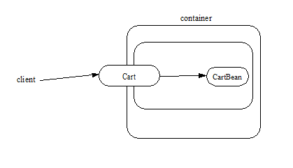
A client obtains a reference to a Cart session object, which provides a shopping service, by means of dependency injection or using JNDI lookup. The client then uses this session object to fill the cart with items and to purchase its contents. Cart is a stateful session.
In this example, the client obtains a reference to the Cart ’s business interface through dependency injection. The client then uses the business interface to initialize the session object and add a few items to it. The startShopping method is a business method that is provided for the initialization of the session object.
@EJB Cart cart;
…
cart.startShopping();
cart.addItem(66);
cart.addItem(22);
Finally the client purchases the contents of the shopping cart, and finishes the shopping activity.5
cart.purchase();
cart.finishShopping();
3.4.7. Session Object Identity
A client can test two EJB 3.x remote or local view references for identity by means of the Object.equals and Object.hashCode methods.
3.4.7.1. Stateful Session Beans
A stateful session object has a unique identity that is assigned by the container at the time the object is created. A client of the stateful session bean business interface can determine if two business interface or no-interface view references refer to the same session object by use of the equals method.
For example,
@EJB Cart cart1;
@EJB Cart cart2;
…
if (cart1.equals(cart1)) \{ // this test must return true
...
}
…
if (cart1.equals(cart2)) \{ // this test must return false
...
}
All stateful session bean references to the same business interface for the same stateful session bean instance will be equal. All references to the no-interface view of the same stateful session bean instance will be equal. Stateful session bean references to different interface types or between an interface type and a no-interface view or to different stateful session bean instances will not have the same identity.
3.4.7.2. Stateless Session Beans
All business object references of the same interface type for the same stateless session bean have the same object identity, which is assigned by the container. All references to the no-interface view of the same stateless session bean have the same object identity.
For example,
@EJB Cart cart1;
@EJB Cart cart2;
…
if (cart1.equals(cart1)) \{ // this test must return true
...
}
…
if (cart1.equals(cart2)) \{ // this test must also return true
...
}
The equals method always returns true when used to compare references to the same business interface type of the same stateless session bean. The equals method always returns true when used to compare references to the no-interface view of the same stateless session bean. Stateless session bean references to either different business interface types or between an interface type and a no-interface view or to different session beans will not be equal.
3.4.7.3. Singleton Session Beans
All business object references of the same interface type for the same singleton session bean have the same object identity, which is assigned by the container. All references to the no-interface view of the same singleton session bean have the same object identity.
For example,
@EJB Shared shared1;
@EJB Shared shared2;
…
if (shared1.equals(shared1)) \{ // this test must return true
...
}
…
if (shared1.equals(shared2)) \{ // this test must also return true
...
}
The equals method always returns true when used to compare references to the same business interface type of the same singleton session bean. The equals method always returns true when used to compare references to the no-interface view of the same singleton session bean. Session bean references to either different business interface types or between an interface type and a no-interface view or to different session beans will not be equal.
3.4.8. Asynchronous Invocations
By default, session bean invocations through the remote, local, and no-interface views are synchronous. The client blocks for the duration of the invocation and is returned control only after all invocation processing has completed. Clients can achieve asynchronous invocation behavior by invoking session bean methods that have been designed to support asynchrony.
When a client invokes an asynchronous method, the container returns control to the client immediately and continues processing the invocation on a separate thread of execution.
The client should expect to receive a system exception (in the form of the javax.ejb.EJBException) on the client thread if the container has problems allocating the internal resources required to support the asynchronous method.6 If a system exception is received on the client thread, the client can expect that the container will not be able to dispatch the asynchronous method. The client may wish to retry the asynchronous method at a later time.
If no system exception is received, the client can expect that the container will make an attempt to dispatch the asynchronous method. An exception resulting from the asynchronous method execution (e.g. an authorization failure, transaction commit failure, application exception, etc.) will be available via the Future<V> object.
3.4.8.1. Return Values
Asynchronous methods have a return type of void or Future<V>, where V represents the result value of the asynchronous invocation.
For Future<V>, the object returned from the client invocation is a container provided object. This object allows the client to retrieve the invocation result value, discover any invocation exception, or attempt to cancel the asynchronous invocation.
All methods of the java.util.concurrent.Future interface are supported. Unless otherwise noted, the behavior matches that described in its javadoc entry See Java™ Platform.
Future.cancel(boolean mayInterruptIfRunning)
If a client calls cancel on its Future object, the container will attempt to cancel the associated asynchronous invocation only if that invocation has not already been dispatched. There is no guarantee that an asynchronous invocation can be cancelled, regardless of how quickly cancel is called after the client receives its Future object. If the asynchronous invocation cannot be cancelled, the method must return false. If the asynchronous invocation is successfully cancelled, the method must return true.
The mayInterruptIfRunning flag controls whether, in the case that the asynchronous invocation can not be cancelled, the target enterprise bean should have visibility to the client’s cancel attempt. If the mayInterruptIfRunning flag is set to true, then subsequent calls to the SessionContext.wasCancelCalled method from within the associated dispatched asynchronous invocation must return true. If the mayInterruptIfRunning flag is set to false, then subsequent calls to the SessionContext.wasCancelCalled method from within the associated dispatched asynchronous invocation must return false.
Note that all the client Future cancel semantics (isCancelled, CancellationException, etc.) depend only on the result of Future.cancel. If the dispatched asynchronous method does decide to short circuit its processing as a result of checking SessionContext, it is the responsibility of the Bean Provider to decide how to convey that information to the client. Typically, that is done through a special return value or exception delivered via Future.get().
Future.get
The client calls one of the two Future.get methods in order to retrieve the result value or resulting exception from the associated asynchronous invocation. This specification recommends that unless the client successfully cancels the asynchronous invocation it should call get on every Future object it receives. If a call to get successfully returns a result value or throws an ExecutionException, all subsequent calls to get on the same Future object must result in that same behavior.
The EJB Container Provider is permitted to define a timeout value that governs the maximum amount of time the container maintains result values for completed asynchronous invocations. The configuration of such a timeout is beyond the scope of this specification.
3.4.9. Concurrent Access to Session Bean References
It is permissible to acquire a session bean reference and attempt to invoke the same reference object concurrently from multiple threads. However, the resulting client behavior on each thread depends on the concurrency semantics of the target bean. See See Serializing Session Bean Methods and See Singleton Session Bean Concurrency for details of the concurrency behavior for session beans.
3.5. The Web Service Client View of a Stateless or Singleton Session Bean
From the perspective of the client, the existence of the stateless session bean or singleton session bean is completely hidden behind the web service endpoint that the bean implements.
The web service client’s access to the web service functionality provided by a session bean occurs through a web service endpoint. In the case of Java clients, this endpoint is accessed as a JAX-WS service endpoint using the JAX-WS client view APIs, as described in See Java™ API for XML-based Web.
The following diagram illustrates the view that is provided to Java EE web service clients of a stateless session bean through the JAX-WS client view APIs.
===
Web Service Client View of Stateless Session Beans Deployed in a Container
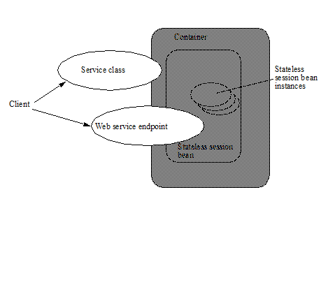
3.5.1. JAX-WS Web Service Clients
The Java EE web service client obtains a reference to the service instance of the javax.xml.ws.Service class through dependency injection or using JNDI. The service class can be a generic javax.xml.ws.Service class or a generated service class which extends the javax.xml.ws.Service class. The service instance is then used to obtain a port object for the web service endpoint. The mechanisms and APIs for client web service access are described in the JAX-WS specification See Java™ API for and in the Web Services for Java EE specification See Web Services for Java.
The following example illustrates how a JAX-WS client obtains a reference to a web service endpoint, obtains a port object for the web service endpoint, and invokes a method on that endpoint.
@WebServiceRef
public StockQuoteService stockQuoteService;
…
StockQuoteProvider sqp =
stockQuoteService.getStockQuoteProviderPort();
float quotePrice = sqp.getLastTradePrice("ACME");
…
The use of service references and the WebServiceRef annotation are described in further detail in See Java™ API for XML-based Web Service.
3.6. Remote and Local Client View of Session Beans Written to the EJB 2.1 Client View API
The remainder of this chapter describes the session bean client view defined by the EJB 2.1 and earlier specifications. Support for the definition and use of these earlier client interfaces is required to be provided by implementations of this specification. The EJB 2.1 remote and local client views are not supported for singleton session beans.
3.6.1. Locating a Session Bean’s Home Interface
The EJB 2.1 and earlier specifications required that the client first obtain a reference to a session bean’s home interface, and then use the home interface to obtain a reference to the bean’s component interface. This earlier programming model continues to be supported by this specification. Both dependency injection and use of the EJBContext lookup method may be used as an alternative to the JNDI APIs to obtain a reference to the home interface.
For example, an EJB 3.x client, com.acme.example.MySessionBean , might obtain a reference to a bean’s home interface as follows:
@EJB CartHome cartHome;
This home interface could be looked up in JNDI using the EJBContext lookup method as shown in the following code segment:
@Resource SessionContext ctx;
…
CartHome cartHome =
(CartHome)ctx.lookup("
_com.acme.example.MySessionBean/_ cartHome");
When the EJBContext lookup method is used to look up a home interface, the use of javax.rmi.PortableRemoteObject.narrow is not required.
The following code segments illustrate how the home interface is obtained when the JNDI APIs are used directly, as was required in the EJB 2.1 programming model. For example, the remote home interface for the Cart session bean can be located using the following code segment:
Context initialContext = new InitialContext();
CartHome cartHome =
(CartHome)javax.rmi.PortableRemoteObject.narrow(
initialContext.lookup("java:comp/env/ejb/cart"),
CartHome.class);
If the Cart session bean provides a local client view instead of a remote client view and CartHome is a local home interface, this lookup might be as follows:
Context initialContext = new InitialContext();
CartHome cartHome = (CartHome)
initialContext.lookup("java:comp/env/ejb/cart");
3.6.2. Session Bean’s Remote Home Interface
This section is specific to session beans that provide a remote client view using the remote component interface and remote home interface.
This was the only way of providing a remote client view in the EJB 2.1 and earlier releases. The remote client view provided by the business interface under the EJB 3.x API, as described in See Client View of Session Beans Written to the EJB 3.x Simplified API, is now to be preferred.
The container provides the implementation of the remote home interface for each session bean that defines a remote home interface that is deployed in the container. The object that implements a session bean’s remote home interface is called a session EJBHome object. The container makes the session bean’s remote home interface available to the client through dependency injection or through lookup in the JNDI namespace.
The remote home interface allows a client to do the following:
Create a new session object.
Remove a session object.
Get the javax.ejb.EJBMetaData interface for the session bean. The javax.ejb.EJBMetaData interface is intended to allow application assembly tools to discover information about the session bean, and to allow loose client/server binding and client-side scripting.
Obtain a handle for the remote home interface. The home handle can be serialized and written to stable storage. Later, possibly in a different JVM, the handle can be deserialized from stable storage and used to obtain back a reference of the remote home interface.
The life cycle of the distributed object implementing the remote home interface (the EJBHome object) or the local Java object implementing the local home interface (the EJBLocalHome object) is container-specific. A client application should be able to obtain a home interface, and then use it multiple times, during the client application’s lifetime.
A client can pass a remote home object reference to another application. The receiving application can use the home interface in the same way that it would use a remote home object reference obtained via JNDI.
3.6.2.1. Creating a Session Object
A home interface defines one or more create<METHOD> methods, one for each way to create a session object. The arguments of the create methods are typically used to initialize the state of the created session object.
The return type of a create<METHOD> method on the remote home interface is the session bean’s remote component interface.
The following example illustrates a remote home interface that defines two create<METHOD> methods:
public interface CartHome extends javax.ejb.EJBHome \{
Cart create(String customerName, String account)
throws RemoteException, BadAccountException,
CreateException;
Cart createLargeCart(String customerName, String account)
throws RemoteException, BadAccountException,
CreateException;
}
The following example illustrates how a client creates a new session object using a create <METHOD> method of the CartHome interface:
cartHome.create("John", "7506");
3.6.2.2. Removing a Session Object
A remote client may remove a session object using the remove() method of the javax.ejb.EJBObject interface, or the remove(Handle handle) method of the javax.ejb.EJBHome interface.
Because session objects do not have primary
keys that are accessible to clients, invoking the
javax.ejb.EJBHome.remove(Object primaryKey) method on a session results
in a javax.ejb.RemoveException.
3.6.3. Session Bean’s Local Home Interface
This section is specific to session beans that provide a local client view using the local component interface and local home interface.
This was the only way of providing a local client view in the EJB 2.1 and earlier releases. The local client view provided by the business interface under the EJB 3.x API, as described in See Client View of Session Beans Written to the EJB 3.x Simplified API, is now to be preferred.
The container provides the implementation of the local home interface for each session bean that defines a local home interface that is deployed in the container. The object that implements a session bean’s local home interface is called a session EJBLocalHome object. The container makes the session bean’s local home interface available to the client through JNDI.
The local home interface allows a local client to do the following:
Create a new session object.
Remove a session object.
A client can pass a local home object reference to another application through its local component interface. A local home object reference cannot be passed as an argument or result of a method on an enterprise bean’s remote home or remote component interface.
3.6.3.1. Creating a Session Object
A local home interface defines one or more create<METHOD> methods, one for each way to create a session object. The arguments of the create methods are typically used to initialize the state of the created session object.
The return type of a create<METHOD> method on the local home interface is the session bean’s local component interface.
The following example illustrates a local home interface that defines two create<METHOD> methods:
public interface CartHome extends javax.ejb.EJBLocalHome \{
Cart create(String customerName, String account)
throws BadAccountException, CreateException;
Cart createLargeCart(String customerName, String account)
throws BadAccountException, CreateException;
}
The following example illustrates how a client creates a new session object using a create <METHOD> method of the CartHome interface:
cartHome.create("John", "7506");
3.6.3.2. Removing a Session Object
A local client may remove a session object using the remove() method of the javax.ejb.EJBLocalObject interface.
Because session objects do not have primary
keys that are accessible to clients, invoking the
javax.ejb.EJBLocalHome.remove(Object primaryKey) method on a session
results in a javax.ejb.RemoveException.
3.6.4. EJBObject and EJBLocalObject
A remote or local client that uses the EJB 2.1 client view APIs uses the session bean’s component interface to access a session bean instance. The class that implements the session bean’s component interface is provided by the container. Instances of a session bean’s remote component interface are called session EJBObjects . Instances of a session bean’s local component interface are called session EJBLocalObjects .
A session EJBObject supports:
The business logic methods of the object. The session EJBObject delegates invocation of a business method to the session bean instance.
The methods of the javax.ejb.EJBObject interface. These methods allow the client to:
Get the session object’s remote home interface.
Get the session object’s handle.
Test if the session object is identical with another session object.
Remove the session object.
A session EJBLocalObject supports:
The business logic methods of the object. The session EJBLocalObject delegates invocation of a business method to the session bean instance.
The methods of the javax.ejb.EJBLocalObject interface. These methods allow the client to:
Get the session object’s local home interface.
Test if the session object is identical with another session object.
Remove the session object.
The implementation of the methods defined in the javax.ejb.EJBObject and javax.ejb.EJBLocalObject interfaces is provided by the container. They are not delegated to the instances of the session bean class.
3.6.5. Client view of Session Object’s Life Cycle
From the point of view of a local or remote client using the EJB 2.1 and earlier client view API, the life cycle of a session object is illustrated below.
===
Life Cycle of a Session Object.
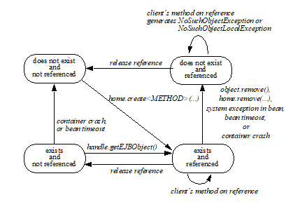
A session object does not exist until it is created. When a client creates a session object, the client has a reference to the newly created session object’s component interface.
3.6.5.1. References to Session Object Remote Component Interfaces
A client that has a reference to a session object’s remote component interface can then do any of the following:
Invoke business methods defined in the session object’s remote component interface.
Get a reference to the session object’s remote home interface.
Get a handle for the session object.
Pass the reference as a parameter or return value within the scope of the client.
Remove the session object. A container may also remove the session object automatically when the session object’s lifetime expires.
It is invalid to reference a session object that does not exist. Attempted remote invocations on a stateful session object that does not exist result in a java.rmi.NoSuchObjectException.7
3.6.5.2. References to Session Object Local Component Interfaces
A client that has a reference to a session object’s local component interface can then do any of the following:
Invoke business methods defined in the session object’s local component interface.
Get a reference to the session object’s local home interface.
Pass the reference as a parameter or return value of a local component interface method.
Remove the session object. A container may also remove the session object automatically when the session object’s lifetime expires.
It is invalid to reference a session object that does not exist. Attempted invocations on a stateful session object that does not exist result in javax.ejb.NoSuchObjectLocalException.8
A client can pass a local object reference or local home object reference to another application through its local component interface. A local object reference or local home object reference cannot be passed as an argument or result of a method on an enterprise bean’s remote home or remote component interface.
3.6.6. Creating and Using a Session Object
An example of the session bean runtime objects is illustrated by the following diagram:
===
Session Bean Example Objects
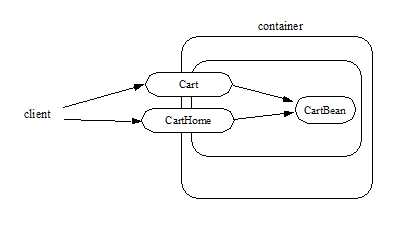
A client creates a remote Cart session object, which provides a shopping service, using a create<METHOD> method of the Cart ’s remote home interface. The client then uses this session object to fill the cart with items and to purchase its contents.
Suppose that the end-user wishes to start the shopping session, suspend the shopping session temporarily for a day or two, and later complete the session. The client might implement this feature by getting the session object’s handle, saving the serialized handle in persistent storage, and using it later to reestablish access to the original Cart .
For the following example, we start by looking up the Cart ’s remote home interface in JNDI. We then use the remote home interface to create a Cart session object and add a few items to it:
CartHome cartHome = (CartHome)javax.rmi.PortableRemoteObject.narrow(
initialContext.lookup(...), CartHome.class);
Cart cart = cartHome.createLargeCart(…);
cart.addItem(66);
cart.addItem(22);
Next we decide to complete this shopping session at a later time so we serialize a handle to this cart session object and store it in a file:
Handle cartHandle = cart.getHandle();
_//_ _serialize cartHandle, store in a file..._
Finally we deserialize the handle at a later time, re-create the reference to the cart session object, and purchase the contents of the shopping cart:
Handle cartHandle = …; // deserialize from a file…
Cart cart = (Cart)javax.rmi.PortableRemoteObject.narrow(
cartHandle.getEJBObject(), Cart.class);
cart.purchase();
cart.remove();
3.6.7. Object Identity
Session objects are intended to be private resources used only by the client that created them. For this reason, session objects, from the client’s perspective, appear anonymous. Session objects do not expose their identity as a primary key, on the opposite, they hide their identity. As a result, the EJBObject.getPrimaryKey() method results in a java.rmi.RemoteException and the EJBLocalObject.getPrimaryKey() method results in a javax.ejb.EJBException , and the EJBHome.remove(Object primaryKey) and the EJBLocalHome.remove(Object primaryKey) methods result in a javax.ejb.RemoveException if called on a session bean. If the EJBMetaData.getPrimaryKeyClass() method is invoked on a EJBMetaData object for a session bean, the method throws the java.lang.RuntimeException .Since all session objects hide their identity, there is no need to provide a finder for them. The home interface of a session bean must not define any finder methods.
A session object handle can be held beyond the life of a client process by serializing the handle to persistent storage. When the handle is later deserialized, the session object it returns will work as long as the session object still exists on the server. (An earlier timeout or server crash may have destroyed the session object.)A handle is not a capability, in the security sense, that would automatically grant its holder the right to invoke methods on the object. When a reference to a session object is obtained from a handle, and then a method on the session object is invoked, the container performs the usual access checks based on the caller’s principal.
3.6.7.1. Stateful Session Beans
A stateful session object has a unique identity that is assigned by the container at create time.
A remote client can determine if two remote object references refer to the same session object by invoking the isIdentical(EJBObject otherEJBObject) method on one of the references. A local client can determine if two local object references refer to the same session object by invoking the isIdentical(EJBLocalObject otherEJBLocalObject) method.
The following example illustrates the use of the isIdentical method for a stateful session object.
FooHome fooHome = …; // obtain home of a stateful session bean
Foo foo1 = fooHome.create(…);
Foo foo2 = fooHome.create(…);
if (foo1.isIdentical(foo1)) \{ // this test must return true
...
}
if (foo1.isIdentical(foo2)) \{ // this test must return false
...
}
3.6.7.2. Stateless Session Beans
All session objects of the same stateless session bean within the same home have the same object identity, which is assigned by the container. If a stateless session bean is deployed multiple times (each deployment results in the creation of a distinct home), session objects from different homes will have a different identity.
The isIdentical(EJBObject otherEJBObject) and isIdentical(EJBLocalObject otherEJBLocalObject) methods always returns true when used to compare object references of two session objects of the same stateless session bean.
The following example illustrates the use of the isIdentical method for a stateless session object.
FooHome fooHome = …; // obtain home of a stateless session bean
Foo foo1 = fooHome.create();
Foo foo2 = fooHome.create();
if (foo1.isIdentical(foo1)) \{ // this test returns true
...
}
if (foo1.isIdentical(foo2)) \{ // this test returns true
...
}
3.6.7.3. getPrimaryKey()
The object identifier of a session object is, in general, opaque to the client. The result of getPrimaryKey() on a session EJBObject reference results in java.rmi.RemoteException . The result of getPrimaryKey() on a session EJBLocalObject reference results in javax.ejb.EJBException .
3.6.8. Type Narrowing
A client program that is intended to be interoperable with all compliant EJB container implementations must use the javax.rmi.PortableRemoteObject.narrow method to perform type-narrowing of the client-side representations of the remote home and remote component interfaces.9
Note: Programs using the cast operator for narrowing the remote component interface and remote home interface are likely to fail if the container implementation uses RMI-IIOP as the underlying communication transport.
4. Session Bean Component Contract
This chapter specifies the contract between a session bean and its container. It defines the life cycle of the session bean instances.
This chapter defines the developer’s view of session bean state management and the container’s responsibilities for managing session bean state.
4.1. Overview
A session bean instance is an instance of the session bean class. It holds the session object’s state.
A session bean instance is an extension of the client that creates it:
In the case of a stateful session bean, its fields contain conversational state on behalf of the session object’s client. This state describes the conversation represented by a specific client/session object pair.
It typically reads and updates data in a database on behalf of the client.
In the case of a stateful session bean, its lifetime is controlled by the client.
A container may also terminate a session bean instance’s life after a Deployer-specified timeout or as a result of the failure of the server on which the bean instance is running. For this reason, a client should be prepared to recreate a new session object if it loses the one it is using.
Typically, a session object’s conversational state is not written to the database. A session Bean Provider simply stores it in the session bean instance’s fields and assumes its value is retained for the lifetime of the instance. A developer may use an extended persistence context to store a stateful session bean’s persistent conversational state. See the document “ Java Persistence API” specification See Java™ Persistence.
A session bean that does not make use of the Java Persistence API must explicitly manage cached database data. A session bean instance must write any cached database updates prior to a transaction completion, and it must refresh its copy of any potentially stale database data at the beginning of the next transaction. A session bean must also refresh any java.sql Statement objects before they are used in a new transaction context. Use of the Java Persistence API provides a session bean with automatic management of database data, including the automatic flushing of cached database updates upon transaction commit. See See Java™ Persistence API.
The container manages the life cycle of the session bean instances. It notifies the instances when bean action may be necessary, and it provides a full range of services to ensure that the session bean implementation is scalable and can support a large number of clients.
A session bean may be invoked either synchronously or asynchronously.
A session bean may be either:
_stateless_ —the session bean instances contain no conversational state between methods; any instance can be used for any client.
_stateful_ —the session bean instances contain conversational state which must be retained across methods and transactions.
singleton—a single session bean instance is shared between clients and supports concurrent access.
4.2. Conversational State of a Stateful Session Bean
The conversational state of a stateful session object is defined as the session bean instance’s field values, its associated interceptors and their instance field values, plus the transitive closure of the objects from these instances’ fields reached by following Java object references.
To efficiently manage the size of its working set, a session bean container may need to temporarily transfer the state of an idle stateful session bean instance to some form of secondary storage. The transfer from the working set to secondary storage is called instance passivation . The transfer back is called activation .
In advanced cases, a session object’s conversational state may contain open resources, such as open sockets and open database cursors. A container cannot retain such open resources when a session bean instance is passivated. A developer of a stateful session bean must close and open the resources in the PrePassivate and PostActivate lifecycle callback interceptor methods.10
A container may only passivate a stateful session bean instance when the instance is not in a transaction.
A container must not passivate a stateful session bean that is designated as not passivation capable. See section See Disabling Passivation of Stateful Session Beans on how to disable passivation of stateful session beans.
A container must not passivate a stateful session bean with an extended persistence context unless the following conditions are met:11
All the entities in the persistence context are serializable.
The EntityManager is serializable.
A stateless session bean is never passivated.
A singleton session bean is never passivated.
4.2.1. Instance Passivation and Conversational State
The Bean Provider is required to ensure that the PrePassivate method leaves the instance fields and the fields of its associated interceptors ready to be serialized by the container. The objects that are assigned to the instance’s non- transient fields and the non- transient fields of its interceptors after the PrePassivate method completes must be one of the following.
A serializable object12.
A null .
A reference to an enterprise bean’s local or remote business interface.
A reference to an enterprise bean’s no-interface view.
A reference to an enterprise bean’s remote component interface, even if the stub class is not serializable.
A reference to an enterprise bean’s remote home interface, even if the stub class is not serializable.
A reference to an entity bean’s13 local component interface, even if it is not serializable.
A reference to an entity bean’sSee Component contract and client view of entity beans are described in the EJB Optional Features document [40.] local home interface, even if it is not serializable.
A reference to the SessionContext object, even if it is not serializable.
A reference to the environment naming context (that is, the java:comp/env JNDI context) or any of its subcontexts.
A reference to the UserTransaction interface.
A reference to a resource manager connection factory14.
A reference to a container-managed EntityManager object, even if it is not serializable.
A reference to an EntityManagerFactory object obtained via injection or JNDI lookup, even if it is not serializable.
A reference to a javax.ejb.Timer object.
An object that is not directly serializable, but becomes serializable by replacing the references to an enterprise bean’s business interface, an enterprise bean’s home and component interfaces, the references to the SessionContext object, the references to the java:comp/env JNDI context and its subcontexts, the references to the UserTransaction interface, and the references to the EntityManager and/or EntityManagerFactory by serializable objects during the object’s serialization.
This means, for example, that the Bean Provider must close all JDBC™ connections in the PrePassivate method and assign the instance’s fields storing the connections to null .
The last bulleted item covers cases such as storing Collections of component interfaces in the conversational state.
The Bean Provider must assume that the content of transient fields may be lost between the PrePassivate and PostActivate notifications. Therefore, the Bean Provider should not store in a transient field a reference to any of the following objects: SessionContext object; environment JNDI naming context and any its subcontexts; business interfaces; home and component interfaces; EntityManager interface; EntityManagerFactory interface; UserTransaction interface.
The restrictions on the use of transient fields ensure that containers can use Java Serialization during passivation and activation.
The following are the requirements for the container.
The container performs the Java programming language Serialization (or its equivalent) of the instance’s state (and its interceptors’ state) after it invokes the PrePassivate method on the instance and its interceptors.
The container must be able to properly save and restore the reference to the business interfaces and home and component interfaces of the enterprise beans stored in the instance’s state even if the classes that implement the object references are not serializable.
The container may use, for example, the object replacement technique that is part of the java.io.ObjectOutputStream and java.io.ObjectInputStream protocol to externalize the home and component references.
The container must be able to properly save and restore references to timers stored in the instance’s state even if the classes that implement the timers are not serializable.
If the session bean instance stores in its conversational state an object reference to the javax.ejb.SessionContext interface, the container must be able to save and restore the reference across the instance’s passivation. The container can replace the original SessionContext object with a different and functionally equivalent SessionContext object during activation.
If the session bean instance stores in its conversational state an object reference to the java:comp/env JNDI context or its subcontext, the container must be able to save and restore the object reference across the instance’s passivation. The container can replace the original object with a different and functionally equivalent object during activation.
If the session bean instance stores in its conversational state an object reference to the UserTransaction interface, the container must be able to save and restore the object reference across the instance’s passivation. The container can replace the original object with a different and functionally equivalent object during activation.
If the session bean instance stores in its conversational state an object reference to a container-managed EntityManager or to an EntityManagerFactory obtained via injection or JNDI lookup, the container must be able to save and restore the object reference across the instance’s passivation.
The container may destroy a session bean instance if the instance does not meet the requirements for serialization after PrePassivate.
While the container is not required to use the Serialization protocol for the Java programming language to store the state of a passivated session instance, it must achieve the equivalent result. The one exception is that containers are not required to reset the value of transient fields during activation15. Declaring the session bean’s fields as transient is, in general, discouraged.
4.2.2. The Effect of Transaction Rollback on Conversational State
A session object’s conversational state is not transactional. It is not automatically rolled back to its initial state if the transaction in which the object has participated rolls back.
If a rollback could result in an inconsistency between a session object’s conversational state and the state of the underlying database, the bean developer (or the application development tools used by the developer) must use the afterCompletion notification to manually reset its state.
4.3. Protocol Between a Session Bean Instance and its Container
Containers themselves make no actual service demands on the session bean instances. The container makes calls on a bean instance to provide it with access to container services and to deliver notifications issued by the container.
4.3.1. Required Session Bean Metadata
A session bean must be annotated or denoted in the deployment descriptor as a stateless, stateful, or singleton session bean. A stateless session bean must be annotated with the Stateless annotation or denoted in the deployment descriptor as a stateless session bean. A stateful session bean must be annotated with the Stateful annotation or denoted in the deployment descriptor as a stateful session bean. A singleton session bean must be annotated with the Singleton annotation or denoted in the deployment descriptor as a singleton session bean. The Stateful , Singleton , and Stateless annotations are component-defining annotations and are applied to the bean class.
4.3.2. Dependency Injection
A session bean may use dependency injection mechanisms to acquire references to resources or other objects in its environment (see See Enterprise Bean Environment). If a session bean makes use of dependency injection, the container injects these references after the bean instance is created, and before any business methods are invoked on the bean instance. If a dependency on the SessionContext is declared, or if the bean class implements the optional SessionBean interface (see Section See The SessionBean Interface), the SessionContext is also injected at this time. If dependency injection fails, the bean instance is discarded.
Under the EJB 3.x API, the bean class may acquire the SessionContext interface through dependency injection without having to implement the SessionBean interface. In this case, the Resource annotation (or resource-env-ref deployment descriptor element) is used to denote the bean’s dependency on the SessionContext . See See Enterprise Bean Environment.
4.3.3. The SessionContext Interface
If the bean specifies a dependency on the SessionContext interface (or if the bean class implements the SessionBean interface), the container must provide the session bean instance with a SessionContext object. This gives the session bean instance access to the instance’s context maintained by the container. The SessionContext interface has the following methods:
The getCallerPrincipal method returns the java.security.Principal that identifies the invoker.
The isCallerInRole method tests if the session bean instance’s caller has a particular role.
The setRollbackOnly method allows the instance to mark the current transaction such that the only outcome of the transaction is a rollback. Only instances of a session bean with container-managed transaction demarcation are permitted to use this method.
The getRollbackOnly method allows the instance to test if the current transaction has been marked for rollback. Only instances of a session bean with container-managed transaction demarcation are permitted to use this method.
The getUserTransaction method returns the javax.transaction.UserTransaction interface. The instance can use this interface to demarcate transactions and to obtain transaction status. Only instances of a session bean with bean-managed transaction demarcation are permitted to use this method.
The getTimerService method returns the javax.ejb.TimerService interface. Only stateless session beans and singleton session beans are permitted to use this method. Stateful session beans cannot be timed objects.
The getBusinessObject(Class businessInterface) method returns a business object reference to the session bean’s business interface or no-interface view. In the case of the no-interface view, the argument is of the type of the bean class. Only session beans with an EJB 3.x business interface or no-interface view are permitted to call this method.
If a subsequent invocation is made on the result of _getBusinessObject_ , then:
For a stateless session bean, the invocation will be delivered to another stateless session bean instance.
For a stateful session bean or singleton session bean, the invocation will be delivered to the bean instance that returned the reference. The existing rules regarding reentrancy would then apply.
The getInvokedBusinessInterface method returns the session bean business interface or no-interface view (bean class) type through which the bean was invoked.
The getEJBObject method returns the session bean’s remote component interface. Only session beans with a remote EJBObject interface are permitted to call this method.
The getEJBHome method returns the session bean’s remote home interface. Only session beans with a remote home interface are permitted to call this method.
The getEJBLocalObject method returns the session bean’s local component interface. Only session beans with a local EJBLocalObject interface are permitted to call this method.
The getEJBLocalHome method returns the session bean’s local home interface. Only session beans with a local home interface are permitted to call this method.
The lookup method enables the session bean to look up its environment entries in the JNDI naming context.
The wasCancelCalled method enables an asynchronous session bean method to check whether the client invoked its Future.cancel method. The SessionContext.wasCancelCalled method only returns true if the cancel method was invoked on the client Future object corresponding to the currently executing business method and the mayInterruptIfRunning parameter was set to true.
The getContextData method enables a business method, lifecycle callback method, or timeout method to retrieve or update the interceptor and/or webservices context data associated with its invocation.
4.3.3.1. Use of the MessageContext Interface by Session Beans
A session bean that implements a web service endpoint using the JAX-WS contracts should use the JAX-WS WebServiceContext , which can be injected by use of the Resource annotation. The WebServiceContext interface allows the session bean instance to see the SOAP message for the web service endpoint, as well as the properties set by the JAX-WS message handlers, if any. The session bean may use the WebServiceContext interface to set properties for the JAX-WS message handlers, if any. See See Java™ API for XML-based Web Service.
The javax.xml.ws.handler.MessageContext (See Java™ API for XML-based Web Service) is also accessible to interceptors for session bean web service endpoints. See Section See InvocationContext.
4.3.4. Session Bean Lifecycle Callback Interceptor Methods
The following lifecycle event callbacks are supported for session beans. With the exception of AroundConstruct lifecycle callback interceptors (see See Interceptors), all interceptor methods may be defined directly on the bean class or on a separate interceptor class. See See Lifecycle Callback Interceptor Methods and Chapter See Interceptors.
_AroundConstruct_
_PostConstruct_
_PreDestroy_
_PostActivate_
_PrePassivate_
The PostConstruct callback invocations occur before the first business method invocation on the bean instance. This is at a point after which any dependency injection has been performed by the container.
The PostConstruct lifecycle callback interceptor methods execute in an unspecified security context.
The PostConstruct lifecycle callback interceptor methods for a stateless session bean execute in an unspecified transaction context. The PostConstruct lifecycle callback interceptor methods for a singleton session bean execute in a transaction context determined by the bean’s transaction management type and any applicable transaction attribute. The PostConstruct lifecycle callback interceptor methods for a stateful session bean execute in a transaction context determined by the lifecycle callback method’s transaction attribute.
The PreDestroy callback notification signals that the instance is in the process of being removed by the container. In the PreDestroy lifecycle callback interceptor methods, the instance typically releases the resources that it has been holding.
The PreDestroy lifecycle callback interceptor methods execute in an unspecified security context.
The PreDestroy lifecycle callback interceptor methods for a stateless session bean execute in an unspecified transaction context. The PreDestroy lifecycle callback interceptor methods for a singleton session bean execute in a transaction context determined by the bean’s transaction management type and any applicable transaction attribute. The PreDestroy lifecycle callback interceptor methods for a stateful bean execute in a transaction context determined by the lifecycle callback method’s transaction attribute.
The PrePassivate and PostActivate lifecycle callback interceptor methods are only called on a stateful session bean instance if the bean is passivation capable. By default a stateful session bean is passivation capable. See section See Disabling Passivation of Stateful Session Beans on how to disable passivation of a stateful session bean.
The PrePassivate callback notification signals the intent of the container to passivate the instance. The PostActivate notification signals the instance it has just been reactivated. Because containers automatically maintain the conversational state of a stateful session bean instance when it is passivated, these notifications are not needed for most session beans. Their purpose is to allow stateful session beans to maintain those open resources that need to be closed prior to an instance’s passivation and then reopened during an instance’s activation.
The PrePassivate and PostActivate lifecycle callback interceptor methods execute in an unspecified security context.
The PrePassivate and PostActivate lifecycle callback interceptor methods execute in a transaction context determined by the lifecycle callback method’s transaction attribute.
4.3.5. The SessionBean Interface
The session bean class is not required to implement the SessionBean interface or the Serializable interface. Interceptor classes for the bean are likewise not required to implement the Serializable interface.
_The SessionBean interface was required to be implemented by the session bean class in earlier versions of the Enterprise JavaBeans specification. Under the EJB 3.x API, the functionality previously provided by the SessionBean interface is available to the bean class through selective use of dependency injection (of the SessionContext) and optional lifecycle callback interceptor methods._
The SessionBean interface defines four methods: setSessionContext , ejbRemove , ejbPassivate , and ejbActivate .
The setSessionContext method is called by the bean’s container to associate a session bean instance with its context maintained by the container. Typically a session bean instance retains its session context as part of its state.
The ejbRemove notification signals that the instance is in the process of being removed by the container. In the ejbRemove method, the instance typically releases the same resources that it releases in the ejbPassivate method.
Under the EJB 3.x API, the bean class may optionally define a PreDestroy lifecycle callback interceptor method for notification of the container’s removal of the bean instance.
The ejbPassivate notification signals the intent of the container to passivate the instance. The ejbActivate notification signals the instance it has just been reactivated. Their purpose is to allow stateful session beans to maintain those open resources that need to be closed prior to an instance’s passivation and then reopened during an instance’s activation. The ejbPassivate and ejbActivate methods are only called on stateful session bean instances.
Under the EJB 3.x API, the bean class may optionally define PrePassivate and/or PostActivate lifecycle callback interceptor methods for notification of the passivation/activation of the bean instance.
This specification requires that the ejbRemove , ejbActivate , and ejbPassivate methods of the SessionBean interface, and the ejbCreate method of a stateless session bean be treated as PreDestroy , PostActivate , PrePassivate and PostConstruct life cycle callback interceptor methods, respectively.
If the session bean implements the SessionBean interface, the PreDestroy annotation on the bean class can only be applied to the ejbRemove method; the PostActivate annotation can only be applied to the ejbActivate method; the PrePassivate annotation can only be applied to the ejbPassivate method. Similar requirements apply to use of deployment descriptor metadata as an alternative to the use of annotations.
4.3.6. The Session Synchronization Notifications for Stateful Session Beans
A stateful session bean class can optionally implement the javax.ejb. SessionSynchronization interface or annotate methods using the individual AfterBegin, BeforeCompletion, and AfterCompletion annotations. The deployment descriptor may also be used to declare the individual session synchronization methods. These provide the session bean instances with transaction synchronization notifications. The instances can use these notifications, for example, to manage database data they may cache within transactions—e.g., if the Java Persistence API is not used. A stateful session bean class may use either the javax.ejb.SessionSynchronization interface or the session synchronization annotations, but not both. If annotation are used, there must be at most one AfterBegin method, one BeforeCompletion method, and one AfterCompletion method for the bean.
The afterBegin notification signals a session bean instance that a new transaction has begun. The container invokes this method before the first business method within a transaction (which is not necessarily at the beginning of the transaction). The afterBegin notification is invoked with the transaction context. The instance may do any database work it requires within the scope of the transaction.
The beforeCompletion notification is issued when a session bean instance’s client has completed work on its current transaction but prior to committing the resource managers used by the instance. At this time, the instance should write out any database updates it has cached. The instance can cause the transaction to roll back by invoking the setRollbackOnly method on its SessionContext object.
The afterCompletion notification signals that the current transaction has completed. A completion status of true indicates that the transaction has committed. A status of false indicates that a rollback has occurred. Since a session bean instance’s conversational state is not transactional, it may need to manually reset its state if a rollback occurred.
All Container Providers must support the _ session synchronization notifications. If a bean class implements the _SessionSynchronization interface, the container must invoke the afterBegin , beforeCompletion , and afterCompletion notifications as required by the specification. If the bean implementor uses the session synchronization annotations, the container must invoke only the notifications corresponding to the annotations that have been used.
If a stateful session bean’s PostConstruct, PreDestroy, PrePassivate or PostActivate lifecycle callback interceptor method is invoked in the scope of a transaction, session synchronization callbacks for the transaction are not called on the bean instance.
A session synchronization method can have public, private, protected, or package level access. A session synchronization method must not be declared as final or static .
Only a stateful session bean with container-managed transaction demarcation can receive session synchronization notifications. Stateless session beans and singleton session beans must not implement the SessionSynchronization interface or use the session synchronization annotations.
There is no need for a session bean with bean-managed transaction demarcation to rely on the synchronization call backs because the bean is in control of the commit—the bean knows when the transaction is about to be committed and it knows the outcome of the transaction commit.
4.3.7. Timeout Callbacks for Stateless and Singleton Session Beans
A stateless session bean or singleton session bean can be registered with the EJB Timer Service for time-based event notifications. The container invokes the appropriate bean instance timeout callback method when a timer for the bean has expired. See See Timer Service. Stateful session beans cannot be registered with the EJB Timer Service, and therefore should not implement timeout callback methods.
4.3.8. Business Method Delegation
The session bean’s business interface, no-interface view, component interface, or web service endpoint defines the business methods callable by a client.
The container classes that implement these are generated by the container tools. The class that implements the session bean’s business interface and the class that implements the session bean’s no-interface view and the class that implements a session bean’s component interface delegate an invocation of a business method to the matching business method that is implemented in the session bean class. The class that handles requests to the web service endpoint invokes the session bean method that matches the web service method corresponding to the SOAP request.
4.3.9. Session Bean Creation
Except as noted below, the container creates an instance of a session bean as follows. First, the container calls the bean class constructor to create a new session bean instance. Second, the container performs any dependency injection as specified by metadata annotations on the bean class or by the deployment descriptor. This includes the bean’s SessionContext, if applicable. Third, the container calls the PostConstruct lifecycle callback interceptor methods for the bean, if any. The additional steps described below in sections See Stateful Session Beans and See Stateless Session Beans apply if the session bean is invoked through the EJB 2.1 client view APIs.
If an interceptor associated with the session bean declares an AroundConstruct lifecycle callback interceptor method, the container follows the rules for the AroundConstruct interceptors defined in the Interceptors specification See Interceptors.
4.3.9.1. Stateful Session Beans
If the bean is a stateful session bean and the client has used one of the create<METHOD> methods defined in the session bean’s home or local home interface to create the bean, the container then calls the instance’s initialization method whose signature matches the signature of the create<METHOD> invoked by the client, passing to the method the input parameters sent from the client. If the bean class is written to the EJB 3.x API, and has been adapted for use with an earlier client view, this initialization method is a matching Init method, as designated by use of the Init annotation, or init-method deployment descriptor element16. If the bean class was written to the EJB 2.1 or earlier API, this initialization method is a matching ejbCreate<METHOD> method, as described in See ejbCreate<METHOD> Methods.
Each stateful session bean class that has a home interface must have at least one such initialization method. The number and signatures of a session bean’s initialization methods are specific to each session bean class. Since a stateful session bean represents a specific, private conversation between the bean and its client, its initialization parameters typically contain the information the client uses to customize the bean instance for its use.
4.3.9.2. Stateless Session Beans
A stateless session bean that has an EJB 2.1 local or remote client view has a single create method on its home interface. In this case, EJB 2.1 required the stateless session bean class to have a single no-arg ejbCreate method. Under the EJB 3.x API, it is not required that a stateless session bean have an ejbCreate method, even when it has a home interface. An EJB 3.x stateless session bean class may have a PostConstruct method, as described in Section See Session Bean Lifecycle Callback Interceptor Methods.
If the stateless session bean instance has an ejbCreate method, the container treats the ejbCreate method as the instance’s PostConstruct method, and, in this case, the PostConstruct annotation (or deployment descriptor metadata) can only be applied to the bean’s ejbCreate method.
Since stateless session bean instances are typically pooled, the time of the client’s invocation of the create method need not have any direct relationship to the container’s invocation of the PostConstruct / ejbCreate method on the stateless session bean instance.
A stateless session bean that provides only a web service client view has no create method. If the ejbCreate method required by EJB 2.1 is present, it is treated by the container as the instance’s PostConstruct method, and is invoked when the container needs to create a new session bean instance in order to service a client request.
4.3.10. Stateful Session Bean Removal
A stateful session bean written to the EJB 3.x API typically has one or more remove methods designated by means of the Remove annotation or remove-method deployment descriptor element.17 Invocation of the remove method causes the removal of the stateful session bean after the remove method successfully completes. If the Remove annotation specifies the value of retainIfException as true and the invocation of the Remove method throws an application exception, the instance is not removed. The retain-if-exception subelement of the remove-method deployment descriptor element may be explicitly specified to override the retainIfException value specified or defaulted by the Remove annotation. The default value of the retainIfException element is false . If there are multiple remove methods, their retainIfException values can differ.
4.3.11. Stateful Session Bean Timeout
A Bean Provider or Deployer may optionally assign a timeout value to a stateful session bean. The stateful session bean timeout is specified using the StatefulTimeout annotation on the bean class. It may also be specified using the stateful-timeout deployment descriptor element. If both are specified, the deployment descriptor value overrides that of the annotation.
The timeout value is the amount of time a stateful session bean instance is permitted to remain idle (not receive any client invocations) before being removed by the container. A timeout value of -1 indicates that the bean must not be removed due to timeout for as long as the application is deployed. A timeout value of 0 indicates that the bean is immediately eligible for removal after becoming idle.
If a stateful session bean timeout is not designated using this standard metadata, the container determines when to end the lifetime of the bean, possibly based on vendor-specific configuration. The details of such configuration are beyond the scope of the specification.
A stateful session bean instance must not be removed due to timeout while it is associated with a transaction or while it is processing a business method or callback. The full stateful session bean life cycle is covered in See Stateful Session Beans.
4.3.12. Business Method Interceptor Methods for Session Beans
The AroundInvoke interceptor methods are supported for session beans. These interceptor methods may be defined on the bean class and/or on interceptor classes, and apply to the handling of the invocation of the business methods of the bean’s business interface, no-interface view, component interface, and/or web service endpoint.
For stateful session beans that use the session synchronization notifications, the afterBegin notification occurs before any AroundInvoke method invocations, and the beforeCompletion notification occurs after all AroundInvoke invocations have finished.
Interceptors are described in See Interceptors.
4.3.13. Serializing Session Bean Methods
The following requirements apply to stateless and stateful session beans. See section See Singleton Session Bean Concurrency for singleton session bean concurrency requirements.
The container serializes calls to each stateful and stateless session bean instance. Most containers will support many instances of a session bean executing concurrently; however, each instance sees only a serialized sequence of method calls. Therefore, a stateful or stateless session bean does not have to be coded as reentrant.
The container must serialize all the container-invoked callbacks (that is, the business method interceptor methods, lifecycle callback interceptor methods, timeout callback methods, beforeCompletion methods, and so on), and it must serialize these callbacks with the client-invoked business method calls.
By default, clients are allowed to make concurrent calls to a stateful session object and the container is required to serialize such concurrent requests. Note that the container never permits multi-threaded access to the actual stateful session bean instance. For this reason, Read/Write method locking metadata, as well as the bean-managed concurrency mode, are not applicable to stateful session beans and must not be used18. See See Singleton Session Bean Concurrency for a description of how these concurrency modes and locking types apply to singleton session beans.
The Bean Provider may optionally specify that concurrent client requests to a stateful session bean are prohibited. This is done using the AccessTimeout annotation or the access-timeout deployment descriptor element with a value of 0. In this case, if a client-invoked business method is in progress on an instance when another client-invoked call, from the same or different client, arrives at the same stateful session bean istance, if the second client is a client of the bean’s business interface or no-interface view, the concurrent invocation must result in the second client receiving the javax.ejb.ConcurrentAccessException19 . If the EJB 2.1 client view is used, the container must throw the java.rmi.RemoteException if the second client is a remote client, or the javax.ejb.EJBException if the second client is a local client.
There is no need for any restrictions against concurrent client access to stateless session beans because the container routes each request to a different instance of the stateless session bean class.
4.3.13.1. Stateful Session Bean Concurrent Access Timeouts
The AccessTimeout annotation is used to specify the amount of time a stateful session bean request should block in the case that it cannot immediately access a bean instance that is already processing a different request. If an access attempt times out, the container throws the javax.ejb.ConcurrentAccessTimeoutException to the client.
The AccessTimeout annotation can be specified on a business method or on the bean class (or superclass). The AccessTimeout annotation specified on a class applies the access timeout to all business methods of that class. If the AccessTimeout annotation is specified on both the class and on a business method of that class, the method-level annotation takes precedence.
An AccessTimeout value of -1 indicates that a concurrent client request will block indefinitely until it can proceed.
4.3.14. Transaction Context of Session Bean Methods
The following session bean methods are invoked in the scope of a transaction determined by the transaction attribute specified in the bean’s metadata annotations or deployment descriptor.
An implementation of a method defined in a session bean’s business interface or component interface or no-interface view.
A web service method.
A timeout callback method
A singleton session bean’s PostConstruct or PreDestroy lifecycle callback interceptor method.
A stateful session bean’s PostConstruct, PreDestroy, PrePassivate or PostActivate lifecycle callback interceptor method is invoked in the scope of a transaction determined by the transaction attribute specified in the lifecycle callback method’s metadata annotations or deployment descriptor.
A stateful session bean’s afterBegin and beforeCompletion methods are always called with the same transaction context as the business methods executed between the afterBegin and beforeCompletion methods.
A session bean’s constructor , setSessionContext , other dependency injection methods, other life cycle callback interceptor methods, and afterCompletion methods are called with an unspecified transaction context. Refer to section See Handling of Methods that Run with “an unspecified transaction context” for how the container executes methods with an unspecified transaction context.
If database operations are performed within a stateful session bean’s PostConstruct , PreDestroy , PrePassivate or PostActivate lifecycle callback interceptor methods these operations will not be part of the client’s transaction. If such a transaction is rolled back, the instance is discarded. See section See Dealing with Exceptions for rules on dealing with exceptions in stateful session beans.
4.4. Access in the Global JNDI Namespace
The Java EE Platform Specification defines a standardized global JNDI namespace and a series of related namespaces that map to the various scopes of a Java EE application. These namespaces can be used by applications to portably retrieve references to components and resources. This specification defines the JNDI names by which session beans are required to be registered within these namespaces.
4.4.1. Syntax
Each portable session bean global JNDI name has the following syntax:
java:global[/<app-name>]/<module-name>/<bean-name>[!<fully-qualified-interface-name>]
<app-name> only applies if the session bean is packaged within an .ear file. It defaults to the base name of the .ear file with no filename extension, unless specified by the application.xml deployment descriptor.
<module-name> is the name of the module in which the session bean is packaged. In a stand-alone ejb-jar file or .war file, <module-name> defaults to the base name of the module with any filename extension removed. In an ear file, the <module-name> defaults to the pathname of the module with any filename extension removed, but with any directory names included. The default module name can be overridden using the module-name element of ejb-jar.xml file (for ejb-jar files) or web.xml file (for .war files).
<bean-name> is the ejb-name of the enterprise bean. For enterprise beans defined via annotations, it defaults to the unqualified name of the session bean class, unless otherwise specified by the name element of the Stateless, Stateful, or Singleton annotation. For enterprise beans defined via the ejb-jar.xml file, it is specified in the ejb-name deployment descriptor element.
The container registers a separate JNDI name entry for each local business interface, each remote business interface, any no-interface view, any local home interface, and any remote home interface. For the no-interface view, the last portion of the entry name is the fully-qualified name of the bean class.
In addition to the previous requirements, if the bean exposes only one of the applicable client interfaces (or, alternatively has only a no-interface view), the container registers an entry for that view with the following syntax:
java:global[/<app-name>]/<module-name>/<bean-name>
The container is also required to make session bean JNDI names available through the java:app and java:module namespaces. 20
4.4.1.1. java:app
The java:app prefix allows a component executing within a Java EE application to access an application-specific namespace. The resulting syntax is:
java:app/<module-name>/<bean-name>[!<fully-qualified-interface-name>]
Note that <module-name> is a required part of the syntax, even for names based on session bean components packaged within a stand-alone module.
4.4.2. Examples
The following examples show the resulting global JNDI names for various session beans.
4.4.2.1. Session bean exposing a single local business interface
package com.acme;
@Stateless
public class FooBean implements Foo \{ … }
If FooBean is packaged in fooejb.jar without a deployment descriptor and deployed as a stand-alone module, the resulting JNDI name entries are:
java:global/fooejb/FooBean
java:global/fooejb/FooBean!com.acme.Foo
java:app/fooejb/FooBean
java:app/fooejb/FooBean!com.acme.Foo
java:module/FooBean
java:module/FooBean!com.acme.Foo
If FooBean is packaged in fooejb.jar within fooapp.ear, without the use of any deployment descriptors, the resulting global JNDI name entries are:
java:global/fooapp/fooejb/FooBean
java:global/fooapp/fooejb/FooBean!com.acme.Foo
java:app/fooejb/FooBean
java:app/fooejb/FooBean!com.acme.Foo
java:module/FooBean
java:module/FooBean!com.acme.Foo
If FooBean is packaged in a stand-alone fooweb.war file, without the use of any deployment descriptors, the resulting global JNDI name entries are:
java:global/fooweb/FooBean
java:global/fooweb/FooBean!com.acme.Foo
java:app/fooweb/FooBean
java:app/fooweb/FooBean!com.acme.Foo
java:module/FooBean
java:module/FooBean!com.acme.Foo
If FooBean is packaged in fooweb.war within fooapp.ear, without the use of any deployment descriptors, the resulting global JNDI name entries are:
java:global/fooapp/fooweb/FooBean
java:global/fooapp/fooweb/FooBean!com.acme.Foo
java:app/fooweb/FooBean
java:app/fooweb/FooBean!com.acme.Foo
java:module/FooBean
java:module/FooBean!com.acme.Foo
4.4.2.2. Session bean exposing multiple client views
package com.acme;
@Singleton(name="Shared")
@LocalBean
@Remote(com.acme.SharedRemote.class)
public class SharedBean \{ … }
If SharedBean is packaged in shared.jar without a deployment descriptor and deployed as a stand-alone module, the resulting global JNDI name entries are:
java:global/shared/Shared!com.acme.SharedBean
java:global/shared/Shared!com.acme.SharedRemote
java:app/shared/Shared!com.acme.SharedBean
java:app/shared/Shared!com.acme.SharedRemote
java:module/Shared!com.acme.SharedBean
java:module/Shared!com.acme.SharedRemote
4.5. Asynchronous Methods
A session bean can expose methods with asynchronous client invocation semantics. For asynchronous invocations, control returns to the client before the container dispatches the invocation to a bean instance. An asynchronous method is a business method exposed through one or more of the remote business, local business, or no-interface session bean views.
Asynchronous methods can return a Future<V> object that allows the client to retrieve a result value, check for exceptions, or attempt to cancel an in-progress invocation.
4.5.1. Metadata
The Asynchronous annotation is used to designate which business methods are asynchronous.
The Asynchronous annotation can be applied to a particular business method of a bean class (or superclass), or to the bean class (or superclass). If the Asynchronous annotation is applied at the class level, all business methods declared on that specific class are asynchronous.
Asynchronous methods can also be designated via the deployment descriptor.
Asynchronous method invocation semantics only apply to the no-interface, local business, and remote business client views. Support for asynchronous business methods exposed through the local component, remote component, and web service client views is not required by this specification, and applications which expose such views with asynchronous methods will not be portable.
4.5.2. Method Requirements
The valid return type of an asynchronous method is either void or java.util.concurrent.Future<V>, where V is the result value type.
An asynchronous method with return type void must not declare any application exceptions. An asynchronous method with return type Future<V> is permitted to declare application exceptions.
4.5.2.1. Return Values
The Bean Provider makes the result value of an asynchronous invocation available to the client by returning a Future<V> object for which both get() methods return the result value. A concrete Future<V> implemention called javax.ejb.AsyncResult<V> is provided by the container as a convenience. The AsyncResult<V> class has a constructor that takes the result value as a parameter.
Example:
@Asynchronous
public Future<Integer> performCalculation(…) \{
// ... do calculation
Integer result = ...;
return new AsyncResult<Integer>(result);
}
Note that the Future<V> object returned from the bean class method (including any instance of AsyncResult<V>) is only used as a way to pass the result value to the container. This object is not given directly to the caller, since by definition the caller already has a container-generated Future<V> object that was returned from the original invocation.
4.5.2.2. Method cancellation
A client can request that an asynchronous invocation be cancelled by calling the Future<V>.cancel(boolean mayInterruptIfRunning) method. The Bean Provider can check whether the client has requested cancellation by calling the SessionContext.wasCancelCalled() method within the context of the asynchronous method. See See Asynchronous Invocations for the description of the client Future contract.
4.5.3. Transactions
The client’s transaction context does not propagate with an asynchronous method invocation. From the Bean Provider’s point of view, there is never a transaction context flowing in from the client. This means, for example, that the semantics of the REQUIRED transaction attribute on an asynchronous method are exactly the same as REQUIRES_NEW.
4.5.4. Security
The caller security principal propagates with an asynchronous method invocation. Caller security principal propagation behaves exactly the same for asynchronous method invocations as it does for synchronous session bean invocations.
4.5.5. Client Exception Behavior
Client exception behavior depends on whether the asynchronous method has return type void or Future<V>.
If the asynchronous method has return type void, then once control has returned from the client’s method call no exceptions occurring during the processing of the invocation will be delivered to the client. For this reason, asynchronous methods with return type void must not declare application exceptions.
If the asynchronous method has return type Future<V>, an exception thrown from the processing of the asynchronous method invocation is accessible to the client via the getCause() method of a java.util.concurrent.ExecutionException thrown from either Future.get() method.
4.6. Stateful Session Beans
4.6.1. Stateful Session Bean Lifecycle State Diagram
The following figure illustrates the life cycle of a stateful session bean instance.
===
Life Cycle of a Stateful Session Bean Instance
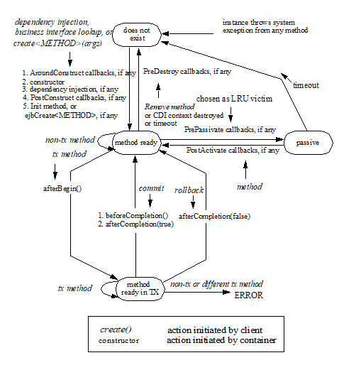
The following steps describe the life cycle of a stateful session bean instance:
A session bean instance’s life starts when a client obtains a reference to a stateful session bean instance through dependency injection or JNDI lookup, or when the client invokes a create<METHOD> method on the session bean’s home interface. This causes the container to invoke the session bean class constructor to create a new session bean instance21. Next, the container performs any dependency injection as specified by metadata annotations on the bean class or by the deployment descriptor. The container then calls the PostConstruct lifecycle callback interceptor method(s) for the bean, if any. Finally, if the session bean was written to the EJB 2.1 client view, the container invokes the matching ejbCreate<METHOD> or Init method on the instance. The container then returns the session object reference to the client. The instance is now in the method ready state.
_NOTE: When a stateful session bean is looked up or otherwise obtained through the explicit JNDI lookup mechanisms, the container must provide a new stateful session bean instance, as required by the Java EE specification (Section “Java Naming and Directory Interface (JNDI) Naming Context” link:Ejb.html#a9854[See Java™ Naming and Directory Interface 1.2 Specification (JNDI). http://docs.oracle.com/javase/7/docs/technotes/guides/jndi/index.html.])._
The session bean instance is now ready for client’s business methods. Based on the transaction attributes in the session bean’s metadata annotations and/or deployment descriptor and the transaction context associated with the client’s invocation, a business method is executed either in a transaction context or with an unspecified transaction context (shown as “tx method” and “non-tx method” in the diagram). See See Support for Transactions for how the container deals with transactions.
A non-transactional method is executed while the instance is in the method ready state.
An invocation of a transactional method causes the instance to be included in a transaction. When the session bean instance is included in a transaction, the container issues the afterBegin method on it if the session bean has an afterBegin callback method22. The afterBegin method is invoked on the instance before any business method or business method interceptor method is executed as part of the transaction. The instance becomes associated with the transaction and will remain associated with the transaction until the transaction completes.
Session bean methods invoked by the client in this transaction can now be delegated to the bean instance. An error occurs if a client attempts to invoke a method on the session object and the bean’s metadata annotations and/or deployment descriptor for the method requires that the container invoke the method in a different transaction context than the one with which the instance is currently associated or in an unspecified transaction context.
If a transaction commit has been requested, the transaction service notifies the container of the commit request before actually committing the transaction, and the container issues the befor eCompletion callback on the instance if the session bean has a beforeCompletion callback methodSee If a stateful session bean lifecycle callback interceptor method is invoked in the scope of a transaction, session synchronization callbacks for such transactions are not called on the bean instance — see section 8.6.2.1.. When beforeCompletion is invoked, the instance should write any cached updates to the database23. If a transaction rollback had been requested instead, the rollback status is reached without the container issuing a beforeCompletion . The container may not call the beforeCompletion method if the transaction has been marked for rollback (nor does the instance write any cached updates to the database).
The transaction service then attempts to commit the transaction, resulting in either a commit or rollback.
When the transaction completes, the container issues afterCompletion on the instance if the session bean has an afterCompletion callback methodSee If a stateful session bean lifecycle callback interceptor method is invoked in the scope of a transaction, session synchronization callbacks for such transactions are not called on the bean instance — see section 8.6.2.1., specifying the status of the completion (either commit or rollback). If a rollback occurred, the bean instance may need to reset its conversational state back to the value it had at the beginning of the transaction.
The container’s caching algorithm may decide that the bean instance should be evicted from memory. (This could be done at the end of each method, or by using an LRU policy). The container invokes the PrePassivate lifecycle callback interceptor method(s) for the bean instance, if any. After this completes, the container saves the instance’s state to secondary storage. A session bean can be passivated only between transactions, and not within a transaction.
While the instance is in the passivated state, the container may remove the session object after the expiration of a timeout specified by the Deployer. All object references and handles for the session object become invalid. If a client attempts to invoke a method on the bean’s business interface, the container will throw the javax.ejb.NoSuchEJBException24 . If the EJB 2.1 client view is used, the container will throw the java.rmi.NoSuchObjectException if the client is a remote client, or the javax.ejb.NoSuchObjectLocalException if the client is a local client.
If a client invokes a session object whose session bean instance has been passivated, the container will activate the instance. To activate the session bean instance, the container restores the instance’s state from secondary storage and invokes the PostActivate method for the instance, if any.
The session bean instance is again ready for client methods.
When the client calls a business method of the bean that has been designated as a Remove method on the bean class or a remove method on the home or component interface, the container invokes PreDestroy lifecycle callback interceptor methods, if any, for the bean instance after the Remove method completes.25 This ends the life of the session bean instance and the associated session object. If a client subsequently attempts to invoke a method on the bean’s business interface, the container will throw the javax.ejb.NoSuchEJBException26 . If the EJB 2.1 client view is used, any subsequent attempt causes the java.rmi.NoSuchObjectException to be thrown if the client is a remote client, or the javax.ejb.NoSuchObjectLocalException if the client is a local client. (The java.rmi.NoSuchObjectException is a subclass of the java.rmi.RemoteException ; the javax.ejb.NoSuchObjectLocalException is a subclass of the javax.ejb.EJBException ). If the Remove method completes successfully or if the Remove method throws an application exception for which retainIfException is not true or if a system exception is thrown, session synchronization methods are not called on the bean instance. If an application exception is thrown for which retainIfException is true , the bean is neither destroyed nor discarded, and session synchronization methods, if any, are called on the instance at the end of transaction . A container can also invoke the PreDestroy method on the instance without a client call to remove the session object:
After the lifetime of the EJB object has expired
When the CDI context, to which the EJB object belongs to, is destroyed.
The container must call the afterBegin, beforeCompletion, and afterCompletion methods if the session bean class implements, directly or indirectly, the SessionSynchronization interface, or if the bean class uses the session synchronization annotations.
4.6.2. Operations Allowed in the Methods of a Stateful Session Bean Class
Table See Operations Allowed in the Methods of a Stateful Session Bean defines the methods of a stateful session bean class from which the session bean instances can access the methods of the javax.ejb.SessionContext interface, the java:comp/env environment naming context, resource managers, Timer methods, the EntityManager and EntityManagerFactory methods, and other enterprise beans.
If a session bean instance attempts to invoke a method of the SessionContext interface, and that access is not allowed in Table See Operations Allowed in the Methods of a Stateful Session Bean, the container must throw the java.lang.IllegalStateException.
If a session bean instance attempts to access a resource manager, an enterprise bean, an entity manager or entity manager factory, and that access is not allowed in Table See Operations Allowed in the Methods of a Stateful Session Bean, the behavior is undefined by the EJB architecture.
If a session bean instance attempts to invoke a method of the Timer interface and the access is not allowed in Table See Operations Allowed in the Methods of a Stateful Session Bean, the container must throw the java.lang.IllegalStateException .
===
Bean method
Bean method can perform the following operations
Container-managed transaction demarcation
Bean-managed transaction demarcation
constructor
-
-
dependency injection methods (e.g., setSessionContext)
SessionContext methods: getEJBHome, getEJBLocalHome, lookup
JNDI access to java:comp/env
SessionContext methods: getEJBHome, getEJBLocalHome, lookup
JNDI access to java:comp/env
PostConstruct, PreDestroy, PrePassivate, PostActivate lifecycle callback interceptor methods27
SessionContext methods: getBusinessObject , getEJBHome, getEJBLocalHome , getRollbackOnly, setRollbackOnly, getCallerPrincipal, isCallerInRole, getEJBObject, getEJBLocalObject, lookup, getContextData
JNDI access to java:comp/env
Resource manager access
Enterprise bean access
EntityManagerFactory access
EntityManager access
SessionContext methods: getBusinessObject , getEJBHome, getEJBLocalHome , getCallerPrincipal, isCallerInRole, getEJBObject, getEJBLocalObject, getUserTransaction, lookup, getContextData
UserTransaction methods
JNDI access to java:comp/env
Resource manager access
Enterprise bean access
EntityManagerFactory access
EntityManager access
business method
from business interface or from no-interface view or from component interface;
business method interceptor method
SessionContext methods: getBusinessObject , getEJBHome, getEJBLocalHome , getCallerPrincipal, getRollbackOnly, isCallerInRole, setRollbackOnly, getEJBObject, getEJBLocalObject, getInvokedBusinessInterface, wasCancelCalled, lookup, getContextData
JNDI access to java:comp/env
Resource manager access
Enterprise bean access
EntityManagerFactory access
EntityManager access
Timer methods
SessionContext methods: getBusinessObject , getEJBHome, getEJBLocalHome , getCallerPrincipal, isCallerInRole, getEJBObject, getEJBLocalObject, getInvokedBusinessInterface, wasCancelCalled, getUserTransaction, lookup, getContextData
UserTransaction methods
JNDI access to java:comp/env
Resource manager access
Enterprise bean access
EntityManagerFactory access
EntityManager access
Timer methods
afterBegin
beforeCompletion
SessionContext methods: getBusinessObject , getEJBHome, getEJBLocalHome, getCallerPrincipal, getRollbackOnly, isCallerInRole, setRollbackOnly, getEJBObject, getEJBLocalObject, lookup, getContextData
JNDI access to java:comp/env
Resource manager access
Enterprise bean access
EntityManagerFactory access
EntityManager access
Timer methods
N/A
(a bean with bean-managed transaction demarcation cannot implement the SessionSynchronization interface or use the session synchronization annotations)
afterCompletion
SessionContext methods: getBusinessObject , getEJBHome, getEJBLocalHome, getCallerPrincipal, isCallerInRole, getEJBObject, getEJBLocalObject, lookup, getContextData
JNDI access to java:comp/env
Notes:
The PostConstruct , PreDestroy , PrePassivate , PostActivate , and/or ejbCreate <METHOD> , ejbRemove, ejbPassivate, and ejbActivate methods of a stateful session bean with container-managed transaction demarcation are invoked in the scope of a transaction determined by the transaction attribute specified in the bean’s metadata annotations or deployment descriptor.
The Init methods of a session bean with container-managed transaction demarcation execute with an unspecified transaction context. Refer to Subsection See Handling of Methods that Run with “an unspecified transaction context” for how the container executes methods with an unspecified transaction context .
In some cases, lifecycle callback interceptor methods initiated solely by the container without an associated client invocation run in an unspecified security context, e.g., a PostConstruct method callback invoked as a side-effect of the injection of a remote or local business interface reference. However, the container is still required to permit client calls to these methods according to the rules in this table (see note on See Note: Callback methods are permitted to have public access type. This raises the question of whether a callback method can also be exposed as a business method through one or more client views. Doing so is not prohibited, but should be done with caution. The runtime context (e.g. transaction context, caller principal, operations allowed, etc.) for a method invoked as a callback can differ significantly from the context for the same method when invoked via a client invocation. As a general rule, callback methods should not be exposed as business methods. Therefore, it is recommended that all non-business methods be assigned an access type other than public.).
Additional restrictions:
The getRollbackOnly and setRollbackOnly methods of the SessionContext interface should be used only in the session bean methods that execute in the context of a transaction. The container must throw the java.lang.IllegalStateException if the methods are invoked while the instance is not associated with a transaction.
The reasons for disallowing the operations in Table See Operations Allowed in the Methods of a Stateful Session Bean follow:
Invoking the getBusinessObject method is disallowed if the session bean does not define a business interface or a no-interface view.
Invoking the getInvokedBusinessInterface method is disallowed if the session bean does not define a business interface or a no-interface view. It is also disallowed if the current business method was not invoked through a business interface or the no-interface view.
Invoking the getEJBObject and getEJBHome methods is disallowed if the session bean does not define a remote component client view.
Invoking the getEJBLocalObject and getEJBLocalHome methods is disallowed if the session bean does not define a local component client view.
Invoking the getRollbackOnly and setRollbackOnly methods is disallowed in the session bean methods for which the container does not have a meaningful transaction context, and to all session beans with bean-managed transaction demarcation.
Accessing resource managers and enterprise beans is disallowed in the session bean methods for which the container does not have a meaningful transaction context and/or client security context.
The UserTransaction interface is unavailable to enterprise beans with container-managed transaction demarcation.
The TimerService interface is unavailable to stateful session beans.
Invoking the getMessageContext method is disallowed for stateful session beans.
Invoking the getEJBObject and getEJBLocalObject methods is disallowed in the session bean methods in which there is no session object identity established for the instance.
Invoking the wasCancelCalled method is disallowed except when inside the context of the asynchronous methods that declare Future<V> object as the returning type.
4.6.3. Dealing with Exceptions
A RuntimeException that is not an application exception thrown from any method of the stateful session bean class (including the business methods and the lifecycle callback interceptor methods invoked by the container) results in the transition to the “does not exist” state. Exception handling is described in detail in Chapter See Exception Handling. See the Interceptors specification See Interceptors for the rules pertaining to lifecycle callback interceptor methods when more than one such method applies to the bean class.
From the client perspective, the corresponding session object does not exist any more. If a client subsequently attempts to invoke a method on the bean’s business interface or the no-interface view, the container will throw the javax.ejb.NoSuchEJBException28 . If the EJB 2.1 client view is used, the container will throw the java.rmi.NoSuchObjectException if the client is a remote client, or the javax.ejb.NoSuchObjectLocalException if the client is a local client.
4.6.4. Missed PreDestroy Calls
The Bean Provider cannot assume that the container will always invoke the PreDestroy lifecycle callback interceptor method(s) (or ejbRemove method) for a stateful session bean instance. The following scenarios result in the PreDestroy lifecycle callback interceptor method(s) not being called for an instance:
A crash of the EJB container.
A system exception thrown from the instance’s method to the container.
A timeout of client inactivity while the instance is in the passive state. The timeout is specified by the Deployer in an EJB container implementation-specific way.
If resources are allocated in a PostConstruct lifecycle callback interceptor method (or ejbCreate<METHOD> method) and/or in the business methods, and normally released in a PreDestroy lifecycle callback interceptor method, these resources will not be automatically released in the above scenarios. The application using the stateful session bean should provide some clean up mechanism to periodically clean up the unreleased resources.
For example, if a shopping cart component is implemented as a session bean, and the session bean stores the shopping cart content in a database, the application should provide a program that runs periodically and removes “abandoned” shopping carts from the database.
4.6.5. Disabling Passivation of Stateful Session Beans
By default, the container may passivate a stateful session bean instance to a secondary storage to save resources. However, the Bean Provider can optionally configure the stateful session bean to prevent passivation of its instances.
For example, a stateful session bean instance may contain non-serializable attributes which would lead to runtime exceptions during passivation, or passivation and activation of such instances may cause degradation of application performance.
If the passivationCapable element of the Stateful annotation is set to false or the passivation-capable element of the session deployment descriptor element is set to false, the container must not attempt to passivate instances of the bean.
Note: application server vendors may use passivation as a technique to provide high availability of stateful session beans by replicating their state from one JVM instance to another across which the container is distributed. In a failure situation, a stateful session bean is made available on a new JVM instance by what is commonly called stateful session bean failover. If a container implementation supports failover of stateful session beans using bean passivation, the failover capability for not passivation capable stateful session beans is not defined.
4.6.6. Transaction Semantics of Initialization, Destruction, Activation and Passivation
By default a stateful session bean’s PostConstruct , PreDestroy , PrePassivate and PostActivate methods are executed in an unspecified transactional context. A PostConstruct , PreDestroy , PrePassivate and PostActivate method of a stateful session bean with container-managed transaction demarcation is permitted to have transaction attribute REQUIRES_NEW or NOT_SUPPORTED (RequiresNew or NotSupported if the deployment descriptor is used to specify the transaction attribute).
4.6.7. Restrictions for Transactions
The state diagram implies the following restrictions on transaction scoping of the client invoked business methods. The restrictions are enforced by the container and must be observed by the client programmer.
A stateful session bean instance can participate in at most a single transaction at a time.
If a stateful session bean instance is participating in a transaction, it is an error for a client to invoke a method on the session object such that the transaction attribute specified in the bean’s metadata annotations and/or the deployment descriptor would cause the container to execute the method in a different transaction context or in an unspecified transaction context. In such a case, the javax.ejb.EJBException will be thrown to a client of the bean’s business interface29. If the EJB 2.1 client view is used, the container throws the java.rmi.RemoteException to the client if the client is a remote client, or the javax.ejb.EJBException if the client is a local client.
If a stateful session bean instance is participating in a transaction, it is an error for a client to invoke the remove method on the session object’s home or component interface object. The container must detect such an attempt and throw the javax.ejb.RemoveException to the client. The container should not mark the client’s transaction for rollback, thus allowing the client to recover. Note that this restriction only applies to the remove method on the session object’s home or component interface, not to the invocation of Remove methods.
4.7. Stateless Session Beans
Stateless session beans are session beans whose instances have no conversational state. This means that all bean instances are equivalent when they are not involved in servicing a client-invoked method.
The term “stateless” signifies that an instance has no state for a specific client. However, the instance variables of the instance can contain the state across client-invoked method calls. Examples of such state include an open database connection and an object reference to an enterprise bean object.
The Bean Provider must exercise caution if retaining any application state across method calls. In particular, references to bean instance variables should not be returned through multiple local interface method calls.
Because all instances of a stateless session bean are equivalent, the container can choose to delegate a client-invoked method to any available instance. This means, for example, that the container may delegate the requests from the same client within the same transaction to different instances, and that the container may interleave requests from multiple transactions to the same instance.
A container only needs to retain the number of instances required to service the current client load. Due to client “think time,” this number is typically much smaller than the number of active clients. Passivation is not needed or used for stateless session beans. The container creates another stateless session bean instance if one is needed to handle an increase in client work load. If a stateless session bean is not needed to handle the current client work load, the container can destroy it.
Because stateless session beans minimize the resources needed to support a large population of clients, depending on the implementation of the container, applications that use stateless session beans may scale somewhat better than those using stateful session beans. However, this benefit may be offset by the increased complexity of the client application that uses the stateless beans.
There is no fixed mapping between clients and stateless instances. The container simply delegates a client’s work to any available instance that is method-ready.
Local and remote clients using the EJB 2.1 client view interfaces use the create and remove methods on the home interface of a stateless session bean in the same way as on a stateful session bean. To the EJB 2.1 client, it appears as if the client controls the life cycle of the session object. However, the container handles the create and remove calls without necessarily creating and removing an EJB instance. The home interface of a stateless session bean must have one create method that takes no arguments. The create method of the remote home interface must return the session bean’s remote interface. The create method of the local home interface must return the session bean’s local interface. There can be no other create methods in the home interface.
A stateless session bean must not implement the javax.ejb.SessionSynchronization interface or use the session synchronization annotations.
4.7.1. Stateless Session Bean Lifecycle State Diagram
When a client calls a method on a stateless session object or invokes a method on a stateless session bean through its web service client view, the container selects one of its method-ready __ instances and delegates the method invocation to it.
The following figure illustrates the life cycle of a stateless session bean instance.
===
Life Cycle of a Stateless Session Bean
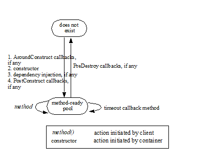
The following steps describe the life cycle of a stateless session bean instance:
A stateless session bean instance’s life starts when the container invokes the session bean class constructor to create a new session bean instance30. Next, the container performs any dependency injection as specified by metadata annotations on the bean class or by the deployment descriptor. The container then calls the PostConstruct lifecycle callback interceptor methods for the bean, if any. The container can perform the instance creation at any time—there is no direct relationship to a client’s invocation of a business method or the create method.
The session bean instance is now ready to be delegated a business method call from any client or a call from the container to a timeout callback method.
When the container no longer needs the instance (usually when the container wants to reduce the number of instances in the method-ready pool), the container invokes the PreDestroy lifecycle callback interceptor methods for it, if any. This ends the life of the stateless session bean instance.
4.7.2. Operations Allowed in the Methods of a Stateless Session Bean Class
Table See Operations Allowed in the Methods of a Stateless Session Bean defines the methods of a stateless session bean class in which the session bean instances can access the methods of the javax.ejb.SessionContext interface, the java:comp/env environment naming context, resource managers, TimerService and Timer methods, the EntityManager and EntityManagerFactory methods, and other enterprise beans.
If a session bean instance attempts to invoke a method of the SessionContext interface, and the access is not allowed in Table See Operations Allowed in the Methods of a Stateless Session Bean, the container must throw the java.lang.IllegalStateException.
If a session bean instance attempts to invoke a method of the TimerService or Timer interface and the access is not allowed in Table See Operations Allowed in the Methods of a Stateless Session Bean, the container must throw the java.lang.IllegalStateException .
If a session bean instance attempts to access a resource manager, an enterprise bean, an entity manager or entity manager factory, and the access is not allowed in Table See Operations Allowed in the Methods of a Stateless Session Bean, the behavior is undefined by the EJB architecture.
===
Bean method
Bean method can perform the following operations
Container-managed transaction demarcation
Bean-managed transaction demarcation
constructor
-
-
dependency injectionmethods (e.g., setSessionContext)
SessionContext methods: getEJBHome, getEJBLocalHome, lookup
JNDI access to java:comp/env
SessionContext methods: getEJBHome, getEJBLocalHome, lookup
JNDI access to java:comp/env
PostConstruct, PreDestroy lifecycle callback interceptor methods31
SessionContext methods: getBusinessObject, getEJBHome, getEJBLocalHome, getEJBObject, getEJBLocalObject, getTimerService, lookup, getContextData
JNDI access to java:comp/env
EntityManagerFactory access
SessionContext methods: getBusinessObject, getEJBHome, getEJBLocalHome, getEJBObject, getEJBLocalObject, getUserTransaction, getTimerService, lookup, getContextData
JNDI access to java:comp/env
EntityManagerFactory access
business method
from business interface or from no-interface view or from component interface; business method interceptor method
SessionContext methods: getBusinessObject , getEJBHome, getEJBLocalHome, getCallerPrincipal, isCallerInRole, getRollbackOnly, setRollbackOnly, getEJBObject, getEJBLocalObject, getTimerService, getInvokedBusinessInterface, wasCancelCalled, lookup, getContextData
JNDI access to java:comp/env
Resource manager access
Enterprise bean access
EntityManagerFactory access
EntityManager access
TimerService and Timer methods
SessionContext methods: getBusinessObject, getEJBHome, getEJBLocalHome, getCallerPrincipal, isCallerInRole, getEJBObject, getEJBLocalObject, getUserTransaction, getTimerService, getInvokedBusinessInterface, wasCancelCalled, lookup, getContextData
UserTransaction methods
JNDI access to java:comp/env
Resource manager access
Enterprise bean access
EntityManagerFactory access
EntityManager access
TimerService and Timer methods
business method
from web service endpoint
SessionContext methods: getBusinessObject, getEJBHome, getEJBLocalHome, getCallerPrincipal, isCallerInRole, getRollbackOnly, setRollbackOnly, getEJBObject, getEJBLocalObject, getTimerService, getMessageContext, lookup, getContextData
Message context methods
JNDI access to java:comp/env
Resource manager access
Enterprise bean access
EntityManagerFactory access
EntityManager access
TimerService and Timer methods
SessionContext methods: getBusinessObject, getEJBHome, getEJBLocalHome, getCallerPrincipal, isCallerInRole, getEJBObject, getEJBLocalObject, getUserTransaction, getTimerService, getMessageContext, lookup, getContextData
UserTransaction methods
Message context methods
JNDI access to java:comp/env
Resource manager access
Enterprise bean access
EntityManagerFactory access
EntityManager access
TimerService and Timer methods
timeout callback method
SessionContext methods: getBusinessObject, getEJBHome, getEJBLocalHome, getCallerPrincipal, isCallerInRole, getRollbackOnly, setRollbackOnly, getEJBObject, getEJBLocalObject, getTimerService, lookup, getContextData
JNDI access to java:comp/env
Resource manager access
Enterprise bean access
EntityManagerFactory access
EntityManager access
TimerService and Timer methods
SessionContext methods: getBusinessObject, getEJBHome, getEJBLocalHome, getCallerPrincipal, isCallerInRole, getEJBObject, getEJBLocalObject, getUserTransaction, getTimerService, lookup, getContextData
UserTransaction methods
JNDI access to java:comp/env
Resource manager access
Enterprise bean access
EntityManagerFactory access
EntityManager access
TimerService and Timer methods
Additional restrictions:
The getRollbackOnly and setRollbackOnly methods of the SessionContext interface should be used only in the session bean methods that execute in the context of a transaction. The container must throw the java.lang.IllegalStateException if the methods are invoked while the instance is not associated with a transaction.
The reasons for disallowing operations in Table See Operations Allowed in the Methods of a Stateless Session Bean:
Invoking the getBusinessObject method is disallowed if the session bean does not define a business interface or a no-interface view.
Invoking the getInvokedBusinessInterface method is disallowed if the session bean does not define a business interface or a no-interface view. It is also disallowed if the current business method was not invoked through a business interface or the no-interface view.
Invoking the getEJBObject and getEJBHome methods is disallowed if the session bean does not define a remote component client view.
Invoking the getEJBLocalObject and getEJBLocalHome methods is disallowed if the session bean does not define a local component client view.
Invoking the getRollbackOnly and setRollbackOnly methods is disallowed in the session bean methods for which the container does not have a meaningful transaction context, and for all session beans with bean-managed transaction demarcation.
Invoking the getMessageContext method is disallowed in session bean methods that were not invoked by the container through the session bean’s web service endpoint.
Accessing resource managers, enterprise beans, and the EntityManager is disallowed in the session bean methods for which the container does not have a meaningful transaction context and/or client security context.
The UserTransaction interface is unavailable to session beans with container-managed transaction demarcation.
Invoking the wasCancelCalled method is disallowed except when inside the context of the asynchronous methods that declare Future<V> object as the returning type.
4.7.3. Dealing with Exceptions
A RuntimeException that is not an application exception thrown from any method of the enterprise bean class (including the business methods and the lifecycle callback interceptor methods invoked by the container) results in the transition to the “does not exist” state. Exception handling is described in detail in Chapter See Exception Handling. See the Interceptors specification See Interceptors for the rules pertaining to lifecycle callback interceptor methods when more than one such method applies to the bean class.
From the client perspective, the session object continues to exist. The client can continue accessing the session object because the container can delegate the client’s requests to another instance.
4.8. Singleton Session Beans
A singleton session bean is a session bean component that is instantiated once per application. In cases where the container is distributed over many virtual machines, each application will have one bean instance of the singleton for each JVM.
Once instantiated, a singleton session bean instance lives for the duration of the application in which it is created. It maintains its state between client invocations but its state is not required to survive container shutdown or crash.
A singleton session bean is intended to be shared, and it supports concurrent access.
A singleton session bean must not implement the javax.ejb.SessionSynchronization interface or use the session synchronization annotations.
===
Life Cycle of a Singleton Session Bean
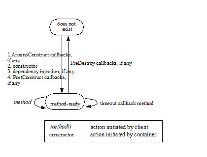
The following steps describe the life cycle of a singleton session bean instance:
A singleton session bean instance’s life starts when the container invokes the session bean class constructor to create the singleton bean instance32. Next, the container performs any dependency injection as specified by the metadata annotations on the bean class or by the deployment descriptor. The container then calls the PostConstruct lifecycle callback interceptor methods for the bean, if any.
The singleton bean instance is now ready to be delegated a business method call from any client or a call from the container to a timeout callback method.
When the application is shutting down, the container invokes the PreDestroy lifecycle callback interceptor methods on the singleton session bean instance, if any. This ends the life of the singleton session bean instance.
4.8.1. Singleton Session Bean Initialization
By default, the container is responsible for deciding when to initialize a singleton session bean instance. However, the Bean Provider can optionally configure the singleton session bean for eager initialization. If the Startup annotation appears on the singleton session bean class or if the singleton session bean has been designated via the deployment descriptor as requiring eager initialization, the container must initialize the singleton session bean instance during the application startup sequence. The container must initialize all such startup-time singleton session beans before any external client requests (that is, client requests originating outside of the application) are delivered to any enterprise bean components in the application.
The following example shows a singleton session bean with startup logic that initializes its shared state:
@Startup
@Singleton
public class SharedBean implements Shared \{
private SharedData state;
@PostConstruct
void init() \{
// initialize shared data
...
}
...
}
In some cases, explicit initialization ordering dependencies exist between multiple singleton session bean components in an application. The DependsOn annotation is used to express these dependencies. A DependsOn dependency is used in cases where one singleton session bean must initialize before one or more other singleton session beans. The container ensures that all singleton session beans with which a singleton session bean has a DependsOn relationship have been initialized before the PostConstruct method is called.
Note that if one singleton session bean merely needs to invoke another singleton session bean from its PostConstruct method, no explicit ordering metadata is required. In that case, the first singleton session bean would merely use an EJB reference to invoke the target singleton session bean. In this case, the acquisition of the EJB reference (either through injection or lookup) does not necessarily imply the actual creation of the corresponding singleton session bean instance.
The following examples illustrate the use of DependsOn metadata:
@Singleton
public class B \{ … }
@DependsOn("B")
@Singleton
public class A \{ … }
In the above example, the container must guarantee that singleton B is initialized before singleton A . The DependsOn value attribute holds one or more strings, where each specifies the ejb-name of the target singleton session bean.
In the following example, the container must guarantee that singletons B and C are initialized before singleton A . In the case of multiple values, the ordering in which the target ejb-name values are listed is not preserved at runtime. For example, if singleton B has an ordering dependency on singleton C , it is singleton B ’s responsibility to explicitly capture that in its own metadata.
@Singleton
public class B \{ … }
@Singleton(name="Cbean")
public class C \{ … }
@DependsOn(\{"B", "Cbean"})
@Singleton
public class A \{ … }
The following example illustrates the use of the fully-qualified ejb-name syntax to refer to a singleton session bean packaged within a different module in the same application.
different ejb-jars within
@Singleton
public class B \{ … }
@DependsOn("b.jar#B")
@Singleton
public class A \{ … }
Circular dependencies within the DependsOn metadata are not permitted. Circular dependencies are not required to be detected by the container but may result in a deployment error.
4.8.2. Singleton Session Bean Destruction
Any singleton session bean instance that successfully completes initialization is removed by the container during application shutdown. At this time the container must invoke the PreDestroy lifecycle callback interceptor methods on the singleton session bean instance, if any. The container ensures that all singleton session beans with which a singleton session bean has a DependsOn relationship are still available during the PreDestroy callback. After the PreDestroy callback completes, the container ends the life of the singleton session bean instance.
4.8.3. Transaction Semantics of Initialization and Destruction
The PostConstruct and PreDestroy methods of singleton session beans with container-managed transaction demarcation can be invoked with or without a transaction. From the Bean Provider’s view there is no client of a PostConstruct or PreDestroy method.
A PostConstruct or PreDestroy method of a singleton session bean with container-managed transaction demarcation is permitted to have transaction attribute REQUIRED , REQUIRES_NEW , or NOT_SUPPORTED ( Required , RequiresNew , or NotSupported if the deployment descriptor is used to specify the transaction attribute).
_Note that the container must start a new transaction if the_ _REQUIRED_ _(_ _Required_ _)_ _transaction attribute is used. This guarantees, for example, that the transactional behavior of the_ _PostConstruct_ _method is the same regardless of whether the singleton session bean instance is initialized eagerly at container startup time or as a side effect of a first client invocation on the singleton session bean._ The REQUIRED transaction attribute value is allowed so that specification of a transaction attribute for the _singleton session bean’s_ _PostConstruct_ _and_ _PreDestroy_ _methods_ can be defaulted.
4.8.4. Singleton Session Bean Error Handling
Errors occurring during singleton session bean initialization are considered fatal and must result in the discarding of the singleton session bean instance. Possible initialization errors include injection failure, a system exception thrown from an AroundConstruct or PostConstruct method, or the failure of a PostConstruct method’s container-managed transaction to successfully commit. If a singleton session bean fails to initialize, attempted invocations on the singleton session bean result in the javax.ejb.NoSuchEJBException exception as defined by See Session Bean’s Business Interface and See Session Bean’s No-Interface View .
The same singleton session bean instance must remain active until application shutdown. Unlike instances of other component types, system exceptions thrown from business methods or callbacks of a singleton session bean do not result in the destruction of the singleton instance.
4.8.5. Singleton Session Bean Concurrency
From the client’s perspective, a singleton session bean always supports concurrent access. In general, the client of a singleton session bean does not have to concern itself with whether other clients might be accessing the singleton session bean at the same time.
From the Bean Provider’s perspective, there are two approaches for controlling singleton session bean concurrency behavior:
container-managed concurrency: the container controls concurrent access to the bean instance based on method-level locking metadata
bean-managed concurrency: the container allows full concurrent bean instance access and defers state synchronization responsibility to the Bean Provider
When designing a singleton session bean, the bean provider must decide whether the bean will use container-managed or bean-managed concurrency. Typically singleton session beans will be specified to have container-managed concurrency. This is the default if no concurrency management type is specified. A singleton session bean can be designed to use either container-managed concurrency or bean-managed concurrency but it cannot use both.
The lifecycle of any interceptor classes associated with a singleton session bean have the same lifecycle and concurrency behavior as that of the singleton session bean itself. Each interceptor class will be instantiated once per singleton session bean instance. Any state stored in an instance of an interceptor class associated with a singleton session bean should be considered when devising the concurrency plan for the bean.
It is legal to store Java EE objects that do not support concurrent access (e.g. references to Java Persistence entity managers or stateful session beans) within the singleton session bean instance state. However, it is the responsibility of the Bean Provider to ensure such objects are not accessed by more than one thread at a time.
Independent of the bean’s concurrency management type, the container must ensure that no concurrent access to the singleton session bean instance occurs until after the instance has successfully completed its initialization sequence, including any PostConstruct lifecycle callback method(s). The container must temporarily block any singleton session bean access attempts that arrive while the singleton session bean is still initializing.
Independent of the bean’s concurrency management type, the container must ensure that concurrent access to the SessionContext object is thread-safe.
Singleton session beans support reentrant calls, i.e., where an outbound call from a singleton session bean method results in a loopback call to the singleton session bean on the same thread. Reentrant singleton session beans should be programmed and used with caution. Special locking semantics apply to loopback calls on singleton session beans with container-managed concurrency as described below.
4.8.5.1. Container-Managed Concurrency
With container-managed concurrency, the container is responsible for controlling concurrent access to the bean instance based on method-level locking metadata. Each business method or timeout method is associated with either a read (shared) lock or a write (exclusive) lock.
If the container invokes a method associated with a read lock, any number of other concurrent invocations on methods with read locks are allowed to access the bean instance simultaneously.
If the container invokes a method associated with a write lock, no other concurrent invocations will be allowed to proceed until the method holding the write lock completes its processing.
A concurrent access attempt that is not allowed to proceed due to locking is blocked until it can make forward progress. Timeouts can be specified via metadata so that a blocked request can be rejected if a lock is not acquired within a certain amount of time. If a singleton session bean invocation is rejected due to lock timeout the ConcurrentAccessTimeoutException is thrown to the client.
This specification only mandates the basic read and write locking semantics outlined above. There are many policy decisions that a container could make to affect the performance of the locking scheme for a given application. For example:
Determining whether to grant forward progress to a read method or write method, when both readers and writers are waiting at the time that a write method completes.
Determining whether to allow additional readers while one or more readers is active and a writer is waiting.
The exact set of additional read/write locking policy decisions supported by a Container Provider and the configuration requirements for those policies are outside the scope of this specification.
Reentrant Locking Behavior
Special locking semantics apply to loopback calls on singleton session beans with container-managed concurrency.
If a loopback call occurs on a singleton session bean that already holds a write lock on the same thread:
If the target of the loopback call is a read method, the read lock must always be granted immediately, without releasing the original write lock.
If the target of the loopback call is a write method, the call must proceed immediately, without releasing the original write lock.
If a loopback call occurs on a singleton session bean that holds a read lock on the same thread (but does not also hold a write lock on the same thread):
If the target of the loopback call is a read method, the call must proceed immediately, without releasing the original Read lock.
If the target of the loopback call is a write method, the javax.ejb.IllegalLoopbackException must be thrown to the caller.
4.8.5.2. Bean-Managed Concurrency
With bean-managed concurrency, the container allows full concurrent access to the singleton session bean instance. It is the responsibility of the Bean Provider to guard its state as necessary against synchronization errors due to concurrent access. The Bean Provider is permitted to use the Java language level synchronization primitives such as synchronized and volatile for this purpose.
4.8.5.3. Specification of a Concurrency Management Type
By default, a singleton session bean has container-managed concurrency. The Bean Provider of a singleton session bean can use the ConcurrencyManagement annotation on the bean class to declare the bean’s concurrency management type.
Alternatively, the Bean Provider can use the deployment descriptor to specify the bean’s concurrency management type. If the deployment descriptor is used, it is only necessary to explicitly specify the bean’s concurrency management type if bean-managed concurrency is used.
The concurrency management type of a singleton session bean is determined by the Bean Provider. The Application Assembler is not permitted to use the deployment descriptor to override a bean’s concurrency management type regardless of whether it has been explicitly specified or defaulted by the Bean Provider. (See Chapter See Deployment Descriptor for information about the deployment descriptor.)
4.8.5.4. Specification of the Container-Managed Concurrency Metadata for a Bean’s Methods
The Bean Provider of a singleton session bean with container-managed concurrency may specify locking metadata for the enterprise bean’s methods. By default, the value of the lock associated with a method of a bean with container managed concurrency is a write lock (exclusive lock).
A concurrency locking attribute is a value associated with each of the following methods:
a method of a bean’s business interface
a method of a bean’s no-interface view
a timeout callback method
a web service endpoint method
The concurrency locking attribute specifies how the container must manage concurrency when a client invokes the method.
Concurrency locking attributes are specified for the following methods:
For a bean written to the EJB 3.x client view API, the concurrency locking attributes are specified for those methods of the bean class that correspond to the bean’s business interface, the direct and indirect superinterfaces of the business interface, methods exposed through the no-interface view, and for timeout callback methods, if any.
For a bean that provides a web service client view, the concurrency locking attributes are specified for those methods of the bean class that correspond to the bean’s web service endpoint methods, and for timeout callback methods, if any.
The following rules apply to the specification of concurrency attributes.
The Lock(READ) and Lock(WRITE)annotations are used to specify concurrency locking attributes.
The concurrency locking attributes for the methods of a bean class may be specified on the class, the business methods of the class, or both.
Specifying the Lock annotation on the bean class means that it applies to all applicable business methods of the class. If the concurrency locking attribute is not specified, it is assumed to be Lock(WRITE). The absence of a concurrency attribute specification on the bean class is equivalent to the specification of Lock(WRITE)on the bean class.
A concurrency locking attribute may be specified on a method of the bean class to override the concurrency locking attribute value explicitly or implicitly specified on the bean class.
If the bean class has superclasses, the following additional rules apply:
A concurrency locking attribute specified on a superclass S appplies to the business methods defined by S. If a class-level concurrency attribute is not specified on S, it is equivalent to specification of Lock(WRITE)on S.
A concurrency locking attribute may be specified on a business method M defined by class S to override for method M the concurrency locking attribute value explicitly or implicitly specified on the class S.
If a method M of class S overrides a business method defined by a superclass of S, the concurrency locking attribute of M is determined by the above rules as applied to class S.
The Bean Provider may use the deployment descriptor as an alternative to metadata annotations to specify the concurrency locking attributes. Concurrency locking attributes specified in the deployment descriptor are assumed to override or supplement concurrency locking attributes specified in annotations. If a concurrency locking attribute value is not specified in the deployment descriptor, it is assumed that the concurrency locking attribute specified in annotations applies, or — in the case that no annotation has been specified —that the value is Write.
The Application Assembler is permitted to override the concurrency locking attribute values using the bean’s deployment descriptor. The Deployer is also permitted to override the concurrency locking attribute values at deployment time. Caution should be exercised when overriding the concurrency locking attributes of an application, as the concurrency structure of an application is typically intrinsic to the semantics of the application.
Example:
@Lock(READ)
public class SomeClass \{
public void aMethod () \{ ... }
public void bMethod () \{ ... }
...
}
@Singleton public class ABean extends SomeClass implements A \{
public void aMethod () \{ ... }
@Lock(WRITE)
public void cMethod () \{ ... }
...
}
Assuming that aMethod, bMethod, cMethod of singleton session bean ABean are methods of business interface A, their concurrency locking attributes are Lock(WRITE), Lock(READ), and Lock(WRITE)respectively.
4.8.5.5. Concurrent Access Timeouts
A concurrent access attempt that cannot immediately acquire the appropriate lock is blocked until it can make forward progress. The AccessTimeout annotation is used to specify the amount of time the access attempt should be blocked before timing out. Access timeouts only apply to methods eligible for concurrency locks on a singleton session bean with container-managed concurrency. If an access attempt times out, the container throws the javax.ejb.ConcurrentAccessTimeoutException to the client.
The AccessTimeout annotation can be specified on a business method or on a bean class (or superclass). An AccessTimeout annotation specified on a class applies the access timeout to all business methods of that class. If the AccessTimeout annotation is specified on both a class and on a business method of that class, the method-level annotation takes precedence.
An AccessTimeout value of -1 indicates that the client request will block indefinitely until forward progress can be made.
An AccessTimeout value of 0 indicates that concurrent access is not allowed. Access attempts on methods with a timeout value of 0 result in the javax.ejb.ConcurrentAccessException.
4.8.6. Operations Allowed in the Methods of a Singleton Session Bean
Table See Operations Allowed in the Methods of a Singleton Session Bean defines the methods of a singleton session bean class in which the session bean instances can access the methods of the javax.ejb.SessionContext interface, the java:comp/env environment naming context, resource managers, TimerService and Timer methods, the EntityManager and EntityManagerFactory methods, and other enterprise beans.
If a session bean instance attempts to invoke a method of the SessionContext interface, and the access is not allowed in Table See Operations Allowed in the Methods of a Singleton Session Bean, the container must throw the java.lang.IllegalStateException.
If a session bean instance attempts to invoke a method of the TimerService or Timer interface and the access is not allowed in Table See Operations Allowed in the Methods of a Singleton Session Bean, the container must throw the java.lang.IllegalStateException .
If a session bean instance attempts to access a resource manager, an enterprise bean, an entity manager or entity manager factory, and the access is not allowed in Table See Operations Allowed in the Methods of a Singleton Session Bean, the behavior is undefined by the EJB architecture.
===
Bean method
Bean method can perform the following operations
Container-managed transaction demarcation
Bean-managed transaction demarcation
constructor
-
-
dependency injectionmethods
SessionContext methods: lookup
JNDI access to java:comp/env
SessionContext methods: lookup
JNDI access to java:comp/env
PostConstruct, PreDestroy lifecycle callback interceptor methods33
SessionContext methods: getBusinessObject , getRollbackOnly, setRollbackOnly, getTimerService, lookup, getContextData
JNDI access to java:comp/env
Resource manager access
Enterprise bean access
EntityManagerFactory access
EntityManager access
TimerService and Timer methods
SessionContext methods: getBusinessObject, getUserTransaction, getTimerService, lookup, getContextData
UserTransaction methods
JNDI access to java:comp/env
Resource manager access
Enterprise bean access
EntityManager access
EntityManagerFactory access
TimerService and Timer methods
business method
from business interface or from no-interface view ; business method interceptor method
SessionContext methods: getBusinessObject , getCallerPrincipal, isCallerInRole, getRollbackOnly, setRollbackOnly, getTimerService, getInvokedBusinessInterface, wasCancelCalled, lookup, getContextData
JNDI access to java:comp/env
Resource manager access
Enterprise bean access
EntityManagerFactory access
EntityManager access
TimerService and Timer methods
SessionContext methods: getBusinessObject, getCallerPrincipal, isCallerInRole, getUserTransaction, getTimerService, getInvokedBusinessInterface, wasCancelCalled, lookup, getContextData
UserTransaction methods
JNDI access to java:comp/env
Resource manager access
Enterprise bean access
EntityManagerFactory access
EntityManager access
TimerService and Timer methods
business method
from web service endpoint
SessionContext methods: getBusinessObject, getCallerPrincipal, isCallerInRole, getRollbackOnly, setRollbackOnly, getTimerService, getMessageContext, lookup, getContextData
Message context methods
JNDI access to java:comp/env
Resource manager access
Enterprise bean access
EntityManagerFactory access
EntityManager access
TimerService and Timer methods
SessionContext methods: getBusinessObject , getCallerPrincipal, isCallerInRole, getUserTransaction, getTimerService, getMessageContext, lookup, getContextData
UserTransaction methods
Message context methods
JNDI access to java:comp/env
Resource manager access
Enterprise bean access
EntityManagerFactory access
EntityManager access
TimerService and Timer methods
timeout callback method
SessionContext methods: getBusinessObject , getCallerPrincipal, isCallerInRole, getRollbackOnly, setRollbackOnly, getTimerService, lookup, getContextData
JNDI access to java:comp/env
Resource manager access
Enterprise bean access
EntityManagerFactory access
EntityManager access
TimerService and Timer methods
SessionContext methods: getBusinessObject , getCallerPrincipal, isCallerInRole, getUserTransaction, getTimerService, lookup, getContextData
UserTransaction methods
JNDI access to java:comp/env
Resource manager access
Enterprise bean access
EntityManagerFactory access
EntityManager access
TimerService and Timer methods
Additional restrictions:
The getRollbackOnly and setRollbackOnly methods of the SessionContext interface should be used only in the session bean methods that execute in the context of a transaction. The container must throw the java.lang.IllegalStateException if the methods are invoked while the current business method is not executing in the context of a transaction.
Invoking the wasCancelCalled method is disallowed except when inside the context of the asynchronous methods that declare Future<V> object as the returning type
The reasons for disallowing operations in Table See Operations Allowed in the Methods of a Singleton Session Bean:
Invoking the getBusinessObject method is disallowed if the session bean does not define a business interface or a no-interface view.
Invoking the getInvokedBusinessInterface method is disallowed if the session bean does not define a business interface or a no-interface view. It is also disallowed if the current business method was not invoked through a business interface or the no-interface view.
Invoking the getEJBObject and getEJBHome methods is disallowed since a singleton session bean does not support the EJB 2.x remote client view.
Invoking the getEJBLocalObject and getEJBLocalHome methods is disallowed since a singleton session bean does not support the EJB 2.x local client view.
Invoking the getRollbackOnly and setRollbackOnly methods is disallowed in the session bean methods for which the container does not have a meaningful transaction context, and for all session beans with bean-managed transaction demarcation.
Invoking the getMessageContext method is disallowed in session bean methods that were not invoked by the container through the session bean’s web service endpoint.
Accessing resource managers, enterprise beans, and the EntityManager is disallowed in the session bean methods for which the container does not have a meaningful transaction context and/or client security context.
The UserTransaction interface is unavailable to session beans with container-managed transaction demarcation.
4.9. The Responsibilities of the Bean Provider
This section describes the responsibilities of the session Bean Provider to ensure that a session bean can be deployed in any EJB container. These requirements apply to stateful session beans, stateless session beans, and singleton session beans.
4.9.1. Classes and Interfaces
The session Bean Provider is responsible for providing the following class files34:
Session bean class.
Session bean’s business interface(s), if the session bean provides an EJB 3.x local or remote client view.
Session bean’s remote interface and remote home interface, if the session bean provides an EJB 2.1 remote client view.
Session bean’s local interface and local home interface, if the session bean provides an EJB 2.1 local client view.
Session bean’s web service endpoint interface, if any.
Interceptor classes, if any.
The Bean Provider for a session bean that provides a web service client view may also define JAX-WS message handlers for the bean. The requirements for such message handlers are defined in See Web Services for Java EE and See Java™ API for XML-based Web Service.
4.9.2. Session Bean Class
The following are the requirements for the session bean class:
The class must be defined as public, must not be final , and must not be abstract. The class must be a top level class.
The class must have a public constructor that takes no parameters. The EJB container uses this constructor to create instances of the session bean class.
The class must not define the finalize() method.
The class must implement the bean’s business interface(s) or the methods of the bean’s business interface(s), if any.
The class must implement the business methods of the bean’s EJB 2.1 client view interfaces, if any. 35
Optionally:
The class may have an additional constructor annotated with the Inject annotation (see See Relationship to Contexts and Dependency Injection (CDI) Specification and the CDI specification See Contexts and Dependency Injection for).
The class may implement, directly or indirectly, the javax.ejb.SessionBean interface.36
If the class is a stateful session bean, it may implement the javax.ejb.SessionSynchronization interface or use one or more of the session synchronization annotations.
The class may implement the session bean’s web service endpoint or component interface.
If the class is a stateless session bean, it may implement the javax.ejb.TimedObject interface. See See Timer Service.
The class may implement the ejbCreate method(s).
The session bean class may have superclasses and/or superinterfaces. If the session bean has superclasses, the business methods, lifecycle callback interceptor methods, the timeout callback methods, the methods implementing the optional session synchronization notifications, the Init or ejbCreate <METHOD> methods, the Remove methods, and the methods of the SessionBean interface may be defined in the session bean class or in any of its superclasses.
The session bean class is allowed to implement other methods (for example helper methods invoked internally by the business methods) in addition to the methods required by the EJB specification.
4.9.2.1. Session Bean Superclasses
A session bean class is permitted to have superclasses that are themselves session bean classes. However, there are no special rules that apply to the processing of annotations or the deployment descriptor for this case. For the purposes of processing a particular session bean class, all superclass processing is identical regardless of whether the superclasses are themselves session bean classes. In this regard, the use of session bean classes as superclasses merely represents a convenient use of implementation inheritance, but does not have component inheritance semantics.
For example, the client views exposed by a particular session bean are not inherited by a subclass that also happens to define a session bean.
@Stateless
public class A implements Foo \{ … }
@Stateless
public class B extends A implements Bar \{ … }
Assuming Foo and Bar are local business interfaces and there is no associated deployment descriptor, session bean A exposes local business interface Foo and session bean B exposes local business interface Bar, but not Foo.
Session bean B would need to explicitly include Foo in its set of exposed views for that interface to apply. For example:
@Stateless
public class A implements Foo \{ … }
@Stateless
public class B extends A implements Foo, Bar \{ … }
4.9.3. Lifecycle Callback Interceptor Methods
The AroundConstruct, PostConstruct , PreDestroy , PrePassivate , and PostActivate lifecycle callback interceptor methods may be defined for session beans. If the PrePassivate or PostActivate lifecycle callbacks are defined for stateless session beans or singleton session beans, they are ignored.37
The AroundConstruct lifecycle callback interceptor method may be defined on an interceptor class only. All other lifecycle callback interceptor methods may be defined on the bean class and/or on an interceptor class of the bean. Rules applying to the definition of lifecycle callback interceptor methods are defined in Section See Interceptors for LifeCycle Event Callbacks .
If the PostConstruct lifecycle callback interceptor method is the ejbCreate method, if the PreDestroy lifecycle callback interceptor method is the ejbRemove method, if the PostActivate lifecycle callback interceptor method is the ejbActivate method, or if the PrePassivate lifecycle callback interceptor method is the ejbPassivate method, these callback methods must be implemented on the bean class itself (or on its superclasses). Except for these cases, the method names can be arbitrary, but must not start with “ejb” to avoid conflicts with the callback methods defined by the javax.ejb.EnterpriseBean interfaces.
4.9.4. Session Synchronization Methods
The bean class (or superclass) of a stateful session bean may use one or more of the session synchronization annotations AfterBegin, BeforeCompletion, and AfterCompletion. Each bean has at most one session synchronization method for each of the three annotation types. In the case of method overriding of session synchronization methods declared by annotations, the most derived method takes precedence. The signatures of the session synchronization methods must follow these rules:
The method must not be declared as final or static.
The method may have any access type: public, private, protected, or package-level.
The return type must be void.
The AfterBegin and BeforeCompletion methods must take 0 arguments.
The AfterCompletion method must take a single argument of type boolean.
4.9.5. ejbCreate<METHOD> Methods
The session bean class of a session bean that has a home interface may define one or more ejbCreate<METHOD> methods. These ejbCreate methods are intended for use only with components written to the the EJB 2.1 and earlier APIs. The signatures of the ejbCreate methods must follow these rules:
The method name must have ejbCreate as its prefix.
The method must be declared as public.
The method must not be declared as final or static.
The return type must be void.
The method arguments must be legal types for RMI/IIOP if there is a create<METHOD> corresponding to the ejbCreate<METHOD> method on the session bean’s remote home interface.
A stateless session bean may define only a single ejbCreate method, with no arguments.
The throws clause may define arbitrary application exceptions, possibly including the javax.ejb.CreateException.
EJB 1.0 allowed the ejbCreate method to throw the java.rmi.RemoteException to indicate a non-application exception. This practice was deprecated in EJB 1.1—an EJB 1.1 or EJB 2.0 or later compliant enterprise bean should throw the javax.ejb.EJBException or another RuntimeException to indicate non-application exceptions to the container (see Section See System Exceptions). An EJB 2.0 and later compliant enterprise bean should not throw the java.rmi.RemoteException from the ejbCreate method .
4.9.6. Business Methods
The session bean class may define zero or more business methods whose signatures must follow these rules:
The method names can be arbitrary, but they must not start with “ejb” to avoid conflicts with the callback methods used by the EJB architecture.
The method must be declared as public.
The method must not be declared as final or static.
The argument and return value types for the method must be legal types for RMI/IIOP if the method corresponds to a business method on the session bean’s remote business interface or remote component interface.
The argument and return value types for a method must be legal types for JAX-WS if the method is a web service method or corresponds to a method on the session bean’s web service endpoint.
The throws clause may define arbitrary application exceptions.
Note: Callback methods are permitted to have public access type. This raises the question of whether a callback method can also be exposed as a business method through one or more client views. Doing so is not prohibited, but should be done with caution. The runtime context (e.g. transaction context, caller principal, operations allowed, etc.) for a method invoked as a callback can differ significantly from the context for the same method when invoked via a client invocation. As a general rule, callback methods should not be exposed as business methods. Therefore, it is recommended that all non-business methods be assigned an access type other than public.
EJB 1.0 allowed the business methods to throw the java.rmi.RemoteException to indicate a non-application exception. This practice was deprecated in EJB 1.1—an EJB 1.1 or EJB 2.0 or later compliant enterprise bean should throw the javax.ejb.EJBException or another RuntimeException to indicate non-application exceptions to the container (see Section See System Exceptions). An EJB 2.0 or later compliant enterprise bean should not throw the java.rmi.RemoteException from a business method.
4.9.7. Session Bean’s Business Interface
The following are the requirements for the session bean’s business interface:
The interface must not extend the javax.ejb.EJBObject or javax.ejb.EJBLocalObject interface.
If the business interface is a remote business interface, the argument and return values must be of valid types for RMI/IIOP. The remote business interface is not required or expected to be a java.rmi.Remote interface. The throws clause should not include the java.rmi.RemoteException. The methods of the business interface may only throw the java.rmi.RemoteException if the interface extends java.rmi.Remote .
The interface is allowed to have superinterfaces.
If the interface is a remote business interface, its methods must not expose local interface types, timers or timer handles as arguments or results.
The same business interface cannot be both a local and a remote business interface of the bean.38
The bean class must implement the interface or the interface must be designated as a local or remote business interface of the bean by means of the Local or Remote annotation or in the deployment descriptor. The following rules apply to the interfaces implemented by the bean class:
_java.io.Serializable_ , _java.io.Externalizable_ and the interfaces defined by the _javax.ejb_ package are excluded when determining whether the bean class has business interfaces.
All business interfaces must be explicitly designated as such if any of the following is true:
the bean exposes a no-interface view
any interface of the bean class is explicitly designated as a business interface of the bean by either of the following means:
using the Local or Remote annotation with a non-empty value on the bean class
using the Local or Remote annotation on the interface
in the deployment descriptor
Otherwise:
If the bean class is annotated with the Remote annotation, all implemented interfaces (excluding the interfaces listed above) are assumed to be remote business interfaces of the bean.
If the bean class is annotated with the Local annotation, or if the bean class is annotated with neither the Local nor the Remote annotation, all implemented interfaces (excluding the interfaces listed above) are assumed to be local business interfaces of the bean.
Note that while it is expected that the bean class will typically implement its business interface(s), if the bean class uses annotations or the deployment descriptor to designate its business interface(s), it is not required that the bean class also be specified as implementing the interface(s).
The following examples assume that there is no deployment descriptor associated with the bean and neither the Local nor the Remote annotation is specified on the bean class or an interface unless noted.
Example 1: session bean A exposes two local business interfaces, Foo and Bar:
public interface Foo \{ … }
public interface Bar \{ … }
@Stateless
public class A implements Foo, Bar \{ … }
Example 2: session bean A exposes two local business interfaces, Foo and Bar:
public interface Foo \{ … }
public interface Bar \{ … }
@Local
@Stateless
public class A implements Foo, Bar \{ … }
Example 3: session bean A exposes two remote business interfaces, Foo and Bar
public interface Foo \{ … }
public interface Bar \{ … }
@Remote
@Stateless
public class A implements Foo, Bar \{ … }
Example 4: session bean A exposes only one remote business interface Foo
@Remote
public interface Foo \{ … }
public interface Bar \{ … }
@Stateless
public class A implements Foo, Bar \{ … }
Example 5: session bean A exposes only one remote business interface Foo
public interface Foo \{ … }
public interface Bar \{ … }
@Remote(Foo.class)
@Stateless
public class A implements Foo, Bar \{ … }
4.9.8. Session Bean’s No-Interface View
The following are the requirements for a session bean that exposes a no-interface view:
The bean class must designate that it exposes a no-interface view via its bean class definition or in the deployment descriptor. The following rules apply:
If the bean does not expose any other client views (local, remote, no-interface, 2.x Remote Home, 2.x Local Home, Web Service) and its implements clause is empty, the bean defines a no-interface view.
If the bean exposes at least one other client view, the bean designates that it exposes a no-interface view by means of the LocalBean annotation on the bean class or in the deployment descriptor.
The following interfaces are excluded when determining whether the bean exposes a no-interface view: java.io.Serializable ; java.io.Externalizable ; any of the interfaces defined by the javax.ejb package.
All non-static public methods of the bean class and of any superclasses except java.lang.Object are exposed as business methods through the no-interface view.
Note: This includes callback methods. The Bean Provider should exercise caution when choosing to expose callback methods as business methods through the no-interface view. The runtime context (e.g. transaction context, caller principal, operations allowed, etc.) for a method invoked as a callback can differ significantly from the context for the same method when invoked via a client invocation. In general, callback methods should not be exposed as business methods. Therefore, it is recommended that all non-business methods be assigned an access type other than public.
The throws clause of a bean class method exposed through the no-interface view must not include the java.rmi.RemoteException.
Only private methods of the bean class and any superclasses except java.lang.Object may be declared final.
4.9.9. Session Bean’s Remote Component Interface
The following are the requirements for the session bean’s remote component interface:
The interface must extend the javax.ejb.EJBObject interface.
The methods defined in this interface must follow the rules for RMI/IIOP. This means that their argument and return values must be of valid types for RMI/IIOP, and their throws clauses must include the java.rmi.RemoteException.
The remote component interface is allowed to have superinterfaces. Use of interface inheritance is subject to the RMI/IIOP rules for the definition of remote interfaces.
For each method defined in the remote component interface, there must be a matching method in the session bean’s class. The matching method must have:
The same name.
The same number and types of arguments, and the same return type.
All the exceptions defined in the throws clause of the matching method of the session bean class must be defined in the throws clause of the method of the remote component interface.
The remote component interface methods must not expose local component interface types, local home interface types, timers or timer handles as arguments or results.
4.9.10. Session Bean’s Remote Home Interface
The following are the requirements for the session bean’s remote home interface:
The interface must extend the javax.ejb.EJBHome interface.
The methods defined in this interface must follow the rules for RMI/IIOP. This means that their argument and return values must be of valid types for RMI/IIOP, and that their throws clauses must include the java.rmi.RemoteException.
The remote home interface is allowed to have superinterfaces. Use of interface inheritance is subject to the RMI/IIOP rules for the definition of remote interfaces.
A session bean’s remote home interface must define one or more create<METHOD> methods. A stateless session bean must define exactly one create method with no arguments.
Each create method of a stateful session bean must be named create<METHOD> , and it must match one of the Init methods or ejbCreate<METHOD> methods defined in the session bean class. The matching Init method or ejbCreate<METHOD> method must have the same number and types of arguments. (Note that the return type is different.) The create method for a stateless session bean must be named “ create ” but need not have a matching “ ejbCreate ” method.
The return type for a create <METHOD> method must be the session bean’s remote component interface type.
All the exceptions defined in the throws clause of an ejbCreate <METHOD> method of the session bean class must be defined in the throws clause of the matching create <METHOD> method of the remote home interface.
The throws clause must include javax.ejb.CreateException.
4.9.11. Session Bean’s Local Component Interface
The following are the requirements for the session bean’s local component interface:
The interface must extend the javax.ejb.EJBLocalObject interface.
The throws clause of a method defined in the local interface must not include the java.rmi.RemoteException.
The local component interface is allowed to have superinterfaces.
For each method defined in the local component interface, there must be a matching method in the session bean’s class. The matching method must have:
The same name.
The same number and types of arguments, and the same return type.
All the exceptions defined in the throws clause of the matching method of the session bean class must be defined in the throws clause of the method of the local component interface.
4.9.12. Session Bean’s Local Home Interface
The following are the requirements for the session bean’s local home interface:
The interface must extend the javax.ejb.EJBLocalHome interface.
The throws clause of a method in the local home interface must not include the java.rmi.RemoteException.
The local home interface is allowed to have superinterfaces.
A session bean’s local home interface must define one or more create<METHOD> methods. A stateless session bean must define exactly one create method with no arguments.
Each create method of a stateful session bean must be named create<METHOD> , and it must match one of the Init methods or ejbCreate<METHOD> methods defined in the session bean class. The matching Init method or ejbCreate<METHOD> method must have the same number and types of arguments. (Note that the return type is different.) The create method for a stateless session bean must be named “ create ” but need not have a matching “ ejbCreate ” method.
The return type for a create <METHOD> method must be the session bean’s local component interface type.
All the exceptions defined in the throws clause of an ejbCreate <METHOD> method of the session bean class must be defined in the throws clause of the matching create <METHOD> method of the local home interface.
The throws clause must include javax.ejb.CreateException.
4.9.13. Session Bean’s Web Service Endpoint Interface
The EJB 3.x API does not require the definition of a web service endpoint interface for session beans that implement a web service endpoint.
The JAX-WS and Web Services for Java EE specifications do not require that a separate interface be defined for a web service endpoint. The requirements for web service endpoints under JAX-WS and Web Services for Java EE are given in See Java™ API for XML-based Web Service and See Web Services for Java EE.
4.10. The Responsibilities of the Container Provider
This section describes the responsibilities of the Container Provider to support a session bean. The Container Provider is responsible for providing the deployment tools and for managing the session bean instances at runtime.
Because the EJB specification does not define the API between deployment tools and the container, we assume that the deployment tools are provided by the Container Provider. Alternatively, the deployment tools may be provided by a different vendor who uses the container vendor’s specific API.
4.10.1. Generation of Implementation Classes
The deployment tools provided by the container are responsible for the generation of additional classes when the session bean is deployed. The tools obtain the information that they need for generation of the additional classes by introspecting the classes and interfaces provided by the Bean Provider and by examining the session bean’s deployment descriptor.
The deployment tools must generate the following classes:
A class that implements the session bean’s business interface.
A class that implements the session bean’s no-interface view.
A class that implements the session bean’s remote home interface (session EJBHome class).
A class that implements the session bean’s remote component interface (session EJBObject class).
A class that implements the session bean’s local home interface (session EJBLocalHome class).
A class that implements the session bean’s local component interface (session EJBLocalObject class).
A class that implements the session bean’s web service endpoint.
A class that implements the return value of an asynchronous method with return type Future<V> .
The deployment tools may also generate a class that mixes some container-specific code with the session bean class. This code may, for example, help the container to manage the bean instances at runtime. The tools can use subclassing, delegation, and code generation.
The deployment tools may also allow the generation of additional code that wraps the business methods and is used to customize the business logic to an existing operational environment. For example, a wrapper for a debit function on the AccountManager bean may check that the debited amount does not exceed a certain limit.
4.10.2. Generation of WSDL
Reference See Web describes the generation of a WSDL document for a web service endpoint. The Java to WSDL mapping must adhere to the requirements of JAX-WS See Java™ API for XML-based Web Service.
4.10.3. Session Business Interface Implementation Class
The container’s implementation of the session business interface, which is generated by the deployment tools, implements the business methods specific to the session bean.
The implementation of each business method must activate the instance (if the instance is in the passive state), invoke any business method interceptor methods, and invoke the matching business method on the instance.
The Container Provider is responsible for providing the implementation of the equals and hashCode methods for the business interface, in conformance with the requirements of section See Session Object Identity.
4.10.4. No-Interface View Reference Class
The container’s implementation of the no-interface view reference, which is generated by the deployment tools, implements the business methods that are exposed to the no-interface view client.
The implementation of each business method must activate the instance (if the instance is in the passive state), invoke any business method interceptor methods, and invoke the matching business method on the instance.
The Container Provider is responsible for providing the implementation of the equals and hashCode methods for the no-interface view reference class, in conformance with the requirements of section See Client view of Session Object’s Life Cycle.
4.10.5. Session EJBHome Class
The session EJBHome class, which is generated by the deployment tools, implements the session bean’s remote home interface. This class implements the methods of the javax.ejb.EJBHome interface and the create<METHOD> methods specific to the session bean.
The implementation of each create<METHOD> method invokes a matching ejbCreate<METHOD> method.
4.10.6. Session EJBObject Class
The session EJBObject class, which is generated by the deployment tools, implements the session bean’s remote component interface. It implements the methods of the javax.ejb.EJBObject interface and the business methods specific to the session bean.
The implementation of each business method must activate the instance (if the instance is in the passive state), invoke any business method interceptor methods, and invoke the matching business method on the instance.
4.10.7. Session EJBLocalHome Class
The session EJBLocalHome class, which is generated by the deployment tools, implements the session bean’s local home interface. This class implements the methods of the javax.ejb.EJBLocalHome interface and the create<METHOD> methods specific to the session bean.
The implementation of each create<METHOD> method invokes a matching ejbCreate<METHOD> method.
4.10.8. Session EJBLocalObject Class
The session EJBLocalObject class, which is generated by the deployment tools, implements the session bean’s local component interface. It implements the methods of the javax.ejb.EJBLocalObject interface and the business methods specific to the session bean.
The implementation of each business method must activate the instance (if the instance is in the passive state), invoke any business method interceptor methods, and invoke the matching business method on the instance.
4.10.9. Web Service Endpoint Implementation Class
The implementation class for a stateless session bean’s web service endpoint is generated by the container’s deployment tools. This class must handle requests to the web service endpoint, unmarshall the SOAP request, invoke any business method interceptor methods, and invoke the stateless session bean method that matches the web service endpoint method that corresponds to the request.
4.10.10. Asynchronous Client Future<V> Return Value Implementation Class
The object returned from an asynchronous method with return type Future<V> is implemented by the container’s deployment tools.
4.10.11. Handle Classes
The deployment tools are responsible for implementing the handle classes for the session bean’s remote home and remote component interfaces.
4.10.12. EJBMetaData Class
The deployment tools are responsible for implementing the class that provides metadata to the remote client view contract. The class must be a valid RMI Value class and must implement the javax.ejb.EJBMetaData interface.
4.10.13. Non-reentrant Instances
The container must ensure that only one thread can be executing a stateless or stateful session bean instance at any time. Therefore, stateful and stateless session beans do not have to be coded as reentrant. One implication of this rule is that an application cannot make loopback calls to a stateless or stateful session bean instance.
4.10.14. Transaction Scoping, Security, Exceptions
The container must follow the rules with respect to transaction scoping, security checking, and exception handling, as described in Chapters See Support for Transactions, See Security Management, and See Exception Handling, respectively.
4.10.15. JAX-WS Message Handlers for Web Service Endpoints
The container must support the use of JAX-WS message handlers for web service endpoints. Container requirements for support of message handlers are specified in See Java™ API for XML-based Web Service and See Web Services for Java EE.
If message handlers are present, they must be invoked before any business method interceptor methods.
4.10.16. SessionContext
The container must implement the SessionContext.getEJBObject method such that the bean instance can use the Java language cast to convert the returned value to the session bean’s remote component interface type. Specifically, the bean instance does not have to use the PortableRemoteObject.narrow method for the type conversion.
The container must implement the EJBContext.lookup method such that when the lookup method is used to look up a bean’s remote home interface, a bean instance can use the Java language cast to convert the returned value to a session bean’s remote home interface type. Specifically, the bean instance does not have to use the PortableRemoteObject.narrow method for the type conversion.
5. Message-Driven Bean Component Contract
This chapter specifies the contract between a message-driven bean and its container. It defines the life cycle of the message-driven bean instances.
This chapter defines the developer’s view of message-driven bean state management and the container’s responsibility for managing message-driven bean state.
5.1. Overview
A message-driven bean is an asynchronous message consumer. A message-driven bean is invoked by the container as a result of the arrival of a message at the destination or endpoint that is serviced by the message-driven bean. A message-driven bean instance is an instance of a message-driven bean class. A message-driven bean is defined for a single messaging type, in accordance with the message listener interface it employs.
To a client, a message-driven bean is a message consumer that implements some business logic running on the server. A client accesses a message-driven bean by sending messages to the destination or endpoint for which the message-driven bean class is the message listener.
Message-driven beans are anonymous. They have no client-visible identity.
Message-driven bean instances have no conversational state. This means that all bean instances are equivalent when they are not involved in servicing a client message.
A message-driven bean instance is created by the container to handle the processing of the messages for which the message-driven bean is the consumer. Its lifetime is controlled by the container.
A message-driven bean instance has no state for a specific client. However, the instance variables of the message-driven bean instance can contain state across the handling of client messages. Examples of such state include an open database connection and a reference to an enterprise bean.
5.2. Goals
The goal of the message-driven bean model is to make developing an enterprise bean that is asynchronously invoked to handle the processing of incoming messages as simple as developing the same functionality in any other message listener.
A further goal of the message-driven bean model is to allow for the concurrent processing of a stream of messages by means of container-provided pooling of message-driven bean instances.
5.3. Client View of a Message-Driven Bean
To a client, a message-driven bean is simply a message consumer. The client sends messages to the destination or endpoint for which the message-driven bean is the message listener just as it would to any other destination or endpoint. The message-driven bean, as a message consumer, handles the processing of the messages.
From the perspective of the client, the existence of a message-driven bean is completely hidden behind the destination or endpoint for which the message-driven bean is the message listener. The following diagram illustrates the view that is provided to a message-driven bean’s clients.
===
Client view of Message-Driven Beans Deployed in a Container
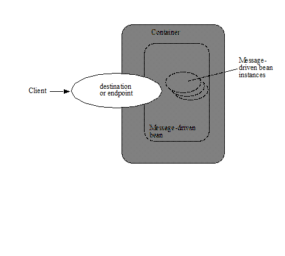
A client’s JNDI name space may be configured to include the destinations or endpoints of message-driven beans installed in multiple EJB containers located on multiple machines on a network. The actual locations of an enterprise bean and EJB container are, in general, transparent to the client using the enterprise bean.
References to message destinations can be injected, or they can be looked up in the client’s JNDI namespace.
For example, the reference to the queue for a JMS message-driven bean might be injected as follows.
@Resource Queue stockInfoQueue;
Alternatively, the queue for the StockInfo JMS message-driven bean might be located using the following code segment:
Context initialContext = new InitialContext();
Queue stockInfoQueue =
(javax.jms.Queue)initialContext.lookup
(“java:comp/env/jms/stockInfoQueue”);
The remainder of this chapter describes the message-driven bean life cycle in detail and the protocol between the message-driven bean and its container.
5.4. Protocol Between a Message-Driven Bean Instance and its Container
From its creation until destruction, a message-driven bean instance lives in a container. The container provides security, concurrency, transactions, and other services for the message-driven bean. The container manages the life cycle of the message-driven bean instances, notifying the instances when bean action may be necessary, and providing a full range of services to ensure that the message-driven bean implementation is scalable and can support the concurrent processing of a large number of messages.
From the Bean Provider’s point of view, a message-driven bean exists as long as its container does. It is the container’s responsibility to ensure that the message-driven bean comes into existence when the container is started up and that instances of the bean are ready to receive asynchronous message delivery before the delivery of messages is started.
Containers themselves make no actual service demands on the message-driven bean instances. The calls a container makes on a bean instance provide it with access to container services and deliver notifications issued by the container.
Since all instances of a message-driven bean are equivalent, a client message can be delivered to any available instance.
5.4.1. Required MessageDrivenBean Metadata
A message-driven bean must be annotated with the MessageDriven annotation or denoted in the deployment descriptor as a message-driven bean. The MessageDriven annotation is a component-defining annotation and is applied to the bean class.
5.4.2. The Required Message Listener Interface
The message-driven bean class must implement the appropriate message listener interface for the messaging type that the message-driven bean supports or specify the message listener interface using the MessageDriven metadata annotation or the messaging-type deployment descriptor element. The specific message listener interface that is implemented by a message-driven bean class distinguishes the messaging type that the message-driven bean supports.
The message-driven bean class’s implementation of the javax.jms.MessageListener interface distinguishes the message-driven bean as a JMS message-driven bean.
The bean’s message listener method (e.g., onMessage in the case of javax.jms.MessageListener ) is called by the container when a message has arrived for the bean to service. The message listener method contains the business logic that handles the processing of the message.
A bean’s message listener interface may define more than one message listener method. If the message listener interface contains more than one method, it is the resource adapter that determines which method is invoked. See See Java EE™ Connector Architecture.
If the message-driven bean class implements more than one interface other than java.io.Serializable , java.io.Externalizable , or any of the interfaces defined by the javax.ejb package, the message listener interface must be specified by the messageListenerInterface element of the MessageDriven annotation or the messaging-type element of the message-driven deployment descriptor element.
5.4.3. Message-Driven Bean with No-Methods Listener Interface
A message-driven bean is permitted to implement a listener interface with no methods. A bean that implements a no-methods interface, exposes all non-static public methods of the bean class and of any superclasses except java.lang.Object as message listener methods.
In this case, when requested by a resource adapter, the container provides a proxy which implements the message listener interface and all message listener methods of the bean. A resource adapter may use the Reflection API to invoke a message listener method on such a proxy. When the resource adapter invokes a method on the proxy, the message listener method on the bean instance and any interceptor methods are invoked as needed. The resource adapter determines which message listener method is invoked according to its implementation logic.
Only public methods of the bean class and of any superclasses except java.lang.Object may be invoked by a resource adapter. Attempted invocations of methods with any other access modifiers on a proxy provided by the container must result in the javax.ejb.EJBException.
5.4.4. Dependency Injection
A message-driven bean may use dependency injection mechanisms to acquire references to resources or other objects in its environment (see See Enterprise Bean Environment). If a message-driven bean makes use of dependency injection, the container injects these references after the bean instance is created, and before any message-listener methods are invoked on the bean instance. If a dependency on the MessageDrivenContext is declared, or if the bean class implements the optional MessageDrivenBean interface (see Section See The Optional MessageDrivenBean Interface), the MessageDrivenContext is also injected at this time. If dependency injection fails, the bean instance is discarded.
Under the EJB 3.x API, the bean class may acquire the MessageDrivenContext interface through dependency injection without having to implement the MessageDrivenBean interface. In this case, the Resource annotation (or resource-env-ref deployment descriptor element) is used to denote the bean’s dependency on the MessageDrivenContext . See See Enterprise Bean Environment.
5.4.5. The MessageDrivenContext Interface
If the bean specifies a dependency on the MessageDrivenContext interface (or if the bean class implements the MessageDrivenBean interface), the container must provide the message-driven bean instance with a MessageDrivenContext . This gives the message-driven bean instance access to the instance’s context maintained by the container. The MessageDrivenContext interface has the following methods:
The setRollbackOnly method allows the instance to mark the current transaction such that the only outcome of the transaction is a rollback. Only instances of a message-driven bean with container-managed transaction demarcation can use this method.
The getRollbackOnly method allows the instance to test if the current transaction has been marked for rollback. Only instances of a message-driven bean with container-managed transaction demarcation can use this method.
The getUserTransaction method returns the javax.transaction.UserTransaction interface that the instance can use to demarcate transactions, and to obtain transaction status. Only instances of a message-driven bean with bean-managed transaction demarcation can use this method.
The getTimerService method returns the javax.ejb.TimerService interface.
The getCallerPrincipal method returns the java.security.Principal that is associated with the invocation.
The isCallerInRole method is inherited from the EJBContext interface.
The getEJBHome and getEJBLocalHome methods are inherited from the EJBContext interface. Message-driven bean instances must not call these methods.
The lookup method enables the message-driven bean to look up its environment entries in the JNDI naming context.
The getContextData method enables a message listener method, lifecycle callback method, or timeout method to retrieve or update the interceptor context data associated with its invocation.
5.4.6. Message-Driven Bean Lifecycle Callback Interceptor Methods
The following lifecycle event callbacks are supported for message-driven beans.
_AroundConstruct_
_PostConstruct_
_PreDestroy_
The PostConstruct and PreDestroy callback methods may be defined directly on the bean class or on a separate interceptor class39. The AroundConstruct lifecycle callback interceptor method, if used, must be defined on an interceptor class (see See Interceptors). See See Lifecycle Callback Interceptor Methods.
The PostConstruct callback occurs before the first message listener method invocation on the bean. This is at a point after which any dependency injection has been performed by the container.
The PostConstruct lifecycle callback interceptor method executes in an unspecified transaction and security context.
The PreDestroy callback occurs at the time the bean is removed from the pool or destroyed.
The PreDestroy lifecycle callback interceptor method executes in an unspecified transaction and security context.
5.4.7. The Optional MessageDrivenBean Interface
The message-driven bean class is not required to implement the javax.ejb.MessageDrivenBean interface.
_The MessageDrivenBean interface was required by earlier versions of the Enterprise JavaBeans specification. Under the EJB 3.x API, the functionality previously provided by the MessageDrivenBean interface is available to the bean class through the use of dependency injection (of the MessageDrivenContext) and optional lifecycle callback methods._
The MessageDrivenBean interface defines two methods, setMessageDrivenContext and ejbRemove .
The setMessageDrivenContext method is called by the bean’s container to associate a message-driven bean instance with its context maintained by the container. Typically a message-driven bean instance retains its message-driven context as part of its state.
The ejbRemove notification signals that the instance is in the process of being removed by the container. In the ejbRemove method, the instance releases the resources that it is holding.
Under the EJB 3.x API, the bean class may optionally define a PreDestroy callback method for notification of the container’s removal of the bean instance.
This specification requires that the ejbRemove and the ejbCreate methods of a message-driven bean be treated as the PreDestroy and PostConstruct lifecycle callback methods, respectively. If the message-driven bean implements the MessageDrivenBean interface, the PreDestroy annotation can only be applied to the ejbRemove method. Similar requirements apply to use of deployment descriptor metadata as an alternative to the use of annotations.
5.4.8. Timeout Callbacks
A message-driven bean can be registered with the EJB Timer Service for time-based event notifications. The container invokes the appropriate bean instance timeout callback method when a timer for the bean has expired. See See Timer Service.
5.4.9. Message-Driven Bean Creation
Except as noted below, the container creates an instance of a message-driven bean in three steps. First, the container calls the bean class constructor to create a new message-driven bean instance. Second, the container injects the bean’s MessageDrivenContext , if applicable, and performs any other dependency injection as specified by metadata annotations on the bean class or by the deployment descriptor. Third, the container calls the instance’s PostConstruct lifecycle callback methods, if any. See See Lifecycle Callback Interceptor Methods.
If an interceptor associated with the message-driven bean declares an AroundConstruct lifecycle callback interceptor method, the container follows the rules for the AroundConstruct interceptors defined in the Interceptors specification See Interceptors.
EJB 2.1 required the message-driven bean class to implement the ejbCreate method. This requirement has been removed from the EJB 3.x API. If the message-driven bean class implements the ejbCreate method, the ejbCreate method is treated as the bean’s PostConstruct method, and the PostConstruct annotation can only be applied to the ejbCreate method.
5.4.10. Message Listener Interceptor Methods for Message-Driven Beans
_AroundInvoke_ interceptor methods are supported for message-driven beans. These interceptor methods may be defined on the bean class or on a interceptor class and apply to the handling of the invocation of the bean’s message listener method(s).
Interceptors are described in See Interceptors.
5.4.11. Serializing Message-Driven Bean Methods
The container serializes calls to each message-driven bean instance. Most containers will support many instances of a message-driven bean executing concurrently; however, each instance sees only a serialized sequence of method calls. Therefore, a message-driven bean does not have to be coded as reentrant.
The container must serialize all the container-invoked callbacks (e.g., lifecycle callback interceptor methods and timeout callback methods), and it must serialize these callbacks with the message listener method calls.
5.4.12. Concurrency of Message Processing
A container allows many instances of a message-driven bean class to be executing concurrently, thus allowing for the concurrent processing of a stream of messages. No guarantees are made as to the exact order in which messages are delivered to the instances of the message-driven bean class, although the container should attempt to deliver messages in order when it does not impair the concurrency of message processing. Message-driven beans should therefore be prepared to handle messages that are out of sequence: for example, the message to cancel a reservation may be delivered before the message to make the reservation.
5.4.13. Transaction Context of Message-Driven Bean Methods
A bean’s message listener and timeout callback methods are invoked in the scope of a transaction determined by the transaction attribute specified in the bean’s metadata annotations or deployment descriptor. If the bean is specified as using container-managed transaction demarcation, either the REQUIRED or the NOT_SUPPORTED transaction attribute must be used for the message listener methods, and either the REQUIRED , REQUIRES_NEW , or the NOT_SUPPORTED transaction attribute for timeout callback methods. See See Support for Transactions.
When a message-driven bean using bean-managed transaction demarcation uses the javax.transaction.UserTransaction interface to demarcate transactions, the message receipt that causes the bean to be invoked is not part of the transaction. If the message receipt is to be part of the transaction, container-managed transaction demarcation with the REQUIRED transaction attribute must be used.
The bean constructor , the setMessageDrivenContext method, the message-driven bean’s dependency injection methods, and lifecycle callback methods are called with an unspecified transaction context. Refer to Subsection See Handling of Methods that Run with “an unspecified transaction context” for how the container executes methods with an unspecified transaction context.
5.4.14. Security Context of Message-Driven Bean Methods
A caller principal may propagate into a message-driven bean’s message listener methods. Whether this occurs is a function of the specific message-listener interface and associated messaging provider, but is not governed by this specification.
The Bean Provider can use the RunAs metadata annotation (or corresponding deployment descriptor element) to define a run-as identity for the enterprise bean. The run-as identity applies to the bean’s message listener methods and timeout methods. Run-as identity behavior is further defined in section See Run-as.
5.4.15. Association of a Message-Driven Bean with a Destination or Endpoint
A message-driven bean is associated with a destination or endpoint when the bean is deployed in the container. It is the responsibility of the Deployer to associate the message-driven bean with a destination or endpoint.
5.4.16. Activation Configuration Properties
The Bean Provider may provide information to the Deployer about the configuration of the message-driven bean in its operational environment. This may include information about message acknowledgement modes, message selectors, expected destination or endpoint types, etc.
Activation configuration properties are specified by means of the activationConfig element of the MessageDriven annotation or activation-config deployment descriptor element. Activation configuration properties specified in the deployment descriptor are added to those specified by means of the MessageDriven annotation. If a property of the same name is specified in both, the deployment descriptor value overrides the value specified in the annotation.
5.4.17. JMS Message-Driven Beans
This section describes activation configuration properties specific to the JMS message-driven beans.
The container may or may not support its built-in JMS provider using a resource adapter. However, it must allow the application to configure a message-driven bean that uses the built-in JMS provider using the activation properties defined by this specification.
Both the container and any JMS resource adapters are free to support activation properties in addition to those listed here. However, applications that use non-standard activation properties will not be portable.
5.4.17.1. Message Acknowledgment
JMS message-driven beans should not attempt to use the JMS API for message acknowledgment. Message acknowledgment is automatically handled by the container. If the message-driven bean uses container-managed transaction demarcation, message acknowledgment is handled automatically as a part of the transaction commit. If bean-managed transaction demarcation is used, the message receipt cannot be part of the bean-managed transaction, and, in this case, the receipt is acknowledged by the container. If bean-managed transaction demarcation is used, the Bean Provider can indicate whether JMS AUTO_ACKNOWLEDGE semantics or DUPS_OK_ACKNOWLEDGE semantics should apply by using the activationConfig element of the MessageDriven annotation or by using the activation-config-property deployment descriptor element. The property name used to specify the acknowledgment mode is acknowledgeMode . If the acknowledgeMode property is not specified, JMS AUTO_ACKNOWLEDGE semantics are assumed. The value of the acknowledgeMode property must be either Auto-acknowledge or Dups-ok-acknowledge for a JMS message-driven bean.
5.4.17.2. Message Selectors
The Bean Provider may declare the JMS message selector to be used in determining which messages a JMS message-driven bean is to receive. If the Bean Provider wishes to restrict the messages that a JMS message-driven bean receives, the Bean Provider can specify the value of the message selector by using the activationConfig element of the MessageDriven annotation or by using the activation-config-property deployment descriptor element. The property name used to specify the message selector is messageSelector .
For example:
@MessageDriven(activationConfig=\{
@ActivationConfigProperty(
propertyName="messageSelector",
propertyValue="JMSType = ‘car’ AND color = ‘blue’
AND weight > 2500")
})
<activation-config>
<activation-config-property>
<activation-config-property-name>
messageSelector
</activation-config-property-name>
<activation-config-property-value>
JMSType = ‘car’ AND color = ‘blue’ AND weight > 2500
</activation-config-property-value>
</activation-config-property>
</activation-config>
The Application Assembler may further restrict, but not replace, the value of the messageSelector property of a JMS message-driven bean.
5.4.17.3. Destination Type
A JMS message-driven bean is associated with a JMS Destination (Queue or Topic) when the bean is deployed in the container. It is the responsibility of the Deployer to associate the message-driven bean with a Queue or Topic.
The Bean Provider may provide advice to the Deployer as to whether a message-driven bean is intended to be associated with a Queue or a Topic by using the activationConfig element of the MessageDriven annotation or by using the activation-config-property deployment descriptor element. The property name used to specify the destination type associated with the bean is destinationType . The value for this property must be either javax.jms.Queue or javax.jms.Topic for a JMS message-driven bean.
5.4.17.4. Destination Lookup
The Bean Provider or Deployer may specify the JMS queue or topic from which a JMS message-driven bean is to receive messages.
The lookup name of an administratively-defined Queue or Topic object may be specified by using the activationConfig element of the MessageDriven annotation or by using the activation-config-property deployment descriptor element. The property name used to specify the lookup name is destinationLookup.
5.4.17.5. Connection Factory Lookup
The Bean Provider or Deployer may specify the JMS connection factory that will be used to connect to the JMS provider from which a JMS message-driven bean is to receive messages.
The lookup name of an administratively-defined ConnectionFactory object may be specified by using the activationConfig element of the MessageDriven annotation or by using the activation-config-property deployment descriptor element. The property name used to specify the lookup name is connectionFactoryLookup.
5.4.17.6. Subscription Durability
If the message-driven bean is intended to be used with a topic, the Bean Provider may further indicate whether a durable or non-durable subscription should be used by using the activationConfig element of the MessageDriven annotation or by using the activation-config-property deployment descriptor element. The property name used to specify whether a durable or non-durable subscription should be used is subscriptionDurability . The value for this property must be either Durable or NonDurable for a JMS message-driven bean. If a topic subscription is specified and subscriptionDurability is not specified, a non-durable subscription is assumed.
Durable topic subscriptions, as well as queues, ensure that messages are not missed even if the EJB server is not running. Reliable applications will typically make use of queues or durable topic subscriptions rather than non-durable topic subscriptions.
If a non-durable topic subscription is used, it is the container’s responsibility to make sure that the message-driven bean subscription is active (i.e., that there is a message-driven bean available to service the message) in order to ensure that messages are not missed as long as the EJB server is running. Messages may be missed, however, when a bean is not available to service them. This will occur, for example, if the EJB server goes down for any period of time.
The Deployer should avoid associating more than one message-driven bean with the same JMS queue. If there are multiple JMS consumers for a queue, JMS does not define how messages are distribued between the queue receivers.
5.4.17.7. Subscription Name
If the message-driven bean is intended to be used with a topic, and the bean provider has indicated that a durable subscription should be used by specifying the subscriptionDurability property to Durable, then the bean provider or deployer may specify the name of the durable subscription.
The name of the subscription may be specified by using the activationConfig element of the MessageDriven annotation or by using the activation-config-property deployment descriptor element. The property name used to specify the name of the subscription is subscriptionName.
The Bean Provider or Deployer cannot specify whether a shared or unshared subscription will be used.
5.4.17.8. Client Identifier
The Bean Provider or Deployer may specify the JMS client identifier that will be used when connecting to the JMS provider from which a JMS message-driven bean is to receive messages.
The client identifier may be specified by using the activationConfig element of the MessageDriven annotation or by using the activation-config-property deployment descriptor element. The property name used to specify the client identifier is clientId.
5.4.18. Dealing with Exceptions
A message-driven bean’s message listener method must not throw the java.rmi.RemoteException .
Message-driven beans should not, in general, throw RuntimeExceptions .
A RuntimeException that is not an application exception thrown from any method of the message-driven bean class (including a message listener method and the callbacks invoked by the container) results in the transition to the “does not exist” state. If a message-driven bean uses bean-managed transaction demarcation and throws a RuntimeException , the container should not acknowledge the message. Exception handling is described in detail in Chapter See Exception Handling. See the Interceptors specification See Interceptors for the rules pertaining to lifecycle callback interceptor methods when more than one such method applies to the bean class.
From the client perspective, the message consumer continues to exist. If the client continues sending messages to the destination or endpoint associated with the bean, the container can delegate the client’s messages to another instance.
The message listener methods of some messaging types may throw application exceptions. An application exception is propagated by the container to the resource adapter.
5.4.19. Missed PreDestroy Callbacks
The Bean Provider cannot assume that the container will always invoke the PreDestroy callback method (or ejbRemove method) for a message-driven bean instance. The following scenarios result in the PreDestroy callback method not being called on an instance:
A crash of the EJB container.
A system exception thrown from the instance’s method to the container.
If the message-driven bean instance allocates resources in the PostConstruct lifecycle callback method and/or in the message listener method, and releases normally the resources in the PreDestroy method, these resources will not be automatically released in the above scenarios. The application using the message-driven bean should provide some clean up mechanism to periodically clean up the unreleased resources.
5.4.20. Replying to a JMS Message
In standard JMS usage scenarios, the messaging mode of a message’s JMSReplyTo destination (Queue or Topic) is the same as the mode of the destination to which the message has been sent. Although a message-driven bean is not directly dependent on the mode of the JMS destination from which it is consuming messages, it may contain code that depends on the mode of its message’s JMSReplyTo destination. In particular, if a message-driven bean replies to a message, the mode of the reply’s message producer and the mode of the JMSReplyTo destination must be the same. In order to implement a message-driven bean that is independent of JMSReplyTo mode, the Bean Provider should use instanceOf to test whether a JMSReplyTo destination is a Queue or Topic, and then use a matching message producer for the reply.
5.5. Message-Driven Bean State Diagram
When a client sends a message to a Destination for which a message-driven bean is the consumer, the container selects one of its method-ready __ instances and invokes the instance’s message listener method.
The following figure illustrates the life cycle of a message-driven bean instance.
===
Life Cycle of a Message-Driven Bean.
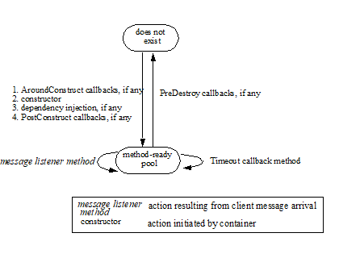
The following steps describe the life cycle of a message-driven bean instance:
A message-driven bean instance’s life starts when the container invokes the message-driven bean class constructor to create a new instance40. Next, the container injects the bean’s MessageDrivenContext object, if applicable, and performs any other dependency injection as specified by metadata annotations on the bean class or by the deployment descriptor. The container then calls the bean’s PostConstruct lifecycle callback methods, if any.
The message-driven bean instance is now ready to be delivered a message sent to its associated destination or endpoint by any client or a call from the container to a timeout callback method.
When the container no longer needs the instance (which usually happens when the container wants to reduce the number of instances in the method-ready pool), the container invokes the PreDestroy lifecycle callback methods for it, if any. This ends the life of the message-driven bean instance.
5.5.1. Operations Allowed in the Methods of a Message-Driven Bean Class
See Operations Allowed in the Methods of a Message-Driven Bean defines the methods of a message-driven bean class in which the message-driven bean instances can access the methods of the javax.ejb.MessageDrivenContext interface, the java:comp/env environment naming context, resource managers, TimerService and Timer methods, the EntityManager and EntityManagerFactory methods, and other enterprise beans.
If a message-driven bean instance attempts to invoke a method of the MessageDrivenContext interface, and the access is not allowed in See Operations Allowed in the Methods of a Message-Driven Bean, the container must throw and log the java.lang.IllegalStateException.
If a message-driven bean instance attempts to invoke a method of the TimerService or Timer interface, and the access is not allowed in Table See Operations Allowed in the Methods of a Message-Driven Bean, the container must throw the java.lang.IllegalStateException .
If a bean instance attempts to access a resource manager, an enterprise bean, or an entity manager or entity manager factory, and the access is not allowed in See Operations Allowed in the Methods of a Message-Driven Bean, the behavior is undefined by the EJB specification.
===
Bean method
Bean method can perform the following operations
Container-managed transaction demarcation
Bean-managed transaction demarcation
constructor
-
-
dependency injection methods (e.g., setMessageDrivenContext)
MessageDrivenContext methods: lookup
JNDI access to java:comp/env
MessageDrivenContext methods: lookup
JNDI access to java:comp/env
PostConstruct, PreDestroy lifecycle callback methods
MessageDrivenContext methods: getTimerService , lookup, getContextData
JNDI access to java:comp/env
EntityManagerFactory access
MessageDrivenContext methods:
getUserTransaction, getTimerService , lookup, getContextData
JNDI access to java:comp/env
EntityManagerFactory access
message listener method, AroundInvoke interceptor method
MessageDrivenContext methods: getRollbackOnly, setRollbackOnly, getCallerPrincipal, isCallerInRole, getTimerService, lookup, getContextData
JNDI access to java:comp/env
Resource manager access
Enterprise bean access
EntityManagerFactory access
EntityManager access
Timer service or Timer methods
MessageDrivenContext methods:
getUserTransaction, getCallerPrincipal, isCallerInRole, getTimerService,
lookup, getContextData
UserTransaction methods
JNDI access to java:comp/env
Resource manager access
Enterprise bean access
EntityManagerFactory access
EntityManager access
Timer service or Timer methods
timeout callback method
MessageDrivenContext methods: getRollbackOnly, setRollbackOnly, getCallerPrincipal, getTimerService, lookup, getContextData
JNDI access to java:comp/env
Resource manager access
Enterprise bean access
EntityManagerFactory access
EntityManager access
Timer service or Timer methods
MessageDrivenContext methods:
getUserTransaction, getCallerPrincipal, getTimerService, lookup,
getContextData
UserTransaction methods
JNDI access to java:comp/env
Resource manager access
Enterprise bean access
EntityManagerFactory access
EntityManager access
Timer service or Timer methods
Additional restrictions:
The getRollbackOnly and setRollbackOnly methods of the MessageDrivenContext interface should be used only in the message-driven bean methods that execute in the context of a transaction. The container must throw the java.lang.IllegalStateException if the methods are invoked while the instance is not associated with a transaction.
The reasons for disallowing operations in See Operations Allowed in the Methods of a Message-Driven Bean:
Invoking the getRollbackOnly and setRollbackOnly methods is disallowed in the message-driven bean methods for which the container does not have a meaningful transaction context, and for all message-driven beans with bean-managed transaction demarcation.
The UserTransaction interface is unavailable to message-driven beans with container-managed transaction demarcation.
Invoking getEJBHome or getEJBLocalHome is disallowed in message-driven bean methods because there are no EJBHome or EJBLocalHome objects for message-driven beans. The container must throw and log the java.lang.IllegalStateException if these methods are invoked.
5.6. The Responsibilities of the Bean Provider
This section describes the responsibilities of the message-driven Bean Provider to ensure that a message-driven bean can be deployed in any EJB container.
5.6.1. Classes and Interfaces
The message-driven Bean Provider is responsible for providing the following class files:
Message-driven bean class.
Interceptor classes, if any.
5.6.2. Message-Driven Bean Class
The following are the requirements for the message-driven bean class:
The class must implement, directly or indirectly, the message listener interface required by the messaging type that it supports or the methods of the message listener interface. In the case of JMS, this is the javax.jms.MessageListener interface.
The class must be defined as public, must not be final , and must not be abstract. The class must be a top level class.
The class must have a public constructor that takes no arguments. The container uses this constructor to create instances of the message-driven bean class.
The class must not define the finalize method.
Optionally:
The class may implement, directly or indirectly, the javax.ejb.MessageDrivenBean interface.
The class may implement, directly or indirectly, the javax.ejb.TimedObject interface.
The class may implement the ejbCreate method.
The class may have an additional constructor annotated with the Inject annotation (see See Relationship to Contexts and Dependency Injection (CDI) Specification and the CDI specification See Contexts and Dependency Injection for).
The message-driven bean class may have superclasses and/or superinterfaces. If the message-driven bean has superclasses, the message listener methods, lifecycle callback interceptor methods, timeout callback methods, the ejbCreate method, and the methods of the MessageDrivenBean interface may be defined in the message-driven bean class or in any of its superclasses.
The message-driven bean class is allowed to implement other methods (for example, helper methods invoked internally by the message listener method) in addition to the methods required by the EJB specification.
5.6.3. Message-Driven Bean Superclasses
A message-driven bean class is permitted to have superclasses that are themselves message-driven bean classes. However, there are no special rules that apply to the processing of annotations or the deployment descriptor for this case. For the purposes of processing a particular message-driven bean class, all superclass processing is identical regardless of whether the superclasses are themselves message-driven bean classes. In this regard, the use of message-driven bean classes as superclasses merely represents a convenient use of implementation inheritance, but does not have component inheritance semantics.
5.6.4. Message Listener Method
The message-driven bean class must define the message listener methods. The signature of a message listener method must follow these rules:
The method must be declared as public.
The method must not be declared as final or static.
5.6.5. Message-Driven Bean with No-Methods Listener Interface
The following additional requirements apply for a message-driven bean with a no-methods interface:
All non-static public methods of the bean class and of any superclasses except java.lang.Object are exposed as message listener methods.
Note: This includes callback methods. The Bean Provider should exercise caution when choosing to expose callback methods as message listener methods. The runtime context (e.g. transaction context, caller principal, operations allowed, etc.) for a method invoked as a callback can differ significantly from the context for the same method when invoked as a message listener. In general, callback methods should not be exposed as message listener methods. Therefore, it is recommended that all methods other than message listener methods be assigned an access type other than public.
Only private methods of the bean class and any superclasses except java.lang.Object may be declared final.
5.6.6. Lifecycle Callback Interceptor Methods
PostConstruct and PreDestroy lifecycle callback interceptor methods may be defined for message-driven beans. If PrePassivate or PostActivate lifecycle callbacks are defined, they are ignored.41
If the PostConstruct lifecycle callback interceptor method is the ejbCreate method, or if the PreDestroy lifecycle callback interceptor method is the ejbRemove method, these callback methods must be implemented on the bean class itself (or on its superclasses). Except for these cases, the method names can be arbitrary, but must not start with “ejb” to avoid conflicts with the callback methods defined by the javax.ejb.EnterpriseBean interfaces.
Lifecycle callback interceptor methods may be defined on the bean class and/or on an interceptor class of the bean. Rules applying to the definition of lifecycle callback interceptor methods are defined in Section See Interceptors for LifeCycle Event Callbacks .
5.7. The Responsibilities of the Container Provider
This section describes the responsibilities of the Container Provider to support a message-driven bean. The Container Provider is responsible for providing the deployment tools, and for managing the message-driven bean instances at runtime.
Because the EJB specification does not define the API between deployment tools and the container, we assume that the deployment tools are provided by the Container Provider. Alternatively, the deployment tools may be provided by a different vendor who uses the container vendor’s specific API.
5.7.1. Generation of Implementation Classes
The deployment tools provided by the container are responsible for the generation of additional classes when the message-driven bean is deployed. The tools obtain the information that they need for generation of the additional classes by introspecting the classes and interfaces provided by the Enterprise Bean Provider and by examining the message-driven bean’s deployment descriptor.
The deployment tools may generate a class that mixes some container-specific code with the message-driven bean class. This code may, for example, help the container to manage the bean instances at runtime. Subclassing, delegation, and code generation can be used by the tools.
5.7.2. Deployment of Message-Driven Beans with No-Methods Listener Interface
The Container Provider must support the deployment of a message-driven bean with a no-methods listener interface.
The container’s implementation class generated by the deployment tools must implement the message listener interface and implement all non-static public methods of the bean class and of any superclasses except java.lang.Object as message listener methods.
5.7.3. Deployment of JMS Message-Driven Beans
The Container Provider must support the deployment of a JMS message-driven bean as the consumer of a JMS queue or topic.
5.7.4. Request/Response Messaging Types
If the message listener supports a request/response messaging type, it is the container’s responsibility to deliver the message response.
5.7.5. Non-reentrant Instances
The container must ensure that only one thread can be executing an instance at any time.
5.7.6. Transaction Scoping, Security, Exceptions
The container must follow the rules with respect to transaction scoping, security checking, and exception handling, as described in Chapters See Support for Transactions, See Security Management, and See Exception Handling.
6. Persistence
The model for persistence and object/relational mapping was considerably revised and enhanced in the Enterprise JavaBeans 3.0 release. The contracts and requirements for persistent entities are defined by the “ Java Persistence API ” specification See Java™ Persistence API, which also contains the full specification of the Java Persistence query language and the metadata for object/relational mapping.
The client view of entity beans under the earlier EJB 2.1 programming model, the contracts for EJB 2.1 Entity Beans with Container-Managed Persistence, the contracts for the EJB QL query language, the contracts for EJB 2.1 Entity Beans with Bean-Managed Persistence, and the contracts for EJB 1.1 Entity Beans with Container-Managed Persistence are described in the EJB Optional Features document See EJB 3.2 Optional Features Chapters ../Optional/Chapters.html#UNKNOWN, ../Optional/Chapters.html#UNKNOWN, ../Optional/Chapters.html#UNKNOWN, ../Optional/Chapters.html#UNKNOWN, and ../Optional/Chapters.html#UNKNOWN respectively.
7. Interceptors
Interceptors are used to interpose on the business method invocations and lifecycle events that occur on an enterprise bean instance.
7.1. Overview
The general rules for defining Interceptor classes, their lifecycle, and associated metadata are described in the Interceptors specification See Interceptors. This chapter describes the set of requirements that are specific to the use of interceptors with Enterprise JavaBeans.
For the use of interceptors with Enterprise JavaBeans, the interceptor “target class” is the bean class. Interceptors may be used with session beans and message-driven beans.
The programming restrictions that apply to enterprise bean components apply to interceptors as well. See See Programming Restrictions.
It is illegal to associate JTA transactional interceptors (see See Java™) with Enterprise JavaBeans. The EJB Container should fail deployment of such applications.42
Default interceptors are interceptors that apply to all components within an ejb-jar file or .war file.
7.2. Interceptor Life Cycle
The lifecycle of an interceptor instance is the same as that of the bean instance with which it is associated. In the case of interceptors associated with stateful session beans, the interceptor instances are passivated upon bean instance passivation, and activated when the bean instance is activated. See sections See Stateful Session Beans, See Stateless Session Bean Lifecycle State Diagram, and See Message-Driven Bean State Diagram.
In addition to the AroundConstruct, PostConstruct and PreDestroy callback support required by the Interceptors specification See Interceptors, interceptors associated with stateful session beans may define PostActivate and PrePassivate callbacks. Both the interceptor instance and the bean instance are created or activated before any of the respective PostConstruct or PostActivate callbacks are invoked. Any PreDestroy and PrePassivate callbacks are invoked before the respective destruction or passivation of either the bean instance or interceptor instance.
The use of an extended persistence context is only supported for interceptors that are associated with stateful session beans.
7.3. Business Method Interceptors
_AroundInvoke_ interceptor methods may be defined for business methods of sessions beans and for the message listener methods of message-driven beans.
Business method interceptor methods may throw runtime exceptions or application exceptions that are allowed in the throws clause of the business method. See section See Exception Handling for further details.
7.4. Timer Timeout Method Interceptors
Interceptor methods may be defined for the EJB timer timeout methods of session beans and message-driven beans. Such methods are referred to as AroundTimeout methods.
Within an AroundTimeout method, the InvocationContext.getTimer() method returns the javax.ejb.Timer object associated with the timeout being intercepted.
_AroundTimeout_ methods may throw system exceptions, but not application exceptions. See section link:Ejb.html#a2031[See Exception Handling] for further details.
7.5. Interceptors for LifeCycle Event Callbacks
Lifecycle callback interceptor methods may be defined for session beans and message-driven beans.
The AroundConstruct, PostConstruct , PreDestroy , PostActivate , and PrePassivate annotations are used to define interceptor methods for a lifecycle callback events. An AroundConstruct lifecycle callback interceptor method may be defined on an interceptor class only. All other interceptor methods can be defined on an interceptor class and/or directly on the bean class.
Lifecycle callback interceptor methods are invoked in an unspecified security context. Lifecycle callback interceptor methods are invoked in an unspecified transaction context, except for singleton and stateful session bean PostConstruct and PreDestroy methods and stateful session bean PostActivate , and PrePassivate methods, whose transaction context is based on their respective transaction attributes. See See Session Bean Lifecycle Callback Interceptor Methods.
_PostActivate_ , and _PrePassivate_ methods follow requirements for the lifecycle callback interceptor methods defined in the Interceptors specification document link:Ejb.html#a9887[See Interceptors, version 1.2. http://jcp.org/en/jsr/detail?id=318.].
Lifecycle callback interceptor methods may throw system runtime exceptions, but not application exceptions. See section See Exception Handling for further details.
7.6. InvocationContext
The InvocationContext object provides metadata that enables interceptor methods to control the behavior of the invocation chain. The getContextData method enables an interceptor to retrieve or update the data associated with the invocation by another interceptor, business method, and/or webservices context in the invocation chain. The contextual data is not sharable across separate business method invocations or lifecycle callback events. If interceptors are invoked as a result of the invocation on a web service endpoint, the map returned by the getContextData method will be the JAX-WS MessageContext See Java™ API for. The lifecycle of the InvocationContext instance is otherwise unspecified.
7.7. Exception Handling
_Interceptor_ methods are allowed to throw runtime exceptions or any checked exceptions that the method they interpose on allows within its _throws_ clause. _Interceptor_ methods are allowed to catch and suppress exceptions and recover by calling _proceed()._
_Interceptor_ method invoked in a transaction context, can mark the transaction for rollback by throwing a runtime exception or by calling the _EJBContext_ method _setRollbackOnly()_ . This may be done before or after _InvocationContext.proceed()_ is called.
If a system exception escapes the interceptor chain, the bean instance and any associated interceptor instances are discarded (unless the bean is a singleton session bean43). The PreDestroy callbacks are not invoked in this case: the interceptor methods in the chain should perform any necessary clean-up operations as the interceptor chain unwinds.
7.8. Specification of Interceptors in the Deployment Descriptor
The deployment descriptor can be used as an alternative to metadata annotations to specify interceptors and their binding to enterprise beans or to override the invocation order of interceptors as specified in annotations.
7.8.1. Specification of Interceptors
The interceptor deployment descriptor element is used to specify the interceptor methods of an interceptor class. The interceptor methods are specified by using the around-invoke , around-timeout , around-construct , post-construct , pre-destroy, pre-passivate, and post-activate elements.
At most one method of a given interceptor class can be designated as an around-invoke method, an around-timeout method, a lifecycle callback interceptor method, regardless of whether the deployment descriptor is used to define interceptors or whether some combination of annotations and deployment descriptor elements is used.
7.8.2. Binding of Interceptors to Target Classes
The interceptor-binding element is used to specify the binding of interceptor classes to target classes and their methods. The subelements of the interceptor-binding element are as follows:
The target-name element must identify the associated target class or the wildcard value " * " (which is used to define interceptors that are bound to all target classes).
The interceptor-class element specifies the interceptor class. The interceptor class contained in an interceptor-class element must either be declared in the interceptor deployment descriptor element or appear in at least one Interceptor annotation on a target class. The interceptor-order element is used as an optional alternative to specify a total ordering over the interceptors defined for the given level and above.
The exclude-default-interceptors and exclude-class-interceptors elements specify that default interceptors and class interceptors, respectively, are not to be applied to a target class and/or method.
The method-name element specifies the method name for a method-level interceptor; and the optional method-params elements identify a single method among multiple methods with an overloaded method name.
The method-name element may be used to bind a constructor-level interceptor using the unqualified name of the bean class as the value; the optional method-params elements identify the constructor if a bean class has a constructor annotated with the Inject annotation in addition to a no-arg constructor.
Default interceptors are bound to all target classes in a module using the wildcard syntax " * ". In addition, interceptors may be bound at the level of the target class (class-level interceptors) or methods of the target class (method-level interceptors).
The binding of interceptors to classes is additive. If interceptors are bound at the class level and/or default level as well as at the method level, both class-level and/or default-level as well as method-level interceptors will apply. The deployment descriptor may be used to augment the interceptors and interceptor methods defined by means of annotations. When the deployment descriptor is used to augment the interceptors specified in annotations, the interceptor methods specified in the deployment descriptor will be invoked after those specified in annotations, according to the ordering specified earlier. The interceptor-order deployment descriptor element may be used to override this ordering.
The exclude-default-interceptors element disables default interceptors for the level at which it is specified and lower. That is, exclude-default-interceptors when applied at the class level disables the application of default interceptors for all methods of the class. The exclude-class-interceptors element applied to a method disables the application of class-level interceptors for the given method. Explicitly listing an excluded higher-level interceptor at a lower level causes it to be applied at that level and below.
It is possible to override the ordering of interceptors by using the interceptor-order element to specify a total ordering of interceptors at class level and/or method level. If the interceptor-order element is used, the ordering specified at the given level must be a total order over all interceptor classes that have been defined at that level and above (unless they have been explicitly excluded by means of one of the exclude- elements described above).
There are four possible styles of the interceptor-binding element syntax:
_Style 1_ :
<interceptor-binding>
<target-name>*</target-name>
<interceptor-class>INTERCEPTOR</interceptor-class>
</interceptor-binding>
Specifying the target-name element as the wildcard value " * " designates default interceptors.
_Style 2_ :
<interceptor-binding>
<target-name>TARGETNAME</target-name>
<interceptor-class>INTERCEPTOR</interceptor-class>
</interceptor-binding>
This style is used to refer to interceptors associated with the specified target class (class-level interceptors).
_Style 3_ :
<interceptor-binding>
<target-name>TARGETNAME</target-name>
<interceptor-class>INTERCEPTOR</interceptor-class>
<method-name>METHOD</method-name>
</interceptor-binding>
This style is used to associate a method-level interceptor with the specified method of the specified target class. If there are multiple methods with the same overloaded name, the element of this style refers to all the methods with the overloaded name. Note that the wildcard value " * " cannot be used to specify method-level interceptors.
_Style 4_ :
<interceptor-binding>
<target-name>TARGETNAME</target-name>
<interceptor-class>INTERCEPTOR</interceptor-class>
<method-name>METHOD</method-name>
<method-params>
<method-param>PARAM-1</method-param>
<method-param>PARAM-2</method-param>
...
<method-param>PARAM-n</method-param>
</method-params>
<interceptor-binding>
This style is used to associate a method-level interceptor with the specified method of the specified target class. This style is used to refer to a single method within a set of methods with an overloaded name. The values PARAM-1 through PARAM-n are the fully-qualified Java types of the method’s input parameters (if the method has no input arguments, the method-params element contains no method-param elements). Arrays are specified by the array element’s type, followed by one or more pair of square brackets (e.g. int[][] ).
If both styles 3 and 4 are used to define method-level interceptors for the same bean, the relative ordering of those method-level interceptors is undefined.
7.8.2.1. Examples
Examples of the usage of the interceptor-binding syntax are given below.
_Style 1_ : The following interceptors are default interceptors. They will be invoked in the order specified.
<interceptor-binding>
<target-name>*</target-name>
<interceptor-class>org.acme.MyDefaultIC</interceptor-class>
<interceptor-class>org.acme.MyDefaultIC2</interceptor-class>
</interceptor-binding>
_Style 2:_ The following interceptors are the class-level interceptors of the _EmployeeService_ class. They will be invoked in the order specified after any default interceptors.
<interceptor-binding>
<target-name>EmployeeService</target-name>
<interceptor-class>org.acme.MyIC</interceptor-class>
<interceptor-class>org.acme.MyIC2</interceptor-class>
</interceptor-binding>
_Style 3_ : The following interceptors apply to all the _myMethod_ methods of the _EmployeeService_ class. They will be invoked in the order specified after any default interceptors and class-level interceptors.
<interceptor-binding>
<target-name>EmployeeService</target-name>
<interceptor-class>org.acme.MyIC</interceptor-class>
<interceptor-class>org.acme.MyIC2</interceptor-class>
<method-name>myMethod</method-name>
</interceptor-binding>
The following example illustrates more complex parameter types. The method myMethod(char s, int i, int[] iar, mypackage.MyClass mycl, mypackage.MyClass[][] myclaar) would be specified as:
<interceptor-binding>
<target-name>EmployeeService</target-name>
<interceptor-class>org.acme.MyIC</interceptor-class>
<method-name>myMethod</method-name>
<method-params>
<method-param>char</method-param>
<method-param>int</method-param>
<method-param>int[]</method-param>
<method-param>mypackage.MyClass</method-param>
<method-param>mypackage.MyClass[][]</method-param>
</method-params>
</interceptor-binding>
The following example illustrates constructor-level interceptors that apply to all constructors of the EmployeeService class. They will be invoked in the order specified after any default interceptors and class-level interceptors.
<interceptor-binding>
<target-name>EmployeeService</target-name>
<interceptor-class>org.acme.MyIC</interceptor-class>
<interceptor-class>org.acme.MyIC2</interceptor-class>
<method-name>EmployeeService</method-name>
</interceptor-binding>
_Style 4_ : The following interceptor element refers to the _myMethod(String_ _firstName, String_ _LastName)_ method of the _EmployeeService_ class.
<interceptor-binding>
<target-name>EmployeeService</target-name>
<interceptor-class>org.acme.MyIC</interceptor-class>
<method-name>myMethod</method-name>
<method-params>
<method-param>java.lang.String</method-param>
<method-param>java.lang.String</method-param>
</method-params>
</interceptor-binding>
The following example illustrates constructor-level interceptors that apply to the specific constructor of the EmployeeService class.
<interceptor-binding>
<target-name>EmployeeService</target-name>
<interceptor-class>org.acme.MyIC</interceptor-class>
<interceptor-class>org.acme.MyIC2</interceptor-class>
<method-name>EmployeeService</method-name>
<method-params>
<method-param>org.acme.Account</method-param>
<method-param>java.lang.String</method-param>
</method-params>
</interceptor-binding>
The following example illustrates the total ordering of interceptors using the interceptor-order element:
<interceptor-binding>
<target-name>EmployeeService</target-name>
<interceptor-order>
<interceptor-class>org.acme.MyIC
</interceptor-class>
<interceptor-class>org.acme.MyDefaultIC
</interceptor-class>
<interceptor-class>org.acme.MyDefaultIC2
</interceptor-class>
<interceptor-class>org.acme.MyIC2
</interceptor-class>
</interceptor-order>
</interceptor-binding>
8. Support for Transactions
One of the key features of the Enterprise JavaBeans™ architecture is support for distributed transactions. The Enterprise JavaBeans architecture allows an application developer to write an application that atomically updates data in multiple databases which may be distributed across multiple sites. The sites may use EJB servers from different vendors.
8.1. Overview
This section provides a brief overview of transactions and illustrates a number of transaction scenarios in EJB.
8.1.1. Transactions
Transactions are a proven technique for simplifying application programming. Transactions free the application programmer from dealing with the complex issues of failure recovery and multi-user programming. The transactional system ensures that a unit of work either fully completes, or the work is fully rolled back. Furthermore, transactions make it possible for the programmer to design the application as if it ran in an environment that executes units of work serially.
Support for transactions is an essential element of the Enterprise JavaBeans architecture. The Enterprise Bean Provider and the client application programmer are not exposed to the complexity of distributed transactions. The Bean Provider can choose between using programmatic transaction demarcation in the enterprise bean code (this style is called bean-managed transaction demarcation) or declarative transaction demarcation performed automatically by the EJB container (this style is called container-managed transaction demarcation).
With bean-managed transaction demarcation, the enterprise bean code demarcates transactions using the javax.transaction.UserTransaction interface. All resource manager accesses between the UserTransaction.begin and UserTransaction.commit calls are part of a transaction.
The terms resource and resource manager used in this chapter refer to the resources declared using the Resource annotation in the enterprise bean class or using the resource-ref element in the enterprise bean’s deployment descriptor. This includes not only database resources, but also other resources, such as JMS Connections. These resources are considered to be “managed” by the container.44 For a discussion about resources used in the Java Persistence API that may be “unaware” of the presence of JTA transactions, see See Java™ Persistence API.
With container-managed transaction demarcation, the container demarcates transactions per instructions provided by the developer in metadata annotations or in the deployment descriptor. These instructions, called transaction attributes, tell the container whether it should include the work performed by an enterprise bean method in a client’s transaction, run the enterprise bean method in a new transaction started by the container, or run the method with “no transaction” (Refer to Subsection See Handling of Methods that Run with “an unspecified transaction context” for the description of the “no transaction” case).
Regardless of whether an enterprise bean uses bean-managed or container-managed transaction demarcation, the burden of implementing transaction management is on the EJB Container and Server Provider. The EJB container and server implement the necessary low-level transaction protocols, such as the two-phase commit protocol between a transaction manager and a database system or messaging provider, transaction context propagation, and distributed two-phase commit.
_Many applications will consist of one or several enterprise beans that all use a single resource manager (typically a relational database management system). The EJB container can make use of resource manager local transactions as an optimization technique for enterprise beans for which distributed transactions are not needed. A resource manager local transaction does not involve control or coordination by an external transaction manager. The container’s use of local transactions as an optimization technique for enterprise beans with either container-managed transaction demarcation or bean-managed transaction demarcation is not visible to the enterprise beans. For a discussion of the use of resource manager local transactions as a container optimization strategy, refer to link:Ejb.html#a9861[See Java™ Platform, Enterprise Edition Specification Version 7 (Java EE). http://jcp.org/en/jsr/detail?id=342.] and link:Ejb.html#a9863[See Java EE™ Connector Architecture, version 1.7 (Connector). http://jcp.org/en/jsr/detail?id=322.]._
8.1.2. Transaction Model
The Enterprise JavaBeans architecture supports flat transactions. A flat transaction cannot have any child (nested) transactions.
Note: The decision not to support nested transactions allows vendors of existing transaction processing and database management systems to incorporate support for Enterprise JavaBeans. If these vendors provide support for nested transactions in the future, Enterprise JavaBeans may be enhanced to take advantage of nested transactions.
8.1.3. Relationship to JTA and JTS
The Java™ Transaction API (JTA) [See Java™ Transaction API] is a specification of the interfaces between a transaction manager and the other parties involved in a distributed transaction processing system: the application programs, the resource managers, and the application server.
The Java Transaction Service (JTS) [See Java™] API is a Java binding of the CORBA Object Transaction Service (OTS) 1.1 specification. JTS provides transaction interoperability using the standard IIOP protocol for transaction propagation between servers. The JTS API is intended for vendors who implement transaction processing infrastructure for enterprise middleware. For example, an EJB server vendor may use a JTS implementation as the underlying transaction manager.
The EJB architecture does not require the EJB container to support the JTS interfaces. The EJB architecture requires that the EJB container support the JTA API defined in See Java™ Transaction API and the Connector APIs defined in See Java EE™ Connector.
8.2. Sample Scenarios
This section describes several scenarios that illustrate the distributed transaction capabilities of the Enterprise JavaBeans architecture.
8.2.1. Update of Multiple Databases
The Enterprise JavaBeans architecture makes it possible for an application program to update data in multiple databases in a single transaction.
In the following figure, a client invokes the enterprise bean X. Bean X updates data using two database connections that the Deployer configured to connect with two different databases, A and B. Then X calls another enterprise bean, Y. Bean Y updates data in database C. The EJB server ensures that the updates to databases A, B, and C are either all committed or all rolled back.
===
Updates to Simultaneous Databases
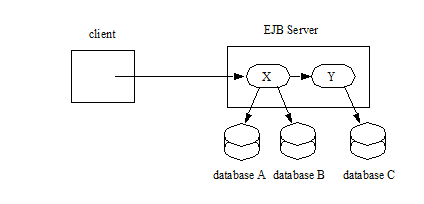
The application programmer does not have to do anything to ensure transactional semantics. Behind the scenes, the EJB server enlists the database connections as part of the transaction. When the transaction commits, the EJB server and the database systems perform a two-phase commit protocol to ensure atomic updates across all three databases.
8.2.2. Messages Sent or Received Over JMS Sessions and Update of Multiple Databases
The Enterprise JavaBeans architecture makes it possible for an application program to send messages to or receive messages from one or more JMS Destinations and/or to update data in one or more databases in a single transaction.
In the following figure, a client invokes the enterprise bean X. Bean X sends a message to a JMS queue A and updates data in a database B using connections that the Deployer configured to connect with a JMS provider and a database. Then X calls another enterprise bean, Y. Bean Y updates data in database C. The EJB server ensures that the operations on A, B, and C are either all committed, or all rolled back.
===
Message Sent to JMS Queue and Updates to Multiple Databases
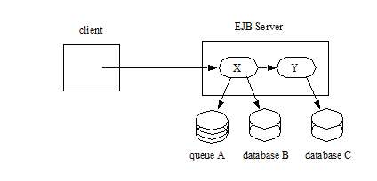
The application programmer does not have to do anything to ensure transactional semantics. The enterprise beans X and Y perform the message send and database updates using the standard JMS and JDBC™ APIs. Behind the scenes, the EJB server enlists the session on the connection to the JMS provider and the database connections as part of the transaction. When the transaction commits, the EJB server and the messaging and database systems perform a two-phase commit protocol to ensure atomic updates across all the three resources.
In the following figure, a client sends a message to the JMS queue A serviced by the message-driven bean X. Bean X updates data using two database connections that the Deployer configured to connect with two different databases, B and C. The EJB server ensures that the dequeuing of the JMS message, its receipt by bean X, and the updates to databases B and C are either all committed or all rolled back.
===
Message Sent to JMS Queue Serviced by Message-Driven Bean and Updates to Multiple Databases
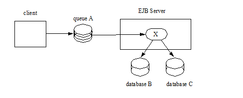
8.2.3. Update of Databases via Multiple EJB Servers
The Enterprise JavaBeans architecture allows updates of data at multiple sites to be performed in a single transaction.
In the following figure, a client invokes the enterprise bean X. Bean X updates data in database A, and then calls another enterprise bean Y that is installed in a remote EJB server. Bean Y updates data in database B. The Enterprise JavaBeans architecture makes it possible to perform the updates to databases A and B in a single transaction.
===
Updates to Multiple Databases in Same Transaction
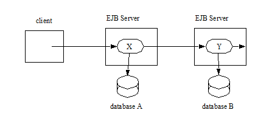
When X invokes Y, the two EJB servers cooperate to propagate the transaction context from X to Y. This transaction context propagation is transparent to the application-level code.
At transaction commit time, the two EJB servers use a distributed two-phase commit protocol (if the capability exists) to ensure the atomicity of the database updates.
8.2.4. Client-Managed Demarcation
A Java client can use the javax.transaction.UserTransaction interface to explicitly demarcate transaction boundaries. The client program obtains the javax.transaction.UserTransaction interface through dependency injection or lookup in the bean’s EJBContext or in the JNDI name space.
A client program using explicit transaction demarcation may perform, via enterprise beans, atomic updates across multiple databases residing at multiple EJB servers, as illustrated in the following figure.
===
Updates on Multiple Databases on Multiple Servers
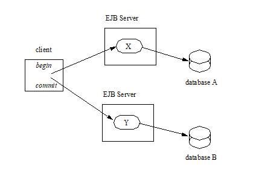
The application programmer demarcates the transaction with begin and commit calls. If the enterprise beans X and Y are configured to use a client transaction (i.e., their methods have transaction attributes that either require or support an existing transaction context), the EJB server ensures that the updates to databases A and B are made as part of the client’s transaction.
8.2.5. Container-Managed Demarcation
Whenever a client invokes a method on an enterprise bean’s business interface, on the bean no-interface view, on a home or component interface, or a message listener method, the container interposes on the method invocation. The interposition allows the container to control transaction demarcation declaratively through the transaction attribute set by the developer. (See See Specification of the Transaction Attributes for a Bean’s Methods for a description of transaction attributes.)
For example, if a session bean method is configured with the REQUIRED transaction attribute, the container behaves as follows: If the client request is not associated with a transaction context, the container automatically initiates a transaction whenever a client invokes an enterprise bean method that requires a transaction context. If the client request contains a transaction context, the container includes the enterprise bean method in the client transaction.
The following figure illustrates such a scenario. A non-transactional client invokes the enterprise bean X, and the invoked method has the REQUIRED45 transaction attribute. Because the invocation from the client does not include a transaction context, the container starts a new transaction before dispatching the method on X. Bean X’s work is performed in the context of the transaction. When X calls other enterprise beans (Y in our example), the work performed by the other enterprise beans is also automatically included in the transaction (subject to the transaction attribute of the other enterprise bean).
===
Update of Multiple Databases from Non-Transactional Client
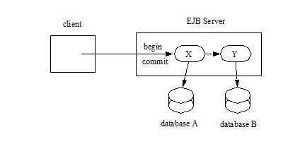
The container automatically commits the transaction at the time X returns a reply to the client.
If a message-driven bean’s message listener method is configured with the REQUIRED transaction attribute, the container automatically starts a new transaction before the delivery of the message and, hence, before the invocation of the method.46
JMS requires that the transaction be started before the dequeuing of the message. See See Java™ Message Service.
The container automatically enlists the resource manager associated with the arriving message and all the resource managers accessed by the message listener method with the transaction.
It is illegal to associate JTA transactional interceptors (see See Java™ Transaction API) with Enterprise JavaBeans47.
8.3. Bean Provider’s Responsibilities
This section describes the Bean Provider’s view of transactions and defines the Bean Provider’s responsibilities.
8.3.1. Bean-Managed Versus Container-Managed Transaction Demarcation
When designing an enterprise bean, the developer must decide whether the enterprise bean will demarcate transactions programmatically in the business methods (bean-managed transaction demarcation), or whether the transaction demarcation is to be performed by the container based on the transaction attributes specified in metadata annotations or in the deployment descriptor (container-managed transaction demarcation). Typically enterprise beans will be specified to have container-managed transaction demarcation. This is the default if no transaction management type is specified.
A session bean or a message-driven bean can be designed with bean-managed transaction demarcation or with container-managed transaction demarcation. (But it cannot be both at the same time.)
An enterprise bean instance can access resource managers in a transaction only in the enterprise bean’s methods in which there is a transaction context available.
8.3.1.1. Non-Transactional Execution
Some enterprise beans may need to access resource managers that do not support an external transaction coordinator. The container cannot manage the transactions for such enterprise beans in the same way that it can for the enterprise beans that access resource managers that support an external transaction coordinator.
If an enterprise bean needs to access a resource manager that does not support an external transaction coordinator, the Bean Provider should design the enterprise bean with container-managed transaction demarcation and assign the NOT_SUPPORTED transaction attribute to the bean class or to all the bean’s methods. The EJB architecture does not specify the transactional semantics of the enterprise bean methods. See Subsection See Handling of Methods that Run with “an unspecified transaction context” for how the container implements this case.
8.3.2. Isolation Levels
Transactions not only make completion of a unit of work atomic, but they also isolate the units of work from each other, provided that the system allows concurrent execution of multiple units of work.
The isolation level describes the degree to which the access to a resource manager by a transaction is isolated from the access to the resource manager by other concurrently executing transactions.
The following are guidelines for managing isolation levels in enterprise beans.
The API for managing an isolation level is resource-manager-specific. (Therefore, the EJB architecture does not define an API for managing isolation levels.)
If an enterprise bean uses multiple resource managers, the Bean Provider may specify the same or different isolation level for each resource manager. This means, for example, that if an enterprise bean accesses multiple resource managers in a transaction, access to each resource manager may be associated with a different isolation level.
The Bean Provider must take care when setting an isolation level. Most resource managers require that all accesses to the resource manager within a transaction are done with the same isolation level. An attempt to change the isolation level in the middle of a transaction may cause undesirable behavior, such as an implicit sync point (a commit of the changes done so far).
For session beans and message-driven beans with bean-managed transaction demarcation, the Bean Provider can specify the desirable isolation level programmatically in the enterprise bean’s methods, using the resource-manager specific API. For example, the Bean Provider can use the java.sql.Connection.setTransactionIsolation method to set the appropriate isolation level for database access.
Additional care must be taken if multiple enterprise beans access the same resource manager in the same transaction. Conflicts in the requested isolation levels must be avoided.
8.3.3. Enterprise Beans Using Bean-Managed Transaction Demarcation
This subsection describes the requirements for the Bean Provider of an enterprise bean with bean-managed transaction demarcation.
The enterprise bean with bean-managed transaction demarcation must be a session bean or a message-driven bean.
An instance that starts a transaction must complete the transaction before it starts a new transaction.
The Bean Provider uses the UserTransaction interface to demarcate transactions. All updates to the resource managers between the UserTransaction.begin and UserTransaction. commit methods are performed in a transaction. While an instance is in a transaction, the instance must not attempt to use the resource-manager specific transaction demarcation API (e.g. it must not invoke the commit or rollback method on the java.sql.Connection interface or on the javax.jms.Session interface).48
A stateful session bean instance may, but is not required to, commit a started transaction before a business method returns. If a transaction has not been completed by the end of a business method, the container retains the association between the transaction and the instance across multiple client calls until the instance eventually completes the transaction. A stateful session bean instance must commit a transaction before PostConstruct , PreDestroy , PrePassivate or PostActivate lifecycle callback interceptor method returns.
A stateless session bean instance must commit a transaction before a business method or timeout callback method returns.
A singleton session bean instance must commit a transaction before a business method or timeout callback method or PostConstruct or PreDestroy lifecycle callback interceptor method returns.
A message-driven bean instance must commit a transaction before a message listener method or timeout callback method returns.
If AroundInvoke interceptor methods are applied to the business method or AroundTimeout interceptor methods are applied to the timeout callback method of a singleton or a stateless session bean or a message-driven bean, the transaction must be completed before the last AroundInvoke or AroundTimeout interceptor method completes.
The following code segments illustrate a business method that performs a transaction involving two database connections.
@Stateless
@TransactionManagement(BEAN)
public class MySessionBean implements MySession \{
@Resource javax.transaction.UserTransaction ut;
@Resource javax.sql.DataSource database1;
@Resource javax.sql.DataSource database2;
public void someMethod(...) \{
java.sql.Connection con1;
java.sql.Connection con2;
java.sql.Statement stmt1;
java.sql.Statement stmt2;
try \{
// obtain con1 object and set it up for transactions
con1 = database1.getConnection();
stmt1 = con1.createStatement();
// obtain con2 object and set it up for transactions
con2 = database2.getConnection();
stmt2 = con2.createStatement();
// Now do a transaction that involves con1 and con2.
// start the transaction
ut.begin();
// Do some updates to both con1 and con2. The container
// automatically enlists con1 and con2 with the
// transaction.
stmt1.executeQuery(...);
stmt1.executeUpdate(...);
stmt2.executeQuery(...);
stmt2.executeUpdate(...);
stmt1.executeUpdate(...);
stmt2.executeUpdate(...);
// commit the transaction
ut.commit();
} catch (...) \{
// handle exception s
...
} finally \{
// release connections
con1.close();
con2.close();
...
}
}
...
}
The following code segments illustrate a business method that performs a transaction involving both a database connection and a JMS connection.
@Stateless
@TransactionManagement(BEAN)
public class MySessionBean implements MySession \{
@Resource javax.Transaction.UserTransaction ut;
@Resource javax.sql.DataSource database1;
@Resource javax.jms.QueueConnectionFactory qcf1;
@Resource javax.jms.Queue queue1;
public void someMethod(...) \{
java.sql.Connection dcon;
java.sql.Statement stmt;
javax.jms.QueueConnection qcon;
javax.jms.QueueSession qsession;
javax.jms.QueueSender qsender;
javax.jms.Message message;
try \{
// obtain db conn object and set it up for transactions
dcon = database1.getConnection();
stmt = dcon.createStatement();
// obtain jms conn object and set up session for
// transactions
qcon = qcf1.createQueueConnection();
qsession = qcon.createQueueSession(true,0);
qsender = qsession.createSender(queue1);
message = qsession.createTextMessage();
message.setText(“some message”);
// Now do a transaction that involves both connections
// start the transaction
ut.begin();
// Do database updates and send message. The container
// automatically enlists dcon and qsession with the
// transaction.
stmt.executeQuery(...);
stmt.executeUpdate(...);
stmt.executeUpdate(...);
qsender.send(message);
// commit the transaction
ut.commit();
} catch (...) \{
// handle exception s
...
} finally \{
// release connections
dcon.close();
qcon.close();
...
}
}
...
}
The following code segments illustrate a stateful session bean that retains a transaction across three client calls, invoked in the following order: method1 , method2 , and method3. 49
@Stateful
@TransactionManagement(BEAN)
public class MySessionBean implements MySession \{
@Resource javax.Transaction.UserTransaction ut;
@Resource javax.sql.DataSource database1;
@Resource javax.sql.DataSource database2;
java.sql.Connection con1;
java.sql.Connection con2;
public void method1(...) \{
java.sql.Statement stmt;
// start a transaction
ut.begin();
// make some updates on con1
con1 = database1.getConnection();
stmt = con1.createStatement();
stmt.executeUpdate(...);
stmt.executeUpdate(...);
//
// The container retains the transaction associated with the
// instance to the next client call (which is method2(...)).
}
public void method2(...) \{
java.sql.Statement stmt;
con2 = database2.getConnection();
stmt = con2.createStatement();
stmt.executeUpdate(...);
stmt.executeUpdate(...);
// The container retains the transaction associated with the
// instance to the next client call (which is method3(...)).
}
public void method3(...) \{
java.sql.Statement stmt;
// make some more updates on con1 and con2
stmt = con1.createStatement();
stmt.executeUpdate(...);
stmt = con2.createStatement();
stmt.executeUpdate(...);
try \{
// commit the transaction
ut.commit();
} finally \{
// release connections
con1.close();
con2.close();
...
}
}
...
}
It is possible for an enterprise bean to open and close a database connection in each business method (rather than hold the connection open until the end of transaction). The following code segments illustrate a stateful session bean for which the client executes the sequence of methods ( method1 , method2 , method2 , method2 , and method3 ). In this scenario, all the database updates done by the multiple invocations of method2 are performed in the scope of the same transaction, which is the transaction started in method1 and committed in method3.
@Stateful
@TransactionManagement(BEAN)
public class MySessionBean implements MySession \{
@Resource javax.Transaction.UserTransaction ut;
@Resource javax.sql.DataSource database1;
public void method1(...) \{
// start a transaction
ut.begin();
}
public void method2(...) \{
java.sql.Connection con;
java.sql.Statement stmt;
try \{
// open connection
con = database1.getConnection();
// make some updates on con
stmt = con.createStatement();
stmt.executeUpdate(...);
stmt.executeUpdate(...);
} finally \{
// close the connection
con.close();
...
}
}
public void method3(...) \{
// commit the transaction
ut.commit();
}
...
}
8.3.3.1. getRollbackOnly and setRollbackOnly Methods
An enterprise bean with bean-managed transaction demarcation must not use the getRollbackOnly and setRollbackOnly methods of the EJBContext interface.
An enterprise bean with bean-managed transaction demarcation has no need to use these methods, because of the following reasons:
An enterprise bean with bean-managed transaction demarcation can obtain the status of a transaction by using the getStatus method of the javax.transaction.UserTransaction interface.
An enterprise bean with bean-managed transaction demarcation can rollback a transaction using the rollback method of the javax.transaction.UserTransaction interface.
8.3.4. Enterprise Beans Using Container-Managed Transaction Demarcation
This subsection describes the requirements for the Bean Provider of an enterprise bean using container-managed transaction demarcation.
The enterprise bean’s business methods, message listener methods, business method interceptor methods, lifecycle callback interceptor methods, or timeout callback methods must not use any resource-manager specific transaction management methods that would interfere with the container’s demarcation of transaction boundaries. For example, the enterprise bean methods must not use the following methods of the java.sql.Connection interface: commit, setAutoCommit, and rollback; or the following methods of the javax.jms.Session interface: commit and rollback .
The enterprise bean’s business methods, message listener methods, business method interceptor methods, lifecycle callback interceptor methods, or timeout callback methods must not attempt to obtain or use the javax.transaction.UserTransaction interface.
The following code segments illustrate a business method in an enterprise bean with container-managed transaction demarcation. The business method updates two databases using JDBC™ connections. The container provides transaction demarcation as specified by the transaction attribute.50
@Stateless public class MySessionBean implements MySession \{
...
@TransactionAttribute(REQUIRED)
public void someMethod(...) \{
java.sql.Connection con1;
java.sql.Connection con2;
java.sql.Statement stmt1;
java.sql.Statement stmt2;
try \{
// obtain con1 and con2 connection objects
con1 = ...;
con2 = ...;
stmt1 = con1.createStatement();
stmt2 = con2.createStatement();
//
// Perform some updates on con1 and con2. The container
// automatically enlists con1 and con2 with the
// container-managed transaction.
//
stmt1.executeQuery(...);
stmt1.executeUpdate(...);
stmt2.executeQuery(...);
stmt2.executeUpdate(...);
stmt1.executeUpdate(...);
stmt2.executeUpdate(...);
} finally \{
// release connections
con1.close();
con2.close();
...
}
}
...
}
8.3.4.1. javax.ejb.SessionSynchronization Interface
A stateful session bean with container-managed transaction demarcation can optionally implement the javax.ejb.SessionSynchronization interface or use the session synchronization annotations. Their use is described in Subsection See The Session Synchronization Notifications for Stateful Session Beans.
8.3.4.2. javax.ejb.EJBContext.setRollbackOnly Method
An enterprise bean with container-managed transaction demarcation can use the setRollbackOnly method of its EJBContext object to mark the transaction such that the transaction can never commit. Typically, an enterprise bean marks a transaction for rollback to protect data integrity before throwing an application exception, if the application exception class has not been specified to automatically cause the container to rollback the transaction.
For example, an AccountTransfer bean which debits one account and credits another account could mark a transaction for rollback if it successfully performs the debit operation, but encounters a failure during the credit operation.
8.3.4.3. javax.ejb.EJBContext.getRollbackOnly method
An enterprise bean with container-managed transaction demarcation can use the getRollbackOnly method of its EJBContext object to test if the current transaction has been marked for rollback. The transaction might have been marked for rollback by the enterprise bean itself, by other enterprise beans, or by other components (outside of the EJB specification scope) of the transaction processing infrastructure.
8.3.5. Use of JMS APIs in Transactions
The Bean Provider should not make use of the JMS request/reply paradigm (sending of a JMS message, followed by the synchronous receipt of a reply to that message) within a single transaction. Because a JMS message is typically not delivered to its final destination until the transaction commits, the receipt of the reply within the same transaction will not take place.
Because the container manages the transactional enlistment of JMS sessions on behalf of a bean, the parameters of the createSession(boolean transacted, int acknowledgeMode) , createQueueSession(boolean transacted, int acknowledgeMode) and createTopicSession(boolean transacted, int acknowledgeMode) methods are ignored. It is recommended that the Bean Provider specify that a session is transacted, but provide 0 for the value of the acknowledgment mode.
The Bean Provider should not use the JMS acknowledge method either within a transaction or within an unspecified transaction context. Message acknowledgment in an unspecified transaction context is handled by the container. See Handling of Methods that Run with “an unspecified transaction context” describes some of the techniques that the container can use for the implementation of a method invocation with an unspecified transaction context.
8.3.6. Specification of a Bean’s Transaction Management Type
By default, a session bean or message-driven bean has container managed transaction demarcation if the transaction management type is not specified. The Bean Provider of a session bean or a message-driven bean can use the TransactionManagement annotation to declare whether the session bean or message-driven bean uses bean-managed or container-managed transaction demarcation. The value of the TransactionManagement annotation is either CONTAINER or BEAN . The TransactionManagement annotation is applied to the enterprise bean class.
Alternatively, the Bean Provider can use the transaction-type deployment descriptor element to specify the bean’s transaction management type. If the deployment descriptor is used, it is only necessary to explicitly specify the bean’s transaction management type if bean-managed transaction is used.
The transaction management type of a bean is determined by the Bean Provider. The Application Assembler is not permitted to use the deployment descriptor to override a bean’s transaction management type regardless of whether it has been explicitly specified or defaulted by the Bean Provider. (See Chapter See Deployment Descriptor for information about the deployment descriptor.)
8.3.7. Specification of the Transaction Attributes for a Bean’s Methods
The Bean Provider of an enterprise bean with container-managed transaction demarcation may specify the transaction attributes for the enterprise bean’s methods. By default, the value of the transaction attribute for a method of a bean with container-managed transaction demarcation is the REQUIRED transaction attribute, and the transaction attribute does not need to be explicitly specified in this case.
A transaction attribute is a value associated with each of the following methods
a method of a bean’s business interface
a method exposed through the bean class no-interface view
a message listener method of a message-driven bean
a timeout callback method
a stateless or singleton session bean’s web service endpoint method
for beans written to the EJB 2.1 and earlier client view, a method of a session bean’s home or component interface
a PostConstruct or PreDestroy lifecycle callback interceptor method of a singleton session bean
a PostConstruct , PreDestroy , PrePassivate or PostActivate lifecycle callback interceptor method of a stateful session bean
The transaction attribute specifies how the container must manage transactions for a method when a client invokes the method.
Transaction attributes are specified for the following methods:
For a session bean written to the EJB 3.x client view API, the transaction attributes are specified for those methods of the session bean class that correspond to the bean’s business interface, the direct and indirect superinterfaces of the business interface, methods exposed through the bean class no-interface view, and for the timeout callback methods, if any.
For a stateless session bean or singleton session bean that provides a web service client view, the transaction attributes are specified for the bean’s web service endpoint methods, and for the timeout callback methods, if any.
For a singleton session bean, the transaction attributes are specified for the PostConstruct and PreDestroy lifecycle callback interceptor methods, if any. In order to specify the transaction attribute for a PostConstuct or PreDestroy method of a singleton session bean, the transaction attribute must be specified for the method(s) on the bean class, rather than for a superclass or PostConstruct or PreDestroy interceptor method.
For a stateful session bean, the transaction attributes are specified for the PostConstruct, PreDestroy, PrePassivate or PostActivate lifecycle callback interceptor methods, if any. In order to specify the transaction attribute for a PostConstruct, PreDestroy, PrePassivate or PostActivate method of a stateful session bean, the transaction attribute must be specified for the method(s) on the bean class, rather than for a superclass or PostConstruct, PreDestroy, PrePassivate or PostActivate interceptor method.
For a message-driven bean, the transaction attributes are specified for the message listenermethods on the message-driven bean class and for the timeout callback methods, if any.
For a session bean written to the EJB 2.1 and earlier client view, the transaction attributes are specified for the methods of the component interface and all the direct and indirect superinterfaces of the component interface, excluding the methods of the javax.ejb.EJBObject or javax.ejb.EJBLocalObject interface; and for the timeout callback methods, if any. Transaction attributes must not be specified for the methods of a session bean’s home interface.
By default, if a TransactionAttribute annotation is not specified for a method of an enterprise bean with container-managed transaction demarcation, the value of the transaction attribute for the method is defined to be REQUIRED . The rules for the specification of transaction attributes are defined in See Specification of Transaction Attributes with Metadata Annotations.
The Bean Provider may use the deployment descriptor as an alternative to metadata annotations to specify the transaction attributes or as a means to supplement or override metadata annotations for transaction attributes. If a transaction attribute value is not specified in the deployment descriptor, it is assumed that the transaction attribute specified in annotations applies, or—in the case that no annotation has been specified—that the value is Required .
The Application Assembler is permitted to override the transaction attribute values using the bean’s deployment descriptor. The Deployer is also permitted to override the transaction attribute values at deployment time. Caution should be exercised when overriding the transaction attributes of an application, as the transactional structure of an application is typically intrinsic to the semantics of the application.
Enterprise JavaBeans defines the following values for the TransactionAttribute metadata annotation:
MANDATORY
REQUIRED
REQUIRES_NEW
SUPPORTS
NOT_SUPPORTED
NEVER
The deployment descriptor values that correspond to these annotation values are the following:
_Mandatory_
_Required_
_RequiresNew_
_Supports_
_NotSupported_
_Never_
_In this chapter, we use the TransactionAttribute annotation values to refer to transaction attributes. As noted, however, the deployment descriptor may be used._
Refer to Subsection See Container-Managed Transaction Demarcation for Business Methods for the specification of how the value of the transaction attribute affects the transaction management performed by the container.
For a message-driven bean’s message listener methods (or interface), only the REQUIRED and NOT_SUPPORTED transaction attributes may be used.
For an enterprise bean’s timeout callback methods, only the REQUIRED , REQUIRES_NEW and NOT_SUPPORTED transaction attributes may be used.
For a session bean’s asynchronous business methods, only the REQUIRED, REQUIRES_NEW, and NOT_SUPPORTED transaction attributes may be used.
For a singleton session bean’s PostConstruct and PreDestroy lifecycle callback interceptor methods, only the REQUIRED , REQUIRES_NEW , and NOT_SUPPORTED transaction attributes may be used.
For a stateful session bean’s PostConstruct, PreDestroy, PrePassivate or PostActivate lifecycle callback interceptor methods, only the REQUIRES_NEW and NOT_SUPPORTED transaction attributes may be used.
If an enterprise bean implements the javax.ejb.SessionSynchronization interface or uses any of the session synchronization annotations, only the following values may be used for the transaction attributes of the bean’s methods: REQUIRED , REQUIRES_NEW , MANDATORY51 .
The above restriction is necessary to ensure that the enterprise bean is invoked only in a transaction. If the bean were invoked without a transaction, the container would not be able to send the transaction synchronization calls.
8.3.7.1. Specification of Transaction Attributes with Metadata Annotations
The following rules apply for the specification of transaction attributes using Java language metadata annotations.
The TransactionAttribute annotation is used to specify a transaction attribute. The value of the transaction attribute annotation is given by the enum TransactionAttributeType:
public enum TransactionAttributeType \{
MANDATORY,
REQUIRED,
REQUIRES_NEW,
SUPPORTS,
NOT_SUPPORTED,
NEVER
}
The transaction attributes for the methods of a bean class may be specified on the class, the business methods of the class, or both.
Specifying the TransactionAttribute annotation on the bean class means that it applies to all applicable business interface methods of the class. If the transaction attribute type is not specified, it is assumed to be REQUIRED . The absence of a transaction attribute specification on the bean class is equivalent to the specification of TransactionAttribute(REQUIRED) on the bean class.
A transaction attribute may be specified on a method of the bean class to override the transaction attribute value explicitly or implicitly specified on the bean class.
If the bean class has superclasses, the following additional rules apply.
A transaction attribute specified on a superclass S applies to the business methods defined by S . If a class-level transaction attribute is not specified on S , it is equivalent to specification of TransactionAttribute(REQUIRED) on S .
A transaction attribute may be specified on a business method M defined by class S to override for method M the transaction attribute value explicitly or implicitly specified on the class S .
If a method M of class S overrides a business method defined by a superclass of S , the transaction attribute of M is determined by the above rules as applied to class S .
Example:
@TransactionAttribute(SUPPORTS)
public class SomeClass \{
public void aMethod () \{...}
public void bMethod () \{...}
...
}
@Stateless public class ABean extends SomeClass implements A \{
public void aMethod () \{...}
@TransactionAttribute(REQUIRES_NEW)
public void cMethod () \{...}
...
}
Assuming aMethod , bMethod , cMethod are methods of interface A , their transaction attributes are REQUIRED , SUPPORTS , and REQUIRES_NEW respectively.
8.3.7.2. Specification of Transaction Attributes in the Deployment Descriptor
The following rules apply for the specification of transaction attributes in the deployment descriptor. (See Section See Deployment Descriptor XML Schema for the complete syntax of the deployment descriptor.)
Note that even in the absence of the use of annotations, it is not necessary to explicitly specify transaction attributes for all of the methods listed in section See Specification of the Transaction Attributes for a Bean’s Methods. If a transaction attribute is not specified for a method in an EJB deployment descriptor, the transaction attribute defaults to Required .
If the deployment descriptor is used to override annotations, and transaction attributes are not specified for some methods, the values specified in annotations (whether explicit or defaulted) will apply for those methods.
Use of the container-transaction element
The container-transaction element may be used to define the transaction attributes for the following methods:
business interface methods
home interface methods
component interface methods
message-listener interface methods
no-interface view methods
web service endpoint methods
singleton PostConstruct and PreDestroy methods
stateful session bean PostConstruct, PreDestroy, PrePassivate or PostActivate methods (see limitations)
timeout callback methods
Each container-transaction element consists of a list of one or more method elements, and the trans-attribute element. The container-transaction element specifies that all the listed methods are assigned the specified transaction attribute value. It is required that all the methods specified in a single container-transaction element be methods of the same enterprise bean.
The method element uses the ejb-name, method-intf, method-name, and method-params elements to denote one or more methods.
The optional method-intf element can be used to differentiate between methods with the same name and signature that are multiply defined across the business, component, and home interfaces, web service endpoint, no-interface view, singleton and stateful session bean lifecycle callbacks, and/or timeout callbacks. However, if the same method is a method of a local business interface, local component interface, or no-interface view, the same transaction attribute applies to the method for all of them. Likewise, if the same method is a method of both a remote business interface and the remote component interface, the same transaction attribute applies to the method for both interfaces.
There are three legal styles of composing the method element:
+ <method> + <ejb-name>EJBNAME</ejb-name> + <method-name>*</method-name> + </method> + + This style is used to specify a default value of the transaction attribute for the following methods, if any, of the specified enterprise bean for which there is no Style 2 or Style 3 element specified:
All methods of the business, home, or component interface
All no-interface view methods
All message listener methods
Web service endpoint methods
Singleton PostConstruct and PreDestroy methods
All timeout callback methods
There must be at most one container-transaction element that uses the Style 1 method element for a given enterprise bean, unless the method-intf element is used with this style.
This style may be used for stateful session bean lifecycle callback methods to specify their transaction attributes if used with the method-intf element value LifecycleCallback.
+ <method> + <ejb-name>EJBNAME</ejb-name> + <method-name>METHOD</method-name> + </method> + + This style is used for referring to a specified method of a business, home, or component interface method; no-interface view method; message listener method; web service endpoint method; singleton PostConstruct and PreDestroy methods; or timeout callback method of the specified enterprise bean. If there are multiple methods with the same overloaded name, this style refers to all the methods with the same name.
There must be at most one container-transaction element that uses the Style 2 method element for a given method name, unless the method-intf element is used with this style. If there is also a container-transaction element that uses Style 1 element for the same bean, the value specified by the Style 2 element takes precedence.
This style may be used to refer to stateful session bean PostConstruct, PreDestroy, PrePassivate or PostActivate methods to specify their transaction attributes if any of the following is true:
There is only one method with this name in the specified enterprise bean
All overloaded methods with this name in the specified enterprise bean are lifecycle callback methods
The method-intf element is specified and it contains LifecycleCallback as the value
+ <method> + <ejb-name>EJBNAME</ejb-name> + <method-name>METHOD</method-name> + <method-params> + <method-param>PARAMETER_1</method-param> + ... + <method-param>PARAMETER_N</method-param> + </method-params> + </method> + + This style is used to refer to a single method within a set of methods with an overloaded name. If there is also a container-transaction element that uses the Style 2 element for the method name, or the Style 1 element for the bean, the value specified by the Style 3 element takes precedence.
The following is an example of the specification of the transaction attributes in the deployment descriptor. The updatePhoneNumber method of the EmployeeRecord enterprise bean is assigned the transaction attribute Mandatory; all other methods of the EmployeeRecord bean are assigned the attribute Required. All the methods of the enterprise bean AardvarkPayroll are assigned the attribute RequiresNew.
<ejb-jar>
...
<assembly-descriptor>
...
<container-transaction>
<method>
<ejb-name>EmployeeRecord</ejb-name>
<method-name>*</method-name>
</method>
<trans-attribute>Required</trans-attribute>
</container-transaction>
<container-transaction>
<method>
<ejb-name>EmployeeRecord</ejb-name>
<method-name>updatePhoneNumber</method-name>
</method>
<trans-attribute>Mandatory</trans-attribute>
</container-transaction>
<container-transaction>
<method>
<ejb-name>AardvarkPayroll</ejb-name>
<method-name>*</method-name>
</method>
<trans-attribute>RequiresNew</trans-attribute>
</container-transaction>
</assembly-descriptor>
</ejb-jar>
8.4. Application Assembler’s Responsibilities
This section describes the view and responsibilities of the Application Assembler.
There is no mechanism for an Application Assembler to affect enterprise beans with bean-managed transaction demarcation. The Application Assembler must not define transaction attributes for an enterprise bean with bean-managed transaction demarcation.
The Application Assembler can use the deployment descriptor transaction attribute mechanism described above to override or change the transaction attributes for enterprise beans using container-managed transaction demarcation.
The Application Assembler should exercise caution in the changing the transaction attributes, as the behavior specified by the transaction attributes is typically an intrinsic part of the semantics of an application.
8.5. Deployer’s Responsibilities
The Deployer is permitted to override or change the values of transaction attributes at deployment time.
The Deployer should exercise caution in the changing the transaction attributes, as the behavior specified by the transaction attributes is typically an intrinsic part of the semantics of an application.
For applications written to the EJB 2.1 specification (and earlier), the Deployer is responsible for ensuring that the methods of the deployed enterprise beans with container-managed transaction demarcation have been assigned a transaction attribute if this has not be specified in the deployment descriptor.
8.6. Container Provider Responsibilities
This section defines the responsibilities of the Container Provider.
Every client method invocation on a session bean via the bean’s business interface (and/or home and component interface), no-interface view, web service endpoint, and every invocation of a message listener method on a message-driven bean is interposed by the container, and every connection to a resource manager used by an enterprise bean is obtained via the container. This managed execution environment allows the container to affect the enterprise bean’s transaction management.
This does not imply that the container must interpose on every resource manager access performed by the enterprise bean. Typically, the container interposes only on the resource manager connection factory (e.g. a JDBC data source) JNDI look up by registering the container-specific implementation of the resource manager connection factory object. The resource manager connection factory object allows the container to obtain the javax.transaction.xa.XAResource interface as described in the JTA specification and pass it to the transaction manager. After the set up is done, the enterprise bean communicates with the resource manager without going through the container.
8.6.1. Bean-Managed Transaction Demarcation
This subsection defines the container’s responsibilities for the transaction management of enterprise beans with bean-managed transaction demarcation.
Bean-managed transaction demarcation can be used with session and message-driven beans.
The container must manage client invocations to an enterprise bean instance with bean-managed transaction demarcation as follows. When a client invokes a business method via one of the enterprise bean’s client views, the container suspends any transaction that may be associated with the client request. If there is a transaction associated with the instance (this would happen if a stateful session bean instance started the transaction in some previous business method), the container associates the method execution with this transaction. If there are interceptor methods associated with the bean instances, these actions are taken before the interceptor methods are invoked.
The container must make the javax.transaction.UserTransaction interface available to the enterprise bean’s business method, message listener method, interceptor method, or timeout callback method via dependency injection into the enterprise bean class or interceptor class, through lookup via the javax.ejb.EJBContext interface, and in the JNDI naming context under java:comp/UserTransaction. When an instance uses the javax.transaction.UserTransaction interface to demarcate a transaction, the container must enlist all the resource managers used by the instance between the begin and commit—or rollback—methods with the transaction.52 When the instance attempts to commit the transaction, the container is responsible for the global coordination of the transaction commit53.
In the case of a stateful session bean, it is possible that the business method or interceptor method that started a transaction completes without committing or rolling back the transaction. In such a case, the container must retain the association between the transaction and the instance across multiple client calls until the instance commits or rolls back the transaction. When the client invokes the next business method, the container must invoke the business method (and any applicable interceptor methods for the bean) in this transaction context.
If a stateless or singleton session bean instance starts a transaction in a business method or interceptor method, it must commit the transaction before the business method (or all its interceptor methods) returns. The container must detect the case in which a transaction was started, but not completed, in the business method or interceptor method for the business method, and handle it as follows:
Log this as an application error to alert the System Administrator.
Roll back the started transaction.
If this a stateless session bean, discard the bean instance.54
Throw the javax.ejb.EJBException55 . If the EJB 2.1 client view is used, the container should throw thejava.rmi.RemoteException if the client is a remote client, and the javax.ejb.EJBException if the client is a local client.
If a message-driven bean instance starts a transaction in a message listener method or interceptor method, it must commit the transaction before the message listener method (or all its interceptor methods) returns. The container must detect the case in which a transaction was started, but not completed, in a message listener method or interceptor method for the message listener method, and handle it as follows:
Log this as an application error to alert the System Administrator.
Roll back the started transaction.
Discard the instance of the message-driven bean.
If a session bean or message-driven bean instance starts a transaction in a timeout callback method, it must commit the transaction before the timeout callback method returns. The container must detect the case in which a transaction was started, but not completed, in a timeout callback method, and handle it as follows:
Log this as an application error to alert the System Administrator.
Roll back the started transaction.
If this is a stateless session bean or message-driven bean, discard the instance of the bean.
The actions performed by the container for an instance with bean-managed transaction are summarized by the following table. T1 is a transaction associated with a client request, T2 is a transaction that is currently associated with the instance (i.e. a transaction that was started but not completed by a previous business method).
===
Container’s Actions for Methods of Beans with Bean-Managed Transaction
Client’s transaction
Transaction currently associated with instance
Transaction associated
with the method
none
none
none
T1
none
none
none
T2
T2
T1
T2
T2
The following items describe each entry in the table:
If the client request is not associated with a transaction and the instance is not associated with a transaction, or if the bean is a message-driven bean, the container invokes the instance with an unspecified transaction context.
If the client request is associated with a transaction T1, and the instance is not associated with a transaction, the container suspends the client’s transaction association and invokes the method with an unspecified transaction context. The container resumes the client’s transaction association (T1) when the method (together with any associated interceptor methods) completes. This case can never happen for a message-driven bean or for the invocation of a web service endpoint method of a session bean.
If the client request is not associated with a transaction and the instance is already associated with a transaction T2, the container invokes the instance with the transaction that is associated with the instance (T2). This case can never happen for a stateless session bean, singleton session bean, or a message-driven bean: it can only happen for a stateful session bean.
If the client is associated with a transaction T1, and the instance is already associated with a transaction T2, the container suspends the client’s transaction association and invokes the method with the transaction context that is associated with the instance (T2). The container resumes the client’s transaction association (T1) when the method (together with any associated interceptor methods) completes. This case can never happen for a stateless session bean, singleton session bean, or a message-driven bean: it can only happen for a stateful session bean.
The container must allow the enterprise bean instance to serially perform several transactions in a method.
When an instance attempts to start a transaction using the begin method of the javax.transaction.UserTransaction interface while the instance has not committed the previous transaction, the container must throw the javax.transaction.NotSupportedException in the begin method.
The container must throw the java.lang.IllegalStateException if an instance of a bean with bean-managed transaction demarcation attempts to invoke the setRollbackOnly or getRollbackOnly method of the javax.ejb.EJBContext interface.
8.6.2. Container-Managed Transaction Demarcation for Session Beans
The container is responsible for providing the transaction demarcation for the session beans declared with container-managed transaction demarcation. For these enterprise beans, the container must demarcate transactions as specified by the transaction attribute values specified using metadata annotations in the bean class or specified in the deployment descriptor.
8.6.2.1. Session Synchronization Callbacks
If a session bean class implements the javax.ejb.SessionSynchronization interface or uses the session synchronization annotations, the container must invoke the afterBegin, beforeCompletion, and afterCompletion callbacks on the instance as part of the transaction commit protocol. If a stateful session bean’s PostConstruct, PreDestroy, PrePassivate or PostActivate lifecycle callback interceptor methods are invoked in the scope of a transaction, session synchronization callbacks for such transactions are not called on the bean instance.
The container invokes the afterBegin method on an instance before it invokes the first business method in a transaction.
The container invokes the beforeCompletion method to give the enterprise bean instance the last chance to cause the transaction to rollback. The instance may cause the transaction to roll back by invoking the EJBContext.setRollbackOnly method.
The container invokes the afterCompletion(boolean committed) method after the completion of the transaction commit protocol to notify the enterprise bean instance of the transaction outcome.
8.6.3. Container-Managed Transaction Demarcation for Business Methods
The following subsections define the responsibilities of the container for managing the invocation of an enterprise bean business method when the method is invoked via the enterprise bean’s business interface (and/or home or component interface), no-interface view, or web service endpoint. The container’s responsibilities depend on the value of the transaction attribute.
8.6.3.1. NOT_SUPPORTED
The container invokes an enterprise bean method whose transaction attribute is set to the NOT_SUPPORTED value with an unspecified transaction context.
If a client calls with a transaction context, the container suspends the association of the transaction context with the current thread before invoking the enterprise bean’s business method. The container resumes the suspended association when the business method has completed. The suspended transaction context of the client is not passed to the resource managers or other enterprise bean objects that are invoked from the business method.
If the business method invokes other enterprise beans, the container passes no transaction context with the invocation.
Refer to Subsection See Handling of Methods that Run with “an unspecified transaction context” for more details of how the container can implement this case.
8.6.3.2. REQUIRED
The container must invoke an enterprise bean method whose transaction attribute is set to the REQUIRED value with a valid transaction context.
If a client invokes the enterprise bean’s method while the client is associated with a transaction context, the container invokes the enterprise bean’s method in the client’s transaction context, unless the method is an asynchronous method. The client’s transaction context does not propagate with an asynchronous method invocation. The semantics of the REQUIRED transaction attribute for an asynchronous method are the same as REQUIRES_NEW.
If the client invokes the enterprise bean’s method while the client is not associated with a transaction context, the container automatically starts a new transaction before delegating a method call to the enterprise bean business method. The container automatically enlists all the resource managers accessed by the business method with the transaction. If the business method invokes other enterprise beans, the container passes the transaction context with the invocation. The container attempts to commit the transaction when the business method has completed. The container performs the commit protocol before the method result is sent to the client.
8.6.3.3. SUPPORTS
The container invokes an enterprise bean method whose transaction attribute is set to SUPPORTS as follows.
If the client calls with a transaction context, the container performs the same steps as described in the REQUIRED case.
If the client calls without a transaction context, the container performs the same steps as described in the NOT_SUPPORTED case.
The SUPPORTS transaction attribute must be used with caution. This is because of the different transactional semantics provided by the two possible modes of execution. Only the enterprise beans that will execute correctly in both modes should use the SUPPORTS transaction attribute.
8.6.3.4. REQUIRES_NEW
The container must invoke an enterprise bean method whose transaction attribute is set to REQUIRES_NEW with a new transaction context.
If the client invokes the enterprise bean’s method while the client is not associated with a transaction context, the container automatically starts a new transaction before delegating a method call to the enterprise bean business method. The container automatically enlists all the resource managers accessed by the business method with the transaction. If the business method invokes other enterprise beans, the container passes the transaction context with the invocation. The container attempts to commit the transaction when the business method has completed. The container performs the commit protocol before the method result is sent to the client.
If a client calls with a transaction context, the container suspends the association of the transaction context with the current thread before starting the new transaction and invoking the business method. The container resumes the suspended transaction association after the business method and the new transaction have been completed.
8.6.3.5. MANDATORY
The container must invoke an enterprise bean method whose transaction attribute is set to MANDATORY in a client’s transaction context. The client is required to call with a transaction context.
If the client calls with a transaction context, the container performs the same steps as described in the REQUIRED case.
If the client calls without a transaction context, the container throws the javax.ejb.EJBTransactionRequiredException56 . If the EJB 2.1 client view is used, the container throws the javax.transaction.TransactionRequiredException exception if the client is a remote client, and the javax.ejb.TransactionRequiredLocalException if the client is a local client.
8.6.3.6. NEVER
The container invokes an enterprise bean method whose transaction attribute is set to NEVER without a transaction context defined by the EJB specification. The client is required to call without a transaction context.
If the client calls with a transaction context, the container throws the javax.ejb.EJBException57 . If the EJB 2.1 client view is used, the container throws the java.rmi.RemoteException exception if the client is a remote client, and the javax.ejb.EJBException if the client is a local client.
If the client calls without a transaction context, the container performs the same steps as described in the NOT_SUPPORTED case.
8.6.3.7. Transaction Attribute Summary
The following table provides a summary of the transaction context that the container passes to the business method and resource managers used by the business method, as a function of the transaction attribute and the client’s transaction context. T1 is a transaction passed with the client request, while T2 is a transaction initiated by the container.
===
Transaction attribute
Client’s transaction
Transaction associated with business method
Transaction associated
with resource managers
NOT_SUPPORTED
none
none
none
T1
none
none
REQUIRED
none
T2
T2
T1
T1 58
T1
SUPPORTS
none
none
none
T1
T1
T1
REQUIRES_NEW
none
T2
T2
T1
T2
T2
MANDATORY
none
error
N/A
T1
T1
T1
NEVER
none
none
none
T1
error
N/A
If the enterprise bean’s business method invokes other enterprise beans via their business interfaces or home and component interfaces, the transaction indicated in the column “Transaction associated with business method” will be passed as part of the client context to the target enterprise bean.
See Subsection See Handling of Methods that Run with “an unspecified transaction context” for how the container handles the “none” case in Table See Transaction Attribute Summary.
8.6.3.8. Handling of setRollbackOnly Method
The container must handle the EJBContext.setRollbackOnly method invoked from a business method executing with the REQUIRED, REQUIRES_NEW, or MANDATORY transaction attribute as follows:
The container must ensure that the transaction will never commit. Typically, the container instructs the transaction manager to mark the transaction for rollback.
If the container initiated the transaction immediately before dispatching the business method to the instance (as opposed to the transaction being inherited from the caller), the container must note that the instance has invoked the setRollbackOnly method. When the business method invocation completes, the container must roll back rather than commit the transaction. If the business method has returned normally or with an application exception, the container must pass the method result or the application exception to the client after the container performed the rollback.
The container must throw the java.lang.IllegalStateException if the EJBContext.setRollbackOnly method is invoked from a business method executing with the SUPPORTS, NOT_SUPPORTED, or NEVER transaction attribute.
8.6.3.9. Handling of getRollbackOnly Method
The container must handle the EJBContext.getRollbackOnly method invoked from a business method executing with the REQUIRED, REQUIRES_NEW , or MANDATORY transaction attribute.
The container must throw the java.lang.IllegalStateException if the EJBContext.getRollbackOnly method is invoked from a business method executing with the SUPPORTS, NOT_SUPPORTED, or NEVER transaction attribute.
8.6.4. Container-Managed Transaction Demarcation for Message-Driven Beans
The container is responsible for providing the transaction demarcation for the message-driven beans that the Bean Provider declared as with container-managed transaction demarcation. For these enterprise beans, the container must demarcate transactions as specified by annotations on the bean class or in the deployment descriptor. (See Chapter See Deployment Descriptor for more information about the deployment descriptor.)
8.6.5. Container-Managed Transaction Demarcation for Message Listener Methods
The following subsections define the responsibilities of the container for managing the invocation of a message-driven bean’s message listener method. The container’s responsibilities depend on the value of the transaction attribute.
Only the NOT_SUPPORTED and REQUIRED transaction attributes may be used for message-driven bean message listener methods. The use of the other transaction attributes is not meaningful for message-driven bean message listener methods because there is no pre-existing client transaction context ( REQUIRES_NEW , SUPPORTS ) and no client to handle exceptions ( MANDATORY , NEVER ).
8.6.5.1. NOT_SUPPORTED
The container invokes a message-driven bean message listener method whose transaction attribute is set to NOT_SUPPORTED with an unspecified transaction context.
If the message listener method invokes other enterprise beans, the container passes no transaction context with the invocation.
8.6.5.2. REQUIRED
The container must invoke a message-driven bean message listener method whose transaction attribute is set to REQUIRED with a valid transaction context. The resource managers accessed by the message listener method within the transaction are enlisted with the transaction. If the message listener method invokes other enterprise beans, the container passes the transaction context with the invocation. The container attempts to commit the transaction when the message listener method has completed.
Messaging systems may differ in quality of service with regard to reliability and transactionality of the dequeuing of messages.
The requirement for JMS are as follows:
A transaction must be started before the dequeuing of the JMS message and, hence, before the invocation of the message-driven bean’s onMessage method. The resource manager associated with the arriving message is enlisted with the transaction as well as all the resource managers accessed by the onMessage method within the transaction. If the onMessage method invokes other enterprise beans, the container passes the transaction context with the invocation. The transaction is committed when the onMessage method has completed. If the onMessage method does not successfully complete or the transaction is rolled back, message redelivery semantics apply.
8.6.5.3. Handling of setRollbackOnly Method
The container must handle the EJBContext.setRollbackOnly method invoked from a message listener method executing with the REQUIRED transaction attribute as follows:
The container must ensure that the transaction will never commit. Typically, the container instructs the transaction manager to mark the transaction for rollback.
The container must note that the instance has invoked the setRollbackOnly method. When the method invocation completes, the container must roll back rather than commit the transaction.
The container must throw and log the java.lang.IllegalStateException if the EJBContext.setRollbackOnly method is invoked from a message listener method executing with the NotSupported transaction attribute
8.6.5.4. Handling of getRollbackOnly Method
The container must handle the EJBContext.getRollbackOnly() method invoked from a message listener method executing with the REQUIRED transaction attribute.
The container must throw and log the java.lang.IllegalStateException if the EJBContext.getRollbackOnly method is invoked from a message listener method executing with the NOT_SUPPORTED transaction attribute.
8.6.6. Local Transaction Optimization
The container may use a local transaction optimization for enterprise beans whose metadata annotations or deployment descriptor indicates that connections to a resource manager are shareable (see Section See Declaration of Resource Manager Connection Factory References in Deployment Descriptor). The container manages the use of the local transaction optimization transparently to the application.
The container may use the optimization for transactions initiated by the container for a bean with container-managed transaction demarcation and for transactions initiated by a bean with bean-managed transaction demarcation with the UserTransaction interface. The container cannot apply the optimization for transactions imported from a different container.
The use of local transaction optimization approach is discussed in See Java™ Platform and See Java EE™ Connector Architecture.
8.6.7. Handling of Methods that Run with “an unspecified transaction context”
The term “an unspecified transaction context” is used in the EJB specification to refer to the cases in which the EJB architecture does not fully define the transaction semantics of an enterprise bean method execution.
This includes the following cases:
The execution of a method of an enterprise bean with container-managed transaction demarcation for which the value of the transaction attribute is NOT_SUPPORTED, NEVER, or SUPPORTS.
The execution of a PostConstruct or PreDestroy callback method of a stateless session bean with container-managed transaction demarcation.59
The execution of a PostConstruct or PreDestroy callback method of a message-driven bean with container-managed transaction demarcation.60
The EJB specification does not prescribe how the container should manage the execution of a method with an unspecified transaction context—the transaction semantics are left to the container implementation. Some techniques for how the container may choose to implement the execution of a method with an unspecified transaction context are as follows (the list is not inclusive of all possible strategies):
The container may execute the method and access the underlying resource managers without a transaction context.
The container may treat each call of an instance to a resource manager as a single transaction (e.g. the container may set the auto-commit option on a JDBC connection).
The container may merge multiple calls of an instance to a resource manager into a single transaction.
The container may merge multiple calls of an instance to multiple resource managers into a single transaction.
If an instance invokes methods on other enterprise beans, and the invoked methods are also designated to run with an unspecified transaction context, the container may merge the resource manager calls from the multiple instances into a single transaction.
Any combination of the above.
Since the enterprise bean does not know which technique the container implements, the enterprise bean must be written conservatively not to rely on any particular container behavior.
A failure that occurs in the middle of the execution of a method that runs with an unspecified transaction context may leave the resource managers accessed from the method in an unpredictable state. The EJB architecture does not define how the application should recover the resource managers’ state after such a failure.
8.7. Access from Multiple Clients in the Same Transaction Context
This section describes a more complex distributed transaction scenario, and specifies the container’s behavior required for this scenario.
8.7.1. Transaction “Diamond” Scenario with an Entity Object
An entity object61 may be accessed by multiple clients in the same transaction. For example, program A may start a transaction, call program B and program C in the transaction context, and then commit the transaction. If programs B and C access the same entity object, the topology of the transaction creates a diamond.
===
Transaction Diamond Scenario with Entity Object
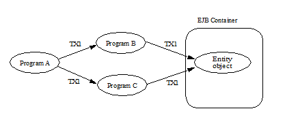
An example (not realistic in practice) is a client program that tries to perform two purchases at two different stores within the same transaction. At each store, the program that is processing the client’s purchase request debits the client’s bank account.
It is difficult to implement an EJB server that handles the case in which programs B and C access an entity object through different network paths. This case is challenging because many EJB servers implement the EJB container as a collection of multiple processes, running on the same or multiple machines. Each client is typically connected to a single process. If clients B and C connect to different EJB container processes, and both B and C need to access the same entity object in the same transaction, the issue is how the container can make it possible for B and C to see a consistent state of the entity object within the same transaction62.
The above example illustrates a simple diamond. We use the term diamond to refer to any distributed transaction scenario in which an entity object is accessed in the same transaction through multiple network paths.
Note that in the diamond scenario the clients B and C access the entity object serially. Concurrent access to an entity object in the same transaction context would be considered an application programming error, and it would be handled in a container-specific way.
Note that the issue of handling diamonds is not unique to the EJB architecture. This issue exists in all distributed transaction processing systems.
The following subsections define the responsibilities of the EJB Roles when handling distributed transaction topologies that may lead to a diamond involving an entity object.
8.7.2. Container Provider’s Responsibilities
This subsection specifies the EJB container’s responsibilities with respect to the diamond case involving an entity objectSee Component contract and client view of entity beans are described in the EJB Optional Features document [40.].
The EJB specification requires that the container provide support for local diamonds. In a local diamond, components A, B, C, and D are deployed in the same EJB container.
The EJB specification does not require an EJB container to support distributed diamonds. In a distributed diamond, a target entity object is accessed from multiple clients in the same transaction through multiple network paths, and the clients (programs B and C) are not enterprise beans deployed in the same EJB container as the target entity object.
If the Container Provider chooses not to support distributed diamonds, and if the container can detect that a client invocation would lead to a diamond, the container should throw the javax.ejb.EJBException (or java.rmi.RemoteException if the EJB 2.1 remote client view is used).
8.7.3. Bean Provider’s Responsibilities
This subsection specifies the Bean Provider’s responsibilities with respect to the diamond case involving an entity objectSee Component contract and client view of entity beans are described in the EJB Optional Features document [40.].
The diamond case is transparent to the Bean Provider—the Bean Provider does not have to code the enterprise bean differently for the bean to participate in a diamond. Any solution to the diamond problem implemented by the container is transparent to the bean and does not change the semantics of the bean.
8.7.4. Application Assembler and Deployer’s Responsibilities
This subsection specifies the Application Assembler and Deployer’s responsibilities with respect to the diamond case involving an entity objectSee Component contract and client view of entity beans are described in the EJB Optional Features document [40.].
The Application Assembler and Deployer should be aware that distributed diamonds might occur. In general, the Application Assembler should try to avoid creating unnecessary distributed diamonds.
If a distributed diamond is necessary, the Deployer should advise the container (using a container-specific API) that an entity objects of the entity bean may be involved in distributed diamond scenarios.
8.7.5. Transaction Diamonds involving Session Objects
While it is illegal for two clients to access the same session object, it is possible for applications that use session beans to encounter the diamond case. For example, program A starts a transaction and then invokes two different session objects.
===
Transaction Diamond Scenario with a Session Bean
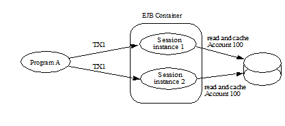
If the session bean instances cache the same data item (e.g. the current balance of Account 100) across method invocations in the same transaction, most likely the program is going to produce incorrect results.
The problem may exist regardless of whether the two session objects are the same or different session beans. The problem may exist (and may be harder to discover) if there are intermediate objects between the transaction initiator and the session objects that cache the data.
There are no requirements for the Container Provider because it is impossible for the container to detect this problem.
The Bean Provider and Application Assembler must avoid creating applications that would result in inconsistent caching of data in the same transaction by multiple session objects.
9. Exception Handling
9.1. Overview and Concepts
9.1.1. Application Exceptions
An application exception is an exception defined by the Bean Provider as part of the business logic of an application. Application exceptions are distinguished from system exceptions in this specification.
Enterprise bean business methods use application exceptions to inform the client of abnormal application-level conditions, such as unacceptable values of the input arguments to a business method. A client can typically recover from an application exception. Application exceptions are not intended for reporting system-level problems.
For example, the Account enterprise bean may throw an application exception to report that a debit operation cannot be performed because of an insufficient balance. The Account bean should not use an application exception to report, for example, the failure to obtain a database connection.
An application exception may be defined in the throws clause of a method of an enterprise bean’s business interface, no-interface view, home interface, component interface, or web service endpoint, or of a message listener method.
An application exception class can either be a subclass (direct or indirect) of java.lang.Exception (i.e., a “checked exception”), or a subclass of the java.lang.RuntimeException (an “unchecked exception”). An application exception may not be a subclass of the java.rmi.RemoteException. The java.rmi.RemoteException and its subclasses are reserved for system exceptions.
The javax.ejb.CreateException and javax.ejb.RemoveException and subclasses thereof are considered to be application exceptions. These exceptions are used as standard application exceptions to report errors to the client from the create and remove methods of the EJBHome and/or EJBLocalHome interfaces of components written to the EJB 2.1 client view. These exceptions are covered by the rules on application exceptions that are defined in this chapter.
9.1.2. Goals for Exception Handling
The EJB specification for exception handling is designed to meet these high-level goals:
An application exception thrown by an enterprise bean instance should be reported to the client precisely (i.e., the client gets the same exception)63.
An application exception thrown by an enterprise bean instance should not automatically cause a client’s transaction to be marked for rollback unless the application exception was defined to cause transaction rollback. The client should typically be given a chance to recover from an application exception.
An unexpected exception that may have left the instance’s state variables and/or underlying persistent data in an inconsistent state can be handled safely.
9.2. Bean Provider’s Responsibilities
This section describes the view and responsibilities of the Bean Provider with respect to exception handling.
9.2.1. Application Exceptions
The Bean Provider defines application exceptions. Application exception that is a checked exception is defined as such by being listed in the throws clause of a method on the bean’s business interface, no-interface view, home interface, component interface, or web service endpoint. An application exception that is an unchecked exception is defined as an application exception by annotating it with the ApplicationException metadata annotation, or denoting it in the deployment descriptor with the application-exception element.
Because application exceptions are intended to be handled by the client, and not by the System Administrator, they should be used only for reporting business logic exceptions, not for reporting system level problems.
Certain messaging types may define application exceptions in their message listener interfaces. The resource adapter in use for the particular messaging type determines how the exception is processed. See See Java EE™.
The Bean Provider is responsible for throwing the appropriate application exception from the business method to report a business logic exception to the client.
An application exception does not automatically result in marking the transaction for rollback unless the ApplicationException annotation is applied to the exception class and is specified with the rollback element value true or the application-exception deployment descriptor element for the exception specifies the rollback element as true64 . The rollback subelement of the application-exception deployment descriptor element may be explicitly specified to override the rollback value specified or defaulted by the ApplicationException annotation.
The Bean Provider must do one of the following to ensure data integrity before throwing an application exception from an enterprise bean instance:
Ensure that the instance is in a state such that a client’s attempt to continue and/or commit the transaction does not result in loss of data integrity. For example, the instance throws an application exception indicating that the value of an input parameter was invalid before the instance performed any database updates.
If the application exception is not specified to cause transaction rollback, mark the transaction for rollback using the EJBContext.setRollbackOnly method before throwing the application exception. Marking the transaction for rollback will ensure that the transaction can never commit.
The Bean Provider is also responsible for using the standard EJB application exceptions (javax.ejb.CreateException, javax.ejb.RemoveException, javax.ejb.FinderException, and subclasses thereof) for beans written to the EJB 2.1 and earlier client view as described in Subsections ../Optional/Chapters.html#UNKNOWN and ../Optional/Chapters.html#UNKNOWN.
Bean Providers may define subclasses of the standard EJB application exceptions and throw instances of the subclasses in the enterprise bean methods. A subclass will typically provide more information to the client that catches the exception.
By default, designating an unchecked exception as an application exception also applies to subclasses of that exception. This inheritance behavior can be disabled by setting the inherited element of the ApplicationException annotation to false or by setting the inherited element of the application-exception deployment descriptor element to false.
Example:
@ApplicationException(rollback=true)
public class ExceptionA extends RuntimeException
public class ExceptionB extends ExceptionA
@ApplicationException(inherited=false, rollback=false)
public class ExceptionC extends ExceptionB
public class ExceptionD extends ExceptionC
_ExceptionA_ is an application exception that causes the transaction to be marked for rollback.
_ExceptionB_ is an application exception that causes the transaction to be marked for rollback.
_ExceptionC_ is an application exception that does _not_ cause the transaction to be marked for rollback.
_ExceptionD_ is not an application exception.
9.2.2. System Exceptions
A system exception is an exception that is a java.rmi.RemoteException (or one of its subclasses) or a RuntimeException that is not an application exception.
This subsection describes how the Bean Provider should handle various system-level exceptions and errors that an enterprise bean instance may encounter during the execution of a session bean business method, a message-driven bean message listener method, an interceptor method, or a callback method (e.g. ejbLoad).
An enterprise bean business method, message listener method, business method interceptor method, or lifecycle callback interceptor method may encounter various exceptions or errors that prevent the method from successfully completing. Typically, this happens because the exception or error is unexpected, or the exception is expected but the EJB Bean Provider does not know how to recover from it. Examples of such exceptions and errors are: failure to obtain a database connection, JNDI exceptions, unexpected RemoteException from invocation of other enterprise beans65, unexpected RuntimeException, JVM errors, and so on.
If the enterprise bean method encounters a system-level exception or error that does not allow the method to successfully complete, the method should throw a suitable non-application exception that is compatible with the method’s throws clause. While the EJB specification does not prescribe the exact usage of the exception, it encourages the Bean Provider to follow these guidelines:
If the bean method encounters a system exception or error, it should simply propagate the error from the bean method to the container (i.e., the bean method does not have to catch the exception).
If the bean method performs an operation that results in a checked exception66 that the bean method cannot recover, the bean method should throw the javax.ejb.EJBException that wraps the original exception.
Any other unexpected error conditions should be reported using the javax.ejb.EJBException.
Note that the javax.ejb.EJBException is a subclass of the java.lang.RuntimeException, and therefore it does not have to be listed in the throws clauses of the business methods.
The container catches a non-application exception; logs it (which can result in alerting the System Administrator); and, unless the bean is a message-driven bean, throws the javax.ejb.EJBException67 or, if the web service client view is used, the java.rmi.RemoteException . If the EJB 2.1 client view is used, the container throws the java.rmi.RemoteException (or subclass thereof) to the client if the client is a remote client, or throws the javax.ejb.EJBException (or subclass thereof) to the client if the client is a local client. In the case of a message-driven bean, the container logs the exception and then throws a javax.ejb.EJBException that wraps the original exception to the resource adapter. (See See Java EE™).
The exception that is seen by the client is described in section See Container Provider Responsibilities. It is determined both by the exception that is thrown by the container and/or bean and the client view.
The Bean Provider can rely on the container to perform the following tasks when catching a non-application exception:
The transaction in which the bean method participated will be rolled back.
Unless the bean is a singleton session bean, no other method will be invoked on an instance that threw a non-application exception.
This means that unless the bean is a singleton session bean, the Bean Provider does not have to perform any cleanup actions before throwing a non-application exception. It is the container that is responsible for the cleanup.
9.3. Container Provider Responsibilities
This section describes the responsibilities of the Container Provider for handling exceptions. The EJB architecture specifies the container’s behavior for the following exceptions:
Exceptions from the business methods of session beans, including session bean business method interceptor methods.
Exceptions from message-driven bean message listener methods and business method interceptor methods.
Exceptions from timeout callback methods.
Exceptions from other container-invoked callbacks on the enterprise bean.
Exceptions from management of container-managed transaction demarcation.
9.3.1. Exceptions from a Session Bean’s Business Interface Methods and No-Interface View Methods
Table See Handling of Exceptions Thrown by a Business Interface Method or No-interface View Method of a Bean with Container-Managed Transaction Demarcation specifies how the container must handle the exceptions thrown by the methods of the business interface and no-interface view for beans with container-managed transaction demarcation, including the exceptions thrown by business method interceptor methods. The table specifies the container’s action as a function of the condition under which the business method executes and the exception thrown by the method. The table also illustrates the exception that the client will receive and how the client can recover from the exception. (Section See Client’s View of Exceptions describes the client’s view of exceptions in detail.) The notation “AppException” denotes an application exception.
===
Handling of Exceptions Thrown by a Business Interface Method or No-interface View Method of a Bean with Container-Managed Transaction Demarcation
Method condition
Method exception
Container’s action
Client’s view
Bean method runs in the context of the caller’s transaction 68.
This case may happen with Required, Mandatory, and Supports attributes.
AppException
Re-throw AppException.
Mark the transaction for rollback if the application exception is specified as causing rollback.
Receives AppException.
Can attempt to continue computation in the transaction, and eventually commit the transaction unless the application exception is specified as causing rollback (the commit would also fail if the instance called setRollbackOnly).
all other exceptions and errors
Log the exception or error 69.
Mark the transaction for rollback.
Discard instance 70.
Throw javax.ejb.EJBTransactionRolledbackException to client. 71
Receives javax.ejb.EJBTransactionRolledbackException
Continuing transaction is fruitless.
Bean method runs in the context of a transaction that the container started immediately before dispatching the business method.
This case may happen with Required and RequiresNew attributes.
AppException
If the instance called setRollbackOnly() , then rollback the transaction, and re-throw AppException.
If the application exception is specified as causing rollback, then rollback the transaction and then re-throw AppException.
Otherwise, attempt to commit the transaction, and then re-throw AppException.
Receives AppException.
If the client executes in a transaction, the client’s transaction is not marked for rollback, and client can continue its work.
all other exceptions
Log the exception or error.
Rollback the container-started transaction.
Discard instance.
Throw EJBException to client.72
Receives EJBException.
If the client executes in a transaction, the client’s transaction may or may not be marked for rollback.
Bean method runs with an unspecified transaction context.
This case may happen with the NotSupported, Never, and Supports attributes.
AppException
Re-throw AppException.
Receives AppException.
If the client executes in a transaction, the client’s transaction is not marked for rollback, and client can continue its work.
all other exceptions
Log the exception or error.
Discard instance.
Throw EJBException to client.73
Receives EJBException.
If the client executes in a transaction, the client’s transaction may or may not be marked for rollback.
Table See Handling of Exceptions Thrown by a Business Interface Method or No-Interface View Method of a Session Bean with Bean-Managed Transaction Demarcation specifies how the container must handle the exceptions thrown by the methods of the business interface or no-interface view for beans with bean-managed transaction demarcation, including the exceptions thrown by business method interceptor methods. The table specifies the container’s action as a function of the condition under which the business interface method executes and the exception thrown by the method. The table also illustrates the exception that the client will receive and how the client can recover from the exception. (Section See Client’s View of Exceptions describes the client’s view of exceptions in detail.)
===
Handling of Exceptions Thrown by a Business Interface Method or No-Interface View Method of a Session Bean with Bean-Managed Transaction Demarcation
Bean method condition
Bean method exception
Container action
Client receives
Bean is a stateful, stateless, or singleton session bean.
AppException
Re-throw AppException
Receives AppException.
all other exceptions
Log the exception or error.
Rollback a transaction that has been started, but not yet completed, by the instance.
Discard instance.74
Throw EJBException to client. 75
Receives EJBException.
9.3.2. Exceptions from Method Invoked via Session Bean’s 2.1 Client View or through Web Service Client View
Business methods in this context are considered to be the methods defined in the enterprise bean’s home interface, component interface, or web service endpoint (including superinterfaces of these); and the following session bean methods: ejbCreate<METHOD>, ejbRemove, and ejbHome<METHOD> methods.
Table See Handling of Exceptions Thrown by Methods of Web Service Client View or EJB 2.1 Client View of a Bean with Container-Managed Transaction Demarcation specifies how the container must handle the exceptions thrown by the business methods for beans with container-managed transaction demarcation, including the exceptions thrown by business method interceptor methods. The table specifies the container’s action as a function of the condition under which the business method executes and the exception thrown by the business method. The table also illustrates the exception that the client will receive and how the client can recover from the exception. (Section See Client’s View of Exceptions describes the client’s view of exceptions in detail.) The notation “AppException” denotes an application exception.
===
Handling of Exceptions Thrown by Methods of Web Service Client View or EJB 2.1 Client View of a Bean with Container-Managed Transaction Demarcation
Method condition
Method exception
Container’s action
Client’s view
Bean method runs in the context of the caller’s transaction 76.
This case may happen with Required, Mandatory, and Supports attributes.
AppException
Re-throw AppException
Mark the transaction for rollback if the application exception is specified as causing rollback.
Receives AppException.
Can attempt to continue computation in the transaction, and eventually commit the transaction unless the application exception is specified as causing rollback (the commit would also fail if the instance called setRollbackOnly).
all other exceptions and errors
Log the exception or error 77.
Mark the transaction for rollback.
Discard instance 78.
Throw javax.transaction.TransactionRolledbackException to remote client; throw javax.ejb.TransactionRolledbackLocalException to local client.
Receives javax.transaction.TransactionRolledbackException or javax.ejb.TransactionRolledbackLocalException
Continuing transaction is fruitless.
Bean method runs in the context of a transaction that the container started immediately before dispatching the business method.
This case may happen with Required and RequiresNew attributes.
AppException
If the instance called setRollbackOnly() , then rollback the transaction, and re-throw AppException.
If the application exception is specified as causing rollback, then rollback the transaction and then re-throw AppException.
Otherwise, attempt to commit the transaction, and then re-throw AppException.
Receives AppException.
If the client executes in a transaction, the client’s transaction is not marked for rollback, and client can continue its work.
all other exceptions
Log the exception or error.
Rollback the container-started transaction.
Discard instance.
Throw RemoteException to remote or web service client 79; throw EJBException to local client.
Receives RemoteException or EJBException.
If the client executes in a transaction, the client’s transaction may or may not be marked for rollback.
Bean method runs with an unspecified transaction context.
This case may happen with the NotSupported, Never, and Supports attributes.
AppException
Re-throw AppException.
Receives AppException.
If the client executes in a transaction, the client’s transaction is not marked for rollback, and client can continue its work.
all other exceptions
Log the exception or error.
Discard instance.
Throw RemoteException to remote or web service client; throw EJBException to local client.
Receives RemoteException or EJBException.
If the client executes in a transaction, the client’s transaction may or may not be marked for rollback.
Table See Handling of Exceptions Thrown by a EJB 2.1 Client View Business Method of a Session Bean with Bean-Managed Transaction Demarcation specifies how the container must handle the exceptions thrown by the business methods for beans with bean-managed transaction demarcation, including the exceptions thrown by business method interceptor methods. The table specifies the container’s action as a function of the condition under which the business method executes and the exception thrown by the business method. The table also illustrates the exception that the client will receive and how the client can recover from the exception. (Section See Client’s View of Exceptions describes the client’s view of exceptions in detail.)
===
Handling of Exceptions Thrown by a EJB 2.1 Client View Business Method of a Session Bean with Bean-Managed Transaction Demarcation
Bean method condition
Bean method exception
Container action
Client receives
Bean is a stateful, stateless, or singleton session bean.
AppException
Re-throw AppException
Receives AppException.
all other exceptions
Log the exception or error.
Rollback a transaction that has been started, but not yet completed, by the instance.
Discard instance.80
Throw RemoteException to remote or web service client 81; throw EJBException to local client.
Receives RemoteException or EJBException.
9.3.3. Exceptions from AroundConstruct, PostConstruct and PreDestroy Lifecycle Callbacks
See Handling of Exceptions Thrown by a PostConstruct or PreDestroy Method of a Stateful, Stateless, Singleton Session Bean or a Message-Driven Bean. specifies how the container must handle the exceptions that escape interceptor chain for the AroundConstruct, PostConstruct and PreDestroy methods for session and message-driven beans.
===
Handling of Exceptions Thrown by a PostConstruct or PreDestroy Method of a Stateful, Stateless, Singleton Session Bean or a Message-Driven Bean.
Bean method condition
Bean method exception
Container action
Bean is a stateful, stateless or singleton session bean, or a message-driven bean
system exceptions
Log the exception or error.
If the bean is a singleton or stateful session bean, rollback any container-started transaction.
Discard instance.
9.3.4. Exceptions from Message-Driven Bean Message Listener Methods
This section specifies the container’s handling of exceptions thrown from a message-driven bean’s message listener method.
See Handling of Exceptions Thrown by a Message Listener Method of a Message-Driven Bean with Container-Managed Transaction Demarcation. specifies how the container must handle the exceptions thrown by a message listener method of a message-driven bean with container-managed transaction demarcation, including the exceptions thrown by business method interceptor methods which intercept the invocation of message listener methods. The table specifies the container’s action as a function of the condition under which the method executes and the exception thrown by the method.
===
Handling of Exceptions Thrown by a Message Listener Method of a Message-Driven Bean with Container-Managed Transaction Demarcation.
Method condition
Method exception
Container’s action
Bean method runs in the context of a transaction that the container started immediately before dispatching the method.
This case happens with Required attribute.
AppException
Mark the transaction for rollback if the application exception is specified as causing rollback.
If the instance called setRollbackOnly , rollback the transaction and re-throw AppException to resource adapter.
Otherwise, attempt to commit the transaction unless the application exception is specified as causing rollback and re-throw AppException to resource adapter.
system exceptions
Log the exception or error82.
Rollback the container-started transaction.
Discard instance83.
Throw EJBException that wraps the original exception to resource adapter.
Bean method runs with an unspecified transaction context.
This case happens with the NotSupported attribute.
AppException
Re-throw AppException to resource adapter.
system exceptions
Log the exception or error.
Discard instance.
Throw EJBException that wraps the original exception to resource adapter
Table See Handling of Exceptions Thrown by a Message Listener Method of a Message-Driven Bean with Bean-Managed Transaction Demarcation. specifies how the container must handle the exceptions thrown by a message listener method of a message-driven bean with bean-managed transaction demarcation. The table specifies the container’s action as a function of the condition under which the method executes and the exception thrown by the method.
===
Handling of Exceptions Thrown by a Message Listener Method of a Message-Driven Bean with Bean-Managed Transaction Demarcation.
Bean method condition
Bean method exception
Container action
Bean is a message-driven bean
AppException
Re-throw AppException to resource adapter.
system exceptions
Log the exception or error.
Rollback a transaction that has been started, but not yet completed, by the instance.
Discard instance.
Throw EJBException that wraps the original exception to resource adapter.
9.3.5. Exceptions from an Enterprise Bean’s Timeout Callback Method
This section specifies the container’s handling of exceptions thrown from an enterprise bean’s timeout callback method.
See Handling of Exceptions Thrown by a Timeout Callback Method of an Enterprise Bean with Container-Managed Transaction Demarcation. and See Handling of Exceptions Thrown by a Timeout Callback Method of an Enterprise Bean with Bean-Managed Transaction Demarcation. specify how the container must handle the exceptions thrown by the timeout callback method of an enterprise bean. The timeout callback method does not throw application exceptions and cannot throw exceptions to the client.
===
Handling of Exceptions Thrown by a Timeout Callback Method of an Enterprise Bean with Container-Managed Transaction Demarcation.
Method condition
Method exception
Container’s action
Bean timeout callback method runs in the context of a transaction that the container started immediately before dispatching the method.
system exceptions
Log the exception or error84.
Rollback the container-started transaction.
Discard instance85.
===
Handling of Exceptions Thrown by a Timeout Callback Method of an Enterprise Bean with Bean-Managed Transaction Demarcation.
Method condition
Method exception
Container’s action
The bean timeout callback method may make use of UserTransaction.
system exceptions
Log the exception or error86.
Rollback a transaction that has been started, but not yet completed, by the instance.
Discard instance87.
9.3.6. Exceptions from Other Container-invoked Callbacks
This subsection specifies the container’s handling of exceptions thrown from the other container-invoked callbacks on the enterprise bean. This subsection applies to the following callback methods:
Dependency injection methods.
The PostActivate and PrePassivate callback methods, and/or ejbActivate, ejbPassivate, and setSessionContext methods of the SessionBean interface.
The setMessageDrivenContext method of the MessageDrivenBean interface.
The afterBegin, beforeCompletion and afterCompletion session synchroniziation methods.
The container must handle all exceptions or errors from these methods as follows:
Log the exception or error to bring the problem to the attention of the System Administrator.
If the instance is in a transaction, mark the transaction for rollback.
Discard the instance (i.e., the container must not invoke any business methods or container callbacks on the instance).
If the exception or error happened during the processing of a client invoked method, throw the javax.ejb.EJBException88 . If the EJB 2.1 client view or web service client view is used, throw the java.rmi.RemoteException to the client if the client is a remote client or throw the javax.ejb.EJBException to the client if the client is a local client. If the instance executed in the client’s transaction, the container should throw the javax.ejb.EJBTransactionRolledbackException89 . If the EJB 2.1 client view or web service client view is used, the container should throw the javax.transaction.TransactionRolledbackException to a remote client or the javax.ejb.TransactionRolledbackLocalException to a local client, because it provides more information to the client. (The client knows that it is fruitless to continue the transaction.)
9.3.7. Non-existing Stateful Session Object
If a client makes a call to a stateful session object that has been removed, the container should throw the javax.ejb.NoSuchEJBException90 . If the EJB 2.1 client view is used, the container should throw the java.rmi.NoSuchObjectException (which is a subclass of java.rmi.RemoteException) to a remote client, or the javax.ejb.NoSuchObjectLocalException to a local client.
9.3.8. Exceptions from the Management of Container-Managed Transactions
The container is responsible for starting and committing the container-managed transactions, as described in Subsection See Container-Managed Transaction Demarcation for Business Methods. This subsection specifies how the container must deal with the exceptions that may be thrown by the transaction start and commit operations.
If the container fails to start or commit a container-managed transaction, the container must throw the javax.ejb.EJBException91 . If the web service client view or EJB 2.1 client view is used, the container must throw the java.rmi.RemoteException to a remote or web service client and the javax.ejb.EJBException to a local client. In the case where the container fails to start or commit a container-managed transaction on behalf of a message-driven bean or a timeout callback method, the container must throw and log the javax.ejb.EJBException .
However, the container should not throw the javax.ejb.EJBException or java.rmi.RemoteException if the container performs a transaction rollback because the transaction has been marked for rollback and no EJBException or RemoteException would otherwise be thrown according to sections See Exceptions from a Session Bean’s Business Interface Methods and No-Interface View Methods through See Non-existing Stateful Session Object. In this case, the container must rollback the transaction and pass the business method result or the application exception thrown by the business method to the client.
Note that some implementations of the container may retry a failed transaction transparently to the client and enterprise bean code. Such a container would throw the javax.ejb.EJBException or __ java.rmi.RemoteException or after a number of unsuccessful tries.
9.3.9. Release of Resources
When the container discards an instance because of a system exception, the container should release all the resources held by the instance that were acquired through the resource factories declared in the enterprise bean environment (See Subsection See Resource Manager Connection Factory References).
Note: While the container should release the connections to the resource managers that the instance acquired through the resource factories declared in the enterprise bean environment, the container cannot, in general, release “unmanaged” resources that the instance may have acquired through the JDK APIs. For example, if the instance has opened a TCP/IP connection, most container implementations will not be able to release the connection. The connection will be eventually released by the JVM garbage collector mechanism.
9.3.10. Support for Deprecated Use of java.rmi.RemoteException
The EJB 1.0 specification allowed the business methods, ejbCreate, ejbPostCreate, ejbFind<METHOD>, ejbRemove, and the container-invoked callbacks (i.e., the methods defined in the SessionBean and SessionSynchronization interfaces) implemented in the enterprise bean class to use the java.rmi.RemoteException to report non-application exceptions to the container.
This use of the java.rmi.RemoteException was deprecated in EJB 1.1—enterprise beans written for the EJB 1.1 specification should use the javax.ejb.EJBException instead, and enterprise beans written for the EJB 2.0 or later specification must use the javax.ejb.EJBException instead.
The EJB 1.1 and EJB 2.0 or later specifications require that a container support the deprecated use of the java.rmi.RemoteException. The container should treat the java.rmi.RemoteException thrown by an enterprise bean method in the same way as it is specified for the javax.ejb.EJBException.
9.4. Client’s View of Exceptions
This section describes the client’s view of exceptions received from an enterprise bean invocation.
A client accesses an enterprise bean either through the enterprise bean’s business interface (whether local or remote), through the enterprise bean’s no-interface view, through the enterprise bean’s remote home and remote component interfaces, through the enterprise bean’s local home and local component interfaces, or through the enterprise bean’s web service client view depending on whether the client is written to the EJB 3.x API or earlier API and whether the client is a remote client, a local client, or a web service client.
The methods of the business interface typically do not throw the java.rmi.RemoteException , regardless of whether the interface is a remote or local interface.
The remote home interface and the remote component interface are Java RMI interfaces, and therefore the throws clauses of all their methods (including those inherited from superinterfaces) include the mandatory java.rmi.RemoteException.The throws clauses may include an arbitrary number of application exceptions.
The local home and local component interfaces are both Java local interfaces, and the throws clauses of all their methods (including those inherited from superinterfaces) must not include the java.rmi.RemoteException.The throws clauses may include an arbitrary number of application exceptions.
The no-interface view is a local view, and the throws clauses of all its methods must not include the java.rmi.RemoteException. The throws clauses may include an arbitrary number of application exceptions.
9.4.1. Application Exception
9.4.1.1. Local and Remote Clients
If a client program receives an application exception from an enterprise bean invocation, the client can continue calling the enterprise bean. An application exception does not result in the removal of the EJB object.
Although the container does not automatically mark for rollback a transaction because of a thrown application exception, the transaction might have been marked for rollback by the enterprise bean instance before it threw the application exception or the application exception may have been specified to require the container to rollback the transaction. There are two ways to learn if a particular application exception results in transaction rollback or not:
Statically. Programmers can check the documentation of the enterprise bean’s client view interface. The Bean Provider may have specified (although he or she is not required to) the application exceptions for which the enterprise bean marks the transaction for rollback before throwing the exception.92
Dynamically. Clients that are enterprise beans with container-managed transaction demarcation can use the getRollbackOnly method of the javax.ejb.EJBContext object to learn if the current transaction has been marked for rollback; other clients may use the getStatus method of the javax.transaction.UserTransaction interface to obtain the transaction status.
9.4.1.2. Web Service Clients
If a stateless session bean throws an application exception from one of its web service methods, it is the responsibility of the container to map the exception to the SOAP fault specified in the WSDL that describes the port type that the stateless session bean implements. For Java clients, the exceptions received by the client are described by the mapping rules in See Java™ API for XML-based RPC.
9.4.2. java.rmi.RemoteException and javax.ejb.EJBException
As described above, a client receives the javax.ejb.EJBException or the java.rmi.RemoteException as an indication of a failure to invoke an enterprise bean method or to properly complete its invocation. The exception can be thrown by the container or by the communication subsystem between the client and the container.
If the client receives the javax.ejb.EJBException or the java.rmi.RemoteException exception from a method invocation, the client, in general, does not know if the enterprise bean’s method has been completed or not.
If the client executes in the context of a transaction, the client’s transaction may, or may not, have been marked for rollback by the communication subsystem or target bean’s container.
For example, the transaction would be marked for rollback if the underlying transaction service or the target bean’s container doubted the integrity of the data because the business method may have been partially completed. Partial completion could happen, for example, when the target bean’s method returned with a RuntimeException exception, or if the remote server crashed in the middle of executing the business method.
The transaction may not necessarily be marked for rollback. This might occur, for example, when the communication subsystem on the client-side has not been able to send the request to the server.
When a client executing in a transaction context receives an EJBException or a RemoteException from an enterprise bean invocation, the client may use either of the following strategies to deal with the exception:
Discontinue the transaction. If the client is the transaction originator, it may simply rollback its transaction. If the client is not the transaction originator, it can mark the transaction for rollback or perform an action that will cause a rollback. For example, if the client is an enterprise bean, the enterprise bean may throw a RuntimeException which will cause the container to rollback the transaction.
Continue the transaction. The client may perform additional operations on the same or other enterprise beans, and eventually attempt to commit the transaction. If the transaction was marked for rollback at the time the EJBException or RemoteException was thrown to the client, the commit will fail.
If the client chooses to continue the transaction, the client can first inquire about the transaction status to avoid fruitless computation on a transaction that has been marked for rollback. A client that is an enterprise bean with container-managed transaction demarcation can use the EJBContext.getRollbackOnly method to test if the transaction has been marked for rollback; a client that is an enterprise bean with bean-managed transaction demarcation, and other client types, can use the UserTransaction.getStatus method to obtain the status of the transaction.
Some implementations of EJB servers and containers may provide more detailed exception reporting by throwing an appropriate subclass of the javax.ejb.EJBException or java.rmi.RemoteException to the client. The following subsections describe the several subclasses of the javax.ejb.EJBException and java.rmi.RemoteException that may be thrown by the container to give the client more information.
9.4.2.1. javax.ejb.EJBTransactionRolledbackException, javax.ejb.TransactionRolledbackLocalException, and javax.transaction.TransactionRolledbackException
The javax.ejb.EJBTransactionRolledbackException and javax.ejb.TransactionRolledbackLocalException are subclasses of the javax.ejb.EJBException . The javax.transaction.TransactionRolledbackException is a subclass of the java.rmi.RemoteException. It is defined in the JTA standard extension.
If a client receives one of these exceptions, the client knows for certain that the transaction has been marked for rollback. It would be fruitless for the client to continue the transaction because the transaction can never commit.
9.4.2.2. javax.ejb.EJBTransactionRequiredException, javax.ejb.TransactionRequiredLocalException, and javax.transaction.TransactionRequiredException
The javax.ejb.EJBTransactionRequiredException and javax.ejb.TransactionRequiredLocalException are subclasses of the javax.ejb.EJBException . The javax.transaction.TransactionRequiredException is a subclass of the java.rmi.RemoteException. It is defined in the JTA standard extension.
The javax.ejb.EJBTransactionRequiredException , javax.ejb.TransactionRequiredLocalException , or javax.transaction.TransactionRequiredException informs the client that the target enterprise bean must be invoked in a client’s transaction, and that the client invoked the enterprise bean without a transaction context.
This error usually indicates that the application was not properly formed.
9.4.2.3. javax.ejb.NoSuchEJBException, javax.ejb.NoSuchObjectLocalException, and java.rmi.NoSuchObjectException
The javax.ejb.NoSuchEJBException is a subclass of the javax.ejb.EJBException. It is thrown to the client of a session bean’s business interface if a local business method cannot complete because the EJB object no longer exists.
The javax.ejb.NoSuchObjectLocalException and the java.rmi.NoSuchObjectException apply to the business methods of the EJB 2.1 local and remote client views respectively.
The javax.ejb.NoSuchObjectLocalException is a subclass of the javax.ejb.EJBException. It is thrown to the client if a local business method cannot complete because the EJB object no longer exists.
The java.rmi.NoSuchObjectException is a subclass of the java.rmi.RemoteException. It is thrown to the client if a remote business method cannot complete because the EJB object no longer exists.
10. Support for Distributed Interoperability
This chapter describes the interoperability support for accessing an enterprise bean through the EJB 2.1 remote client view from clients distributed over a network, and the distributed interoperability requirements for invocations on enterprise beans from remote clients that are Java Platform, Enterprise Edition (Java EE) components. Distributed Interoperability is not defined for the EJB 3.x remote client view.
10.1. Support for Distribution
The remote home and remote component interfaces of an enterprise bean’s remote client view are defined as Java™ RMI [See Java] interfaces. This allows the container to implement the remote home and remote component interfaces as distributed objects. A client using the remote home and remote component interfaces can reside on a different machine than the enterprise bean (location transparency), and the object references of the remote home and remote component interfaces can be passed over the network to other applications.
The EJB specification further constrains the Java RMI types that can be used by enterprise beans to be legal RMI-IIOP types [See IDL To Java™ Language Mapping]. This makes it possible for EJB container implementors to use RMI-IIOP as the object distribution protocol.
10.1.1. Client-Side Objects in a Distributed Environment
When the RMI-IIOP protocol or similar distribution protocols are used, the remote client communicates with the enterprise bean using stubs for the server-side objects. The stubs implement the remote home and remote component interfaces.
===
Location of EJB Client Stubs.
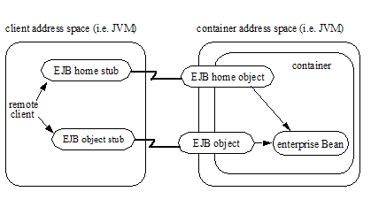
The communication stubs used on the client side are artifacts generated at the enterprise bean’s deployment time by the Container Provider’s tools. The stubs used on the client are specific to the wire protocol used for the remote invocation.
10.2. Interoperability Overview
Session beans and entity93 beans that are deployed in one vendor’s server product may need to be accessed from Java EE client components that are deployed in another vendor’s product through the remote client view. EJB defines a standard interoperability protocol based on CORBA/IIOP to address this need.
The interoperability protocols described here must be supported by compatible EJB products. Additional vendor-specific protocols may also be supported.
See Heterogeneous EJB Environment shows a heterogeneous environment that includes systems from several vendors to illustrate the interoperability enabled by EJB.
===
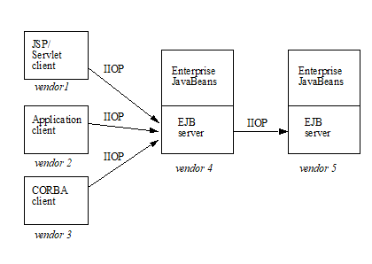
The following sections in this chapter
describe the goals for EJB invocation interoperability
provide illustrative scenarios
describe the interoperability requirements for remote invocations, transactions, naming, and security.
10.2.1. Interoperability Goals
_The goals of the_ interoperability _requirements specified in this chapter are as follows:_
To allow clients in one application deployed in Java EE containers from one Server Provider to access services from session and entitySee Component contract and client view of entity beans are described in the EJB Optional Features document [40.] beans in another application that is deployed in an EJB container from a different Server Provider. For example, web components (JavaServer Pages and servlets) that are deployed on a Java EE compliant web server provided by one Server Provider must be able to invoke the business methods of enterprise beans that are deployed on a Java EE compliant EJB server from another Server Provider.
To achieve interoperability without any new requirements on the Java EE application developer.
To ensure out-of-the-box interoperability between compliant Java EE products. It must be possible for an enterprise customer to install multiple Java EE server products from different Server Providers (on potentially different operating systems), deploy applications in the Java EE servers, and have the multiple applications interoperate.
To leverage the interoperability work done by standards bodies (including the IETF, W3C, and OMG) where possible, so that customers can work with industry standards and use standard protocols to access enterprise beans.
This specification does not address interoperability issues between enterprise beans and non-Java-EE components. The Java EE platform specification See Java™ Platform and JAX-WS specification See Java™ API for describe requirements for interoperability with Internet clients (using HTTP and XML) and interoperability with enterprise information systems (using the Connector architecture See Java EE™).
Since the interoperability protocol described here is based on CORBA/IIOP, CORBA clients written in Java, C++, or other languages can also invoke methods on enterprise beans.
This chapter subsumes the previous EJB1.1-to-CORBA mapping document See Enterprise JavaBeans™ to CORBA Mapping v1.1.http://www.oracle.com/technetwork/java/javaee/ejb/index.html..
10.3. Interoperability Scenarios
This section presents a number of interoperability scenarios that motivate the interoperability mechanisms described in later sections of this chapter. These scenarios are illustrative rather than prescriptive. This section does not specify requirements for a Java EE product to support these scenarios in exactly the manner described here.
Java EE applications are multi-tier, web-enabled applications. Each application consists of one or more components, which are deployed in containers. The four types of containers are:
EJB containers, which host enterprise beans.
Web containers, which host JavaServer Pages (JSPs) and servlet components as well as static documents, including HTML pages.
Application client containers, which host standalone applications.
Applet containers, which host applets which may be downloaded from a web site. At this time, there is no requirement for an applet to be able to directly invoke the remote methods of enterprise beans.
The scenarios below describe interactions between components hosted in these various container types.
10.3.1. Interactions Between Web Containers and EJB Containers for E-Commerce Applications
This scenario occurs for business-to-business and business-to-consumer interactions over the Internet.
_Scenario 1: A customer wants to buy a book from an Internet bookstore. The bookstore’s web site consists of a Java EE application containing JSPs that form the presentation layer, and another Java EE application containing enterprise beans that have the business logic and database access code. The JSPs and enterprise beans are deployed in containers from different vendors._
_At deployment time: The enterprise beans are deployed, and their EJBHome objects are published in the EJB server’s name service. The Deployer links the EJB reference in the JSP’s deployment descriptor to the URL of the enterprise bean’s EJBHome object, which can be looked up from the name service. The transaction attribute specified in the enterprise bean’s deployment descriptor is RequiresNew for all business methods. Because the “checkout” JSP requires secure access to set up payments for purchases, the bookstore’s administrator configures the “checkout” JSP to require access over HTTPS with only server authentication. Customer authentication is done using form-based login. The “book search” JSP is accessed over normal HTTP. Both JSPs talk with enterprise beans that access the book database. The web and EJB containers use the same customer realm and have a trust relationship with each other. The network between the web and EJB servers is not guaranteed to be secure from attacks._
_At runtime: The customer accesses the book search JSP using a browser. The JSP looks up the enterprise bean’s EJBHome object in a name service, and calls findBooks(...) with the search criteria as parameters. The web container establishes a secure session with the EJB container with mutual authentication between the containers, and invokes the enterprise bean. The customer then decides to buy a book, and accesses the “checkout” JSP. The customer enters the necessary information in the login form, which is used by the web server to authenticate the customer. The JSP invokes the enterprise bean to update the book and customer databases. The customer’s principal is propagated to the EJB container and used for authorization checks. The enterprise bean completes the updates and commits the transaction. The JSP sends back a confirmation page to the customer._
10.3.2. Interactions Between Application Client Containers and EJB Containers Within an Enterprise’s Intranet
_Scenario 2.1: An enterprise has an expense accounting application used by employees from their desktops. The server-side consists of a Java EE application containing enterprise beans that are deployed on one vendor's Java EE product, which is hosted in a datacenter. The client side consists of another Java EE application containing an application client deployed using another vendor's Java EE infrastructure. The network between the application client and the EJB container is insecure and needs to be protected against spoofing and other attacks._
_At deployment time: The enterprise beans are deployed and their EJBHome objects are published in the enterprise’s name service. The application clients are configured with the names of the EJBHome objects. The Deployer maps employees to roles that are allowed access to the enterprise beans. The System Administrator configures the security settings of the application client and EJB container to use client and server authentication and message protection. The System Administrator also does the necessary client-side configuration to allow client authentication._
_At runtime: The employee logs on using username and password. The application client container may interact with the enterprise’s authentication service infrastructure to set up the employee’s credentials. The client application does a remote invocation to the name server to look up the enterprise bean’s EJBHome object, and creates the enterprise beans. The application client container uses a secure transport protocol to interact with the name server and EJB server, which does mutual authentication and also guarantees the confidentiality and integrity of messages. The employee then enters the expense information and submits it. This causes remote business methods of the enterprise beans to be invoked. The EJB container performs authorization checks and, if they succeed, executes the business methods._
_Scenario 2.2: This is the same as Scenario 2.1, except that there is no client-side authentication infrastructure set up by the System Administrator which can authenticate at the transport protocol layer. At runtime the client container needs to send the user’s password to the server during the method invocation to authenticate the employee._
10.3.3. Interactions Between Two EJB Containers in an Enterprise’s Intranet
_Scenario 3: An enterprise has an expense accounting application which needs to communicate with a payroll application. The applications use enterprise beans and are deployed on Java EE servers from different vendors. The Java EE servers and naming/authentication services may be in the enterprise's datacenter with a physically secure private network between them, or they may need to communicate across the intranet, which may be less secure. The applications need to update accounts and payroll databases. The employee (client) accesses the expense accounting application as described in Scenario 2._
_At deployment time: The Deployer configures both applications with the appropriate database resources. The accounts application is configured with the name of the EJBHome object of the payroll application. The payroll bean’s deployment descriptor specifies the RequiresNew transaction attribute for all methods. The applications use the same principal-to-role mappings (e.g. the roles may be Employee, PayrollDept, AccountsDept). The Deployer of these two applications has administratively set up a trust relationship between the two EJB containers, so that the containers do not need to authenticate principals propagated on calls to enterprise beans from the other container. The System Administrator also sets up the message protection parameters of the two containers if the network is not physically secure._
_At runtime: An employee makes a request to the accounts application which requires it to access the payroll application. The accounts application does a lookup of the payroll application’s EJBHome object in the naming/directory service and creates enterprise beans. It updates the accounts database and invokes a remote method of the payroll bean. The accounts bean’s container propagates the employee’s principal on the method call. The payroll bean’s container maps the propagated employee principal to a role, does authorization checks, and sets up the payroll bean’s transaction context. The container starts a new transaction, then the payroll bean updates the payroll database, and the container commits the transaction. The accounts bean receives a status reply from the payroll bean. If an error occurs in the payroll bean, the accounts bean executes code to recover from the error and restore the databases to a consistent state._
10.3.4. Intranet Application Interactions Between Web Containers and EJB Containers
_Scenario 4: This is the same as scenario 2.1, except that instead of using a “fat-client” desktop application to access the enterprise’s expense accounting application, employees use a web browser and connect to a web server in the intranet that hosts JSPs. The JSPs gather input from the user (e.g., through an HTML form), invoke enterprise beans that contain the actual business logic, and format the results returned by the enterprise beans (using HTML)._
_At deployment time: The enterprise Deployer configures its expense accounting JSPs to require access over HTTPS with mutual authentication. The web and EJB containers use the same customer realm and have a trust relationship with each other._
_At run-time: The employee logs in to the client desktop, starts the browser, and accesses the expense accounting JSP. The browser establishes an HTTPS session with the web server. Client authentication is performed (for example) using the employee’s credentials which have been established by the operating system at login time (the browser interacts with the operating system to obtain the employee’s credentials). The JSP looks up the enterprise bean’s EJBHome object in a name service. The web container establishes a secure session with the EJB container with mutual authentication and integrity/confidentiality protection between the containers, and invokes methods on the enterprise beans._
10.4. Overview of Interoperability Requirements
The interoperability requirements used to support the above scenarios are:
Remote method invocation on an enterprise bean’s EJBObject and EJBHome object references (scenarios 1,2,3,4), described in section link:Ejb.html#a3376[See Remote Invocation Interoperability].
Name service lookup of the enterprise bean’s EJBHome object (scenarios 1,2,3,4), described in section link:Ejb.html#a3504[See Naming Interoperability].
Integrity and confidentiality protection of messages (scenarios 1,2,3,4), described in section See Security Interoperability.
Authentication between an application client and EJB container (described in section See Security Interoperability):
Mutual authentication at the transport protocol layer when there is client-side authentication infrastructure such as certificates (scenario 2.1).
Transfer of the user’s authentication data from application client to EJB container to allow the EJB container to authenticate the client when there is no client-side authentication infrastructure (scenario 2.2).
Mutual authentication between two EJB containers or between a web and EJB container to establish trust before principals are propagated (scenarios 1,3,4), described in section link:Ejb.html#a3517[See Security Interoperability].
Propagation of the Internet or intranet user’s principal name for invocations on enterprise beans from web or EJB containers when the client and server containers have a trust relationship (scenarios 1,3,4), described in section link:Ejb.html#a3517[See Security Interoperability].
EJB, web, and application client containers must support the above requirements separately as well as in combinations.
10.5. Remote Invocation Interoperability
This section describes the interoperability mechanisms that enable remote invocations on EJBObject and EJBHome object references when client containers and EJB containers are provided by different vendors. This is needed to satisfy interoperability requirement (1) in section See Overview of Interoperability Requirements.
All EJB, web, and application client containers must support the IIOP 1.2 protocol for remote invocations on EJBObject and EJBHome references. EJB containers must be capable of servicing IIOP 1.2 based invocations on EJBObject and EJBHome objects. IIOP 1.2 is part of the CORBA 2.3.1 specification See CORBA 2.3.1 Specification. from the OMG94. Containers may additionally support vendor-specific protocols.
CORBA Interoperable Object References (IORs) for EJBObject and EJBHome object references must include the GIOP version number 1.2. The IIOP infrastructure in all Java EE containers must be able to accept fragmented GIOP messages, although sending fragmented messages is optional. Bidirectional GIOP messages may optionally be supported by Java EE clients and servers: if a Java EE server receives an IIOP message from a client which contains the BiDirIIOPServiceContext structure, it may or may not use the same connection for sending requests back to the client.
Since Java applications use Unicode characters by default, Java EE containers are required to support the Unicode UTF16 code set for transmission of character and string data (in the IDL wchar and wstring datatypes). Java EE containers may optionally support additional code sets. EJBObject and EJBHome IORs must have the TAG_CODE_SETS tagged component which declares the codesets supported by the EJB container. IIOP messages which include wchar and wstring datatypes must have the code sets service context field. The CORBA 2.3.1 requirements for code set support must be followed by Java EE containers.
EJB containers are required to translate Java types to their on-the-wire representation in IIOP messages using the Java Language to IDL mapping specification See IDL To Java™ Language Mapping with the wire formats for IDL types as described in the GIOP specification in CORBA 2.3. The following subsections describe the mapping details for Java types.
10.5.1. Mapping Java Remote Interfaces to IDL
The Java Language to IDL Mapping specification See IDL To Java™ Language describes precisely how the remote home and remote component interfaces of a session bean or an entity bean95 are mapped to IDL. This mapping to IDL is typically implicit when Java RMI over IIOP is used to invoke enterprise beans. Java EE clients use only the Java RMI APIs to invoke enterprise beans. The client container may use the CORBA portable Stub APIs for the client-side stubs. EJB containers may create CORBA Tie objects for each EJBObject or EJBHome object.
10.5.2. Mapping Value Objects to IDL
The Java interfaces that are passed by value during remote invocations on enterprise beans are javax.ejb.Handle , javax.ejb.HomeHandle , and javax.ejb.EJBMetaData . There may also be application-specific value types that are passed as parameters or return values on enterprise bean invocations. In addition, several Java exception classes that are thrown by remote methods also result in concrete IDL value types. All these value types are mapped to IDL abstract value types or abstract interfaces using the rules in the Java Language to IDL Mapping.
10.5.3. Mapping of System Exceptions
Java system exceptions, including the java.rmi.RemoteException and its subclasses, may be thrown by the EJB container. If the client’s invocation was made over IIOP, the EJB server is required to map these exceptions to CORBA system exceptions and send them in the IIOP reply message to the client, as specified in the following table
| System exception thrown by EJB container | CORBA system exception received by client ORB |
|---|---|
javax.transaction.TransactionRolledbackException |
TRANSACTION_ROLLEDBACK |
javax.transaction.TransactionRequiredException |
TRANSACTION_REQUIRED |
javax.transaction.InvalidTransactionException |
INVALID_TRANSACTION |
java.rmi.NoSuchObjectException |
OBJECT_NOT_EXIST |
java.rmi.AccessException |
NO_PERMISSION |
java.rmi.MarshalException |
MARSHAL |
java.rmi.RemoteException |
UNKNOWN |
For EJB clients, the ORB’s unmarshaling machinery maps CORBA system exceptions received in the IIOP reply message to the appropriate Java exception as specified in the Java Language to IDL mapping. This results in the original Java exception being received by the client Java EE component.
10.5.4. Obtaining Stub and Client View Classes
When a Java EE component (application client, JSP, servlet or enterprise bean) receives a reference to an EJBObject or EJBHome object through JNDI lookup or as a parameter or return value of an invocation on an enterprise bean, an instance of an RMI-IIOP stub class (proxy) for the enterprise bean’s remote home or remote RMI interface needs to be created. When a component receives a value object as a parameter or return value of an enterprise bean invocation, an instance of the value class needs to be created. The stub class, value class, and other client view classes must be available to the referencing container (the container hosting the component that receives the reference or value type).
The client view classes, including application value classes, must be packaged with the referencing component’s application, as described in See Packaging Requirements.
Stubs for invoking on EJBHome and EJBObject references must be provided by the referencing container, for example, by generating stub classes at deployment time for the EJBHome and EJBObject interfaces of the referenced beans that are packaged with the referencing component’s application. Stub classes may or may not follow the standard RMI-IIOP portable stub architecture.
Containers may optionally support run-time downloading of stub and value classes needed by the referencing container. The CORBA 2.3.1 specification and the Java Language to IDL Mapping specify how stub and value type implementations are to be downloaded: using codebase URLs that are either embedded in the EJBObject or EJBHome’s IOR, or sent in the IIOP message service context, or marshalled with the value type. The URLs for downloading may optionally include an HTTPS URL for secure downloading.
10.5.5. System Value Classes
System value classes are serializable value classes implementing the javax.ejb.Handle, javax.ejb.HomeHandle, javax.ejb.EJBMetaData, java.util.Enumeration, java.util.Collection, and java.util.Iterator interfaces. These value classes are provided by the EJB container vendor. They must be provided in the form of a JAR file by the container hosting the referenced bean. For interoperability scenarios, if a referencing component would use such system value classes at runtime, the Deployer must ensure that these system value classes provided by the container hosting the referenced bean are available to the referencing component. This may be done, for example, by including these system value classes in the classpath of the referencing container, or by deploying the system value classes with the referencing component’s application by providing them to the deployment tool.
Implementations of these system value classes must be portable (they must use only J2SE and Java EE APIs) so that they can be instantiated in another vendor’s container. If the system value class implementation needs to load application-specific classes (such as remote home or remote component interfaces) at runtime, it must use the thread context class loader. The referencing container must make application-specific classes available to the system value class instance at runtime through the thread context class loader.
10.5.5.1. HandleDelegate SPI
The javax.ejb.spi.HandleDelegate service provider interface defines methods that enable portable implementations of Handle and HomeHandle that are instantiated in a different vendor’s container to serialize and deserialize EJBObject and EJBHome references. The HandleDelegate interface is not used by enterprise beans or Java EE application components directly.
EJB, web and application client containers must provide implementations of the HandleDelegate interface. The HandleDelegate object must be accessible in the client Java EE component’s JNDI namespace at the reserved name “ java:comp/HandleDelegate ”. The HandleDelegate object is not exported outside the container that provides it.
Portable implementations of Handle and HomeHandle must look up the HandleDelegate object of the container in which they are instantiated using JNDI at the name “ java:comp/HandleDelegate ” and use the HandleDelegate object to serialize and deserialize EJBObject and EJBHome references as follows:
Handle and HomeHandle implementation classes must define writeObject and readObject methods to control their serialization and deserialization. These methods must not wrap or substitute the stream objects that are passed to the HandleDelegate methods.
The writeObject method of Handle implementations must call HandleDelegate.writeEJBObject with the Handle’s EJBObject reference and the serialization output stream object as parameters. The HandleDelegate implementation (which is provided by the client container in which the Handle was instantiated, potentially from a different vendor) then writes the EJBObject to the output stream. If the output stream corresponds to an IIOP message, the HandleDelegate must use the standard IIOP abstract interface format for writing the EJBObject reference.
The readObject method of Handle implementations must call HandleDelegate.readEJBObject with the serialization input stream object as parameter, and with the stream positioned at the location where the EJBObject can be read. The HandleDelegate implementation then reads the EJBObject from the input stream and returns it to the Handle. If the input stream corresponds to an IIOP message, the HandleDelegate must use the standard abstract interface format for reading the EJBObject reference. The HandleDelegate must ensure that the EJBObject reference is capable of performing invocations immediately after deserialization. The Handle maintains a reference to the EJBObject as a transient instance variable and returns it when the Java EE component calls Handle.getEJBObject.
The writeObject and readObject methods of HomeHandle implementation classes must be implemented similarly, by using HandleDelegate.writeEJBHome and HandleDelegate.readEJBHome respectively.
10.6. Transaction Interoperability
_Transaction interoperability between containers provided by different vendors is an optional feature in this version of the EJB specification. Vendors may choose to not implement transaction interoperability. However, vendors who choose to implement transaction interoperability must follow the requirements in sections link:Ejb.html#a3429[See Transaction Interoperability Requirements] and link:Ejb.html#a3452[See Interoperating with Containers that do not Implement Transaction Interoperability], and vendors who choose not to_ implement transaction interoperability _must follow the requirements in section link:Ejb.html#a3452[See Interoperating with Containers that do not Implement Transaction Interoperability]._
10.6.1. Transaction Interoperability Requirements
_A distributed transaction started by a web or EJB container must be able to propagate in a remote invocation to an enterprise bean in an EJB container provided by a different vendor, and the containers must participate in the distributed two-phase commit protocol._
10.6.1.1. Transaction Context Wire Format
_Transaction context propagation from client to EJB container uses the implicit propagation mechanism described in the_ CORBA Object Transaction Service (OTS) v1.2 specification link:Ejb.html#a9860[See Transaction Service Specification (OTS). http://www.omg.org/cgi-bin/doc?ptc/2001-11-03.].
_The transaction context format in IIOP messages is specified in the_ _CosTransactions::PropagationContext_ _structure described in the OTS specification. EJB containers that support transaction interoperability are required to be capable of producing and consuming transaction contexts in IIOP messages in the format described in the OTS specification. Web containers_ that support transaction interoperability _are required to include client-side libraries which can produce the OTS transaction context for sending over IIOP._
Note that it is not necessary for containers to include the Java mappings of the OTS APIs. A container may implement the requirements in the OTS specification in any manner, for example using a non-Java OTS implementation, or an on-the-wire bridge between an existing transaction manager and the OTS protocol, or an OTS wrapper around an existing transaction manager.
_The_ _CosTransactions::PropagationContext_ _structure must be included in IIOP messages sent by web or EJB containers when required by the rules described in the OTS 1.2 specification. The target EJB container must process IIOP invocations based on the transaction policies of EJBObject or EJBHome references using the rules described in the_ OTS 1.2 specification link:Ejb.html#a9860[See Transaction Service Specification (OTS). http://www.omg.org/cgi-bin/doc?ptc/2001-11-03.].
10.6.1.2. Two-Phase Commit Protocol
The object interaction diagram in See Transaction Context Propagation illustrates the interactions between the client and server transaction managers for transaction context propagation, resource and synchronization object registration, and two-phase commit. This diagram is an example of the interactions between the various entities; it is not intended to be prescriptive.
===
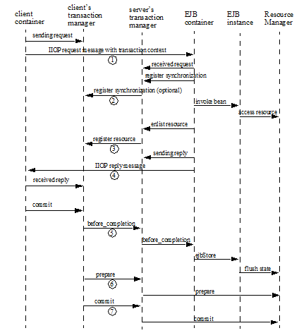
_Containers that perform transactional work within the scope of a transaction must register an OTS Resource object with the transaction coordinator whose object reference is included in the propagated transaction context (step 3), and may also register an OTS Synchronization object (step 2). If the server container does not register an OTS Synchronization object, it must still ensure that the beforeCompletion method of session beans and ejbStore method of entity beanslink:#a10316[96] are called with the proper transaction context. Containers must participate in the two-phase commit and recovery procedures performed by the transaction coordinator / terminator (steps 6,7), as described by the OTS specification._
Compliant Java EE containers must not use nested transactions in interoperability scenarios.
10.6.1.3. Transactional Policies of Enterprise Bean References
The OTS1.2 specification describes the CosTransactions::OTSPolicy and CosTransactions::InvocationPolicy structures that are encoded in IORs as tagged components. EJBObject and EJBHome references must contain these tagged components97 with policy values as described below.
The transaction attributes of enterprise beans can be specified per method, while in OTS the entire CORBA object has the same OTS transaction policy. The rules below ensure that the transaction context will be propagated if any method of an enterprise bean needs to execute in the client’s transaction context. However, in some cases there may be extra performance overhead of propagating the client’s transaction context even if it will not be used by the enterprise bean method.
EJBObject and EJBHome references may have the InvocationPolicy value as either CosTransactions::SHARED or CosTransactions::EITHER 98.
All EJBObject and EJBHome references must have the OTSPolicy value as CosTransactions::ADAPTS . This is necessary to allow clients to invoke methods of the javax.ejb.EJBObject and javax.ejb.EJBHome with or without a transaction.
The CosTransactions::Synchronization object registered by the EJB container with the transaction coordinator should have the OTSPolicy value CosTransactions::ADAPTS and InvocationPolicy value CosTransactions::SHARED to allow enterprise beans to do transactional work during the beforeCompletion notification from the transaction coordinator.
10.6.1.4. Exception Handling Behavior
_The exception handling behavior described in the OTS1.2 specification must be followed. In particular, if an application exception (an exception which is not a CORBA system exception and does not extend_ _java.rmi.RemoteException_ _) is returned by the server, the request is defined as being successful; hence the client-side OTS library must not roll back the transaction. This allows application exceptions to be propagated back to the client without rolling back the transaction, as required by the exception handling rules in link:Ejb.html#a2940[See Exception Handling]._
10.6.2. Interoperating with Containers that do not Implement Transaction Interoperability
The requirements in this subsection are designed to ensure that when a Java EE container does not support transaction interoperability, the failure modes are well defined so that the integrity of an application’s data is not compromised: at worst the transaction is rolled back. When a Java EE client component expects the client’s transaction to propagate to the enterprise bean but the client or EJB container cannot satisfy this expectation, a java.rmi.RemoteException or subclass is thrown, which ensures that the client’s transaction will roll back.
In addition, the requirements below allow a container that does not support transaction propagation to interoperate with a container that does support transaction propagation in the cases where the enterprise bean method’s transaction attribute indicates that the method would not be executed in the client’s transaction.
10.6.2.1. Client Container Requirements
If the client in another container invokes an enterprise bean’s method when there is no active global transaction associated with the client’s thread, the client container does not include a transaction context in the IIOP request message to the EJB server, i.e., there is no CosTransactions::PropagationContext structure in the IIOP request header.
The client application component expects a global transaction to be propagated to the server only if the client’s thread has an active global transaction. In this scenario, if the client container does not support transaction interoperability, it has two options:
If the client container does not support transaction propagation or uses a non-OTS protocol, it must include the OTS CosTransactions::PropagationContext structure in the IIOP request to the server (step 1 in the object interaction diagram above), with the CosTransactions::Coordinator and CosTransactions::Terminator object references as null. The remaining fields in this “null transaction context,” such as the transaction identifier, are not interpreted and may have any value. The “null transaction context” indicates that there is a global client transaction active but the client container is not capable of propagating it to the server. The presence of this “null transaction context” allows the EJB container to determine whether the Java EE client component expects the client’s global transaction to propagate to the server.
Client containers that use the OTS transaction context format but still do not support transaction interoperability with other vendor’s containers must reject the Coordinator::register_resource call (step 3 in the object interaction diagram above) by throwing a CORBA system exception if the server’s Resource object reference indicates that it belongs to another vendor’s container.
10.6.2.2. EJB container requirements
All EJB containers (including those that do not support transaction propagation) must include the CosTransactions::OTSPolicy and optionally the CosTransactions::InvocationPolicy tagged component in the IOR for EJBObject and EJBHome references as described in section See Transactional Policies of Enterprise Bean References.
Requirements for EJB Containers Supporting Transaction Interoperability
When an EJB container that supports transaction propagation receives the IIOP request message, it must behave as follows:
If there is no OTS transaction context in the IIOP message, the container must follow the behavior described in See Container Provider Responsibilities.
If there is a valid, complete OTS transaction context in the IIOP message, the container must follow the behavior described in See Container Provider Responsibilities.
If there is a null transaction context (as defined in section See Client Container Requirements above) in the IIOP message, the container’s required behavior is described in the table below. The entry “throw RemoteException” indicates that the EJB container must throw the java.rmi.RemoteException to the client after the “received request” interaction with the server’s transaction manager (after step 1 in the object interaction diagram above).
| EJB method’s Transaction Attribute | EJB container behavior on receiving null OTS transaction context |
|---|---|
Mandatory |
throw RemoteException |
Required |
throw RemoteException |
RequiresNew |
|
Supports |
throw RemoteException |
NotSupported |
|
Never |
|
Bean Managed |
10.7. Requirements for EJB Containers not Supporting Transaction Interoperability
When an EJB container that does not support transaction interoperability receives the IIOP request message, it must behave as follows:
If there is no OTS transaction context in the IIOP message, the container must follow the behavior described in See Container Provider Responsibilities.
If there is a valid, complete OTS transaction context in the IIOP message, the container’s required behavior is described in the table below.
If there is a null transaction context (as defined in section See Client Container Requirements) in the IIOP message, the container’s required behavior is described in the table below. Note that the container may not know whether the received transaction context in the IIOP message is valid or null.
| EJB method’s Transaction Attribute | EJB container behavior on receiving null or valid OTS transaction context |
|---|---|
Mandatory |
throw RemoteException |
Required |
throw RemoteException |
RequiresNew |
|
Supports |
throw RemoteException |
NotSupported |
|
Never |
|
Bean Managed |
EJB containers that accept the OTS transaction context format but still do not support interoperability with other vendors’ client containers must follow the column in the table above for “null or valid OTS transaction context” if the transaction identity or the Coordinator object reference in the propagated client transaction context indicate that the client belongs to a different vendor’s container.
10.8. Naming Interoperability
_This section describes the requirements for supporting interoperable access to naming services for looking up EJBHome object references_ (interoperability requirement two in section link:Ejb.html#a3364[See Overview of Interoperability Requirements]) _._
_EJB containers are required to be able to publish EJBHome object references in a CORBA CosNaming service link:Ejb.html#a9866[See CORBA Naming Service. http://www.omg.org/spec/NAM/.]. The CosNaming service must implement the IDL interfaces in the CosNaming module defined in link:Ejb.html#a9866[See CORBA Naming Service. http://www.omg.org/spec/NAM/.] and allow clients to invoke the_ _resolve_ _and_ _list_ _operations over IIOP._
_The CosNaming service must follow the requirements in the CORBA Interoperable Name Service specification link:Ejb.html#a9867[See Interoperable Name Service FTF document. http://www.omg.org/cgi-bin/doc?ptc/00-08-07.] for providing the host, port, and object key for its root_ _NamingContext_ _object. The CosNaming service must be able to service IIOP invocations on the root_ _NamingContext_ _at the advertised host, port, and object key._
_Client containers_ (i.e., EJB, web, or application client containers) _are required to include a JNDI CosNaming service provider that uses the mechanisms defined in the_ Interoperable Name Service specification _to contact the server’s CosNaming service, and to resolve the EJBHome object using standard CosNaming APIs. The JNDI CosNaming service provider may or may not use the JNDI SPI architecture. The JNDI CosNaming service provider must access the_ root NamingContext _of the server’s CosNaming service by creating an object reference from the URL_ _corbaloc:iiop:1.2@<host>:<port>/<objectkey>_ _(where_ _<host>_ _,_ _<port>_ , and _<objectkey>_ _are the values corresponding to the root NamingContext advertised by the server’s CosNaming service), or by using an equivalent mechanism._
At deployment time, the Deployer of the client container should obtain the host, port and object key of the server’s CosNaming service and the CosNaming name of the server EJBHome object (e.g. by browsing the server’s namespace) for each such EJB annotation or ejb-ref element in the client component’s deployment descriptor. The ejb-ref-name (which is used by the client code in the JNDI lookup call) should then be linked to the EJBHome object’s CosNaming name. At run-time, the client component’s JNDI lookup call uses the CosNaming service provider, which contacts the server’s CosNaming service, resolves the CosNaming name, and returns the EJBHome object reference to the client component.
Since the EJBHome object’s name is scoped within the namespace of the CosNaming service that is accessible at the provided host and port, it is not necessary to federate the namespaces of the client and server containers.
_The advantage of using CosNaming is better integration with the IIOP infrastructure that is already required for interoperability, as well as interoperability with non-Java-EE CORBA clients and servers. Since CosNaming stores only CORBA objects it is likely that vendors will use other enterprise directory services for storing other resources._
_Security of CosNaming service access is achieved using the security interoperability protocol described in link:Ejb.html#a3517[See Security Interoperability]. The CosNaming service must support this protocol. Clients which construct the root NamingContext object reference from a URL should send an IIOP_ _LocateRequest_ _message to the CosNaming service to obtain the complete IOR (with SSL information) of the root NamingContext, and then initiate an SSL session with the CosNaming service, as determined by the client policy._
10.9. Security Interoperability
This section describes the interoperable mechanisms that support secure invocations on enterprise beans in intranets. These mechanisms are based on the CORBA/IIOP protocol.
_EJB containers are required to follow the protocol rules prescribed by the CSIv2 specification_ Conformance Level 0 _._
10.9.1. Introduction
The goal of the secure invocation mechanisms is to support the interoperability requirements described earlier in this chapter, as well as be capable of supporting security technologies that are expected to be widely deployed in enterprises, including Kerberos-based secret key mechanisms and X.509 certificate-based public key mechanisms.
The authentication identity (i.e. principal) associated with a Java EE component is usually that of the user on whose behalf the component is executing99. The principal under which an enterprise bean invocation is performed is either that of the bean’s caller or the run-as principal which was configured by the Deployer. When there is a chain of invocations across a web component and enterprise beans, an intermediate component may use the principal of the caller (the initiating client) or the intermediate component may use its run-as principal to perform an invocation on the callee, depending on the security identity specified for the intermediate component in its deployment descriptor.
The security principal associated with a container depends on the type of container. Application client containers usually do not have a separate principal associated with them (they operate under the user’s principal). Web and EJB containers are typically associated with a security principal of their own (e.g., the operating system user for the container’s process) which may be configured by the System Administrator at deployment time. When the client is a web or EJB container, the difference between the client component’s principal and the client container’s principal is significant for interoperability considerations.
10.9.1.1. Trust Relationships Between Containers, Principal Propagation
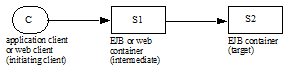
When there is a chain of multiple invocations across web components and enterprise beans, intermediate components may not have access to the authentication data of the initiating client to provide proof of the client’s identity to the target. In such cases, the target’s authentication requirements can be satisfied if the target container trusts the intermediate container to vouch for the authenticity of the propagated principal. The call is made using the intermediate container’s principal and authentication data, while also carrying the propagated principal of the initiating client. The invocation on the target enterprise bean is authorized and performed using the propagated principal. This procedure also avoids the overhead associated with authentication of clients on every remote invocation in a chain.
EJB containers are required to provide the Deployer or Administrator with the tools to configure trust relationships for interactions with intermediate web or EJB containers100. If a trust relationship is set up, the containers are usually configured to perform mutual authentication, unless the security of the network can be ensured by some physical means. If the network is physically secure, the target EJB container may be configured to trust all client containers. After a trust relationship is set up, the target EJB container does not need to independently authenticate the initiating client principal sent by the intermediate container on invocations. Thus only the principal name of the initiating client (which may include a realm) needs to be propagated. After a trust relationship has been established, the target EJB container must be able to accept invocations carrying only the principal name of the initiating client.
For the current interoperability needs of Java EE, it is assumed that trust relationships are transitive, such that if a target container trusts an intermediate container, it implicitly trusts all containers trusted by the intermediate container.
If no trust relationship has been set up between a target EJB container and an intermediate web or EJB container, the target container must not accept principals propagated from that intermediate container, hence the target container needs to have access to and independently verify the initiating client principal’s authentication data.
Web and EJB containers are required to support caller propagation mode (where the initiating client’s principal is propagated down the chain of calls on enterprise beans) and run-as mode (where the web/EJB component’s run-as identity is propagated). This is needed for scenarios 1, 3 and 4 where the internet or intranet user’s principal needs to be propagated to the target EJB container.
10.9.1.2. Application Client Authentication
Application client containers that have authentication infrastructure (such as certificates, Kerberos) can:
authenticate the user by interacting with an authentication service (e.g. the Kerberos KDC) in the enterprise
inherit an authentication context which was established at system login time from the operating system process, or
obtain the user’s certificate from a client-side store.
These may be achieved by plugging in a Java Authentication and Authorization Service (JAAS) login module for the particular authentication service. After authentication is completed, a credential is associated with the client’s thread of execution, which is used for all invocations on enterprise beans made from that thread.
If there is no authentication infrastructure installed in the client’s environment, or the authentication infrastructure is not capable of authenticating at the transport protocol layer, the client may send its private credentials (e.g. password) over a secure connection to the EJB server, which authenticates the user by interacting with an authentication service (e.g. a secure user/password database). This is similar to the basic authentication feature of HTTP.
10.9.2. Securing EJB Invocations
This subsection describes the interoperable protocol requirements for providing authentication, protection of integrity and confidentiality, and principal propagation for invocations on enterprise beans. The invocation takes place over an enterprise’s intranet as described in the scenarios in section See Interoperability Scenarios. Since EJB invocations use the IIOP protocol, we need to secure IIOP messages between client and server containers. The client container may be any of the Java EE containers; the server container is an EJB container.
The secure interoperability requirements for EJB 2.0 (and later) and other J2EE 1.3 (and later) containers are based on Conformance Level 0 of the Common Secure Interoperability version 2 (CSIv2) Final Available specification See Common Secure Interoperability Version 2, which was developed by the OMG. EJB, web, and application client containers must support all requirements of Conformance Level 0 of the CSIv2 specification. The following subsections describe how the CSIv2 features are used to realize the scenarios described in section See Interoperability Scenarios.
10.9.2.1. Secure Transport Protocol
The Secure Sockets Layer (SSL 3.0) protocol See The SSL and the related IETF standard Transport Layer Security (TLS 1.0) protocol See RFC 2246: provide authentication and message protection (that is, integrity and/or confidentiality) at the transport layer. The original SSL and TLS specifications supported only X.509 certificates for authenticating principals. Recently, Kerberos-based authentication mechanisms and cipher suites have been defined for TLS (RFC 2712 See RFC 2712: Addition of Kerberos Cipher). Thus the TLS specification is capable of supporting the two main security technologies that are expected to be widely deployed in enterprises.
EJB, web and application client containers are required to support both SSL 3.0 and TLS 1.0 as security protocols for IIOP. This satisfies interoperability requirement 3 in section See Overview of Interoperability Requirements. Compliant containers must be capable of using the following public key SSL/TLS ciphersuites based on policies set by the System Administrator:
TLS_RSA_WITH_RC4_128_MD5
SSL_RSA_WITH_RC4_128_MD5
TLS_DHE_DSS_WITH_3DES_EDE_CBC_SHA101
SSL_DHE_DSS_WITH_3DES_EDE_CBC_SHA
TLS_RSA_EXPORT_WITH_RC4_40_MD5
SSL_RSA_EXPORT_WITH_RC4_40_MD5
TLS_DHE_DSS_EXPORT_WITH_DES40_CBC_SHA
SSL_DHE_DSS_EXPORT_WITH_DES40_CBC_SHA
_Support for Kerberos ciphersuites is not specified._
_When using IIOP over SSL, a secure channel between client and server containers is established at the SSL layer. The SSL handshake layer handles authentication (either mutual or server-only) between containers, negotiation of cipher suite for bulk data encryption, and optionally provides a compression method. The SSL record layer performs confidentiality and integrity protection_ on application data. Since compliant Java EE products are already required to support SSL (HTTPS for Internet communication), the use of SSL/TLS provides a relatively easy route to interoperable security at the transport layer.
10.9.2.2. Security Information in IORs
Before initiating a secure connection to the EJB container, the client needs to know the hostname and port number at which the server is listening for SSL connections, and the security protocols supported or required by the server object. This information is obtained from the EJBObject or EJBHome reference’s IOR.
The CSIv2 specification See Common Secure Interoperability Version 2 describes the TAG_CSI_SEC_MECH_LIST tagged component which is included in the IORs of secured objects. This component contains a sequence of CSIIOP::CompoundSecMech structures (in decreasing order of the server’s preference) that contain the target object’s security information for transport layer and service context layer mechanisms. This information includes the server’s SSL/TLS port, its security principal and supported/required security mechanisms.
EJB containers must be capable of inserting the CSIv2 tagged components into the IORs for EJBObject and EJBHome references, based on the Deployer or System Administrator’s security policy settings. Compliant EJB containers must follow the Conformance Level 0 rules described in the CSIv2 specification for constructing these IORs.
_EJB containers must also be capable of creating IORs that allow access to enterprise beans over unprotected IIOP, based on the security policies set by the Deployer or System Administrator._
10.9.2.3. Propagating Principals and Authentication Data in IIOP Messages
In scenarios where client authentication does not occur at the transport layer it is necessary to support transfer of authentication data between two containers in the IIOP message service context. When an intermediate client container does not have authentication data for the initiating client, it is necessary to support propagation of client principals in the IIOP message service context.
It is assumed that all information exchanged between client and server at the transport layer is also available to the containers: e.g. the certificates used for authentication at the SSL layer may be used by the server container for authorization.
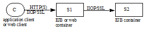
The following cases are required to be supported:
Application client invocations on enterprise beans with mutual authentication between the application client and EJB container (C and S1) at the SSL layer (scenario 2.1 in section See Interactions Between Application Client Containers and EJB Containers Within an Enterprise’s Intranet, interoperability requirement 4.1 in section See Overview of Interoperability Requirements). For example, this is possible when the enterprise has a Kerberos-based authentication infrastructure or when client-side certificates have been installed. In this case the security context of the IIOP message sent from C to S1 should not contain any additional information.
Application client invocations on enterprise beans with server-only authentication between the application client and EJB container (C and S1) at the SSL layer (scenario 2.2 in section See Interactions Between Application Client Containers and EJB Containers Within an Enterprise’s Intranet, interoperability requirement 4.2 in section See Overview of Interoperability Requirements). This usually happens when the client cannot authenticate in the transport. In this case, the client container must be capable of inserting into the IIOP message a CSIv2 security context with a client authentication token that contains the client C’s authentication data. Once the EJB container S1 has authenticated the client, it may or may not maintain state about the client, so subsequent invocations from the client on the same network connection may need to be authenticated again. The client and server containers must follow the Conformance Level 0 rules in the CSIv2 specification for client authentication. In particular, support for the GSSUP username-password authentication mechanism is required. Support for other GSSAPI mechanisms (such as Kerberos) to perform client authentication at the IIOP layer is optional.
Invocations from Web/EJB clients to enterprise beans with a trust relationship between the client container S1 and server container S2 (scenarios 1,3 and 4 in section See Interactions Between Two EJB Containers in an Enterprise’s Intranet, interoperability requirements five and six in section See Overview of Interoperability Requirements). S2 does not need to independently authenticate the initiating client C. In this case the client container S1 must insert into the IIOP message a security context with an identity token in the format described in the CSIv2 specification. The principal may be propagated as an X.509 certificate chain or as a X.501 distinguished name or as a principal name encoded in the GSS exported name format, as described in the CSIv2 specification. The identity propagated is determined as follows:
If the client Web/EJB component is configured to use caller identity, and the caller C authenticated itself to S1, then the identity token contains the initiating client C’s identity.
If the client component is configured to use caller identity, and the caller C did not authenticate itself to S1, then the identity token contains the anonymous type.
If the client component is configured to use a run-as identity then the identity token contains the run-as identity.
Java EE containers are required to support the stateless mode of propagating principal and authentication information defined in CSIv2 (where the server does not store any state for a particular client principal across invocations), and may optionally support the stateful mode.
The caller principal String provided by EJBContext.getCallerPrincipal().getName() is defined as follows:
For case one, the principal should be derived from the distinguished name obtained from the first X.509 certificate in the client’s certificate chain that was provided to the server during SSL mutual authentication.
For case two, the principal should be derived from the username obtained from the client authentication token in the CSIv2 security context of the IIOP message. For the GSSUP username-password mechanism, the principal should be derived from the username in the GSSUP::InitialContextToken structure.
For case three, the principal depends on the identity token type in the CSIv2 security context:
If the type is X.509 certificate chain, then the principal should be derived from the distinguished name from the first certificate in the chain.
If the type is distinguished name, then the principal should be derived from the distinguished name.
If the type is principal name propagated as a GSS exported name, then the principal should be derived from the mechanism-specific principal name.
If the anonymous principal type was propagated or the identity token was absent, then EJBContext.getCallerPrincipal().getName() returns a product-specific unauthenticated principal name.
10.9.2.4. Security Configuration for Containers
_Since the interoperability scenarios involve IIOP/SSL usage in intranets, it is assumed that client and server container administrators cooperatively configure a consistent set of security policies for the enterprise._
_At product installation or application deployment time, client and server container administrators may optionally configure the container and SSL infrastructure as described below._ These preferences may be specified at any level of granularity (e.g. per host or per container process or per enterprise bean).
_Configure the list of supported SSL cipher suites in preference order._
For server containers, configure a list of trusted client container principals with whom the server has a trust relationship.
_Configure authentication preferences and requirements (e.g. if the server prefers authenticated clients to anonymous clients). In particular, if a trust relationship has been configured between two servers, then mutual authentication should be required unless there is physical network security._
_If the client and server are using certificates for authentication, configure a trusted common certificate authority for both client and server. If using Kerberos, configure the client and server with the same KDC or cooperating KDCs._
_Configure a restricted list of trusted server principals that a client container is allowed to interact with, to prevent the client’s private credentials such as password from being sent to untrusted servers._
10.9.2.5. Runtime Behavior
_Client containers determine whether to use SSL for an enterprise bean invocation by using the security policies configured by the client administrator for interactions with the target host or enterprise bean, and the_ _target_requires_ _information in the CSIv2 tagged component in the target enterprise bean’s IOR. If either the client configuration requires secure interactions with the enterprise bean, or the enterprise bean requires a secure transport, the client should initiate an SSL connection to the server._ The client must follow the rules described in the CSIv2 specification Conformance Level 0 for interpreting security information in IORs and including security context information in IIOP messages.
_When an EJB container receives an IIOP message, its behavior depends on deployment time configuration, run-time information exchanged with the client at the SSL layer, and principal/authentication data contained in the IIOP message service context. EJB containers are required to follow the protocol rules prescribed by the CSIv2 specification_ Conformance Level 0 _._
When the System Administrator changes the security policies associated with an enterprise bean, the IORs for EJB references should be updated. When the bean has existing clients holding IORs, it is recommended that the security policy change should be handled by the client and server containers transparently to the client application if the old security policy is compatible with the new one. This may be done by using interoperable GIOP 1.2 forwarding mechanisms.
11. Enterprise Bean Environment
This chapter specifies how enterprise beans declare dependencies on external resources and other objects in their environment, and how those items can be injected into enterprise beans or accessed in the JNDI naming context.
11.1. Overview
The Application Assembler and Deployer should be able to customize an enterprise bean’s business logic without accessing the enterprise bean’s source code.
In addition, ISVs typically develop enterprise beans that are, to a large degree, independent from the operational environment in which the application will be deployed. Most enterprise beans must access resource managers and external information. The key issue is how enterprise beans can locate external information without prior knowledge of how the external information is named and organized in the target operational environment. The JNDI naming context and Java language metadata annotations provide this capability.
The enterprise bean environment mechanism attempts to address both of the above issues.
This chapter is organized as follows:
-
Enterprise Bean’s Environment as a JNDI Naming Context defines the general rules for the use of the JNDI naming context and its interaction with Java language annotations that reference entries in the naming context.
-
Responsibilities by EJB Role defines the general responsibilities for each of the EJB roles, such as Bean Provider, Application Assembler, Deployer, and Container Provider.
-
Simple Environment Entries defines the basic mechanisms and interfaces that specify and access the enterprise bean’s environment. The section illustrates the use of the enterprise bean’s environment for generic customization of the enterprise bean’s business logic.
-
EJB References defines the means for obtaining the business interface, no-interface view, or home interface of another enterprise bean using an EJB reference. An EJB reference is a special entry in the enterprise bean’s environment.
-
Web Service References defines the means for obtaining the web service interface using a web service reference. A web service reference is a special entry in the enterprise bean’s environment.
-
Resource Manager Connection Factory References defines the means for obtaining a resource manager connection factory using a resource manager connection factory reference. A resource manager connection factory reference is a special entry in the enterprise bean’s environment.
-
Resource Environment References defines the means for obtaining an administered object that is associated with a resource (e.g., a CCI
InteractionSpec) using a resource environment reference . A resource environment reference is a special entry in the enterprise bean’s environment. -
Message Destination References defines the means for obtaining a message destination associated with a resource using a message destination reference. Message destination references allow the flow of messages within an application to be specified. A message destination reference is a special entry in the enterprise bean’s environment.
-
Persistence Unit References describes the means for obtaining an entity manager factory using a persistence unit reference.
-
Persistence Context References describes the means for obtaining an entity manager using a persistence context reference.
-
UserTransaction Interface describes the use by eligible enterprise beans of references to a
UserTransactionobject in the bean’s environment to start, commit, and rollback transactions. -
ORB References describes the use of references to a CORBA
ORBobject in the enterprise bean’s environment. -
TimerService References describes the means for obtaining a
TimerServiceobject. -
EJBContext References describes the means for obtaining a bean’s
EJBContextobject. -
Support for Other Resources and Configuration Parameters describes the requirements for other resources and configuration parameters.
11.2. Enterprise Bean’s Environment as a JNDI Naming Context
The enterprise bean’s environment is a mechanism that allows customization of the enterprise bean’s business logic during deployment or assembly. The enterprise bean’s environment allows the enterprise bean to be customized without the need to access or change the enterprise bean’s source code.
Annotations and deployment descriptors are the main vehicles for conveying access information to the Application Assembler and Deployer about beans’ requirements for customization of business logic and access to external information.
The container implements the enterprise bean’s environment, and provides it as a JNDI naming context. The enterprise bean’s environment is used as follows:
-
The enterprise bean makes use of entries from the environment. Entries from the environment may be injected by the container into the bean’s fields or methods, or the methods of the bean may access the environment using the EJBContext
lookupmethod or the JNDI interfaces. The Bean Provider declares in Java language metadata annotations or in the deployment descriptor all the environment entries that the enterprise bean expects to be provided in its environment at runtime. -
The container provides an implementation of the JNDI naming context that stores the enterprise bean environment. The container also provides the tools that allow the Deployer to create and manage the environment of each enterprise bean.
-
The Deployer uses the tools provided by the container to create and initialize the environment entries that are declared by means of the enterprise bean’s annotations or deployment descriptor. The Deployer can set and modify the values of the environment entries.
-
The container injects entries from the environment into the enterprise bean’s fields or methods as specified by the bean’s metadata annotations or the deployment descriptor.
-
The container makes the environment naming context available to the enterprise bean instances at runtime. The enterprise bean’s instances can use the EJBContext
lookupmethod or the JNDI interfaces to obtain the values of the environment entries.
-
The container must make an enterprise bean’s environment available to any interceptor class and any JAX-WS message handler for the bean as well. The interceptor and web service handler classes for an enterprise bean share that bean’s environment. Within the context of this chapter, the term "bean" should be construed as including a bean’s interceptor and handler classes unless otherwise noted.
11.2.1. Sharing of Environment Entries
For enterprise beans packaged in a standalone
ejb-jar file or in an ejb-jar file within an .ear file, each
enterprise bean defines its own set of
environment entries. In this case, all
instances of an enterprise bean share the same environment entries; the
environment entries are not shared with other enterprise beans.
In a .war file, there is only a single
naming environment shared between all the components in the module. For
enterprise beans packaged in a .war file, all enterprise beans share
this single naming environment. The enterprise beans share their
environment entries with all other enterprise bean components and web
components in the .war file.
Enterprise bean instances are not allowed to modify the bean’s environment at runtime.
Compatibility Note: If an enterprise bean written to the EJB 2.1 API specification is deployed multiple times in the same container, each deployment results in the creation of a distinct home. The Deployer may set different values for the enterprise bean environment entries for each home.
In general, lookups of objects in the JNDI
java: namespace are required to return a new instance of the requested
object every time. Exceptions are allowed for the following:
-
The container knows the object is immutable (for example, objects of type
java.lang.String), or knows that the application can’t change the state of the object. -
The object is defined to be a singleton, such that only one instance of the object may exist in the JVM.
-
The name used for the lookup is defined to return an instance of the object that might be shared. The name
java:comp/ORBis such a name.
In these cases, a shared instance of the
object may be returned. In all other cases, a new instance of the
requested object must be returned on each lookup. Note that, in the case
of resource adapter connection objects, it is the resource adapter’s
ManagedConnectionFactory implementation that is responsible for
satisfying this requirement.
Each injection of an object corresponds to a JNDI lookup. Whether a new instance of the requested object is injected, or whether a shared instance is injected, is determined by the rules described above.
Terminology warning: The enterprise bean’s "environment" should not be confused with the "environment properties" defined in the JNDI documentation.
11.2.2. Annotations for Environment Entries
A field or method of a bean class may be
annotated to request that an entry from the bean’s environment be
injected. Any of the types of resources or other environment
entries[1] described in this chapter may be
injected. Injection may also be requested using entries in the
deployment descriptor corresponding to each of these resource types. The
field or method may have any access qualifier (public, private,
etc.) but must not be static.
-
A field of the bean class may be the target of injection. The field must not be
final. By default, the name of the field is combined with the name of the class in which the annotation is used and is used directly as the name in the bean’s naming context. For example, a field namedmyDatabasein the classMySessionBeanin the packagecom.acme.examplewould correspond to the JNDI namejava:comp/env/com.acme.example.MySessionBean/myDatabase. The annotation also allows the JNDI name to be specified explicitly. -
Environment entries may also be injected into the bean through bean methods that follow the naming conventions for JavaBeans properties. The annotation is applied to the
setmethod for the property, which is the method that is called to inject the environment entry. The JavaBeans property name (not the method name) is used as the default JNDI name. For example, a method namedsetMyDatabasein the sameMySessionBeanclass would correspond to the JNDI namejava:comp/env/com.example.MySessionBean/myDatabase. -
When a deployment descriptor entry is used to specify injection, the JNDI name and the instance variable name or property name are both specified explicitly. Note that the JNDI name is always relative to the
java:comp/envnaming context.
Each resource may only be injected into a
single field or method of the bean. Requesting injection of the
java:comp/env/com.example.MySessionBean/myDatabase resource into both
the setMyDatabase method and the myDatabase instance variable is an
error. Note, however, that either the field or the method could request
injection of a resource of a different (non-default) name. By explicitly
specifying the JNDI name of a resource, a single resource may be
injected into multiple fields or methods of multiple classes.
Annotations may also be applied to the bean
class itself. These annotations declare an entry in the bean’s
environment, but do not cause the resource to be injected. Instead, the
bean is expected to use the EJBContext lookup method or the methods of
the JNDI API to lookup the entry. When the annotation is applied to the
bean class, the JNDI name and the environment entry type must be
explicitly specified.
Annotations may appear on the bean class, or on any superclass. A resource annotation on any class in the inheritance hierarchy defines a resource needed by the bean. However, injection of such resources follows the Java language overriding rules for the visibility of fields and methods. A method definition that overrides a method on a superclass defines the resource, if any, to be injected into that method. An overriding method may request injection of a different resource than is requested by the superclass, or it may request no injection even though the superclass method requests injection.
In addition, fields or methods that are not visible in or are hidden (as opposed to overridden) by a subclass may still request injection. This allows, for example, a private field to be the target of injection and that field to be used in the implementation of the superclass, even though the subclass has no visibility into that field and doesn’t know that the implementation of the superclass is using an injected resource. Note that a declaration of a field in a subclass with the same name as a field in a superclass always causes the field in the superclass to be hidden.
11.2.3. Annotations and Deployment Descriptors
Environment entries may be declared by the use of annotations, without need for any deployment descriptor entries. Environment entries may also be declared by deployment descriptor entries, without need for any annotations. The same environment entry may be declared using both an annotation and a deployment descriptor entry. In this case, the information in the deployment descriptor entry may be used to override some of the information provided in the annotation. This approach may be used by an Application Assembler to override information provided by the Bean Provider. Deployment descriptor entries should not be used to request injection of a resource into a field or method that has not been designed for injection.
The following rules apply to how a deployment
descriptor entry may override a Resource annotation:
-
The relevant deployment descriptor entry is located based on the JNDI name used with the annotation (either defaulted or provided explicitly).
-
The type specified in the deployment descriptor must be assignable to the type of the field or property or the type specified in the
Resourceannotation. -
The description, if specified, overrides the description element of the annotation.
-
The injection target, if specified, must name exactly the annotated field or property method.
-
The
mapped-nameelement, if specified, overrides the mappedName element of the annotation. -
The
res-sharing-scopeelement, if specified, overrides theshareableelement of the annotation. In general, the Application Assembler or Deployer should never change the value of this element, as doing so is likely to break the application. -
The
res-authelement, if specified, overrides theauthenticationTypeelement of the annotation. In general, the Application Assembler or Deployer should never change the value of this element, as doing so is likely to break the application. -
The
lookup-nameelement, if specified, overrides the lookup element of the annotation.
Restrictions on the overriding of environment entry values depend on the type of environment entry.
The rules for how a deployment descriptor
entry may override an EJB annotation are described in EJB References.
The rules for how a deployment descriptor entry may override a
PersistenceUnit or PersistenceContext annotation are described in
Persistence Unit References and Persistence Context References. The rules for web services references and how
a deployment descriptor entry may override a WebServiceRef annotation
are included in the Web Services for Java EE specification[a9879].
11.3. Responsibilities by EJB Role
This section describes the responsibilities of the various EJB roles with regard to the specification and handling of environment entries. The sections that follow describe the responsibilities that are specific to the different types of objects that may be stored in the naming context.
11.3.1. Bean Provider’s Responsibilities
The Bean Provider may use Java language
annotations or deployment descriptor entries to request injection of a
resource from the naming context, or to declare entries that are needed
in the naming context. The Bean Provider may also use the EJBContext
lookup method or the JNDI APIs to access entries in the naming
context. Deployment descriptor entries may also be used by the Bean
Provider to override information provided by annotations.
-
When using JNDI interfaces directly, an enterprise bean instance creates a
javax.naming.InitialContextobject by using the constructor with no arguments, and looks up the environment naming via the InitialContext under the namejava:comp/env.
The enterprise bean’s environment entries are stored directly in the environment naming context, or in any of its direct or indirect subcontexts.
The value of an environment entry is of the Java type declared by the Bean Provider in the metadata annotation or deployment descriptor, or the type of the instance variable or setter method parameter of the method with which the metadata annotation is associated.
11.3.2. Application Assembler’s Responsibility
The Application Assembler is allowed to modify the values of the environment entries set by the Bean Provider, and is allowed to set the values of those environment entries for which the Bean Provider has not specified any initial values. The Application Assembler uses the deployment descriptor to override settings made by the Bean Provider, whether these were defined by the Bean Provider in the deployment descriptor or in the source code using annotations.
11.3.3. Deployer’s Responsibility
The Deployer must ensure that the values of all the environment entries declared by an enterprise bean are created and/or set to meaningful values.
The Deployer can modify the values of the environment entries that have been previously set by the Bean Provider and/or Application Assembler, and must set the values of those environment entries for which no value has been specified.
The description
elements provided by the Bean Provider or Application Assembler help the
Deployer with this task.
11.3.4. Container Provider Responsibility
The Container Provider has the following responsibilities:
-
Provide a deployment tool that allows the Deployer to set and modify the values of the enterprise bean’s environment entries.
-
Implement the
java:comp/env,java:module,java:appandjava:globalenvironment naming contexts, and provide them to the enterprise bean instances at runtime. The naming context must include all the environment entries declared by the Bean Provider, with their values supplied in the deployment descriptor or set by the Deployer. The environment naming context must allow the Deployer to create subcontexts if they are needed by an enterprise bean. -
Inject entries from the naming environment, as specified by annotations or by the deployment descriptor.
-
The container must ensure that the enterprise bean instances have only read access to their environment variables. The container must throw the
javax.naming.OperationNotSupportedExceptionfrom all the methods of thejavax.naming.Contextinterface that modify the environment naming context and its subcontexts.
11.4. Simple Environment Entries
A simple environment entry is a configuration
parameter used to customize an enterprise bean’s business logic. The
environment entry values may be one of the
following Java types: String, Character, Byte, Short, Integer, Long,
Boolean, Double, Float, Class, and any subclass of Enum.
The following subsections describe the responsibilities of each EJB role.
11.4.1. Bean Provider’s Responsibilities
This section describes the Bean Provider’s view of the bean’s environment, and defines his or her responsibilities. The first subsection describes annotations for injecting simple environment entries; the second describes the API for accessing simple environment entries; and the third describes syntax for declaring the environment entries in a deployment descriptor.
11.4.1.1. Injection of Simple Environment Entries Using Annotations
The Bean Provider uses the Resource
annotation to annotate a field or method of the bean class as a target
for the injection of a simple environment entry. The name of the
environment entry is as described in Annotations for Environment Entries; the type is as described in
Simple Environment Entries. Note that
the container will unbox the environment entry as required to match it
to a primitive type used for the injection field or method. The
authenticationType and shareable elements of the Resource
annotation must not be specified: simple environment entries are not
shareable and do not require authentication.
The following code example illustrates how an enterprise bean uses annotations for the injection of environment entries.
@Stateless
public class EmployeeServiceBean implements EmployeeService {
...
// The maximum number of tax exemptions, configured by Deployer
@Resource
int maxExemptions;
// The minimum number of tax exemptions, configured by Deployer
@Resource
int minExemptions;
public void setTaxInfo(int numberOfExemptions,...)
throws InvalidNumberOfExemptionsException {
...
// Use the environment entries to customize business logic.
if (numberOfExemptions > maxExemptions
|| numberOfExemptions < minExemptions)
throw new InvalidNumberOfExemptionsException();
}
}The following code example illustrates how an environment entry can be assigned a value by referring to another entry, potentially in a different namespace.
// an entry that gets its value from an application-wide entry
@Resource(lookup="java:app/env/timeout")
int timeout;11.4.1.2. Programming Interfaces for Accessing Simple Environment Entries
In addition to the use of injection as
described above, an enterprise bean may access environment entries
dynamically. This may be done by means of the EJBContext lookup method
or by direct use of the JNDI interfaces. The environment entries are
declared by the Bean Provider by means of annotations on the bean class
or in the deployment descriptor.
When the JNDI interfaces are used directly,
the bean instance creates a javax.naming.InitialContext object by
using the constructor with no arguments, and looks up the naming
environment via the InitialContext under the name java:comp/env.
The bean’s environmental entries are stored directly in the environment
naming context, or its direct or indirect subcontexts.
The following code example illustrates how an enterprise bean accesses its environment entries when the JNDI APIs are used directly. In this example, the names under which the entries are accessed are defined by the deployment descriptor, as shown in the example of Declaration of Simple Environment Entries in the Deployment Descriptor.
@Stateless
public class EmployeeServiceBean implements EmployeeService {
...
public void setTaxInfo(int numberOfExemptions, ...)
throws InvalidNumberOfExemptionsException {
...
// Obtain the enterprise bean’s environment naming context.
Context initCtx = new InitialContext();
Context myEnv = (Context)initCtx.lookup("java:comp/env");
// Obtain the maximum number of tax exemptions
// configured by the Deployer.
Integer maxExemptions = (Integer)myEnv.lookup("maxExemptions");
// Obtain the minimum number of tax exemptions
// configured by the Deployer.
Integer minExemptions = (Integer)myEnv.lookup("minExemptions");
// Use the environment entries to customize business logic.
if (numberOfExeptions > maxExemptions
|| numberOfExemptions < minExemptions)
throw new InvalidNumberOfExemptionsException();
// Get some more environment entries. These environment
// entries are stored in subcontexts.
String val1 = (String)myEnv.lookup("foo/name1");
Boolean val2 = (Boolean)myEnv.lookup("foo/bar/name2");
// The enterprise bean can also lookup using full pathnames.
Integer val3 = (Integer)initCtx.lookup("java:comp/env/name3");
Integer val4 = (Integer)initCtx.lookup("java:comp/env/foo/name4");
...
}
}11.4.1.3. Declaration of Simple Environment Entries in the Deployment Descriptor
The Bean Provider
must declare all the simple environment entries accessed from the
enterprise bean’s code. The simple environment entries are declared
either using annotations in the bean class code or using the env-entry
elements in the deployment descriptor.
Each env-entry deployment descriptor element
describes a single environment entry. The env-entry element consists of
an optional description of the environment entry, the environment entry
name relative to the java:comp/env context, the expected Java type of
the environment entry value (i.e., the type of the object returned from
the EJBContext or JNDI lookup method), and an optional environment entry
value.
See Sharing of Environment Entries for environment entry name scoping rules.
If the Bean Provider provides a value for an
environment entry using the env-entry-value element, the value can be
changed later by the Application Assembler or Deployer. The value must
be a string that is valid for the constructor of the specified type that
takes a single String parameter, or for java.lang.Character, a single
character.
The following example is the declaration of
environment entries used by the EmployeeServiceBean whose code was
illustrated in the previous subsection.
<enterprise-beans>
<session>
...
<ejb-name>EmployeeService</ejb-name>
<ejb-class>com.wombat.empl.EmployeeServiceBean</ejb-class>
...
<env-entry>
<description>
The maximum number of tax exemptions
allowed to be set.
</description>
<env-entry-name>maxExemptions</env-entry-name>
<env-entry-type>java.lang.Integer</env-entry-type>
<env-entry-value>15</env-entry-value>
</env-entry>
<env-entry>
<description>
The minimum number of tax exemptions
allowed to be set.
</description>
<env-entry-name>minExemptions</env-entry-name>
<env-entry-type>java.lang.Integer</env-entry-type>
<env-entry-value>1</env-entry-value>
</env-entry>
<env-entry>
<env-entry-name>foo/name1</env-entry-name>
<env-entry-type>java.lang.String</env-entry-type>
<env-entry-value>value1</env-entry-value>
</env-entry>
<env-entry>
<env-entry-name>foo/bar/name2</env-entry-name>
<env-entry-type>java.lang.Boolean</env-entry-type>
<env-entry-value>true</env-entry-value>
</env-entry>
<env-entry>
<description>Some description.</description>
<env-entry-name>name3</env-entry-name>
<env-entry-type>java.lang.Integer</env-entry-type>
</env-entry>
<env-entry>
<env-entry-name>foo/name4</env-entry-name>
<env-entry-type>java.lang.Integer</env-entry-type>
<env-entry-value>10</env-entry-value>
</env-entry>
...
</session>
</enterprise-beans>Injection of environment entries may also be specified using the deployment descriptor, without need for Java language annotations. The following is an example of the declaration of environment entries corresponding to the example of Injection of Simple Environment Entries Using Annotations.
<enterprise-beans>
<session>
...
<ejb-name>EmployeeService</ejb-name>
<ejb-class>com.wombat.empl.EmployeeServiceBean</ejb-class>
...
<env-entry>
<description>
The maximum number of tax exemptions
allowed to be set.
</description>
<env-entry-name>
com.wombat.empl.EmployeeService/maxExemptions
</env-entry-name>
<env-entry-type>java.lang.Integer</env-entry-type>
<env-entry-value>15</env-entry-value>
<injection-target>
<injection-target-class>
com.wombat.empl.EmployeeServiceBean
</injection-target-class>
<injection-target-name>maxExemptions</injection-target-name>
</injection-target>
</env-entry>
<env-entry>
<description>
The minimum number of tax exemptions
allowed to be set.
</description>
<env-entry-name>
com.wombat.empl.EmployeeService/minExemptions
</env-entry-name>
<env-entry-type>java.lang.Integer</env-entry-type>
<env-entry-value>1</env-entry-value>
<injection-target>
<injection-target-class>
com.wombat.empl.EmployeeServiceBean
</injection-target-class>
<injection-target-name>minExemptions</injection-target-name>
</injection-target>
</env-entry>
...
</session>
</enterprise-beans>It is often convenient to declare a field as an injection target, but to specify a default value in the code, as illustrated in the following example.
// The maximum number of tax exemptions, configured by the Deployer.
@Resource
int maxExemptions = 4; // defaults to 4To support this case, the container must only
inject a value for the environment entry if the Application Assembler or
Deployer has specified a value to override the default value. The
env-entry-value element in the deployment descriptor is optional when
an injection target is specified. If the element is not specified, no
value will be injected. In addition, if the element is not specified,
the named resource is not initialized in the naming context, and
explicit lookups of the named resource will fail.
The deployment descriptor equivalent of the
lookup element of the Resource annotation is lookup-name. The following
deployment descriptor fragment is equivalent to the earlier example that
used lookup.
<env-entry>
<env-entry-name>
com.wombat.empl.EmployeeServiceBean/timeout
</env-entry-name>
<env-entry-type>java.lang.Integer</env-entry-type>
<injection-target>
<injection-target-class>
com.wombat.empl.EmployeeServiceBean
</injection-target-class>
<injection-target-name>timeout</injection-target-name>
</injection-target>
<lookup-name>java:app/env/timeout</lookup-name>
</env-entry>It is an error for both the env-entry-value
and lookup-name elements to be specified for a given env-entry element.
If either element exists, an eventual lookup element of the
corresponding Resource annotation (if any) must be ignored. In other
words, assignment of a value to an environment entry via a deployment
descriptor, either directly (env-entry-value) or indirectly
(lookup-name), overrides any assignments made via annotations.
11.4.2. Application Assembler’s Responsibility
The Application Assembler is allowed to modify the values of the simple environment entries set by the Bean Provider, and is allowed to set the values of those environment entries for which the Bean Provider has not specified any initial values. The Application Assembler may use the deployment descriptor to override settings made by the Bean Provider, whether in the deployment descriptor or using annotations.
11.4.3. Deployer’s Responsibility
The Deployer must ensure that the values of all the simple environment entries declared by an enterprise bean are set to meaningful values.
The Deployer can modify the values of the environment entries that have been previously set by the Bean Provider and/or Application Assembler, and must set the values of those environment entries for which no value has been specified.
The description
elements provided by the Bean Provider or Application Assembler help the
Deployer with this task.
11.4.4. Container Provider Responsibility
The Container Provider has the following responsibilities:
-
Provide a deployment tool that allows the Deployer to set and modify the values of the enterprise bean’s environment entries.
-
Implement the
java:comp/env,java:module,java:appandjava:globalenvironment naming contexts, and provide them to the enterprise bean instances at runtime. The naming context must include all the environment entries declared by the Bean Provider, with their values supplied in the deployment descriptor or set by the Deployer. The environment naming context must allow the Deployer to create subcontexts if they are needed by an enterprise bean. -
Inject entries from the naming environment into the bean instance, as specified by the annotations on the bean class or by the deployment descriptor.
-
The container must ensure that the enterprise bean instances have only read access to their environment variables. The container must throw the
javax.naming.OperationNotSupportedExceptionfrom all the methods of thejavax.naming.Contextinterface that modify the environment naming context and its subcontexts.
11.5. EJB References
This section describes the programming and deployment descriptor interfaces that allow the Bean Provider to refer to the business interfaces, no-interface views, or home interfaces of other enterprise beans using "logical" names called EJB references. The EJB references are special entries in the enterprise bean’s environment. The Deployer binds the EJB references to the enterprise bean business interfaces, no-interface views, or home interfaces in the target operational environment, as appropriate.
The deployment descriptor also allows the Application Assembler to link an EJB reference declared in one enterprise bean to another enterprise bean contained in the same ejb-jar file, or in another ejb-jar file in the same Java EE application unit. The link is an instruction to the tools used by the Deployer that the EJB reference should be bound to the business interface, no-interface view, or home interface of the specified target enterprise bean. This linking can also be specified by the Bean Provider using annotations in the source code of the bean class.
11.5.1. Bean Provider’s Responsibilities
This section describes the Bean Provider’s view and responsibilities with respect to EJB references. The first subsection describes annotations for injecting EJB references; the second describes the API for accessing EJB references; and the third describes syntax for declaring the EJB references in a deployment descriptor.
11.5.1.1. Injection of EJB References
The Bean Provider uses the EJB annotation
to annotate a field or setter property method of the bean class as a
target for the injection of an EJB reference.
EJB annotation contains the following
elements:
-
The
nameelement refers to the name by which the resource is to be looked up in the environment. -
The
beanInterfaceelement is the referenced interface type. The reference may be to a session bean’s business interface, to a session bean’s no-interface view, or to the local home interface or remote home interface of a session bean or an entity bean[2]. -
The
beanNameelement references the value of the name element of theStatefulorStatelessannotation (orejb-nameelement, if the deployment descriptor was used to define the name of th bean). ThebeanNameelement allows disambiguation if multiple session beans in the ejb-jar implement the same interface. -
The
mappedNameelement is a product-specific name that the bean reference should be mapped to. Applications that use mapped names may not be portable. -
The
lookupelement is a portable lookup string containing the JNDI name for the target EJB component.
Either the beanName or the lookup element can
be used to resolve the EJB dependency to the target component. It is an
error to specify values for both beanName and lookup.
The following example illustrates how an
enterprise bean uses the EJB annotation to reference another
enterprise bean. The enterprise bean reference will have the name
java:comp/env/com.acme.example.ExampleBean/myCart in the referencing
bean’s naming context, where ExampleBean is the name of the class of
the referencing bean and com.acme.example its package. The target of
the reference must be resolved by the Deployer, unless there is only one
session bean component within the same application that exposes a client
view type which matches the EJB reference.
package com.acme.example;
@Stateless
public class ExampleBean implements Example {
...
@EJB
private ShoppingCart myCart;
...
}The following example illustrates use of
almost all portable elements of the EJB annotation. In this case, the
enterprise bean reference would have the name
java:comp/env/ejb/shopping-cart in the referencing bean’s naming
context. This reference is linked to a bean named cart1 .
@EJB(
name="ejb/shopping-cart",
beanInterface=ShoppingCart.class,
beanName="cart1",
description="The shopping cart for this application"
)
private ShoppingCart myCart;As an alternative to beanName , a reference
to an EJB can use a session bean JNDI name by means of the lookup
annotation element. The following example uses a JNDI name in the
application namespace.
@EJB(
lookup="java:app/cartModule/ShoppingCart",
description="The shopping cart for this application"
)
private ShoppingCart myOtherCart;If the ShoppingCart bean were instead
written to the EJB 2.1 client view, the EJB reference would be to the
bean’s home interface. For example:
@EJB(
name="ejb/shopping-cart",
beanInterface=ShoppingCartHome.class,
beanName="cart1",
description="The shopping cart for this application"
)
private ShoppingCartHome myCartHome;If the ShoppingCart bean were instead
written to the no-interface client view and was implemented by bean
class ShoppingCartBean.class, the EJB reference would have type
ShoppingCartBean.class. For example:
@EJB(
name="ejb/shopping-cart",
beanInterface=ShoppingCartBean.class,
beanName="cart1",
description="The shopping cart for this application"
)
private ShoppingCartBean myCart;11.5.1.2. EJB Reference Programming Interfaces
The Bean Provider may use EJB references to locate the business interfaces, no-interface views, or home interfaces of other enterprise beans as follows.
-
Assign an entry in the enterprise bean’s environment to the reference. (See Declaration of EJB References in Deployment Descriptor for information on how EJB references are declared in the deployment descriptor.)
-
The EJB specification recommends, but does not require, that all references to other enterprise beans be organized in the
ejbsubcontext of the bean’s environment (i.e., in thejava:comp/env/ejbJNDI context). Note that enterprise bean references declared by means of annotations will not, by default, be in any subcontext. -
Look up the business interface, no-interface view, or home interface of the referenced enterprise bean in the enterprise bean’s environment using the EJBContext
lookupmethod or the JNDI API.
The following example illustrates how an enterprise bean uses an EJB reference to locate the remote home interface of another enterprise bean using the JNDI APIs.
@EJB(name="ejb/EmplRecord", beanInterface=EmployeeRecordHome.class)
@Stateless
public class EmployeeServiceBean
implements EmployeeService {
public void changePhoneNumber(...) {
...
// Obtain the default initial JNDI context.
Context initCtx = new InitialContext();
// Look up the home interface of the EmployeeRecord
// enterprise bean in the environment.
Object result = initCtx.lookup(
"java:comp/env/ejb/EmplRecord");
// Convert the result to the proper type.
EmployeeRecordHome emplRecordHome = (EmployeeRecordHome)
javax.rmi.PortableRemoteObject.narrow(result,
EmployeeRecordHome.class);
...
}
}In the example, the Bean Provider of the
EmployeeServiceBean enterprise bean assigned the environment entry
ejb/EmplRecord as the EJB reference name to refer to the remote home of
another enterprise bean.
11.5.1.3. Declaration of EJB References in Deployment Descriptor
Although the EJB
reference is an entry in the enterprise bean’s environment, the Bean
Provider must not use a env-entry element to declare it. Instead, the
Bean Provider must declare all the EJB references using the ejb-ref and
ejb-local-ref elements of the deployment descriptor. This allows the
ejb-jar consumer (i.e. Application Assembler or Deployer) to discover
all the EJB references used by the enterprise bean. Deployment
descriptor entries may also be used to specify injection of an EJB
reference into a bean.
Each ejb-ref or ejb-local-ref
element describes the interface
requirements that the referencing enterprise bean has for the referenced
enterprise bean. The ejb-ref element is used for referencing an
enterprise bean that is accessed through its remote business interface
or remote home and component interfaces. The ejb-local-ref
element is used for referencing an
enterprise bean that is accessed through its local business interface,
no-interface view, local home and component interfaces.
The ejb-ref element contains the description,
ejb-ref-name, ejb-ref-type, home, remote, ejb-link, and lookup-name
elements.
The ejb-local-ref element contains the
description, ejb-ref-name, ejb-ref-type, local-home , local, ejb-link,
and lookup-name elements.
The ejb-ref-name
element specifies the EJB reference name: its value is the environment
entry name used in the enterprise bean code. The ejb-ref-name must be
specified.
The optional
ejb-ref-type element specifies the expected
type of the enterprise bean: its value must be either
Entity[2] or Session.
The home and remote or local-home
and local
elements specify the expected Java types of the referenced enterprise
bean’s interface(s). If the reference is to an EJB 2.1 remote client
view interface, the home element is required. Likewise, if the
reference is to an EJB 2.1 local client view interface, the local-home
element is required. The remote element of the ejb-ref element
refers to either the remote business interface type or the remote
component interface, depending on whether the reference is to a bean’s
EJB 3.x or EJB 2.1 remote client view. Likewise, the local element of
the ejb-local-ref element refers to either the local business
interface type, bean class type or the local component interface type,
depending on whether the reference is to a bean’s EJB 3.x local business
interface, no-interface view, or EJB 2.1 local client view respectively.
The ejb-link element is used to like an EJB
reference to a target bean, and is described in Application Assembler’s Responsibilities below.
The lookup-name element specifies the JNDI
name of the EJB reference’s target session bean, and is described
further in Application Assembler’s Responsibilities below.
See Sharing of Environment Entries for the name scoping rules of EJB references.
The following example illustrates the declaration of EJB references in the deployment descriptor.
...
<enterprise-beans>
<session>
...
<ejb-name>EmployeeService</ejb-name>
<ejb-class>com.wombat.empl.EmployeeServiceBean</ejb-class>
...
<ejb-ref>
<description>
This is a reference to an EJB 2.1 session
bean that encapsulates access to employee records.
</description>
<ejb-ref-name>ejb/EmplRecord</ejb-ref-name>
<ejb-ref-type>Session</ejb-ref-type>
<home>com.wombat.empl.EmployeeRecordHome</home>
<remote>com.wombat.empl.EmployeeRecord</remote>
</ejb-ref>
<ejb-local-ref>
<description>
This is a reference to the local business interface
of an EJB 3.0 session bean that provides a payroll
service.
</description>
<ejb-ref-name>ejb/Payroll</ejb-ref-name>
<local>com.aardvark.payroll.Payroll</local>
</ejb-local-ref>
<ejb-local-ref>
<description>
This is a reference to the local business interface
of an EJB 3.0 session bean that provides a pension
plan service.
</description>
<ejb-ref-name>ejb/PensionPlan</ejb-ref-name>
<local>com.wombat.empl.PensionPlan</local>
</ejb-local-ref>
...
</session>
...
</enterprise-beans>
...11.5.2. Application Assembler’s Responsibilities
The Application
Assembler can use the ejb-link element in the deployment descriptor to
link an EJB reference to a target enterprise bean within the same
application.
The Application Assembler specifies the link between two enterprise beans as follows:
-
The Application Assembler uses the optional
ejb-linkelement of theejb-reforejb-local-refelement of the referencing enterprise bean. The value of theejb-linkelement is the name of the target enterprise bean. (This is the bean name as defined by metadata annotation (or default) in the bean class or in theejb-nameelement of the target enterprise bean.) The target enterprise bean can be in any ejb-jar file or.warfile in the same Java EE application as the referencing application component. -
Alternatively, to avoid the need to rename enterprise beans to have unique names within an entire Java EE application, the Application Assembler may use either of the following two syntaxes in the
ejb-linkelement of the referencing application component[3].-
The Application Assembler specifies the module name of the ejb-jar file or
.warfile containing the referenced enterprise bean and appends the ejb-name of the target bean separated by/. The module name is the name of the module in which the enterprise bean is packaged, with no filename extension, unless themodule-nameelement is specified in the module’s deployment descriptor. -
The Application Assembler specifies the path name of the ejb-jar file or
.warfile containing the referenced enterprise bean and appends the ejb-name of the target bean separated from the path name by#. The path name is relative to the referencing application component jar file. In this manner, multiple beans with the same ejb-name may be uniquely identified when the Application Assembler cannot change ejb-names.
-
-
Rather than using
ejb-linkto resolve the EJB reference, the Application Assembler may use thelookup-nameelement to reference the target EJB component by means of one of its JNDI names. It is an error for both ejb-link andlookup-nameto be specified within anejb-reforejb-local-refelement. -
The Application Assembler must ensure that the target enterprise bean is type-compatible with the declared EJB reference. This means that the target enterprise bean must be of the type indicated in the
ejb-ref-typeelement, if present, and that the business interface, bean class, or home and component interfaces of the target enterprise bean must be Java type-compatible with the type declared in the EJB reference.
The following illustrates the use of an ejb-link in the deployment descriptor.
...
<enterprise-beans>
<session>
...
<ejb-name>EmployeeService</ejb-name>
<ejb-class>com.wombat.empl.EmployeeServiceBean</ejb-class>
...
<ejb-ref>
<ejb-ref-name>ejb/EmplRecord</ejb-ref-name>
<ejb-ref-type>Session</ejb-ref-type>
<home>com.wombat.empl.EmployeeRecordHome</home>
<remote>com.wombat.empl.EmployeeRecord</remote>
<ejb-link>EmployeeRecord</ejb-link>
</ejb-ref>
...
</session>
...
<session>
<ejb-name>EmployeeRecord</ejb-name>
<home>com.wombat.empl.EmployeeRecordHome</home>
<remote>com.wombat.empl.EmployeeRecord</remote>
...
</session>
...
</enterprise-beans>
...The Application Assembler uses the ejb-link
element to indicate that the EJB reference EmplRecord declared in the
EmployeeService enterprise bean has been linked to the
EmployeeRecord enterprise bean.
The following example illustrates using the
ejb-link element to indicate an enterprise bean reference to the
ProductEJB enterprise bean that is in the same Java EE application unit
but in a different ejb-jar file.
<session>
...
<ejb-name>OrderEJB</ejb-name>
<ejb-class>com.wombat.orders.OrderBean</ejb-class>
...
<ejb-ref>
<ejb-ref-name>ejb/Product</ejb-ref-name>
<ejb-ref-type>Session</ejb-ref-type>
<home>com.acme.orders.ProductHome</home>
<remote>com.acme.orders.Product</remote>
<ejb-link>../products/product.jar#ProductEJB</ejb-link>
</ejb-ref>
...
</session>The following example illustrates using the
ejb-link element to indicate an enterprise bean reference to the
ShoppingCart enterprise bean that is in the same Java EE application
unit but in a different ejb-jar file. The reference was originally
declared in the bean’s code using an annotation. The Application
Assembler provides only the link to the bean.
...
<ejb-ref>
<ejb-ref-name>ShoppingService/myCart</ejb-ref-name>
<ejb-link>product/ShoppingCart</ejb-link>
</ejb-ref>
...The same effect can be obtained with the
lookup-name element instead, using an appropriate JNDI name for the
target bean.
...
<ejb-ref>
<ejb-ref-name>ShoppingService/myCart</ejb-ref-name>
<lookup-name>java:app/products/ShoppingCart</lookup-name>
</ejb-ref>
...11.5.2.1. Overriding Rules
The following rules apply to how a deployment
descriptor entry may override an EJB annotation:
-
The relevant deployment descriptor entry is located based on the JNDI name used with the annotation (either defaulted or provided explicitly).
-
The type specified in the deployment descriptor via the
remote,local,remote-home, orlocal-homeelement and any bean referenced by theejb-linkelement must be assignable to the type of the field or property or the type specified by thebeanInterfaceelement of theEJBannotation. -
The description, if specified, overrides the description element of the annotation.
-
The injection target, if specified, must name exactly the annotated field or property method.
11.5.3. Deployer’s Responsibility
The Deployer is responsible for the following:
-
The Deployer must ensure that all the declared EJB references are bound to the business interfaces, no-interface views, or home interfaces of enterprise beans that exist in the operational environment. For session beans, the Deployer may use the information provided by the Bean Provider in the mappedName element of the
EJBannotation or the mapped-name element of theejb-reforejb-local-refdeployment descriptor element in creating this binding. Access in the Global JNDI Namespace describes the syntax for session bean portable global JNDI names. The Deployer may also use, for example, the JNDILinkRefmechanism to create a symbolic link to the actual JNDI name of the target enterprise bean. -
The Deployer must ensure that the target enterprise bean is type-compatible with the types declared for the EJB reference. This means that the target enterprise bean must be of the type indicated by the use of the
EJBannotation, by theejb-ref-typeelement (if specified), and that the business interface, no-interface view, and/or home and component interfaces of the target enterprise bean must be Java type-compatible with the type of the injection target or the types declared in the EJB reference. -
If an
EJBannotation includes thebeanNameelement or theejb-reforejb-local-refelement includes theejb-linkelement, the Deployer should bind the enterprise bean reference to the enterprise bean specified as the target. -
If an
EJBannotation includes the lookup element or the theejb-reforejb-local-refelement includes thelookup-nameelement, the Deployer should bind the enterprise bean reference to the enterprise bean specified as the target. It is an error for an EJB reference declaration to include both anejb-linkand alookup-nameelement.
The following example illustrates the use of
the lookup-name element to bind an EJB reference to a target enterprise
bean in the operational environment. The reference was originally
declared in the bean’s code using an annotation. The target enterprise
bean has ejb-name ShoppingCart and is deployed in the stand-alone module
products.jar.
...
<ejb-ref>
<ejb-ref-name>ShoppingService/myCart</ejb-ref-name>
<lookup-name>java:global/products/ShoppingCart</lookup-name>
</ejb-ref>11.5.4. Container Provider’s Responsibility
The Container Provider must provide the
deployment tools that allow the Deployer to perform the tasks described
in the previous subsection. The deployment
tools provided by the EJB Container Provider must be able to process the
information supplied in the ejb-ref and ejb-local-ref elements in the
deployment descriptor.
At the minimum, the tools must be able to:
-
Preserve the application assembly information in annotations or in the
ejb-linkelements by binding an EJB reference to the business interface, no-interface view, or the home interface of the specified target bean. -
Inform the Deployer of any unresolved EJB references, and allow him or her to resolve an EJB reference by binding it to a specified compatible target bean.
11.6. Web Service References
Web service references allow the Bean Provider to refer to external web services. The web service references are special entries in the enterprise bean’s environment. The Deployer binds the web service references to the web service classes or interfaces in the target operational environment.
The specification of web service references and their usage is defined in the Java API for XML Web Services (JAX-WS)[a9881] and Web Services for Java EE specifications[a9879].
See Sharing of Environment Entries for the name scoping rules of web service references.
The EJB specification recommends, but does
not require, that all references to web services be organized in the
service subcontext of the bean’s environment (i.e., in the
java:comp/env/service JNDI context).
11.7. Resource Manager Connection Factory References
A resource
manager connection factory is an object that is used to create
connections to a resource manager. For example, an object that
implements the javax.sql.DataSource interface is a resource manager
connection factory for java.sql.Connection objects that implement
connections to a database management system.
This section describes the metadata annotations and deployment descriptor elements that allow the enterprise bean code to refer to resource factories using logical names called resource manager connection factory references. The resource manager connection factory references are special entries in the enterprise bean’s environment. The Deployer binds the resource manager connection factory references to the actual resource manager connection factories that are configured in the container. Because these resource manager connection factories allow the container to affect resource management, the connections acquired through the resource manager connection factory references are called managed resources (e.g., these resource manager connection factories allow the container to implement connection pooling and automatic enlistment of the connection with a transaction).
11.7.1. Bean Provider’s Responsibilities
This subsection describes the Bean Provider’s view of locating resource factories and defines his or her responsibilities. The first subsection describes annotations for injecting references to resource manager connection factories; the second describes the API for accessing resource manager connection references; and the third describes syntax for declaring the resource manager connection references in a deployment descriptor.
11.7.1.1. Injection of Resource Manager Connection Factory References
A field or a method of an enterprise bean may
be annotated with the Resource annotation. The name and type of the
factory are as described above in Annotations for Environment Entries. The authenticationType and
shareable elements of the Resource annotation may be used to control
the type of authentication desired for the resource and the shareability
of connections acquired from the factory, as described in the following
sections.
The following code example illustrates how an enterprise bean uses annotations to declare resource manager connection factory references.
//The employee database.
@Resource
javax.sql.DataSource employeeAppDB;
...
public void changePhoneNumber(...) {
...
// Invoke factory to obtain a resource. The security
// principal for the resource is not given, and
// therefore it will be configured by the Deployer.
java.sql.Connection con = employeeAppDB.getConnection();
...
}The same resource manager can be declared using the JNDI name of an entry to which the resource being defined will be bound.
// The customer database, looked up in the application environment.
@Resource(lookup="java:app/env/employeeAppDB")
javax.sql.DataSource employeeAppDB;11.7.1.2. Programming Interfaces for Resource Manager Connection Factory References
The Bean Provider must use resource manager connection factory references to obtain connections to resources as follows.
-
Assign an entry in the enterprise bean’s environment to the resource manager connection factory reference. (See Declaration of Resource Manager Connection Factory References in Deployment Descriptor for information on how resource manager connection factory references are declared in the deployment descriptor.)
-
The EJB specification recommends, but does not require, that all resource manager connection factory references be organized in the subcontexts of the bean’s environment, using a different subcontext for each resource manager type. For example, all JDBC data source references might be declared in the
java:comp/env/jdbcsubcontext, and all JMS connection factories in thejava:comp/env/jmssubcontext. Also, all JavaMail connection factories might be declared in thejava:comp/env/mailsubcontext and all URL connection factories in thejava:comp/env/urlsubcontext. Note that resource manager connection factory references declared via annotations will not, by default, appear in any subcontext. -
Lookup the resource manager connection factory object in the enterprise bean’s environment using the EJBContext
lookupmethod or using the JNDI API. -
Invoke the appropriate method on the resource manager connection factory to obtain a connection to the resource. The factory method is specific to the resource type. It is possible to obtain multiple connections by calling the factory object multiple times.
The Bean Provider can control the
shareability of the connections acquired from the resource manager
connection factory. By default, connections
to a resource manager are shareable across
other enterprise beans in the application that use the same resource in
the same transaction context. The Bean Provider can specify that
connections obtained from a resource manager connection factory
reference are not shareable by specifying the value of the shareable
annotation element to false or the value of the res-sharing-scope
deployment descriptor element to be
Unshareable . The sharing of connections to a resource manager allows
the container to optimize the use of connections and enables the
container’s use of local transaction optimizations.
The Bean Provider has two choices with respect to dealing with associating a principal with the resource manager access:
-
Allow the Deployer to set up principal mapping or resource manager sign-on information. In this case, the enterprise bean code invokes a resource manager connection factory method that has no security-related parameters.
-
Sign on to the resource manager from the bean code. In this case, the enterprise bean invokes the appropriate resource manager connection factory method that takes the sign-on information as method parameters.
The Bean Provider
uses the authenticationType annotation element or the res-auth
deployment descriptor element to indicate which of the two
resource manager authentication approaches
is used.
We expect that the first form (i.e., letting the Deployer set up the resource manager sign-on information) will be the approach used by most enterprise beans.
The following code sample illustrates
obtaining a JDBC connection when the EJBContext lookup method is used.
@Resource(name="jdbc/EmployeeAppDB", type=javax.sql.DataSource)
@Stateless
public class EmployeeServiceBean implements EmployeeService {
@Resource
SessionContext ctx;
public void changePhoneNumber(...) {
...
// use context lookup to obtain resource manager
// connection factory
javax.sql.DataSource ds = (javax.sql.DataSource)
ctx.lookup("jdbc/EmployeeAppDB");
// Invoke factory to obtain a connection. The security
// principal is not given, and therefore
// it will be configured by the Deployer.
java.sql.Connection con = ds.getConnection();
...
}
}The following code sample illustrates obtaining a JDBC connection when the JNDI APIs are used directly.
@Resource(name="jdbc/EmployeeAppDB", type=javax.sql.DataSource)
@Stateless
public class EmployeeServiceBean implements EmployeeService {
EJBContext ejbContext;
public void changePhoneNumber(...) {
...
// obtain the initial JNDI context
Context initCtx = new InitialContext();
// perform JNDI lookup to obtain resource manager
// connection factory
javax.sql.DataSource ds = (javax.sql.DataSource)
initCtx.lookup("java:comp/env/jdbc/EmployeeAppDB");
// Invoke factory to obtain a connection. The security
// principal is not given, and therefore
// it will be configured by the Deployer.
java.sql.Connection con = ds.getConnection();
...
}
}11.7.1.3. Declaration of Resource Manager Connection Factory References in Deployment Descriptor
Although a resource manager connection
factory reference is an entry in the enterprise bean’s environment, the
Bean Provider must not use an env-entry
element to declare it.
Instead, if metadata annotations are not
used, the Bean Provider must declare all the resource manager connection
factory references in the deployment descriptor using the
resource-ref elements. This allows the
ejb-jar consumer (i.e. Application Assembler or Deployer) to discover
all the resource manager connection factory references used by an
enterprise bean. Deployment descriptor entries may also be used to
specify injection of a resource manager connection factor reference into
a bean.
See Section "Declaration of Resource Manager
Connection Factory References in Deployment Descriptor" in the Java EE
Platform specification[a9861] for the description of the
resource-ref element.
See Sharing of Environment Entries for the name scoping rules of resource manager connection factory references.
The type declaration allows the Deployer to identify the type of the resource manager connection factory.
Note that the indicated type is the Java type of the resource factory, not the Java type of the resource.
The following example is the declaration of
resource manager connection factory references used by the
EmployeeService enterprise bean illustrated in the previous subsection.
...
<enterprise-beans>
<session>
...
<ejb-name>EmployeeService</ejb-name>
<ejb-class>com.wombat.empl.EmployeeServiceBean</ejb-class>
...
<resource-ref>
<description>
A data source for the database in which
the EmployeeService enterprise bean will
record a log of all transactions.
</description>
<res-ref-name>jdbc/EmployeeAppDB</res-ref-name>
<res-type>javax.sql.DataSource</res-type>
<res-auth>Container</res-auth>
<res-sharing-scope>Shareable</res-sharing-scope>
</resource-ref>
...
</session>
</enterprise-beans>
...The following example illustrates the declaration of JMS resource manager connection factory references.
...
<enterprise-beans>
<session>
...
<resource-ref>
<description>
A queue connection factory used by the
MySession enterprise bean to send
notifications.
</description>
<res-ref-name>jms/qConnFactory</res-ref-name>
<res-type>javax.jms.QueueConnectionFactory</res-type>
<res-auth>Container</res-auth>
<res-sharing-scope>Unshareable</res-sharing-scope>
</resource-ref>
...
</session>
</enterprise-beans>
...11.7.1.4. Standard Resource Manager Connection Factory Types
The Bean Provider must use the
javax.sql.DataSource
resource manager connection factory type for
obtaining JDBC connections, and the
javax.jms.ConnectionFactory,
javax.jms.QueueConnectionFactory, or javax.jms.TopicConnectionFactory
for obtaining JMS connections.
The Bean Provider must use the
javax.mail.Session resource manager
connection factory type for obtaining
JavaMail connections, and the java.net.URL
resource manager connection factory type
for obtaining URL connections.
It is recommended that the Bean Provider
names JDBC data sources in the java:comp/env/jdbc subcontext, and JMS
connection factories in the java:comp/env/jms subcontext. It is also
recommended that the Bean Provider name all JavaMail connection
factories in the java:comp/env/mail subcontext, and all URL connection
factories in the java:comp/env/url subcontext. Note that resource
manager connection factory references declared via annotations will not,
by default, appear in any subcontext.
The Connector architecture[a9863] allows an enterprise bean to use the API described in this section to obtain resource objects that provide access to additional back-end systems.
11.7.2. Deployer’s Responsibility
The Deployer uses deployment tools to bind the resource manager connection factory references to the actual resource factories configured in the target operational environment.
The Deployer must perform the following tasks for each resource manager connection factory reference declared in the metadata annotations or deployment descriptor:
-
Bind the resource manager connection factory reference to a resource manager connection factory that exists in the operational environment. The Deployer may use, for example, the JNDI
LinkRefmechanism to create a symbolic link to the actual JNDI name of the resource manager connection factory. The resource manager connection factory type must be compatible with the type declared in the source code or in theres-typeelement. -
Provide any additional configuration information that the resource manager needs for opening and managing the resource. The configuration mechanism is resource-manager specific, and is beyond the scope of this specification.
-
If the value of the
ResourceannotationauthenticationTypeelement isAuthenticationType.CONTAINERor the deployment descriptorres-authelement is Container, the Deployer is responsible for configuring the sign-on information for the resource manager. This is performed in a manner specific to the EJB container and resource manager; it is beyond the scope of this specification.
For example, if principals must be mapped from the security domain and principal realm used at the enterprise beans application level to the security domain and principal realm of the resource manager, the Deployer or System Administrator must define the mapping. The mapping is performed in a manner specific to the EJB container and resource manager; it is beyond the scope of the current EJB specification.
11.7.3. Container Provider Responsibility
The EJB Container Provider is responsible for the following:
-
Provide the deployment tools that allow the Deployer to perform the tasks described in the previous subsection.
-
Provide the implementation of the resource manager connection factory classes for the resource managers that are configured with the EJB container.
-
If the Bean Provider sets the
authenticationTypeelement of theResourceannotation toAuthenticationType.APPLICATIONor theres-authdeployment descriptor entry for a resource manager connection factory reference to Application, the container must allow the bean to perform explicit programmatic sign-on using the resource manager’s API. -
If the Bean Provider sets the
shareableelement of theResourceannotation tofalseor sets theres-sharing-scopedeployment descriptor entry for a resource manager connection factory reference toUnshareable, the container must not attempt to share the connections obtained from the resource manager connection factory reference[4]. If the Bean Provider sets theres-sharing-scopeof a resource manager connection factory reference toShareableor does not specifyres-sharing-scope, the container must share the connections obtained from the resource manager connection factory according to the requirements defined in [a9861]. -
The container must provide tools that allow the Deployer to set up resource manager sign-on information for the resource manager references whose annotation element
authenticationTypeis set toAuthenticationType.CONTAINERor whoseres-authdeployment descriptor element element is set toContainer. The minimum requirement is that the Deployer must be able to specify the user/password information for each resource manager connection factory reference declared by the enterprise bean, and the container must be able to use the user/password combination for user authentication when obtaining a connection to the resource by invoking the resource manager connection factory.
Although not required by the EJB specification, we expect that containers will support some form of a single sign-on mechanism that spans the application server and the resource managers. The container will allow the Deployer to set up the resource managers such that the EJB caller principal can be propagated (directly or through principal mapping) to a resource manager, if required by the application.
While not required by the EJB specification, most EJB Container Providers also provide the following features:
-
A tool to allow the System Administrator to add, remove, and configure a resource manager for the EJB server.
-
A mechanism to pool connections to the resources for the enterprise beans and otherwise manage the use of resources by the container. The pooling must be transparent to the enterprise beans.
11.8. Resource Environment References
This section describes the programming and
deployment descriptor interfaces that allow the Bean Provider to refer
to administered objects that are associated with resources (e.g., a
Connector CCI InteractionSpec instance) by using "logical" names
called resource environment references.
Resource environment references are special entries in the enterprise
bean’s environment. The Deployer binds the resource environment
references to administered objects in the target operational
environment.
11.8.1. Bean Provider’s Responsibilities
This subsection describes the Bean Provider’s view and responsibilities with respect to resource environment references.
11.8.1.1. Injection of Resource Environment References
A field or a method of a bean may be
annotated with the Resource annotation to request injection of a
resource environment reference. The name and type of the resource
environment reference are as described in
Annotations for Environment Entries.
The authenticationType and shareable elements of the Resource
annotation must not be specified; resource environment entries are not
shareable and do not require authentication. The use of the Resource
annotation to declare a resource environment reference differs from the
use of the Resource annotation to declare simple environment
references only in that the type of a resource environment reference is
not one of the Java language types used for simple environment
references.
11.8.1.2. Resource Environment Reference Programming Interfaces
The Bean Provider must use resource environment references to locate administered objects that are associated with resources, as follows:
-
Assign an entry in the enterprise bean’s environment to the reference. (See Declaration of Resource Environment References in Deployment Descriptor for information on how resource environment references are declared in the deployment descriptor.)
-
The EJB specification recommends, but does not require, that all resource environment references be organized in the appropriate subcontext of the bean’s environment for the resource type. Note that the resource environment references declared via annotations will not, by default, appear in any subcontext.
-
Look up the administered object in the enterprise bean’s environment using the EJBContext
lookupmethod or the JNDI API.
11.8.1.3. Declaration of Resource Environment References in Deployment Descriptor
Although the
resource environment reference is an entry
in the enterprise bean’s environment, the Bean Provider must not use a
env-entry element to declare it. Instead, the Bean Provider must declare
all references to administered objects associated with resources using
either annotations in the bean’s source code or the
resource-env-ref elements of the deployment
descriptor. This allows the ejb-jar consumer to discover all the
resource environment references used by the enterprise bean. Deployment
descriptor entries may also be used to specify injection of a resource
environment reference into a bean.
See Section "Declaration of Resource
Environment References in Deployment Descriptor" in the Java EE Platform
specification[a9861] for the description of the
resource-env-ref element.
See Sharing of Environment Entries for the name scoping rules of resource environment references.
11.8.2. Deployer’s Responsibility
The Deployer is responsible for the following:
-
The Deployer must ensure that all the declared resource environment references are bound to administered objects that exist in the operational environment. The Deployer may use, for example, the JNDI
LinkRefmechanism to create a symbolic link to the actual JNDI name of the target object. -
The Deployer must ensure that the target object is type-compatible with the type declared for the resource environment reference. This means that the target object must be of the type indicated in the
Resourceannotation or theresource-env-ref-typeelement.
11.8.3. Container Provider’s Responsibility
The Container Provider must provide the
deployment tools that allow the Deployer to perform the tasks described
in the previous subsection. The deployment tools provided by the EJB
Container Provider must be able to process the information supplied in
the class file annotations and
resource-env-ref elements in the deployment
descriptor.
At the minimum, the tools must be able to inform the Deployer of any unresolved resource environment references, and allow him or her to resolve a resource environment reference by binding it to a specified compatible target object in the environment.
11.9. Message Destination References
This section describes the programming and deployment descriptor interfaces that allow the Bean Provider to refer to message destination objects by using "logical" names called message destination references. Message destination references are special entries in the enterprise bean’s environment. The Deployer binds the message destination references to administered message destinations in the target operational environment.
11.9.1. Bean Provider’s Responsibilities
This subsection describes the Bean Provider’s view and responsibilities with respect to message destination references.
11.9.1.1. Injection of Message Destination References
A field or a method of a bean may be
annotated with the Resource annotation to request injection of a
message destination reference. The name and type of the resource
environment reference are as described in Annotations for Environment Entries.
The authenticationType and shareable elements of the Resource
annotation must not be specified.
Note that when using the Resource
annotation to declare a message destination reference it is not possible
to link the reference to other references to the same message
destination, or to specify whether the destination is used to produce or
consume messages. The deployment descriptor entries described in
Declaration of Message Destination References in Deployment Descriptor provide a way to associate multiple
message destination references with a single message destination and to
specify whether each message destination reference is used to produce,
consume, or both produce and consume messsages, so that the entire
message flow of an application may be specified. The Application
Assembler may use these message destination links to link together
message destination references that have been declared using the
Resource annotation. A message destination reference declared via the
Resource annotation is assumed to be used to both produce and consume
messages; this default may be overridden using a deployment descriptor
entry.
The following example illustrates how an
enterprise bean uses the Resource annotation to request injection of a
message destination reference.
@Resource
javax.jms.Queue stockQueue;11.9.1.2. Message Destination Reference Programming Interfaces
The Bean Provider uses message destination references to locate message destinations, as follows.
-
Assign an entry in the enterprise bean’s environment to the reference. (See Declaration of Message Destination References in Deployment Descriptor for information on how message destination references are declared in the deployment descriptor.)
-
The EJB specification recommends, but does not require, that all message destination references be organized in the appropriate subcontext of the bean’s environment for the messaging resource type (e.g. in the
java:comp/env/jmsJNDI context for JMS Destinations). Note that message destination references declared via annotations will not, by default, appear in any subcontext. -
Look up the destination in the enterprise bean’s environment using the EJBContext
lookupmethod or the JNDI APIs.
The following example illustrates how an enterprise bean uses a message destination reference to locate a JMS Destination.
@Resource(name="jms/StockQueue", type=javax.jms.Queue)
@Stateless
public class StockServiceBean implements StockService {
@Resource
SessionContext ctx;
public void processStockInfo(...) {
...
// Look up the JMS StockQueue in the environment.
Object result = ctx.lookup("jms/StockQueue");
// Convert the result to the proper type.
javax.jms.Queue queue = (javax.jms.Queue)result;
}
}In the example, the Bean Provider of the
StockServiceBean enterprise bean has assigned the environment entry
jms/StockQueue as the message destination reference name to refer to a
JMS queue.
If the JNDI APIs were used directly, the example would be as follows.
@Resource(name="jms/StockQueue", type=javax.jms.Queue)
@Stateless
public class StockServiceBean implements StockService {
public void processStockInfo(...) {
...
// Obtain the default initial JNDI context.
Context initCtx = new InitialContext();
// Look up the JMS StockQueue in the environment.
Object result = initCtx.lookup(
"java:comp/env/jms/StockQueue");
// Convert the result to the proper type.
javax.jms.Queue queue = (javax.jms.Queue)result;
...
}
}11.9.1.3. Declaration of Message Destination References in Deployment Descriptor
Although the message destination reference is
an entry in the enterprise bean’s environment, the Bean Provider must
not use a env-entry element to declare it. Instead, the Bean Provider
should declare all references to message destinations using either the
Resource annotation in the bean’s code or the the
message-destination-ref elements of the deployment descriptor. This
allows the ejb-jar consumer to discover all the message destination
references used by the enterprise bean. Deployment descriptor entries
may also be used to specify injection of a message destination reference
into a bean.
Each message-destination-ref element
describes the requirements that the referencing enterprise bean has for
the referenced destination. The message-destination-ref element contains
optional description, message-destination-type, and
message-destination-usage elements, and the mandatory
message-destination-ref-name element.
The message-destination-ref-name element
specifies the message destination reference name: its value is the
environment entry name used in the enterprise bean code. The name of the
message destination reference is relative to the java:comp/env context
(e.g., the name should be jms/StockQueue rather than
java:comp/env/jms/StockQueue ).
The message-destination-type element
specifies the expected type of the referenced destination. For example,
in the case of a JMS Destination, its value might be javax.jms.Queue.
The message-destination-type element is optional if an injection
target is specified for the message destination reference; in this case
the message-destination-type defaults to the type of the injection
target.
The message-destination-usage element
specifies whether messages are consumed from the message destination,
produced for the destination, or both. If the
message-destination-usage element is not specified, messages are
assumed to be both consumed and produced.
See Sharing of Environment Entries for the name scoping rules of message destination references.
The following example illustrates the declaration of message destination references in the deployment descriptor.
...
<message-destination-ref>
<description>
This is a reference to a JMS queue used in processing Stock info
</description>
<message-destination-ref-name>
jms/StockInfo
</message-destination-ref-name>
<message-destination-type>
javax.jms.Queue
</message-destination-type>
<message-destination-usage>
Produces
</message-destination-usage>
</message-destination-ref>
...11.9.2. Application Assembler’s Responsibilities
By means of
linking message consumers and producers to one or more common logical
destinations specified in the deployment descriptor, the Application
Assembler can specify the flow of messages within an application. The
Application Assembler uses the message-destination element, the
message-destination-link element of the message-destination-ref
element, and the message-destination-link element of the
message-driven element to link message destination references to a
common logical destination.
The Application Assembler specifies the link between message consumers and producers as follows:
-
The Application Assembler uses the
message-destinationelement to specify a logical message destination within the application. Themessage-destinationelement defines amessage-destination-name, which is used for the purpose of linking. -
The Application Assembler uses the
message-destination-linkelement of themessage-destination-refelement of an enterprise bean that produces messages to link it to the target destination. The value of themessage-destination-linkelement is the name of the target destination, as defined in themessage-destination-nameelement of themessage-destinationelement. Themessage-destinationelement can be in any module in the same Java EE application as the referencing component. The Application Assembler uses themessage-destination-usageelement of themessage-destination-refelement to indicate that the referencing enterprise bean produces messages to the referenced destination. -
If the consumer of messages from the common destination is a message-driven bean, the Application Assembler uses the
message-destination-linkelement of themessage-drivenelement to reference the logical destination. If the Application Assembler links a message-driven bean to its source destination, he or she should use themessage-destination-typeelement of themessage-drivenelement to specify the expected destination type. -
If an enterprise bean is otherwise a message consumer, the Application Assembler uses the
message-destination-linkelement of themessage-destination-refelement of the enterprise bean that consumes messages to link to the common destination. In the latter case, the Application Assembler uses themessage-destination-usageelement of themessage-destination-refelement to indicate that the enterprise bean consumes messages from the referenced destination. -
To avoid the need to rename message destinations to have unique names within an entire Java EE application, the Application Assembler may use the following syntax in the
message-destination-linkelement of the referencing application component. The Application Assembler specifies the path name of the ejb-jar file containing the referenced message destination and appends themessage-destination-nameof the target destination separated from the path name by#. The path name is relative to the referencing application component jar file. In this manner, multiple destinations with the samemessage-destination-namemay be uniquely identified. -
When linking message destinations, the Application Assembler must ensure that the consumers and producers for the destination require a message destination of the same or compatible type, as determined by the messaging system.
The following example illustrates the use of message destination linking in the deployment descriptor.
...
<enterprise-beans>
<session>
...
<ejb-name>EmployeeService</ejb-name>
<ejb-class>com.wombat.empl.EmployeeServiceBean</ejb-class>
...
<message-destination-ref>
<message-destination-ref-name>
jms/EmployeeReimbursements
</message-destination-ref-name>
<message-destination-type>
javax.jms.Queue
</message-destination-type>
<message-destination-usage>
Produces
</message-destination-usage>
<message-destination-link>
ExpenseProcessingQueue
</message-destination-link>
</message-destination-ref>
</session>
...
<message-driven>
<ejb-name>ExpenseProcessing</ejb-name>
<ejb-class>com.wombat.empl.ExpenseProcessingBean</ejb-class>
<messaging-type>javax.jms.MessageListener</messaging-type>
...
<message-destination-type>
javax.jms.Queue
</message-destination-type>
<message-destination-link>
ExpenseProcessingQueue
</message-destination-link>
...
</message-driven>
...
</enterprise-beans>
...
<assembly-descriptor>
...
<message-destination>
<message-destination-name>
ExpenseProcessingQueue
</message-destination-name>
</message-destination>
...
</assembly-descriptor>The Application Assembler uses the
message-destination-link element to indicate that the message
destination reference EmployeeReimbursement declared in the
EmployeeService enterprise bean is linked to the ExpenseProcessing
message-driven bean by means of the common destination
ExpenseProcessingQueue.
The following example illustrates using the
message-destination-link element to indicate an enterprise bean
reference to the ExpenseProcessingQueue that is in the same Java EE
application unit but in a different ejb-jar file.
<session>
...
<ejb-name>EmployeeService</ejb-name>
<ejb-class>com.wombat.empl.EmployeeServiceBean</ejb-class>
...
<message-destination-ref>
<message-destination-ref-name>
jms/EmployeeReimbursements
</message-destination-ref-name>
<message-destination-type>
javax.jms.Queue
</message-destination-type>
<message-destination-usage>
Produces
</message-destination-usage>
<message-destination-link>
finance.jar#ExpenseProcessingQueue
</message-destination-link>
</message-destination-ref>
</session>11.9.3. Deployer’s Responsibility
The Deployer is responsible for the following:
-
The Deployer must ensure that all the declared message destination references are bound to destination objects that exist in the operational environment. The Deployer may use, for example, the JNDI
LinkRefmechanism to create a symbolic link to the actual JNDI name of the target object. -
The Deployer must ensure that the target object is type-compatible with the type declared for the message destination reference.
-
The Deployer must observe the message destination links specified by the Application Assembler.
11.9.4. Container Provider’s Responsibility
The Container Provider must provide the
deployment tools that allow the Deployer to perform the tasks described
in the previous subsection. The deployment tools provided by the EJB
Container Provider must be able to process the information supplied in
the message-destination-ref and message-destination-link elements
in the deployment descriptor.
The tools must be able to inform the Deployer of the message flow between consumers and producers sharing common message destinations. The tools must also be able to inform the Deployer of any unresolved message destination references, and allow him or her to resolve a message destination reference by binding it to a specified compatible target object in the environment.
11.10. Persistence Unit References
This section describes the metadata
annotations and deployment descriptor elements that allow the enterprise
bean code to refer to the entity manager factory for a persistence unit
using a logical name called a persistence unit reference. Persistence
unit references are special entries in the enterprise bean’s
environment. The Deployer binds the persistence unit references to
entity manager factories that are configured in accordance with the
persistence.xml specification for the persistence unit, as described
in the Java Persistence API specification[a9851].
11.10.1. Bean Provider’s Responsibilities
This subsection describes the Bean Provider’s view of locating the entity manager factory for a persistence unit and defines his or her responsibilities. The first subsection describes annotations for injecting references to an entity manager factory for a persistence unit; the second describes the API for accessing an entity manager factory using a persistence unit reference; and the third describes syntax for declaring persistence unit references in a deployment descriptor.
11.10.1.1. Injection of Persistence Unit References
A field or a method of an enterprise bean may
be annotated with the PersistenceUnit annotation. The name element
specifies the name under which the entity manager factory for the
referenced persistence unit may be located in the JNDI naming context.
The optional unitName element specifies the name of the persistence
unit as declared in the persistence.xml file that defines the
persistence unit.
The following code example illustrates how an enterprise bean uses annotations to declare persistence unit references.
@PersistenceUnit
EntityManagerFactory emf;
@PersistenceUnit(unitName="InventoryManagement")
EntityManagerFactory inventoryEMF;11.10.1.2. Programming Interfaces for Persistence Unit References
The Bean Provider must use persistence unit references to obtain references to entity manager factories as follows:
-
Assign an entry in the enterprise bean’s environment to the persistence unit reference. (See Declaration of Persistence Unit References in Deployment Descriptor for information on how persistence unit references are declared in the deployment descriptor.)
-
The EJB specification recommends, but does not require, that all persistence unit references be organized in the
java:comp/env/persistencesubcontexts of the bean’s environment. -
Lookup the entity manager factory for the persistence unit in the enterprise bean’s environment using the EJBContext
lookupmethod or using the JNDI API.
The following code sample illustrates
obtaining an entity manager factory when the EJBContext lookup method
is used.
@PersistenceUnit(name="persistence/InventoryAppDB")
@Stateless
public class InventoryManagerBean implements InventoryManager {
@Resource
SessionContext ctx;
public void updateInventory(...) {
...
// use context lookup to obtain entity manager factory
EntityManagerFactory emf = (EntityManagerFactory)
ctx.lookup("persistence/InventoryAppDB");
// use factory to obtain application-managed entity manager
EntityManager em = emf.createEntityManager();
...
}
}The following code sample illustrates obtaining an entity manager factory when the JNDI APIs are used directly.
@PersistenceUnit(name="persistence/InventoryAppDB")
@Stateless
public class InventoryManagerBean implements InventoryManager {
EJBContext ejbContext;
...
public void updateInventory(...) {
...
// obtain the initial JNDI context
Context initCtx = new InitialContext();
// perform JNDI lookup to obtain entity manager factory
EntityManagerFactory emf = (EntityManagerFactory)
initCtx.lookup("java:comp/env/persistence/InventoryAppDB");
// use factory to obtain application-managed entity manager
EntityManager em = emf.createEntityManager();
...
}
}11.10.1.3. Declaration of Persistence Unit References in Deployment Descriptor
Although a persistence unit reference is an
entry in the enterprise bean’s environment, the Bean Provider must not
use an env-entry element to declare it.
Instead, if metadata annotations are not
used, the Bean Provider must declare all the persistence unit references
in the deployment descriptor using the persistence-unit-ref elements.
This allows the ejb-jar consumer (i.e. Application Assembler or
Deployer) to discover all the persistence unit references used by an
enterprise bean. Deployment descriptor entries may also be used to
specify injection of a persistence unit reference into a bean.
Each
persistence-unit-ref element describes a single entity manager factory
reference for the persistence unit. The persistence-unit-ref element
consists of the optional description and persistence-unit-name elements,
and the mandatory persistence-unit-ref-name element.
The persistence-unit-ref-name element
contains the name of the environment entry used in the enterprise bean’s
code. The name of the environment entry is relative to the java:comp/env
context (e.g., the name should be persistence/InventoryAppDB rather than
java:comp/env/persistence/InventoryAppDB). The optional
persistence-unit-name element is the name of the persistence unit, as
specified in the persistence.xml file for the persistence unit.
The following example is the declaration of a persistence unit reference used by the InventoryManager enterprise bean illustrated in the previous subsection.
...
<enterprise-beans>
<session>
...
<ejb-name>InventoryManagerBean</ejb-name>
<ejb-class>
com.wombat.empl.InventoryManagerBean
</ejb-class>
...
<persistence-unit-ref>
<description>
Persistence unit for the inventory management
application.
</description>
<persistence-unit-ref-name>
persistence/InventoryAppDB
</persistence-unit-ref-name>
<persistence-unit-name>
InventoryManagement
</persistence-unit-name>
</persistence-unit-ref>
...
</session>
</enterprise-beans>
...11.10.2. Application Assembler’s Responsibilities
The Application Assembler can use the
persistence-unit-name element in the deployment descriptor to specify
a reference to a persistence unit. The Application Assembler (or Bean
Provider) may use the following syntax in the persistence-unit-name
element of the referencing application component to avoid the need to
rename persistence units to have unique names within a Java EE
application. The Application Assembler specifies the path name of the
root of the referenced persistence unit and appends the name of the
persistence unit separated from the path name by #. The path name is
relative to the referencing application component jar file. In this
manner, multiple persistence units with the same persistence unit name
may be uniquely identified when persistence unit names cannot be
changed.
For example,
...
<enterprise-beans>
<session>
...
<ejb-name>InventoryManagerBean</ejb-name>
<ejb-class>
com.wombat.empl.InventoryManagerBean
</ejb-class>
...
<persistence-unit-ref>
<description>
Persistence unit for the inventory management
application.
</description>
<persistence-unit-ref-name>
persistence/InventoryAppDB
</persistence-unit-ref-name>
<persistence-unit-name>
../lib/inventory.jar#InventoryManagement
</persistence-unit-name>
</persistence-unit-ref>
...
</session>
</enterprise-beans>
...The Application Assembler uses the
persistence-unit-name element to link the persistence unit name
InventoryManagement declared in the InventoryManagerBean to the
persistence unit named InventoryManagement defined in inventory.jar.
11.10.2.1. Overriding Rules
The following rules apply to how a deployment
descriptor entry may override a PersistenceUnit annotation:
The relevant deployment descriptor entry is located based on the JNDI name used with the annotation (either defaulted or provided explicitly).
The persistence-unit-name overrides the
unitName element of the annotation. The Application Assembler or
Deployer should exercise caution in changing this value, if specified,
as doing so is likely to break the application.
The injection target, if specified, must name exactly the annotated field or property method.
11.10.3. Deployer’s Responsibility
The Deployer uses deployment tools to bind a persistence unit reference to the actual entity manager factory configured for the persistence in the target operational environment.
The Deployer must perform the following tasks for each persistence unit reference declared in the metadata annotations or deployment descriptor:
-
Bind the persistence unit reference to an entity manager factory configured for the persistence unit that exists in the operational environment. The Deployer may use, for example, the JNDI
LinkRefmechanism to create a symbolic link to the actual JNDI name of the entity manager factory. -
If the persistence unit name is specified, the Deployer should bind the persistence unit reference to the entity manager factory for the persistence unit specified as the target.
-
Provide any additional configuration information that the entity manager factory needs for managing the persistence unit, as described in [a9851].
11.10.4. Container Provider Responsibility
The EJB Container Provider is responsible for the following:
-
Provide the deployment tools that allow the Deployer to perform the tasks described in the previous subsection.
-
Provide the implementation of the entity manager factory classes for the persistence units that are configured with the EJB container. The implementation of the entity manager factory classes may be provided by the container directly or by the container in conjunction with a third-party persistence provider, as described in [a9851].
11.11. Persistence Context References
This section describes the metadata annotations and deployment descriptor elements that allow the enterprise bean code to refer to a container-managed entity manager of a specified persistence context type using a logical name called a persistence context reference. Persistence context references are special entries in the enterprise bean’s environment. The Deployer binds the persistence context references to container-managed entity managers for persistence contexts of the specified type and configured in accordance with their persistence unit, as described in the Java Persistence API specification[a9851].
11.11.1. Bean Provider’s Responsibilities
This subsection describes the Bean Provider’s view of locating container-managed entity managers and defines his or her responsibilities. The first subsection describes annotations for injecting references to container-managed entity managers; the second describes the API for accessing references to container-managed entity managers; and the third describes syntax for declaring these references in a deployment descriptor.
11.11.1.1. Injection of Persistence Context References
A field or a method of an enterprise bean may
be annotated with the PersistenceContext annotation. The name
element specifies the name under which a container-managed entity
manager for the referenced persistence unit may be located in the JNDI
naming context. The optional unitName element specifies the name of
the persistence unit as declared in the persistence.xml file that
defines the persistence unit. The optional type element specifies
whether a transaction-scoped or extended persistence context is to be
used. If the type is not specified, a transaction-scoped persistence
context will be used. References to container-managed entity managers
with extended persistence contexts can only be injected into stateful
session beans. The optional properties element specifies configuration
properties to be passed to the persistence provider when the entity
manager is created.
The following code example illustrates how an enterprise bean uses annotations to declare persistence context references.
@PersistenceContext(type=EXTENDED)
EntityManager em;11.11.1.2. Programming Interfaces for Persistence Context References
The Bean Provider must use persistence context references to obtain references to a container-managed entity manager configured for a persistence unit as follows:
-
Assign an entry in the enterprise bean’s environment to the persistence context reference. (See Declaration of Persistence Context References in Deployment Descriptor for information on how persistence context references are declared in the deployment descriptor.)
-
The EJB specification recommends, but does not require, that all persistence context references be organized in the
java:comp/env/persistencesubcontexts of the bean’s environment. -
Lookup the container-managed entity manager for the persistence unit in the enterprise bean’s environment using the EJBContext
lookupmethod or using the JNDI API.
The following code sample illustrates
obtaining an entity manager for a persistence context when the
EJBContext lookup method is used.
@PersistenceContext(name="persistence/InventoryAppMgr")
@Stateless
public class InventoryManagerBean implements InventoryManager {
@Resource
SessionContext ctx;
public void updateInventory(...) {
...
// use context lookup to obtain container-managed entity manager
EntityManager em = (EntityManager)
ctx.lookup("persistence/InventoryAppMgr");
...
}
}The following code sample illustrates obtaining an entity manager when the JNDI APIs are used directly.
@PersistenceContext(name="persistence/InventoryAppMgr")
@Stateless
public class InventoryManagerBean implements InventoryManager {
EJBContext ejbContext;
public void updateInventory(...) {
...
// obtain the initial JNDI context
Context initCtx = new InitialContext();
// perform JNDI lookup to obtain container-managed entity manager
EntityManager em = (EntityManager)
initCtx.lookup("java:comp/env/persistence/InventoryAppMgr");
...
}
}11.11.1.3. Declaration of Persistence Context References in Deployment Descriptor
Although a persistence context reference is
an entry in the enterprise bean’s environment, the Bean Provider must
not use an env-entry element to declare it.
Instead, if metadata annotations are not
used, the Bean Provider must declare all the persistence context
references in the deployment descriptor using the
persistence-context-ref elements. This allows the ejb-jar consumer (i.e.
Application Assembler or Deployer) to discover all the persistence
context references used by an enterprise bean. Deployment descriptor
entries may also be used to specify injection of a persistence context
reference into a bean.
Each
persistence-context-ref element describes a single container-managed
entity manager reference. The persistence-context-ref element consists
of the optional description, persistence-unit-name,
persistence-context-type, persistence-context-synchronization, and
persistence-property elements, and the mandatory
persistence-context-ref-name element.
The persistence-context-ref-name element
contains the name of the environment entry used in the enterprise bean’s
code. The name of the environment entry is relative to the java:comp/env
context (e.g., the name should be persistence/InventoryAppMgr rather
than java:comp/env/persistence/InventoryAppMgr). The
persistence-unit-name element is the name of the persistence unit, as
specified in the persistence.xml file for the persistence unit. The
persistence-context-type element specifies whether a
transaction-scoped or extended persistence context is to be used. Its
value is either Transaction or Extended. If the persistence context
type is not specified, a transaction-scoped persistence context will be
used. The optional persistence-context-synchronization element specifies
whether the persistence context is automatically synchronized with the
current transaction. Its value is either Synchronized or Unsynchronized.
If the persistence context synchronization is not specified, the
persistence context will be automatically synchronized. The optional
persistence-property elements specify configuration properties that
are passed to the persistence provider when the entity manager is
created.
The following example is the declaration of a
persistence context reference used by the InventoryManager enterprise
bean illustrated in the previous subsection.
...
<enterprise-beans>
<session>
...
<ejb-name>InventoryManagerBean</ejb-name>
<ejb-class>
com.wombat.empl.InventoryManagerBean
</ejb-class>
...
<persistence-context-ref>
<description>
Persistence context for the inventory management
application.
</description>
<persistence-context-ref-name>
persistence/InventoryAppMgr
</persistence-context-ref-name>
<persistence-unit-name>
InventoryManagement
</persistence-unit-name>
</persistence-context-ref>
...
</session>
</enterprise-beans>
...11.11.2. Application Assembler’s Responsibilities
The Application Assembler can use the
persistence-unit-name element in the deployment descriptor to specify
a reference to a persistence unit using the syntax described in Application Assembler’s Responsibilities.
In this manner, multiple persistence units with the
same persistence unit name may be uniquely identified when persistence
unit names cannot be changed.
For example,
...
<enterprise-beans>
<session>
...
<ejb-name>InventoryManagerBean</ejb-name>
<ejb-class>
com.wombat.empl.InventoryManagerBean
</ejb-class>
...
<persistence-context-ref>
<description>
Persistence context for the inventory management
application.
</description>
<persistence-context-ref-name>
persistence/InventoryAppMgr
</persistence-context-ref-name>
<persistence-unit-name>
../lib/inventory.jar#InventoryManagement
</persistence-unit-name>
</persistence-context-ref>
...
</session>
</enterprise-beans>
...The Application Assembler uses the
persistence-unit-name element to link the persistence unit name
InventoryManagement declared in the InventoryManagerBean to the
persistence unit named InventoryManagement defined in inventory.jar.
11.11.2.1. Overriding Rules
The following rules apply to how a deployment
descriptor entry may override a PersistenceContext annotation:
-
The relevant deployment descriptor entry is located based on the JNDI name used with the annotation (either defaulted or provided explicitly).
-
The
persistence-unit-nameoverrides theunitNameelement of the annotation. The Application Assembler or Deployer should exercise caution in changing this value, if specified, as doing so is likely to break the application. -
The
persistence-context-type, if specified, overrides thetypeelement of the annotation. In general, the Application Assembler or Deployer should never change the value of this element, as doing so is likely to break the application. -
The
persistence-context-synchronization, if specified, overrides the synchronization element of the annotation. In general, the Application Assembler or Deployer should never change the value of this element, as doing so is likely to break the application. -
Any
persistence-propertyelements are added to those specified by thePersistenceContextannotation. If the name of a specified property is the same as one specified by thePersistenceContextannotation, the value specified in the annotation is overridden. -
The injection target, if specified, must name exactly the annotated field or property method.
11.11.3. Deployer’s Responsibility
The Deployer uses deployment tools to bind a persistence context reference to the container-managed entity manager for the persistence context of the specified type and configured for the persistence unit in the target operational environment.
The Deployer must perform the following tasks for each persistence context reference declared in the metadata annotations or deployment descriptor:
-
Bind the persistence context reference to a container-managed entity manager for a persistence context of the specified type and configured for the persistence unit as specified in the
persistence.xmlfile for the persistence unit that exists in the operational environment. The Deployer may use, for example, the JNDILinkRefmechanism to create a symbolic link to the actual JNDI name of the entity manager. -
If the persistence unit name is specified, the Deployer should bind the persistence context reference to an entity manager for the persistence unit specified as the target.
-
Provide any additional configuration information that the entity manager factory needs for creating such an entity manager and for managing the persistence unit, as described in [a9851].
11.11.4. Container Provider Responsibility
The EJB Container Provider is responsible for the following:
-
Provide the deployment tools that allow the Deployer to perform the tasks described in the previous subsection.
-
Provide the implementation of the entity manager classes for the persistence units that are configured with the EJB container. This implementation may be provided by the container directory or by the container in conjunction with a third-party persistence provider, as described in [a9851].
11.12. UserTransaction Interface
The container
must make the UserTransaction interface available to the enterprise
beans that are allowed to use this interface (only session and
message-driven beans with bean-managed transaction demarcation are
allowed to use this interface) either through injection using the
Resource annotation or in JNDI under the name
java:comp/UserTransaction, in addition to through the EJBContext
interface. The authenticationType and shareable elements of the
Resource annotation must not be specified.
The container must not make the
UserTransaction interface available to the enterprise beans that are not
allowed to use this interface. The container should throw
javax.naming.NameNotFoundException if an instance of an enterprise bean
that is not allowed to use the UserTransaction interface attempts to
look up the interface in JNDI using the JNDI APIs.
The following example illustrates how an
enterprise bean acquires and uses a UserTransaction object via
injection.
@Resource
UserTransaction tx;
...
public void updateData(...) {
...
// Start a transaction.
tx.begin();
...
// Perform transactional operations on data.
...
// Commit the transaction.
tx.commit();
...
}The following code example
public MySessionBean implements SessionBean {
...
public someMethod() {
...
Context initCtx = new InitialContext();
UserTransaction utx = (UserTransaction)initCtx.lookup(
"java:comp/UserTransaction");
utx.begin();
...
utx.commit();
}
...
}is functionally equivalent to
public MySessionBean implements SessionBean {
...
SessionContext ctx;
...
public someMethod() {
UserTransaction utx = ctx.getUserTransaction();
utx.begin();
...
utx.commit();
}
...
}A UserTransaction object reference may also
be declared in a deployment descriptor in the same way as a resource
environment reference. Such a deployment descriptor entry may be used to
specify injection of a UserTransaction object.
11.13. ORB References
Enterprise beans that need to make use of the
CORBA ORB to perform certain operations can find an appropriate object
implementing the ORB interface by requesting injection of an ORB
object or by looking up the JNDI name java:comp/ORB. Any such
reference to an ORB object is only valid within the bean instance that
performed the lookup.
The following example illustrates how an
application component acquires and uses an ORB object via injection.
@Resource
ORB orb;
public void method(...) {
...
// Get the POA to use when creating object references.
POA rootPOA = (POA)orb.resolve_initial_references("RootPOA");
...
}The following example illustrates how an
enterprise bean acquires and uses an ORB object using a JNDI lookup.
public void method(...) {
...
// Obtain the default initial JNDI context.
Context initCtx = new InitialContext();
// Look up the ORB object.
ORB orb = (ORB)initCtx.lookup("java:comp/ORB");
// Get the POA to use when creating object references.
POA rootPOA = (POA)orb.resolve_initial_references("RootPOA");
...
}An ORB reference may also be declared in a
deployment descriptor in the same way as a resource manager connection
factory reference. Such a deployment descriptor entry may be used to
specify injection of an ORB object.
The ORB instance available under the JNDI
name java:comp/ORB may always be a shared instance. By default, the
ORB instance injected into an enterprise bean or declared via a
deployment descriptor entry may also be a shared instance. However, the
application may set the shareable element of the Resource annotation
to false, or may set the res-sharing-scope element in the
deployment descriptor to Unshareable, to request a non-shared ORB
instance.
11.13.1. Bean Provider’s Responsibility
The Bean Provider is responsible for
requesting injection of the ORB object using the Resource
annotation, or using the defined name to look up the ORB object. If
the shareable element of the Resource annotation is set to false,
the ORB object injected will not be the shared instance used by other
components in the application but instead will be a private ORB
instance used only by the given component.
11.14. TimerService References
The container
must make the TimerService interface available either through injection
using the Resource annotation or in JNDI under the name
java:comp/TimerService, in addition to through the EJBContext interface.
The authenticationType and shareable elements of the Resource
annotation must not be specified.
A TimerService object reference may also be
declared in a deployment descriptor in the same way as a resource
environment reference. Such a deployment descriptor entry may be used to
specify injection of a TimerService object.
11.15. EJBContext References
The container
must make a component’s EJBContext interface available either through
injection using the Resource annotation or in JNDI under the name
java:comp/EJBContext. The authenticationType and shareable elements
of the Resource annotation must not be specified.
An EJBContext object reference may also be
declared in a deployment descriptor in the same way as a resource
environment reference. Such a deployment descriptor entry may be used to
specify injection of an EJBContext object.
11.15.1. Bean Provider’s Responsibility
The Bean Provider is responsible for
requesting injection of an EJBContext object using a Resource
annotation or using the defined name to lookup the EJBContext object.
EJBContext objects accessed through the
naming environment are only valid within the bean instance that
performed the lookup.
11.15.2. Container Provider’s Responsibility
The Container Provider is responsible for
providing an appropriate EJBContext object to the referencing
component. The object returned must be of the appropriate specific type
for the bean requesting injection or performing the lookup—that is, the
Container Provider must return an instance of the SessionContext
interface to referencing session beans and an instance of the
MessageDrivenContext interface to message-driven beans.
Independent of the singleton session bean’s concurrency management type, the Container Provider must ensure concurrent access to the SessionContext object to be thread-safe.
11.16. Support for Other Resources and Configuration Parameters
The container must follow the requirements for all other resources and configuration parameters specified in the Java EE Platform specification[a9861].
11.17. Deprecated EJBContext.getEnvironment Method
The environment naming context introduced in EJB 1.1 replaced the EJB 1.0 concept of environment properties.
An EJB 1.1 or
later compliant container is not required to implement support for the
EJB 1.0 style environment properties. If the container does not
implement the functionality, it should throw the RuntimeException (or
subclass thereof) from the EJBContext.getEnvironment method.
If an EJB 1.1 or later compliant container chooses to provide support for the EJB 1.0 style environment properties (so that it can support enterprise beans written to the EJB 1.0 specification), it should implement the support as described below.
When the tools convert the EJB 1.0 deployment
descriptor to the EJB 1.1 XML format, they should place the definitions
of the environment properties into the ejb10-properties subcontext of
the environment naming context. The
env-entry elements should be defined as
follows: the env-entry-name element contains
the name of the environment property, the
env-entry-type must be java.lang.String, and
the optional env-entry-value contains the
environment property value.
For example, an EJB 1.0 enterprise bean with
two environment properties foo and bar, should declare the following
env-entry elements in its EJB 1.1 format deployment descriptor.
...
<env-entry>
<env-entry-name>ejb10-properties/foo</env-entry-name>
<env-entry-type>java.lang.String</env-entry-type>
</env-entry>
<env-entry>
<description>bar’s description</description>
<env-entry-name>ejb10-properties/bar</env-entry-name>
<env-entry-type>java.lang.String</env-entry-type>
<env-entry-value>bar value</env-entry-value>
</env-entry>
...The container should provide the entries
declared in the ejb10-properties subcontext to the instances as a
java.util.Properties object that the instances obtain by invoking the
EJBContext.getEnvironment method.
The enterprise bean uses the EJB 1.0 API to access the properties, as shown by the following example.
public class SomeBean implements SessionBean {
SessionContext ctx;
java.util.Properties env;
public void setSessionContext(SessionContext sc) {
ctx = sc;
env = ctx.getEnvironment();
}
public someBusinessMethod(...) ... {
String fooValue = env.getProperty("foo");
String barValue = env.getProperty("bar");
}
...
}12. Security Management
This chapter defines the EJB architecture’s support for security management.
12.1. Overview
We set the following goals for the security management in the EJB architecture:
Lessen the burden of the application developer (i.e. the Bean Provider) for securing the application by allowing greater coverage from more qualified EJB roles. The EJB Container Provider provides the implementation of the security infrastructure; the Deployer and System Administrator define the security policies.
Allow the security policies to be set by the Application Assembler or Deployer.
Allow the enterprise bean applications to be portable across multiple EJB servers that use different security mechanisms.
The EJB architecture encourages the Bean Provider to implement the enterprise bean class without hard-coding the security policies and mechanisms into the business methods. In most cases, the enterprise bean’s business methods should not contain any security-related logic. This allows the Deployer to configure the security policies for the application in a way that is most appropriate for the operational environment of the enterprise.
To make the Deployer’s task easier, the Bean Provider or the Application Assembler (which could be the same party as the Bean Provider) may define security roles for an application composed of one or more enterprise beans. A security role is a semantic grouping of permissions that a given type of users of the application must have in order to successfully use the application. The Bean Provider can define declaratively using metadata annotations or the deployment descriptor the method permissions for each security role. The Applications Assembler can define, augment, or override the method permissions using the deployment descriptor. A method permission is a permission to invoke a specified group of methods of an enterprise bean’s business interface, no-interface view, home interface, component interface, and/or web service endpoint. The security roles defined by the Bean Provider or the Application Assembler present a simplified security view of the enterprise beans application to the Deployer—the Deployer’s view of the application’s security requirements is the small set of security roles rather than a large number of individual methods.
The security principal under which a method invocation is performed is typically that of the component’s caller. By specifying a run-as identity, however, it is possible to specify that a different principal be substituted for the execution of the methods of the bean’s business interface, no-interface view, home interface, component interface, and/or web service endpoint and any methods of other enterprise beans that the bean may call.
This determines whether the caller principal is propagated from the caller to the callee—that is, whether the called enterprise bean will see the same returned value of the EJBContext.getCallerPrincipal as the calling enterprise bean—or whether a security principal that has been assigned to the specified security role will be used for the execution of the bean’s methods and will be visible as the caller principal in the bean’s callee.
The Bean Provider can use metadata annotations or the deployment descriptor to specify whether the caller’s security identity or a run-as security identity should be used for the execution of the bean’s methods.
By default, the caller principal will be propagated as the caller identity. The Bean Provider can use the RunAs annotation to specify that a security principal that has been assigned to a specified security role be used instead. See Section See Specification of Security Identities in the Deployment Descriptor.
If the deployment descriptor is used to specify the security principal, the Bean Provider or the Application Assembler can use the security-identity deployment descriptor element to specify the security identity. If the security-identity deployment descriptor element is not specified and if a run-as identity has not been specified by the use of the RunAs annotation or if use-caller-identity is specified as the value of the security-identity element, the caller principal is propagated from the caller to the callee. If the run-as element is specified, a security principal that has been assigned to the specified security role will be used. The Application Assembler is permitted to override a security identity value set or defaulted by the Bean Provider.
The Deployer is responsible for assigning principals, or groups of principals, which are defined in the target operational environment, to the security roles defined by the Bean Provider or Application Assembler. The Deployer is also responsible for assigning principals for the run-as identities specified. The Deployer is further responsible for configuring other aspects of the security management of the enterprise beans, such as principal mapping for inter-enterprise bean calls, and principal mapping for resource manager access.
At runtime, a client will be allowed to invoke a business method only if the principal associated with the client call has been assigned by the Deployer to have at least one security role that is allowed to invoke the business method or if the Bean Provider or Application Assembler has specified that security authorization is not to be checked for the method (i.e., that all roles, including any unauthenticated roles, are permitted). See See Method Permissions.
The Container Provider is responsible for enforcing the security policies at runtime, providing the tools for managing security at runtime, and providing the tools used by the Deployer to manage security during deployment.
Because not all security policies can be expressed declaratively, the EJB architecture provides a simple programmatic interface that the Bean Provider may use to access the security context from the business methods.
The following sections define the responsibilities of the individual EJB roles with respect to security management.
12.2. Bean Provider’s Responsibilities
This section defines the Bean Provider’s perspective of the EJB architecture support for security, and defines his or her responsibilities. In addition, the Bean Provider may define the security roles for the application, as defined in See Responsibilities of the Bean Provider and/or Application Assembler.
12.2.1. Invocation of Other Enterprise Beans
An enterprise bean business method can invoke another enterprise bean via the other bean’s business interface, no-interface view, or home or component interface. The EJB architecture provides no programmatic interfaces for the invoking enterprise bean to control the principal passed to the invoked enterprise bean.
The management of caller principals passed on inter-enterprise bean invocations (i.e. principal delegation) is set up by the Deployer and System Administrator in a container-specific way. The Bean Provider and Application Assembler should describe all the requirements for the caller’s principal management of inter-enterprise bean invocations as part of the description.
12.2.2. Resource Access
Section See Resource Manager Connection Factory References defines the protocol for accessing resource managers, including the requirements for security management.
12.2.3. Access of Underlying OS Resources
The EJB architecture does not define the operating system principal under which enterprise bean methods execute. Therefore, the Bean Provider cannot rely on a specific principal for accessing the underlying OS resources, such as files. (See Subsection See System Principal for the reasons behind this rule.)
We believe that most enterprise business applications store information in resource managers such as relational databases rather than in resources at the operating system levels. Therefore, this rule should not affect the portability of most enterprise beans.
12.2.4. Programming Style Recommendations
The Bean Provider should neither implement security mechanisms nor hard-code security policies in the enterprise beans’ business methods. Rather, the Bean Provider should rely on the security mechanisms provided by the EJB container.
The Bean Provider can use metadata annotations and/or the deployment descriptor to convey security-related information to the Deployer. The information helps the Deployer to set up the appropriate security policy for the enterprise bean application.
12.2.5. Programmatic Access to Caller’s Security Context
Note: In general, security management should be enforced by the container in a manner that is transparent to the enterprise beans’ business methods. The security API described in this section should be used only in the less frequent situations in which the enterprise bean business methods need to access the security context information.
The javax.ejb.EJBContext interface provides two methods (plus two deprecated methods that were defined in EJB 1.0) that allow the Bean Provider to access security information about the enterprise bean’s caller.
public interface javax.ejb.EJBContext \{
...
//
// The following two methods allow the EJB class
// to access security information.
//
java.security.Principal getCallerPrincipal();
boolean isCallerInRole(String roleName);
//
// The following two EJB 1.0 methods are deprecated.
//
java.security.Identity getCallerIdentity();
boolean isCallerInRole(java.security.Identity role);
...
}
The Bean Provider can invoke the getCallerPrincipal and isCallerInRole methods only in the enterprise bean’s business methods as specified in See Operations Allowed in the Methods of a Stateful Session Bean, See Operations Allowed in the Methods of a Stateless Session Bean, See Operations Allowed in the Methods of a Message-Driven Bean, ../Optional/Chapters.html#UNKNOWN, and ../Optional/Chapters.html#UNKNOWN. If they are otherwise invoked when no security context exists, they should throw the java.lang.IllegalStateException runtime exception.
The getCallerIdentity() and isCallerInRole(Identity role) methods were deprecated in EJB 1.1. The Bean Provider must use the getCallerPrincipal() and isCallerInRole(String roleName) methods for new enterprise beans.
An EJB 1.1 or later compliant container may choose to implement the two deprecated methods as follows.
A container that does not want to provide support for this deprecated method should throw a RuntimeException (or subclass of RuntimeException) from the getCallerIdentity method.
A container that wants to provide support for the getCallerIdentity method should return an instance of a subclass of the java.security.Identity abstract class from the method. The getName method invoked on the returned object must return the same value that getCallerPrincipal().getName() would return.
A container that does not want to provide support for this deprecated method should throw a RuntimeException (or subclass of RuntimeException) from the isCallerInRole(Identity identity) method.
A container that wants to implement the isCallerInRole(Identity identity) method should implement it as follows:
public boolean isCallerInRole(Identity
identity) \{
return isCallerInRole(identity.getName());
}
12.2.5.1. Use of getCallerPrincipal
The purpose of the getCallerPrincipal method is to allow the enterprise bean methods to obtain the current caller principal’s name. The methods might, for example, use the name as a key to information in a database.
An enterprise bean can invoke the getCallerPrincipal method to obtain a java.security.Principal interface representing the current caller. The enterprise bean can then obtain the distinguished name of the caller principal using the getName method of the java.security.Principal interface. If the security identity has not been established, getCallerPrincipal returns the container’s representation of the unauthenticated identity.
Note that getCallerPrincipal returns the principal that represents the caller of the enterprise bean, not the principal that corresponds to the run-as security identity for the bean, if any.
The meaning of the current caller, the Java class that implements the java.security.Principal interface, and the realm of the principals returned by the getCallerPrincipal method depend on the operational environment and the configuration of the application.
An enterprise may have a complex security infrastructure that includes multiple security domains. The security infrastructure may perform one or more mapping of principals on the path from an EJB caller to the EJB object. For example, an employee accessing his or her company over the Internet may be identified by a userid and password (basic authentication), and the security infrastructure may authenticate the principal and then map the principal to a Kerberos principal that is used on the enterprise’s intranet before delivering the method invocation to the EJB object. If the security infrastructure performs principal mapping, the getCallerPrincipal method returns the principal that is the result of the mapping, not the original caller principal. (In the previous example, getCallerPrincipal would return the Kerberos principal.) The management of the security infrastructure, such as principal mapping, is performed by the System Administrator role; it is beyond the scope of the EJB specification.
The following code sample illustrates the use of the getCallerPrincipal() method.
@Stateless public class EmployeeServiceBean
implements EmployeeService\{
@Resource SessionContext ctx;
@PersistenceContext EntityManager em;
public void changePhoneNumber(...) \{
...
// obtain the caller principal.
callerPrincipal = ctx.getCallerPrincipal();
// obtain the caller principal’s name.
callerKey = callerPrincipal.getName();
// use callerKey as primary key to find EmployeeRecord
EmployeeRecord myEmployeeRecord =
em.find(EmployeeRecord.class, callerKey);
// update phone number
myEmployeeRecord.setPhoneNumber(...);
...
}
}
In the previous example, the enterprise bean obtains the principal name of the current caller and uses it as the primary key to locate an EmployeeRecord entity. This example assumes that application has been deployed such that the current caller principal contains the primary key used for the identification of employees (e.g., employee number).
12.2.5.2. Use of isCallerInRole
The main purpose of the isCallerInRole(String roleName) method is to allow the Bean Provider to code the security checks that cannot be easily defined declaratively in the deployment descriptor using method permissions. Such a check might impose a role-based limit on a request, or it might depend on information stored in the database.
The enterprise bean code can use the isCallerInRole method to test whether the current caller has been assigned to a given security role. Security roles are defined by the Container, Bean Provider or the Application Assembler (see Subsection See Security Roles), and are assigned to principals or principal groups that exist in the operational environment by the Deployer.
The enterprise bean code can also use the isCallerInRole method to test whether the current caller has been authenticated; and without further consideration of whether the authenticated caller has been assigned to one or more specific security roles. To perform this test, the code passes the value “**” as the argument to the isCallerInRole method. As is the case with all calls to the isCallerInRole method, the run-time return value of the call will depend on the security role linked to the reference (as defined in section See Linking Security Role References to Security Roles) and on the principal-to-role mapping configured for the linked role (as defined in section See Assignment of Security Roles).
Note that isCallerInRole(String roleName) tests the principal that represents the caller of the enterprise bean, not the principal that corresponds to the run-as security identity for the bean, if any.
The following code sample illustrates the use of the isCallerInRole(String roleName) method.
@Stateless public class PayrollBean implements Payroll \{
@Resource SessionContext ctx;
public void updateEmployeeInfo(EmplInfo
info) \{
oldInfo = ... read from database;
// The salary field can be changed only by callers
// who have the security role "payroll"
if (info.salary != oldInfo.salary &&
!ctx.isCallerInRole("payroll")) \{
throw new SecurityException(...);
}
...
}
...
}
12.2.5.3. Declaration of Security Roles Referenced from the Bean’s Code
The Bean Provider is responsible for declaring all names that may be used to reference security roles from the enterprise bean code. The names of security roles defined in the deployment descriptor or used in the RolesAllowed annotation are implicitly declared. The Bean Provider is responsible for using either the DeclareRoles annotation or the security-role-ref elements of the deployment descriptor to declare all such names that are not implicitly declared.
The DeclareRoles annotation is specified on a bean class, where it serves to declare the names of (otherwise undeclared) roles that may be tested by calling isCallerInRole from within the methods of the annotated class. Declaring the security roles allows the Bean Provider, Application Assembler, or Deployer to link security role names used in the code to the security roles defined for an assembled application. In the absence of this linking step, any security role name as used in the code will be assumed to correspond to a security role of the same name.
When the Bean Provider uses the DeclareRoles annotation to declare the name of a role used as a parameter to the isCallerInRole(String roleName) method, the declared name must be the same as the parameter value. The Bean Provider may optionally provide a description of the named security roles in the description element of the DeclareRoles annotation.
In the following example, the DeclareRoles annotation is used to indicate that the enterprise bean AardvarkPayroll makes the security check using isCallerInRole("payroll") in its business method.
@DeclareRoles("payroll")
@Stateless public class PayrollBean implements Payroll \{
@Resource SessionContext ctx;
public void updateEmployeeInfo(EmplInfo
info) \{
oldInfo = ... read from database;
// The salary field can be changed only by callers
// who have the security role "payroll"
if (info.salary != oldInfo.salary &&
!ctx.isCallerInRole("payroll")) \{
throw new SecurityException(...);
}
...
}
...
}
The Bean Provider must use the security-role-ref elements of the deployment descriptor to declare any security roles referenced in the code and not otherwise declared. The security-role-ref elements are defined as follows:
Declare the name of the security role using the role-name element. The name must be the security role name that is used as a parameter to the isCallerInRole(String roleName ) method.
Optionally provide a description of the security role in the description element.
The following example illustrates how an enterprise bean’s references to security roles are declared in the deployment descriptor.
...
<enterprise-beans>
...
<session>
<ejb-name>AardvarkPayroll</ejb-name>
<ejb-class>com.aardvark.payroll.PayrollBean</ejb-class>
...
<security-role-ref>
<description>
This security role should be assigned to the
employees of the payroll department who are
allowed to update employees’ salaries.
</description>
<role-name>payroll</role-name>
</security-role-ref>
...
</session>
...
</enterprise-beans>
...
The deployment descriptor above indicates that the enterprise bean AardvarkPayroll makes the security check using isCallerInRole("payroll") in its business method.
A security role reference, including the name defined by the reference, is scoped to the component whose bean class contains the DeclareRoles metadata annotation or whose deployment descriptor element contains the security-role-ref deployment descriptor element.
The Bean Provider (or Application Assembler) may also use the security-role-ref elements for those references that were declared in annotations and which the Bean Provider wishes to have linked to a security-role whose name differs from the reference value. If a security role reference is not linked to a security role in this way, the container must map the reference name to the security role of the same name. See section See Linking Security Role References to Security Roles for a description of how security role references are linked to security roles.
12.3. Responsibilities of the Bean Provider and/or Application Assembler
The Bean Provider and Application Assembler (which could be the same party as the Bean Provider) may define a security view of the enterprise beans contained in the ejb-jar file. Providing the security view is optional for the Bean Provider and Application Assembler.
The main reason for providing the security view of the enterprise beans is to simplify the Deployer’s job. In the absence of a security view of an application, the Deployer needs detailed knowledge of the application in order to deploy the application securely. For example, the Deployer would have to know what each business method does to determine which users can call it. The security view defined by the Bean Provider or Application Assembler presents a more consolidated view to the Deployer, allowing the Deployer to be less familiar with the application.
The security view consists of a set of security roles. A security role is a semantic grouping of permissions that a given type of users of an application must have in order to successfully use the application.
The Bean Provider or Application Assembler defines method permissions for each security role. A method permission is a permission to invoke a specified group of methods of the enterprise beans’ business interface, no-interface view, home interface, component interface, and/or web service endpoint.
It is important to keep in mind that the security roles are used to define the logical security view of an application. They should not be confused with the user groups, users, principals, and other concepts that exist in the target enterprise’s operational environment.
In special cases, a qualified Deployer may change the definition of the security roles for an application, or completely ignore them and secure the application using a different mechanism that is specific to the operational environment.
12.3.1. Security Roles
The Bean Provider or Application Assembler can define one or more security roles in the bean’s metadata annotations or deployment descriptor. The Bean Provider or Application Assembler then assigns groups of methods of the enterprise beans’ business, home, and component interfaces, no-interface view, and/or web service endpoints to the security roles to define the security view of the application.
Because the Bean Provider and Application Assembler do not, in general, know the security environment of the operational environment, the security roles are meant to be logical roles (or actors), each representing a type of user that should have the same access rights to the application.
The Deployer then assigns user groups and/or user accounts defined in the operational environment to the security roles defined by the Bean Provider and Application Assembler.
A security role with the name “” is defined by the Container, and is intended to be used by the Bean Provider, Application Assembler, or Deployer to indicate that the caller must log on or authenticate to invoke a method or to perform some processing requiring membership in this container role. This container security role indicates that authentication, without consideration of role membership, is required. An application role should not be defined with the same name as this container security role, and a security role reference should not be used to link this role reference to a different role. Moreover the assignment of principals to the container role with this name should not be subject to reconfiguration that would remove any authenticated user from membership in the container role. That said, when an application defines a security role in its deployment descriptor with the name “”, this application role is applied wherever the application or its deployment descriptor refers to a role named “**”.
Defining the security roles in the metadata annotations and/or deployment descriptor is optional107. Their omission means that the Bean Provider and Application Assembler chose not to pass any security deployment related instructions to the Deployer.
If Java language metadata annotations are used, the Bean Provider uses the DeclareRoles and RolesAllowed annotations to define the security roles. The set of security roles used by the application is taken to be the aggregation of the security roles defined by the security role names used in the DeclareRoles and RolesAllowed annotations. The Bean Provider may augment the set of security roles defined for the application by annotations in this way by means of the security-role deployment descriptor element.
If the deployment descriptor is used, the Bean Provider and/or Application Assembler uses the security-role deployment descriptor element as follows:
Define each security role using a security-role element. An application security role with name “**” should not be defined as the Container must provide a container security role with this name.
Use the role-name element to define the name of the security role.
Optionally, use the description element to provide a description of a security role.
The following example illustrates security roles definition in a deployment descriptor.
...
<assembly-descriptor>
<security-role>
<description>
This role includes the employees of the
enterprise who are allowed to access the
employee self-service application. This role
is allowed only to access his/her own
information.
</description>
<role-name>employee</role-name>
</security-role>
<security-role>
<description>
This role includes the employees of the human
resources department. The role is allowed to
view and update all employee records.
</description>
<role-name>hr-department</role-name>
</security-role>
<security-role>
<description>
This role includes the employees of the payroll
department. The role is allowed to view and
update the payroll entry for any employee.
</description>
<role-name>payroll-department</role-name>
</security-role>
<security-role>
<description>
This role should be assigned to the personnel
authorized to perform administrative functions
for the employee self-service application.
This role does not have direct access to
sensitive employee and payroll information.
</description>
<role-name>admin</role-name>
</security-role>
...
</assembly-descriptor>
12.3.2. Method Permissions
If the Bean Provider and/or Application Assembler have defined security roles for the enterprise beans in the ejb-jar file, they can also specify the methods of the business, home, and component interfaces, no-interface views, and/or web service endpoints that each security role is allowed to invoke.
Metadata annotations and/or the deployment descriptor can be used for this purpose.
Method permissions are defined as a binary relation from the set of security roles to the set of methods of the business interfaces, home interfaces, component interfaces, no-interface views, and/or web service endpoints of session and entity108 beans, including all their superinterfaces (including the methods of the EJBHome and EJBObject interfaces and/or EJBLocalHome and EJBLocalObject interfaces). The method permissions relation includes the pair (R, M) if and only if the security role R is allowed to invoke the method M.
12.3.2.1. Specification of Method Permissions with Metadata Annotations
The following is the description of the rules for the specification of method permissions using Java language metadata annotations.
The method permissions for the methods of a bean class may be specified on the class, the business methods of the class, or both.
The RolesAllowed , PermitAll , and DenyAll annotations are used to specify method permissions. The value of the RolesAllowed annotation is a list of security role names to be mapped to the security roles that are permitted to execute the specified method(s). The PermitAll annotation specifies that all security roles, including any unauthenticated roles, are permitted to execute the specified method(s). The DenyAll annotation specifies that no security roles, including any unauthenticated roles, are permitted to execute the specified method(s).
Specifying the RolesAllowed or PermitAll or DenyAll annotation on the bean class means that it applies to all applicable business methods of the class.
Method permissions may be specified on a method of the bean class to override the method permissions value specified on the bean class.
If the bean class has superclasses, the following additional rules apply.
A method permissions value specified on a superclass S applies to the business methods defined by S .
A method permissions value may be specified on a business method M defined by class S to override for method M the method permissions value explicitly or implicitly specified on the class S .
If a method M of class S overrides a business method defined by a superclass of S , the method permissions value of M is determined by the above rules as applied to class S .
Example:
@RolesAllowed("admin")
public class SomeClass \{
public void aMethod () \{...}
public void bMethod () \{...}
...
}
@Stateless public class MyBean extends SomeClass implements A \{
@RolesAllowed("HR")
public void aMethod () \{...}
public void cMethod () \{...}
...
}
Assuming aMethod , bMethod , cMethod are methods of business interface A , the method permissions values of methods aMethod and bMethod are RolesAllowed( " HR " ) and RolesAllowed( " admin " ) respectively. The method permissions for method cMethod have not been specified (see Sections See Specification of Method Permissions in the Deployment Descriptor and See Unspecified Method Permissions) .
12.3.2.2. Specification of Method Permissions in the Deployment Descriptor
The Bean Provider may use the deployment descriptor as an alternative to metadata annotations to specify the method permissions (or as a means to supplement or override metadata annotations for method permission values). The Application Assembler is permitted to override the method permission values using the bean’s deployment descriptor.
Any values explicitly specified in the deployment descriptor override any values specified in annotations. If a value for a method has not be specified in the deployment descriptor, and a value has been specified for that method by means of the use of annotations, the value specified in annotations will apply. The granularity of overriding is on the per-method basis.
The Bean Provider or Application Assembler defines the method permissions relation in the deployment descriptor using the method-permission elements as follows.
Each method-permission element includes a list of one or more security roles and a list of one or more methods. All the listed security roles are allowed to invoke all the listed methods. Each security role in the list is identified by the role-name element, and each method (or a set of methods, as described below) is identified by the method element. An optional description can be associated with a method-permission element using the description element.
If the role name “**” is included in the list of allowed roles, and the application has not defined in its deployment descriptor an application security role with this name, then the list of allowed roles includes every and any authenticated user.
The method permissions relation is defined as the union of all the method permissions defined in the individual method-permission elements.
A security role or a method may appear in multiple method-permission elements.
The Bean Provider or Application Assembler can indicate that all roles, including any unauthenticated roles, are permitted to execute one or more specified methods (i.e., the methods should not be “checked” for authorization prior to invocation by the container). The unchecked element is used instead of a role name in the method-permission element to indicate that all roles, including any unauthenticated roles, are permitted.
If the method permission relation specifies both the unchecked element for a given method and one or more security roles, all roles are permitted for the specified methods.
The exclude-list element can be used to indicate the set of methods that should not be called. The Deployer should configure the enterprise bean’s security such that no access is permitted to any method contained in the exclude-list .
If a given method is specified both in the exclude-list element and in the method permission relation, the Deployer should configure the enterprise bean’s security such that no access is permitted to the method.
The method element uses the ejb-name, method-name, and method-params elements to denote one or more methods of an enterprise bean’s business interface, home interface, component interface, no-interface view, and/or web service endpoint. There are three legal styles for composing the method element:
+ <method> + <ejb-name>EJBNAME</ejb-name> + <method-name>*</method-name> + </method> + + This style is used for referring to all of the methods of the business, home, and component interfaces, no-interface view, and web service endpoint of a specified enterprise bean.
+ <method> + <ejb-name>EJBNAME</ejb-name> + <method-name>METHOD</method-name> + </method> + + This style is used for referring to a specified method of the business, home, or component interface, no-interface view, or web service endpoint of the specified enterprise bean. If there are multiple methods with the same overloaded name, this style refers to all of the overloaded methods.
+ <method> + <ejb-name>EJBNAME</ejb-name> + <method-name>METHOD</method-name> + <method-params> + <method-param>PARAMETER_1</method-param> + ... + <method-param>PARAMETER_N</method-param> + </method-params> + </method> + + This style is used to refer to a specified method within a set of methods with an overloaded name. The method must be defined in the specified enterprise bean’s business, home, or component interface, no-interface view, or web service endpoint. If there are multiple methods with the same overloaded name, however, this style refers to all of the overloaded methods.
The optional method-intf element can be used to differentiate between methods with the same name and signature that are multiply defined across the business, component, or home interfaces, no-interface view, and/or web service endpoint. If the same method is a method of a local business interface, local component interface, or no-interface view, the same method permission values apply to the method for all of them. Likewise, if the same method is a method of both the remote business interface and remote component interface, the same method permission values apply to the method for both interfaces.
The following example illustrates how security roles are assigned method permissions in the deployment descriptor:
...
<method-permission>
<role-name>employee</role-name>
<method>
<ejb-name>EmployeeService</ejb-name>
<method-name>*</method-name>
</method>
</method-permission>
<method-permission>
<role-name>employee</role-name>
<method>
<ejb-name>AardvarkPayroll</ejb-name>
<method-name>findByPrimaryKey</method-name>
</method>
<method>
<ejb-name>AardvarkPayroll</ejb-name>
<method-name>getEmployeeInfo</method-name>
</method>
<method>
<ejb-name>AardvarkPayroll</ejb-name>
<method-name>updateEmployeeInfo</method-name>
</method>
</method-permission>
<method-permission>
<role-name>payroll-department</role-name>
<method>
<ejb-name>AardvarkPayroll</ejb-name>
<method-name>findByPrimaryKey</method-name>
</method>
<method>
<ejb-name>AardvarkPayroll</ejb-name>
<method-name>getEmployeeInfo</method-name>
</method>
<method>
<ejb-name>AardvarkPayroll</ejb-name>
<method-name>updateEmployeeInfo</method-name>
</method>
<method>
<ejb-name>AardvarkPayroll</ejb-name>
<method-name>updateSalary</method-name>
</method>
</method-permission>
<method-permission>
<role-name>admin</role-name>
<method>
<ejb-name>EmployeeServiceAdmin</ejb-name>
<method-name>*</method-name>
</method>
</method-permission>
...
12.3.2.3. Unspecified Method Permissions
It is possible that some methods are not assigned to any security roles nor annotated as DenyAll or contained in the exclude-list element. In this case, the Deployer should assign method permissions for all of the unspecified methods, either by assigning them to security roles, or by marking them as unchecked. If the Deployer does not assigned method permissions to the unspecified methods, those methods must be treated by the container as unchecked .
12.3.3. Linking Security Role References to Security Roles
The application’s references to security roles are linked to the security roles defined for the application. In the absence of any explicit linking, a security role reference will be linked to a security role having the same name. This requirement also applies to role references with value “”, and an explicit mapping should only be defined for a role reference with value “” when the reference needs to be linked to an application role with name other than “**”.
The Application Assembler uses a security-role-ref element to explicitly link a role reference by a component to a security role defined by annotation and/or by security-role element (as described in section See Security Roles). The linkage is made explicit using the role-link element of the security-role-ref element; in which case the value of the role-link element must be the name of one of the security roles defined by annotation and/or security-role element.
A security-role-ref element need not be defined for a role reference that is to be mapped to a security-role with the same name as the role reference, and when a role-link is not specified within a security-role-ref, the reference is implicitly mapped to the security role with the same name as the reference.
The following deployment descriptor example shows how to link the security role reference named payroll to the security role named payroll-department.
...
<enterprise-beans>
...
<session>
<ejb-name>AardvarkPayroll</ejb-name>
<ejb-class>com.aardvark.payroll.PayrollBean</ejb-class>
...
<security-role-ref>
<description>
This role should be assigned to the
employees of the payroll department.
Members of this role have access to
anyone’s payroll record.
The role has been linked to the
payroll-department role.
</description>
<role-name>payroll</role-name>
<role-link>payroll-department</role-link>
</security-role-ref>
...
</session>
...
</enterprise-beans>
...
12.3.4. Specification of Security Identities in the Deployment Descriptor
The Bean Provider or Application Assembler typically specifies whether the caller’s security identity should be used for the execution of the methods of an enterprise bean or whether a specific run-as identity should be used.
By default the caller’s security identity is used. The Bean Provider can use the RunAs metadata annotation to specify a run-as identity for the execution of the bean’s methods. If the deployment descriptor is used, the Bean Provider or the Application Assembler can use the security-identity deployment descriptor element for this purpose or to override a security identity specified in metadata. The value of the security-identity element is either use-caller-identity or run-as .
Defining the security identities in the deployment descriptor is optional for the Application Assembler. Their omission in the deployment descriptor means that the Application Assembler chose not to pass any instructions related to security identities to the Deployer in the deployment descriptor.
If a run-as security identity is not specified by the Deployer, the container should use the caller’s security identity for the execution of the bean’s methods.
12.3.4.1. Run-as
The Bean Provider can use the RunAs metadata annotation or the Bean Provider or Application Assembler can use the run-as deployment descriptor element to define a run-as identity for an enterprise bean in the deployment descriptor. The run-as identity applies to the enterprise bean as a whole, that is, to all methods of the enterprise bean’s business, home, and component interfaces, no-interface view, and/or web service endpoint; to the message listener methods of a message-driven bean; and to the timeout callback methods of an enterprise bean; and all internal methods of the bean that they might in turn call.
_Establishing a run-as identity for an enterprise bean does not affect the identities of its callers, which are the identities tested for permission to access the methods of the enterprise bean. The run-as identity establishes the identity the enterprise bean will use when it makes calls._
Because the Bean Provider and Application Assembler do not, in general, know the security environment of the operational environment, the run-as identity is designated by a logical role-name, which corresponds to one of the security roles defined by the Bean Provider or Application Assembler in the metadata annotations or deployment descriptor.
The Deployer then assigns a security principal defined in the operational environment to be used as the principal for the run-as identity. The security principal assigned by the Deployer should be a principal that has been assigned to the security role specified by RunAs annotation or by the role-name element of the run-as deployment descriptor element.
The Bean Provider and/or Application Assembler is responsible for the following in the specification of run-as identities:
Use the RunAs metadata annotation or role-name element of the run-as deployment descriptor element to define the name of the security role.
Optionally, use the description element to provide a description of the principal that is expected to be bound to the run-as identity in terms of its security role.
The following example illustrates the definition of a run-as identity using metadata annotations.
@RunAs("admin")
@Stateless public class EmployeeServiceBean
implements EmployeeService\{
...
}
Using the deployment descriptor, this can be specified as follows.
...
<enterprise-beans>
...
<session>
<ejb-name>EmployeeService</ejb-name>
...
<security-identity>
<run-as>
<role-name>admin</role-name>
</run-as>
</security-identity>
...
</session>
...
</enterprise-beans>
...
12.4. Deployer’s Responsibilities
The Deployer is responsible for ensuring that an assembled application is secure after it has been deployed in the target operational environment. This section defines the Deployer’s responsibility with respect to EJB security management.
The Deployer uses deployment tools provided by the EJB Container Provider to read the security view of the application supplied by the Bean Provider and/or Application Assembler in the metadata annotations and/or deployment descriptor. The Deployer’s job is to map the security view that was specified by the Bean Provider and/or Application Assembler to the mechanisms and policies used by the security domain in the target operational environment. The output of the Deployer’s work includes an application security policy descriptor that is specific to the operational environment. The format of this descriptor and the information stored in the descriptor are specific to the EJB container.
The following subsections describe the security related tasks performed by the Deployer.
12.4.1. Security Domain and Principal Realm Assignment
The Deployer is responsible for assigning the security domain and principal realm to an enterprise bean application.
Multiple principal realms within the same security domain may exist, for example, to separate the realms of employees, trading partners, and customers. Multiple security domains may exist, for example, in application hosting scenarios.
12.4.2. Assignment of Security Roles
The Deployer assigns principals and/or groups of principals (such as individual users or user groups) used for managing security in the operational environment to the security roles defined by means of the DeclareRoles and RolesAllowed metadata annotations and/or security-role elements of the deployment descriptor.
The Deployer does not define (or in effect redefine) the principals assigned to the container security role with name “**”. The Container is required to assign a principal of any and every authenticated user (as defined by the operational environment of the application) to the container security role with this name.
The Deployer does not assign principals and/or principal groups to the security role references—the principals and/or principals groups assigned to a security role apply also to all the linked security role references. For example, the Deployer of the AardvarkPayroll enterprise bean in subsection See Linking Security Role References to Security Roles would assign principals and/or principal groups to the security-role payroll-department, and the assigned principals and/or principal groups would be implicitly assigned also to the linked security role reference payroll.
The EJB architecture does not specify how an enterprise should implement its security architecture. Therefore, the process of assigning the logical security roles defined in the application’s deployment descriptor to the operational environment’s security concepts is specific to that operational environment. Typically, the deployment process consists of assigning to each security role one or more user groups (or individual users) defined in the operational environment. This assignment is done on a per-application basis. (That is, if multiple independent ejb-jar files use the same security role name, each may be assigned differently.) If the Deployer does not assign the logical security roles defined by the application to groups in the operational environment, it must be assumed that a logical role maps to a principal or principal group of the same name.
12.4.3. Principal Delegation
The Deployer is responsible for configuring the principal delegation for inter-component calls. The Deployer must follow any instructions supplied by the Bean Provider and/or Application Assembler (for example, provided in the RunAs metadata annotations, the run-as elements of the deployment descriptor, in the description elements of the annotations or deployment descriptor, or in a deployment manual).
If the security identity is defaulted, or it is explicitly specified that the caller identity be used (e.g., use-caller-identity deployment descriptor element is specified), the caller principal is propagated from one component to another (i.e., the caller principal of the first enterprise bean in a call-chain is passed to the enterprise beans down the chain).
If the Bean Provider or Application Assembler specifies that a run-as identity be used on behalf of a particular enterprise bean, the Deployer must configure the enterprise beans such that the run-as principal is used as the caller principal on any calls that the enterprise bean makes to other beans, and that the run-as principal is propagated along the call-chain of those other beans (in the absence of the specification of any further run-as elements).
12.4.4. Security Management of Resource Access
The Deployer’s responsibilities with respect to securing resource managers access are defined in subsection See Deployer’s Responsibility.
12.4.5. General Notes on Deployment Descriptor Processing
The Deployer can use the security view defined in the deployment descriptor by the Bean Provider and Application Assembler merely as “hints” and may change the information whenever necessary to adapt the security policy to the operational environment.
Since providing the security information is optional for the Bean Provider and Application Assembler, the Deployer is responsible for performing any tasks that have not been done by the Bean Provider or Application Assembler. (For example, if the definition of security roles and method permissions is missing in the metadata annotations and in deployment descriptor, the Deployer must define the security roles and method permissions for the application.) It is not required that the Deployer store the output of this activity in the standard ejb-jar file format.
12.5. EJB Client Responsibilities
This section defines the rules that the EJB client program must follow to ensure that the security context passed on the client calls, and possibly imported by the enterprise bean, do not conflict with the EJB server’s capabilities for association between a security context and transactions.
These rules are:
A transactional client cannot change its principal association within a transaction. This rule ensures that all calls from the client within a transaction are performed with the same security context.
A session bean’s client must not change its principal association for the duration of the communication with the session object. This rule ensures that the server can associate a security identity with the session instance at instance creation time, and never have to change the security association during the session instance lifetime.
If transactional requests within a single transaction arrive from multiple clients (this could happen if there are intermediary objects or programs in the transaction call-chain), all requests within the same transaction must be associated with the same security context.
12.6. EJB Container Provider’s Responsibilities
This section describes the responsibilities of the EJB Container Provider and Server Provider.
12.6.1. Deployment Tools
The EJB Container Provider is responsible for providing the deployment tools that the Deployer can use to perform the tasks defined in Section See Deployer’s Responsibilities.
The deployment tools read the information from the beans’ metadata annotations and/or deployment descriptor and present the information to the Deployer. The tools guide the Deployer through the deployment process, and present him or her with choices for mapping the security information in the metadata annotations and deployment descriptor to the security management mechanisms and policies used in the target operational environment.
The deployment tools’ output is stored in an EJB container-specific manner, and is available at runtime to the EJB container.
12.6.2. Security Domain(s)
The EJB container provides a security domain and one or more principal realms to the enterprise beans. The EJB architecture does not specify how an EJB server should implement a security domain, and does not define the scope of a security domain.
A security domain can be implemented, managed, and administered by the EJB server. For example, the EJB server may store X509 certificates or it might use an external security provider such as Kerberos.
The EJB specification does not define the scope of the security domain. For example, the scope may be defined by the boundaries of the application, EJB server, operating system, network, or enterprise.
The EJB server can, but is not required to, provide support for multiple security domains, and/or multiple principal realms.
The case of multiple domains on the same EJB server can happen when a large server is used for application hosting. Each hosted application can have its own security domain to ensure security and management isolation between applications owned by multiple organizations.
12.6.3. Security Mechanisms
The EJB Container Provider must provide the security mechanisms necessary to enforce the security policies set by the Deployer. The EJB specification does not specify the exact mechanisms that must be implemented and supported by the EJB server.
The typical security functions provided by the EJB server include:
Authentication of principals.
Access authorization for EJB calls and resource manager access.
Secure communication with remote clients (privacy, integrity, etc.).
12.6.4. Passing Principals on EJB Calls
The EJB Container Provider is responsible for providing the deployment tools that allow the Deployer to configure the principal delegation for calls from one enterprise bean to another. The EJB container is responsible for performing the principal delegation as specified by the Deployer.
The EJB container must be capable of allowing the Deployer to specify that, for all calls from a single application within a single Java EE product, the caller principal is propagated on calls from one enterprise bean to another (i.e., the multiple beans in the call chain will see the same return value from getCallerPrincipal).
This requirement is necessary for applications that need a consistent return value of getCallerPrincipal across a chain of calls between enterprise beans.
The EJB container must be capable of allowing the Deployer to specify that a run-as principal be used for the execution of the business, home, and component interfaces, no-interface view, and/or web service endpoint methods of a session or an entity109 bean, or for the message listener methods of a message-driven bean.
12.6.5. Security Methods in javax.ejb.EJBContext
The EJB container must provide access to the caller’s security context information from the enterprise beans’ instances via the getCallerPrincipal() and isCallerInRole(String roleName) methods. The EJB container must provide the caller’s security context information during the execution of a business method invoked via the enterprise bean’s business, home, component, no-interface view, or messsage listener interface, web service endpoint, and/or TimedObject interface, as defined in See Operations Allowed in the Methods of a Stateful Session Bean, See Operations Allowed in the Methods of a Stateless Session Bean, See Operations Allowed in the Methods of a Message-Driven Bean, ../Optional/Chapters.html#UNKNOWN, and ../Optional/Chapters.html#UNKNOWN. The container must ensure that all enterprise bean method invocations received through these interfaces are associated with some principal. If the security identity of the caller has not been established, the container returns the container’s representation of the unauthenticated identity. The container must never return a null from the getCallerPrincipal method.
12.6.6. Secure Access to Resource Managers
The EJB Container Provider is responsible for providing secure access to resource managers as described in Subsection See Container Provider Responsibility.
12.6.7. Principal Mapping
If the application requires that its clients are deployed in a different security domain, or if multiple applications deployed across multiple security domains need to interoperate, the EJB Container Provider is responsible for the mechanism and tools that allow mapping of principals. The tools are used by the System Administrator to configure the security for the application’s environment.
12.6.8. System Principal
The EJB specification does not define the “system” principal under which the JVM running an enterprise bean’s method executes.
Leaving the principal undefined makes it easier for the EJB container vendors to provide runtime support for EJB on top of their existing server infrastructures. For example, while one EJB container implementation can execute all instances of all enterprise beans in a single JVM, another implementation can use a separate JVM per ejb-jar per client. Some EJB containers may make the system principal the same as the application-level principal. Others may use different principals, potentially from different principal realms and even security domains.
12.6.9. Runtime Security Enforcement
The EJB container is responsible for enforcing the security policies defined by the Deployer. The implementation of the enforcement mechanism is EJB container implementation-specific. The EJB container may, but does not have to, use the Java programming language security as the enforcement mechanism.
For example, to isolate multiple executing enterprise bean instances, the EJB container can load the multiple instances into the same JVM and isolate them via using multiple class loaders, or it can load each instance into its own JVM and rely on the address space protection provided by the operating system.
The general security enforcement requirements for the EJB container follow:
The EJB container must provide enforcement of the client access control per the policy defined by the Deployer. A caller is allowed to invoke a method if, and only if, the method is specified as PermitAll or the caller is assigned at least one of the security roles that includes the method in its method permissions definition. (That is, it is not meant that the caller must be assigned all the roles associated with the method.) If the container denies a client access to a business method, the container should throw the javax.ejb.EJBAccessException110 . If the EJB 2.1 client view is used, the container must throw the java.rmi.RemoteException (or its subclass, the java.rmi.AccessException ) to the client if the client is a remote client, or the javax.ejb.EJBException (or its subclass, the javax.ejb.AccessLocalException ) if the client is a local client.
The EJB container must isolate an enterprise bean instance from other instances and other application components running on the server. The EJB container must ensure that other enterprise bean instances and other application components are allowed to access an enterprise bean only via the enterprise bean’s business interface, component interface, home interface, no-interface view, and/or web service endpoint.
The EJB container must isolate an enterprise bean instance at runtime such that the instance does not gain unauthorized access to privileged system information. Such information includes the internal implementation classes of the container, the various runtime state and context maintained by the container, object references of other enterprise bean instances, or resource managers used by other enterprise bean instances. The EJB container must ensure that the interactions between the enterprise beans and the container are only through the EJB architected views.
The EJB container must ensure the security of the persistent state of the enterprise beans.
The EJB container must manage the mapping of principals on calls to other enterprise beans or on access to resource managers according to the security policy defined by the Deployer.
The container must allow the same enterprise bean to be deployed independently multiple times, each time with a different security policy111. The container must allow multiple-deployed enterprise beans to co-exist at runtime.
12.6.10. Audit Trail
The EJB container may provide a security audit trail mechanism. A security audit trail mechanism typically logs all java.security.Exceptions . It also logs all denials of access to EJB servers, EJB containers, EJB business interfaces, EJB component interfaces, EJB home interfaces, EJB no-interface views, and EJB web service endpoints.
12.7. System Administrator’s Responsibilities
This section defines the security-related responsibilities of the System Administrator. Note that some responsibilities may be carried out by the Deployer instead, or may require cooperation of the Deployer and the System Administrator.
12.7.1. Security Domain Administration
The System Administrator is responsible for the administration of principals. Security domain administration is beyond the scope of the EJB specification.
Typically, the System Administrator is responsible for creating a new user account, adding a user to a user group, removing a user from a user group, and removing or freezing a user account.
12.7.2. Principal Mapping
If the client is in a different security domain than the target enterprise bean, the System Administrator is responsible for mapping the principals used by the client to the principals defined for the enterprise bean. The result of the mapping is available to the Deployer.
The specification of principal mapping techniques is beyond the scope of the EJB architecture.
13. Timer Service
This chapter defines the EJB container-managed Timer Service. The EJB Timer Service is a container-provided service that allows the Bean Provider to register enterprise beans for timer callbacks to occur according to a calendar-based schedule, at a specified time, after a specified elapsed time, or at specified intervals.
13.1. Overview
Enterprise applications that model workflow-type business processes are dependent on notifications that certain temporal events have occurred in order to manage the semantic state transitions that are intrinsic to the business processes that they model.
The EJB Timer Service is a container-managed service that allows callbacks to be scheduled for time-based events. The container provides a reliable and transactional notification service for timed events. Timer notifications may be scheduled to occur according to a calendar-based schedule, at a specific time, after a specific elapsed duration, or at specific recurring intervals.
The Timer Service is implemented by the EJB container. An enterprise bean accesses this service by means of dependency injection, through the EJBContext interface, or through lookup in the JNDI namespace.
The EJB Timer Service is a coarse-grained timer notification service that is designed for use in the modeling of application-level processes. It is not intended for the modeling of real-time events.
While timer durations are expressed in millisecond units, this is because the millisecond is the unit of time granularity used by the APIs of the Java SE platform. It is expected that most timed events will correspond to hours, days, or longer periods of time.
The following sections describe the Timer Service with respect to the various individual EJB roles.
13.2. Bean Provider’s View of the Timer Service
The EJB Timer Service is a container-provided service that allows enterprise beans to be registered for timer callback methods to occur according to a calendar-based schedule, at a specified time, after a specified elapsed time, or after specified intervals. The Timer Service provides methods for the programmatic creation and cancellation of timers, as well as for locating the timers that are associated with a bean or with all beans in an EJB module. Timers can also be created automatically by the container at deployment time based on metadata in the bean class or in the deployment descriptor.
A timer is created to schedule timed callbacks. The bean class of an enterprise bean that uses the Timer Service can provide one or more timeout callback methods. A bean can have one or more callback methods corresponding to automatically-created timers as well as a callback method corresponding to one or more programmatically-created timers.
For programmatically created timers, the timeout callback method must either be a single method that is annotated with the Timeout annotation or the bean must implement the javax.ejb.TimedObject interface. The javax.ejb.TimedObject interface has a single method, the timer callback method ejbTimeout .
For automatically created timers, the Schedule annotation denotes its the timeout method.
Timers can be created for stateless session beans, singleton session beans, message-driven beans112. Timers cannot be created for stateful session beans113.
The timeout callback method invocation for a timer that is created for a stateless session bean or a message-driven bean may be called on any bean instance in the pooled state.
The timeout callback method for a programmatically created persistent timer will be invoked on the JVM on which the timer was created or on another JVM instance across which the container is distributed. The timeout callback method for a programmatically created non-persistent timer will be invoked on the JVM on which the timer was created. The timeout callback method for a programmatically created timer is invoked on a single JVM instance regardless of the number of JVMs across which the container is distributed.
For each automatically-created persistent timer, the container creates a single persistent timer, regardless of the number of JVMs across which the container is distributed. For automatically-created non-persistent timers, the container creates a new non-persistent timer during application initialization for each JVM across which the container is distributed.
In the event of a container crash or container shutdown, the timeout callback method for a persistent timer that has not been cancelled will be invoked on a new JVM when the container is restarted or on another JVM instance across which the container is distributed. This rule applies to both programmatically or automatically created persistent timers.
When the time specified at timer creation elapses, the container invokes the associated timeout callback method of the bean. A timer may be cancelled before its expiration. If a timer is cancelled, its associated timeout callback method is not called114. A timer is cancelled by calling its cancel method.
Invocations of the timeout callback methods and the methods of the Timer Service to programmatically create timers and to cancel timers are typically made within a transaction.
The Timer Service is intended for the modelling of long-lived business processes. Timers survive container crashes, server shutdown, and the activation/passivation and load/store cycles of the enterprise beans that are registered with them. These persistent guarantees can optionally be disabled on a per-timer basis.
13.2.1. Calendar-Based Time Expressions
The Timer Service allows a timer callback schedule to be expressed using a calendar-based syntax that is modeled after the UNIX cron facility. Calendar-based expressions can be used both for programmatic timer creation and for automatic timer creation, and can be specified by means of annotations or the deployment descriptor. Each of these approaches for expressing the calendar-based schedule shares common syntax and defaults.
13.2.1.1. Calendar-Based Time Expression Attributes
There are seven attributes in a calendar-based time expression:
second: one or more seconds within a minute
Allowable values: [0,59]
minute: one or more minutes within an hour
Allowable values: [0,59]
hour: one or more hours within a day
Allowable values: [0,23]
dayOfMonth: one or more days within a month
Allowable values:
[1,31] or
[-7, -1] or
“Last” or
\{“1st”, “2nd”, “3rd”, “4th”, “5th”, “Last”}
\{“Sun”, “Mon”, “Tue”, “Wed”, “Thu”, “Fri”, “Sat”}
“Last” means the last day of the month
-x (where x is in the range [-7, -1]) means x day(s) before the last day of the month
“1st”,”2nd”, etc. applied to a day of the week identifies a single occurrence of that day within the month.
month: one or more months within a year
Allowable values:
[1,12]
or
\{“Jan”, “Feb”, “Mar”, ‘’Apr”, “May”, “Jun”,
“Jul”, “Aug”, “Sep”, “Oct”, “Nov”, Dec”}
dayOfWeek: one or more days within a week
Allowable values:
[0,7] or
\{“Sun”, “Mon”, “Tue”, “Wed”, “Thu”, “Fri”,
“Sat”}
“0” and “7” both refer to Sunday
year: a particular calendar year
Allowable values: a four-digit calendar year
13.2.1.2. Attribute Syntax
Each attribute supports values expressed in one of the following forms:
Single Value
Use of a single value constrains the attribute to only one of its possible values.
_Examples:_
second = "10"
month= "Sep"
Wild Card
The wild card " * " represents all possible values for a given attribute.
_Examples:_
_second = "*"_
_dayOfWeek = "*"_
List
A list constrains the attribute to two or more allowable values or ranges, with a comma used as a separator character and a dash used to indicate an inclusive range. Each item in the list must be an individual attribute value or a range. List items cannot themselves be lists, wild-cards, or increments. Duplicate values are allowed, but are ignored.
_Examples:_
_second = "10,20,30"_
__
_dayOfWeek = "Mon,Wed,Fri"_
_minute = "0-10,30,40"_
Range
A range constrains the attribute to an inclusive range of values, with a dash separating both ends of the range. Each side of the range must be an individual attribute value. Members of a range cannot themselves be lists, wild-cards, ranges, or increments. In range "x-y", if x is larger than y , the range is equivalent to "x-max, min-y", where max is the largest value of the corresponding attribute and min is the smallest. The range "x-x", where both range values are the same, is equivalent to the single value x. The dayOfWeek range "0-7" is equivalent to " * ".
_Examples:_
second= "1-10"
dayOfWeek = "Fri-Mon"
dayOfMonth = "27-3" (Equivalent to "27-Last, 1-3")
Increments
The forward slash constrains an attribute based on a starting point and an interval, and is used to specify every N \{ seconds | minutes | hours } within the \{ minute | hour | day } respectively. For an expression x/y, the attribute is constrained to every yth value within the set of allowable values beginning at time x. The x value is inclusive. The wildcard character ( * ) can be used in the x position, and is equivalent to 0. Increments are only supported within the second, minute, and hour attributes. For the second and minute attributes, x and y must each be in the range [0,59]. For the hour attribute, x and y must each be in the range [0,23].
_Example:_ _Every five minutes within the hour_
minute = "*/5"
The following is equivalent:
minute = "0,5,10,15,20,25,30,35,40,45,50,55"
_Example:_ Every 10 seconds within the minute, starting at second 30
second = "30/10"
The following is equivalent:
second = "30,40,50"
Note that the set of matching increment values stops once the maximum value for that attribute is exceeded. It does not “roll over” past the boundary.
_Example:_ _Every 14 minutes within the hour, for the hours of 1 and 2 a.m._
(minute = "*/14", hour="1,2")
The following is equivalent:
( minute = "0,14,28,42,56", hour = "1,2")
Time Zone Support
Calendar-based timer expressions are evaluated in the context of the default time zone associated with the container in which the application is executing. A calendar-based timer may optionally override this default and associate itself with a specific time zone. If the calendar-based timer is associated with a specific time zone, all its times are evaluated in the context of that time zone, regardless of the default time zone in which the container is executing.
Time zones are specified as an ID String115. The set of required time zone IDs is defined by the Zone Name(TZ) column of the public domain zoneinfo database See List of zoneinfo time zones:.
13.2.1.3. Expression Rules
The second, minute, and hour attributes have a default value of " 0 ".
The dayOfMonth, month, dayOfWeek, and year attributes have a default value of " * ".
If the dayOfMonth attribute has a non-wildcard value and the dayOfWeek attribute has a non-wildcard value, then the timer expires when the current day matches either the dayOfMonth attribute or the dayOfWeek attribute (i.e. the current day does not need to match of both attributes).
Whitespace is ignored, except for string constants and numeric values.
All string constants (" Sun ", " Jan ", " 1st ", etc.) are case insensitive.
“5th” is the highest ordinal number allowed as the value for the dayOfMonth
Duplicate values within attributes using the list syntax are ignored.
The increments syntax is only supported within the second, minute, and hour attributes.
13.2.1.4. Examples
These examples illustrate the use of attribute syntax in conjunction with the Schedule annotation.
“Every Monday at Midnight”
@Schedule(dayOfWeek="Mon")
The following fully-qualified expression is equivalent:
@Schedule(second="0", minute="0", hour="0", dayOfMonth="*", month="*", dayOfWeek="Mon", year="*")
“Every morning at 3:15 U.S. Eastern Time”
@Schedule(minute="15", hour="3", timezone="America/New_York")
“Every Monday, Wednesday, and Friday at 30 seconds past noon”
@Schedule(second="30", hour="12", dayOfWeek="Mon,Wed,Fri"
“Every five minutes within the hour”
@Schedule(minute="*/5", hour="*")
The following expression is equivalent:
@Schedule(minute="0,5,10,15,20,25,30,35,40,45,50,55", hour="*")
13.2.2. Automatic Timer Creation
The Timer Service supports the automatic creation of timers based on annotations to methods of the bean class or the deployment descriptor. Automatically created timers are created by the container as a result of application deployment.
The Schedule annotation can be used to automatically create a timer with a particular timeout schedule. This annotation is applied to a method of a bean class (or superclass) that should receive the timer callbacks associated with that schedule.
_Example:_
the 1st of every month
@Schedule(hour="1", dayOfMonth="1")
public void generateMonthlyAccountStatements() \{ … }
Multiple automatic timers can be applied to a single timeout callback method using the Schedules annotation.
_Example:_
@Schedules(
\{ @Schedule(hour="12", dayOfWeek="Mon-Thu"),
@Schedule(hour="11", dayOfWeek="Fri")
})
public void sendLunchNotification() \{ … }
A Schedule annotation can optionally specify an info string. This string can be retrieved by calling Timer.getInfo() on the associated Timer object. If no info string is specified, the getInfo() method for a timer created by means of the Schedule annotation returns null. 116
_Example:_
the 1st of every month
@Schedule(hour="1", dayOfMonth="1", info="AccountStatementTimer")
public void generateMonthlyAccountStatements(Timer t) \{
String timerInfo = t.getInfo();
...
}
By default, each Schedule annotation corresponds to a single persistent timer, regardless of the number of JVMs across which the container is distributed.
13.2.3. Non-persistent Timers
A non-persistent timer is a timer whose lifetime is tied to the JVM in which it is created. A non-persistent timer is considered cancelled in the event of application shutdown, container crash, or a failure/shutdown of the JVM on which the timer was started.
Non-persistent timers can be created programmatically or created automatically using the Schedule annotation or the deployment descriptor.
Automatically-created non-persistent timers can be specified by setting the persistent element of the Schedule annotation to false.
_Example:_
@Singleton
public class CacheBean \{
Cache cache;
// Setup an automatic timer to refresh
// the Singleton instance cache every 10 minutes
@Schedule(minute="*/10", hour="*", persistent=false)
public void refresh() \{
// ...
}
}
13.2.4. The TimerService Interface
The TimerService object is accessed via dependency injection, through the getTimerService method of the EJBContext interface, or through lookup in the JNDI namespace. The TimerService interface has the following methods:
public interface javax.ejb.TimerService \{
public Timer createTimer(long duration,
java.io.Serializable info);
public Timer createTimer(java.util.Date expiration,
java.io.Serializable info);
public Timer createSingleActionTimer(long duration,
TimerConfig timerConfig);
public Timer createSingleActionTimer(java.util.Date expiration,
TimerConfig timerConfig);
public Timer createTimer(long initialDuration,
long intervalDuration, java.io.Serializable info);
public Timer createTimer(java.util.Date initialExpiration,
long intervalDuration, java.io.Serializable info);
public Timer createIntervalTimer(long initialDuration,
long intervalDuration, TimerConfig timerConfig);
public Timer createIntervalTimer(
java.util.Date initialExpiration,
long intervalDuration, TimerConfig timerConfig);
public Timer createCalendarTimer(ScheduleExpression schedule);
public Timer createCalendarTimer(ScheduleExpression schedule,
TimerConfig timerConfig);
public Collection<Timer> getTimers();
public Collection<Timer> getAllTimers();
}
The timer creation methods allow a timer to be programmatically created as a single-event timer, as an interval timer, or as a calendar-based timer.
For single-event timers and interval timers, the timer expiration (initial expiration in the case of an interval timer) may be expressed either in terms of a duration or as an absolute time. The timer duration is expressed in terms of milliseconds. The Timer Service begins counting down the timer duration upon timer creation.
For calendar-based timers, the schedule is expressed by a ScheduleExpression helper object passed as a parameter to a createCalendarTimer method. The ScheduleExpression object represents a calendar based timer expression conforming to the requirements in section See Calendar-Based Time Expressions. The ScheduleExpression class has additional methods that further constrain the schedule based on an optional start date and/or end date.
The bean may pass some client-specific information at timer creation to help it recognize the significance of a timer’s expiration. This information is stored by the Timer Service and available through the timer. The information object must be serializable. 117
By default, all timers created using the timer creation methods are persistent. A non-persistent timer can be created by calling setPersistent(false) on a TimerConfig object passed to a timer creation method. The TimerConfig object also supports the setting of an info object.
The timer creation methods return a Timer object that allows the timer to be cancelled or to obtain information about the timer prior to its cancellation and/or expiration.
The getTimers method returns active timers associated with the bean. These include all active persistent timers regardless of the number of JVMs across which the container is distributed, and active non-persistent timers created in the same JVM as the executing method. Timers returned by this method include both the programmatically-created timers and the automatically-created timers.
The getAllTimers method returns active timers associated with the beans in the same module in which the caller bean is packaged. These include all active persistent timers regardless of the number of JVMs across which the container is distributed, and active non-persistent timers created in the same JVM as the executing method. Timers returned by this method include both the programmatically-created timers and the automatically-created timers.
13.2.5. Timeout Callback Methods
The enterprise bean class of a bean that is to be registered with the Timer Service for timer callbacks must provide one or more timeout callback methods.
There are two kinds of timeout callback methods:
timeout callback methods for timers that are programmatically created via a TimerService timer creation method
timeout callback methods for timers that are automatically created via the Schedule annotation or the deployment descriptor
13.2.5.1. Timeout Callbacks for Programmatic Timers
All timers created via one of the TimerService timer creation methods for a particular bean must use a single timeout callback method. This method must either be a single method annotated with the Timeout annotation (or a method specified as a timeout method in the deployment descriptor) or the bean must implement the javax.ejb.TimedObject interface. The TimedObject interface has a single method, ejbTimeout . If the bean implements the TimedObject interface, the Timeout annotation or timeout-method deployment descriptor element can only be used to specify the ejbTimeout method. A bean can have at most one timeout method for handling programmatic timers.118
public interface javax.ejb.TimedObject \{
public void ejbTimeout(Timer timer);
}
13.2.5.2. Timeout Callbacks for Automatically Created Timers
Each automatically-created timer is associated with a single timeout callback method. Each timeout method is declared using either the Schedule annotation or the deployment descriptor. A timed object can have any number of automatically created timers. The timeout callback method for the programmatically-created timers can also be associated with the automatically-created timers.
13.2.5.3. Timeout Callback Method Requirements
A timeout callback method must have one of the two signatures below, where <METHOD> designates the method name119.
void <METHOD>()
void <METHOD>(Timer timer)120
A timeout callback method can have public, private, protected, or package level access. A timeout callback method must not be declared as final or static .
Timeout callback methods must not throw application exceptions.
When a timer expires (i.e., after one of its scheduled times arrives or after the absolute time specified has passed), the container calls the associated timeout method of the bean that was registered for the timer. The timeout method contains the business logic that the Bean Provider supplies to handle the timeout event. The container calls the timeout method with the timer that has expired. The Bean Provider can use the getInfo method to retrieve the information that was supplied when the timer was created. This information may be useful in enabling the timed object to recognize the significance of the timer expiration.
The container interleaves calls to a timeout callback method with the calls to the business methods and the life cycle callback methods of the bean. The time at which a timeout callback method is called may therefore not correspond exactly to the time specified at timer creation. If multiple timers have been created for a bean and will expire at approximately the same times, the Bean Provider must be prepared to handle timeout callbacks that are out of sequence. The Bean Provider must be prepared to handle extraneous calls to a timeout callback method in the event that a timer expiration is outstanding when a call to the cancellation method has been made.
In general, a timeout callback method can perform the same operations as business methods from the component interface or message listener methods. See Tables See Operations Allowed in the Methods of a Stateless Session Bean, See Operations Allowed in the Methods of a Message-Driven Bean, ../Optional/Chapters.html#UNKNOWN, and ../Optional/Chapters.html#UNKNOWN for the specification of the operations that may be performed by a timeout callback method.
Since a timeout callback method is an internal method of the bean class, it has no client security context. When getCallerPrincipal is called from within a timeout callback method, it returns the container’s representation of the unauthenticated identity.
If the timed object needs to make use of the identity of the timer to recognize the significance of the timer expiration, it may use the equals method to compare it with any other timer references it might have outstanding.
If the timer is a single-action timer, the container removes the timer after the timeout callback method has been successfully invoked (e.g., when the transaction that has been started for the invocation of the timeout callback method commits). If any method is invoked on the timer after the termination of the timeout callback method, a NoSuchObjectLocalException must be thrown.
If the timer is a calendar-based timer, the container removes the timer after the timeout callback method has been successfully invoked (e.g., when the transaction that has been started for the invocation of the timeout callback method commits) and there are no future timeouts corresponding to the timer’s schedule expression. If any method is invoked on the timer after it has been removed, the NoSuchObjectLocalException must be thrown. If the bean invokes the getNextTimeout or getTimeRemaining method on the timer associated with a timeout callback while within the timeout callback, and there are no future timeouts for this calendar-based timer, the NoMoreTimeoutsException must be thrown.
13.2.6. The Timer and TimerHandle Interfaces
The javax.ejb.Timer interface allows the caller to cancel a timer and to obtain information about the timer.
The javax.ejb.TimerHandle interface allows the caller to obtain a serializable timer handle that may be persisted. Timer handles are only available for persistent timers. Since timers are local objects, a TimerHandle must not be passed through a bean’s remote business interface, remote interface or web service interface.
The methods of these interfaces are as follows:
_public interface javax.ejb.Timer \{_
_public void cancel();_
_public long getTimeRemaining();_
public java.util.Date getNextTimeout();
public javax.ejb.ScheduleExpression getSchedule();
_public javax.ejb.TimerHandle getHandle();_
public java.io.Serializable getInfo();
public boolean isPersistent();
public boolean isCalendarTimer();
_}_
public interface javax.ejb.TimerHandle extends java.io.Serializable \{
public javax.ejb.Timer getTimer();
}
13.2.7. Timer Identity
Timer instances must be compared using Timer.equals(Object obj) method. The == operator should not be used for “object equality” of the timers.
13.2.8. Transactions
An enterprise bean typically creates a timer within the scope of a transaction. If the transaction is then rolled back, the timer creation is rolled back.
A timer is typically cancelled within a transaction. If the transaction is rolled back, the container rescinds the timer cancellation.
A timeout callback method on a bean with container-managed transactions must have transaction attribute REQUIRED or REQUIRES_NEW (or Required or RequiresNew if the deployment descriptor is used to specify the transaction attribute). If the container-managed transaction is rolled back, the container retries the timeout.
Note that the container must start a new transaction if the REQUIRED ( Required ) transaction attribute value is used. This transaction attribute value is allowed so that specification of a transaction attribute for the timeout callback method can be defaulted.
The transaction semantics described in this section apply to both persistent and non-persistent timers.
13.3. Bean Provider’s Responsibilities
This section defines the Bean Provider’s responsibilities.
13.3.1. Enterprise Bean Class
An enterprise bean that is to be registered with the Timer Service must have a timeout callback method. The enterprise bean class may have superclasses and/or superinterfaces. If the bean class has superclasses, the timeout method may be defined in the bean class, or in any of its superclasses.
13.3.2. TimerHandle
Since the TimerHandle interface extends java.io.Serializable , a client may serialize the handle. The serialized handle may be used later to obtain a reference to the timer identified by the handle. A TimerHandle is intended to be storable in persistent storage.
A TimerHandle must not be passed as an argument or result of an enterprise bean’s remote business interface, remote interface, or web service method.
13.4. Container’s Responsibilities
This section describes the responsibilities of the Container Provider to support the EJB Timer Service.
13.4.1. TimerService, Timer, and TimerHandle Interfaces
The container must provide the implementation of the TimerService , Timer , and TimerHandle interfaces.
Timer instances must not be serializable.
The container must implement a timer handle to be usable over the lifetime of the timer.
The container must provide suitable implementations of the Timer equals(Object obj) and hashCode() methods.
13.4.2. Automatic Timers
The container must create a timer for each automatic timer specified by means of the Schedule annotation or the deployment descriptor.
13.4.3. Timer Expiration and Timeout Callback Method
The container must call the timeout callback method after the timed duration or the absolute time specification in the timer creation method has passed. The container must also call a timeout callback method if a time matching the timer’s schedule expression has been reached. The Timer Service must begin to count down the timer duration upon timer creation. The container must call a timeout callback method with the expired Timer object, unless the method is a no-arg timeout callback method.
If container-managed transaction demarcation is used and the REQUIRED or REQUIRES_NEW transaction attribute is specified or defaulted ( Required or RequiresNew if the deployment descriptor is used), the container must begin a new transaction prior to invoking the timeout callback method. If the transaction fails or is rolled back, the container must retry the timeout at least once.
If the timer is a single-event timer, the container must cause the timer to no longer exist. If a javax.ejb.Timer interface method is subsequently invoked on the timer after the completion of the timeout callback method, the container must throw the javax.ejb.NoSuchObjectLocalException .
If the Bean Provider invokes the setRollbackOnly method from within the timeout callback method, the container must rollback the transaction in which the timeout callback method is invoked. This has the effect of rescinding the timer expiration. The container must retry the timeout after the transaction rollback.
Timers are persistent objects (unless explicitly created as non-persistent timers). In the event of a container crash or container shutdown, any single-event persistent timers that have expired during the intervening time before container restart must cause the corresponding timeout callback method to be invoked upon restart. Any interval persistent timers or schedule based persistent timers that have expired during the intervening time must cause the corresponding timeout callback method to be invoked at least once upon restart.
13.4.4. Timer Cancellation
When a timer’s cancel method has been called, the container must cause the timer to no longer exist. If a javax.ejb.Timer method is subsequently invoked on the timer, the container must throw the javax.ejb.NoSuchObjectLocalException .
When the cancel method of an automatically created non-persistent timer has been called, the container only causes the timer in the currently running JVM to no longer exist. The container does not nullify the rule that creates a new non-persistent timer upon application startup.
If the transaction in which the timer cancellation occurs is rolled back, the container must restore the duration of the timer to the duration it would have had if it had not been cancelled. If the timer would have expired by the time that the transaction failed, the failure of the transaction should result in the expired timer providing an expiration notification after the transaction rolls back.
14. Deployment Descriptor
This chapter defines the EJB deployment descriptor. Section See Overview provides an overview of the deployment descriptor. Sections See Bean Provider’s Responsibilities through See Container Provider’s Responsibilities describe the information in the deployment descriptor from the perspective of the EJB roles responsible for providing the information. Section See Deployment Descriptor XML Schema defines the deployment descriptor’s XML Schema elements that are specific to the EJB architecture. The XML Schema elements that are common to the Java EE Platform specifications are provided in See Java™ Platform.
Entity beans elements are described in the EJB Optional Features document See EJB 3.2.
14.1. Overview
The deployment descriptor is part of the contract between the ejb-jar and/or .war file producer and consumer. This contract covers both the passing of enterprise beans from the Bean Provider to the Application Assembler, and from the Application Assembler to the Deployer.
An ejb-jar file or .war file produced by the Bean Provider contains one or more enterprise beans and typically does not contain application assembly instructions. An ejb-jar file or . war file produced by an Application Assembler contains one or more enterprise beans, plus application assembly information describing how the enterprise beans are combined into a single application deployment unit.
The Java EE specification defines how enterprise beans and other application components contained in multiple such files can be assembled into an application.
The role of the deployment descriptor is to capture declarative information that is not included directly in the enterprise beans’ code and that is intended for the consumer of the ejb-jar file or .war file.
There are two basic kinds of information in the deployment descriptor:
Enterprise beans’ structural information . Structural information describes the structure of an enterprise bean and declares an enterprise bean’s external dependencies. Structural information may be provided using metadata annotations in the beans’ code or in the deployment descriptor. The structural information cannot, in general, be changed because doing so could break the enterprise bean’s function.
Application assembly information . Application assembly information describes how the enterprise beans in the ejb-jar file or .war file are composed into a larger application deployment unit. Providing assembly information—whether in metadata annotations or in the deployment descriptor—is optional for the ejb-jar file or .war file producer. Assembly level information can be changed without breaking the enterprise bean’s function, although doing so may alter the behavior of an assembled application.
14.2. Bean Provider’s Responsibilities
The Bean Provider is responsible for providing in the deployment descriptor the following structural information for each enterprise bean if this information has not be provided in metadata annotations or is to be defaulted.
The Bean Provider uses the enterprise-beans element to list the enterprise beans in the ejb-jar file or .war file.
|
Note
|
The following annotations are component-defining annotations and cannot be overridden by the deployment descriptor: |
_Stateless_
_Stateful_
Singleton
_MessageDriven_
The Bean Provider must provide the following information for each enterprise bean:
Enterprise bean’s name. A logical name is assigned to each enterprise bean in the ejb-jar file or .war file. The Bean Provider can specify the enterprise bean’s name in the ejb-name element. If the enterprise bean’s name is not explicitly specified in metadata annotations or in the deployment descriptor, it defaults to the unqualified name of the bean class.
Enterprise bean’s class. If the bean class has not been annotated with a component-defining annotation, the Bean Provider must use the ejb-class element of the session or message-driven deployment descriptor element to specify the fully-qualified name of the Java class that implements the enterprise bean’s business methods. The Bean Provider specifies the enterprise bean’s class name in the ejb-class element.
Enterprise bean’s local business interface. If the bean class has a local business interface and neither implements the business interface nor specifies it as a local business interface using metadata annotations on the bean class, the Bean Provider must specify the fully-qualified name of the enterprise bean’s local business interface in the business-local element.
Enterprise bean’s remote business interface. If the bean class has a remote business interface and neither implements nor specifies it as a remote business interface using metadata annotations on the bean class, the Bean Provider must specify the fully-qualified name of the enterprise bean’s remote business interface in the business-remote element.
Enterprise bean’s remote home interface. If the bean class has a remote home interface, and the remote home interface has not been specified using metadata annotations, the Bean Provider must specify the fully-qualified name of the enterprise bean’s remote home interface in the home element.
Enterprise bean’s remote component interface. If the bean class has a remote component interface, and the remote home interface has not been specified using metadata annotations, the Bean Provider must specify the fully-qualified name of the enterprise bean’s remote component interface in the remote element.
Enterprise bean’s local home interface. If the bean class has a local home interface, and the local home interface has not been specified using metadata annotations, the Bean Provider must specify the fully-qualified name of the enterprise bean’s local home interface in the local-home element.
Enterprise bean’s local component interface. If the bean class has a local component interface, and the local home interface has not been specified using metadata annotations, the Bean Provider must specify the fully-qualified name of the enterprise bean’s local component interface in the local element.
Enterprise bean’s no-interface view. If the bean class exposes a no-interface view and the bean exposes at least one other client view (local, remote, 2.x local home, 2.x remote home, web service), or if the bean class does not have an empty implements clause and does not specify no-interface view using metadata annotations on the bean class, or if the metadata-complete attribute has been set to true , the Bean Provider must specify the local-bean element.
_Enterprise bean’s web service endpoint interface._ If the bean class has a web service endpoint interface, and the interface has not been specified using metadata annotations on the bean class, the Bean Provider must specify the fully-qualified name of the enterprise bean’s web service endpoint interface in the _service-endpoint_ element. This element may only be used for stateless session beans.
Enterprise bean’s type. The enterprise bean types are: session, and message-driven. The Bean Provider must use the appropriate session, or message-driven element to declare the enterprise bean’s structural information if a component-defining annotation has not been used for this purpose. If the bean’s type has been specified by means of a component-defining annotation, its type cannot be overridden by means of the deployment descriptor. The bean’s type (and its session type), if specified, must be the same as that specified in annotations.
_Re-entrancy indication_ . Session beans and message-driven beans are never re-entrant.
Session bean’s state management type. If the enterprise bean is a session bean and the bean class has not been annotated with the Stateful , Stateless , or Singleton annotation, the Bean Provider must use the session-type element to declare whether the session bean is a stateful, stateless, or singleton session bean.
Session or message-driven bean’s transaction demarcation type. If the enterprise bean is a session bean or message-driven bean, the Bean Provider may use the transaction-type element to declare whether transaction demarcation is performed by the enterprise bean or by the container. If the neither the TransactionType annotation is used nor the transaction-type deployment descriptor element, the bean will have container managed transaction demarcation.
Session bean’s concurrency management type. If the enterprise bean is a singleton session bean, the Bean Provider may use the concurrency-management-type element to declare whether concurrency management is handled by the container or is performed by the Bean Provider121. If neither the ConcurrencyManagement annotation is used nor the concurrency-management-type deployment descriptor element, the singleton session bean will have container-managed concurrency.
Environment entries. The Bean Provider must declare any enterprise bean’s environment entries that have not been defined by means of metadata annotations, as specified in Subsection See Bean Provider’s Responsibilities.
Resource manager connection factory references. The Bean Provider must declare any enterprise bean’s resource manager connection factory references that have not been defined by means of metadata annotations, as specified in Subsection See Bean Provider’s Responsibilities.
_Resource environment references_ . The Bean Provider must declare any enterprise bean’s references to administered objects that are associated with resources and that have not been defined by means of metadata annotations, as specified in Subsection link:Ejb.html#a4344[See Bean Provider’s Responsibilities].
EJB references. The Bean Provider must declare any enterprise bean’s references to the remote home or remote business view of other enterprise beans that have not been defined by means of metadata annotations, as specified in Subsection See Bean Provider’s Responsibilities.
EJB local references. The Bean Provider must declare any enterprise bean’s references to the local home or local business or no-interface view of other enterprise beans that have not been defined by means of metadata annotations, as specified in Subsection See Bean Provider’s Responsibilities.
_Web service references_ . The Bean Provider must declare any enterprise bean’s references to web service interfaces that have not been defined by means of metadata annotations, as specified in Subsection link:Ejb.html#a4154[See Web Service References].
_Persistence unit references_ . The Bean Provider must declare any enterprise bean’s references to an entity manager factory for a persistence unit that have not been defined by means of metadata annotations, as specified in Subsection link:Ejb.html#a4533[See Persistence Unit References].
_Persistence context references_ . The Bean Provider must declare any enterprise bean’s references to an entity manager for a persistence context that have not been defined by means of metadata annotations, as specified in Subsection link:Ejb.html#a4671[See Persistence Context References].
_Message destination references_ . The Bean Provider must declare any enterprise bean’s references to message destinations that have not been defined by means of metadata annotations, as specified in Subsection link:Ejb.html#a4373[See Bean Provider’s Responsibilities].
Security role references. The Bean Provider must declare any enterprise bean’s references to security roles that have not been defined by means of metadata annotations, as specified in Subsection See Declaration of Security Roles Referenced from the Bean’s Code.
_Message-driven bean’s configuration properties. The Bean Provider may provide input to the Deployer as to how a message-driven bean should be configured upon activation in its operational environment. Activation configuration properties for a JMS message-driven bean include information about a bean’s intended destination type, its message selector, and its acknowledgement mode. Other bean types may make use of different properties. See link:Ejb.html#a9863[See Java EE™ Connector Architecture, version 1.7 (Connector). http://jcp.org/en/jsr/detail?id=322.]._
_Message-driven bean’s destination._ The Bean Provider may provide advice to the Application Assembler as to the destination type to which a message-driven bean should be assigned when linking message destinations
_Interceptors._ The Bean Provider must declare any interceptor classes and methods that have not been declared by means of metadata annotations.
Schedule-based timers. The Bean Provider must declare any automatic schedule-based timers that have not been declared by means of metadata annotations.
Asynchronous methods. The Bean Provider must declare any asynchronous business methods that have not been designated as asynchronous by means of metadata annotions.
_Singleton session bean initialization ordering dependencies._ The Bean Provider may provide advice to the Application Assembler as to the initialization ordering dependencies among singleton session beans.
The deployment descriptor produced by the Bean Provider must conform to the XML Schema definition in Section See Deployment Descriptor XML Schema or to the XML Schema or DTD definition from a previous version of this specification. The content of the deployment descriptor must conform to the semantics rules specified in the XML Schema or DTD comments and elsewhere in this specification.
14.3. Application Assembler’s Responsibility
The Application Assembler assembles enterprise beans into deployment units. The Application Assembler’s input is one or more enterprise beans, un-assembled or contained in one or more ejb-jar and/or .war files provided by one or more Bean Providers. All of the input could be combined into a single output ejb-jar file or .war file, or could be be split into multiple output ejb-jar and/or .war files. Each output ejb-jar file or .war file is either a deployment unit intended for the Deployer or a partially assembled application that is intended for another Application Assembler.
The Bean Provider and Application Assembler may be the same person or organization. In such a case, the person or organization performs the responsibilities described both in this and the previous sections.
The Application Assembler may modify the following information that was specified by the Bean Provider:
Values of environment entries. The Application Assembler may change existing values and/or define new values of environment properties.
Description fields. The Application Assembler may change existing or create new description elements.
_Message-driven bean message selector_ . The Application Assembler may further restrict, but not replace, the value of the _messageSelector_ _activation-config-property_ element of a JMS message-driven bean—whether this was defined in metadata annotations or the deployment descriptor.
Timer schedule attributes. The Application Assembler may override timer attributes, except for the method to which a timer’s timeouts have been assigned.
In general, the Application Assembler should never modify any of the following.
Enterprise bean’s abstract schema name. The Application Assembler should not change the enterprise bean’s name defined in the abstract-schema-name element since EJB QL queries may depend on the content of this element.
Relationship role source element. The Application Assembler should not change the value of an ejb-name element in the relationship-role-source element.
If any of these elements must be modified by the Application Assembler in order to resolve name clashes during the merging of ejb-jar and/or .war files, the Application Assembler must also modify all ejb-ql query strings that depend on the value of the modified element(s).
The Application Assembler must not, in general, modify any other information listed in Section See Bean Provider’s Responsibilities that was provided in the input ejb-jar file or .war file.
The Application Assembler may, but is not required to, specify any of the following application assembly information:
Binding of enterprise bean references. The Application Assembler may link an enterprise bean reference to another enterprise bean in the ejb-jar file or .war file or in an ejb-jar file in the same Java EE application unit. The Application Assembler creates the link by adding the ejb-link element to the referencing bean. The Application Assembler uses the ejb-name of the referenced bean for the link. If there are multiple enterprise beans with the same ejb-name , the Application Assembler uses the path name specifying the location of the ejb-jar file that contains the referenced component. The path name is relative to the referencing ejb-jar file or . war file. The Application Assembler appends the ejb-name of the referenced bean to the path name separated by # . This allows multiple beans with the same name to be uniquely identified.
Linking of message destination references. The Application Assembler may link message consumers and producers through common message destinations specified in the ejb-jar file or .war file or in the same Java EE application unit. The Application Assembler creates the link by adding the message-destination-link element to the referencing bean.
Security roles. The Application Assembler may define one or more security roles. The security roles define the recommended security roles for the clients of the enterprise beans. The Application Assembler defines the security roles using the security-role elements.
Method permissions. The Application Assembler may define method permissions. Method permission is a binary relation between the security roles and the methods of the business interfaces, home interfaces, component interfaces, and/or web service endpoints of the enterprise beans. The Application Assembler defines method permissions using the method-permission elements. The Application Assembler may augment or ovrride method permissions defined by the Bean Provider—whether in metadata annotations or in the deployment descriptor.
Singleton session bean initialization ordering. The Application Assembler may define or override the depends-on initialization ordering metadata for a singleton session bean.
Stateful timeout. The Application Assembler may define or override the stateful timeout.
Singleton session bean startup. The Application Assembler may override the eager startup designation of a singleton session bean.
Access timeouts. The Application Assembler may override the access timeout values for methods governed by container-managed concurrency semantics of stateful and singleton session beans.
Linking of security role references. If the Application Assembler defines security roles in the deployment descriptor, the Application Assembler may link the security role references declared by the Bean Provider to the security roles. The Application Assembler defines these links using the role-link element.
_Security identity_ . The Application Assembler may specify whether the caller’s security identity should be used for the execution of the methods of an enterprise bean or whether a specific run-as security identity should be used. The Application Assembler may override a security identity defined by the Bean Provider—whether in metadata annotations or in the deployment descriptor
Transaction attributes. The Application Assembler may define the value of the transaction attributes for the methods of the business interface, home interface, component interface, no-interface view, web service endpoint, and TimedObject interface of the enterprise beans that require container-managed transaction demarcation. All session and message-driven beans declared by the Bean Provider as transaction-type Container require container-managed transaction demarcation. The Application Assembler uses the container-transaction elements to declare the transaction attributes.
_Interceptors_ . The Application Assembler may override, augment, and/or reorder the interceptor methods defined by the Bean Provider—whether in metadata annotations or in the deployment descriptor.
If an input ejb-jar file or .war file contains application assembly information, the Application Assembler is allowed to change the application assembly information supplied in the input file. (This could happen when the input file was produced by another Application Assembler.)
The deployment descriptor produced by the Bean Provider and/or the Application Assembler must conform to the XML Schema definition in Section See Deployment Descriptor XML Schema or the XML Schema or DTD definition from a previous version of this specification. The content of the deployment descriptor must conform to the semantics rules specified in the XML Schema or DTD comments and elsewhere in this specification.
14.4. Container Provider’s Responsibilities
The Container Provider provides tools that read and import the information contained in the XML deployment descriptor.
All EJB 3.2 implementations must support EJB 3.1, EJB 3.0, EJB 2.1, EJB 2.0, and EJB 1.1 as well as EJB 3.1 deployment descriptors. The definitions of the EJB 3.1 EJB 3.0, EJB 2.1, EJB 2.0, and EJB 1.1 deployment descriptors can be found in the Enterprise JavaBeans 3.1 See Enterprise and earlier specifications.
14.5. Deployment Descriptor XML Schema
This section provides the XML Schema for the EJB deployment descriptor. The comments in the XML Schema specify additional requirements for the syntax and semantics that cannot be easily expressed by the XML Schema mechanism.
The content of the XML elements is in general case sensitive (i.e., unless stated otherwise). This means, for example, that
<transaction-type>Container</transaction-type>
must be used, rather than:
<transaction-type>container</transaction-type>.
All valid ejb-jar deployment descriptors must conform to the XML Schema definition below or to the XML Schema or DTD definition from a previous version of this specification.
<?xml version=”1.0” encoding=”UTF-8”?>
<xsd:schema xmlns=”http://www.w3.org/2001/XMLSchema”
targetNamespace=”http://xmlns.jcp.org/xml/ns/javaee”
xmlns:javaee=”http://xmlns.jcp.org/xml/ns/javaee”
xmlns:xsd=”http://www.w3.org/2001/XMLSchema”
elementFormDefault=”qualified”
attributeFormDefault=”unqualified”
version=”3.2”>
<xsd:annotation>
<xsd:documentation>
DO NOT ALTER OR REMOVE COPYRIGHT NOTICES OR THIS HEADER.
Copyright (c) 2009-2013 Oracle and/or its affiliates. All rights reserved.
The contents of this file are subject to the terms of either the GNU
General Public License Version 2 only (“GPL”) or the Common Development
and Distribution License(“CDDL”) (collectively, the “License”). You
may not use this file except in compliance with the License. You can
obtain a copy of the License at
or packager/legal/LICENSE.txt. See the License for the specific
language governing permissions and limitations under the License.
When distributing the software, include this License Header Notice in each file and include the License file at packager/legal/LICENSE.txt.
GPL Classpath Exception:
Oracle designates this particular file as subject to the “Classpath”
exception as provided by Oracle in the GPL Version 2 section of the License file that accompanied this code.
Modifications:
If applicable, add the following below the License Header, with the fields
enclosed by brackets [] replaced by your own identifying information:
“Portions Copyright [year] [name of copyright owner]”
Contributor(s):
If you wish your version of this file to be governed by only the CDDL or
only the GPL Version 2, indicate your decision by adding “[Contributor]
elects to include this software in this distribution under the [CDDL or GPL
Version 2] license.” If you don’t indicate a single choice of license, a recipient has the option to distribute your version of this file under
either the CDDL, the GPL Version 2 or to extend the choice of license to
its licensees as provided above. However, if you add GPL Version 2 code
and therefore, elected the GPL Version 2 license, then the option applies only if the new code is made subject to such option by the copyright holder.
</xsd:documentation>
</xsd:annotation>
<xsd:annotation>
<xsd:documentation>
<![CDATA[[
This is the XML Schema for the EJB 3.2 deployment descriptor.
All EJB deployment descriptors must indicate
the schema by using the Java EE namespace:
http://xmlns.jcp.org/xml/ns/javaee
and by indicating the version of the schema by
using the version element as shown below:
<ejb-jar xmlns=”http://xmlns.jcp.org/xml/ns/javaee”
xmlns:xsi=”http://www.w3.org/2001/XMLSchema-instance”
xsi:schemaLocation=”http://xmlns.jcp.org/xml/ns/javaee
version=”3.2”>
...
</ejb-jar>
The instance documents may indicate the published version of
the schema using the xsi:schemaLocation attribute for the
Java EE namespace with the following location:
]]>
</xsd:documentation>
</xsd:annotation>
<xsd:annotation>
<xsd:documentation>
The following conventions apply to all Java EE
deployment descriptor elements unless indicated otherwise.
-
In elements that specify a pathname to a file within the
same JAR file, relative filenames (i.e., those not
starting with “/”) are considered relative to the root of
the JAR file’s namespace. Absolute filenames (i.e., those
starting with “/”) also specify names in the root of the
JAR file’s namespace. In general, relative names are
preferred. The exception is .war files where absolute
names are preferred for consistency with the Servlet API.
</xsd:documentation>
</xsd:annotation>
<xsd:include schemaLocation=”javaee_7.xsd”/>
<!-- ** -→
<xsd:element name=”ejb-jar”
type=”javaee:ejb-jarType”>
<xsd:annotation>
<xsd:documentation>
This is the root of the ejb-jar deployment descriptor.
</xsd:documentation>
</xsd:annotation>
<xsd:key name=”ejb-name-key”>
<xsd:annotation>
<xsd:documentation>
The ejb-name element contains the name of an enterprise
bean. The name must be unique within the ejb-jar file or
.war file.
</xsd:documentation>
</xsd:annotation>
<xsd:selector xpath=”javaee:enterprise-beans/*”/>
<xsd:field xpath=”javaee:ejb-name”/>
</xsd:key>
<xsd:keyref name=”ejb-name-references”
refer=”javaee:ejb-name-key”>
<xsd:annotation>
<xsd:documentation>
The keyref indicates the references from
relationship-role-source must be to a specific ejb-name
defined within the scope of enterprise-beans element.
</xsd:documentation>
</xsd:annotation>
<xsd:selector xpath=
”.//javaee:ejb-relationship-role/javaee:relationship-role-source”/>
<xsd:field xpath=”javaee:ejb-name”/>
</xsd:keyref>
<xsd:key name=”role-name-key”>
<xsd:annotation>
<xsd:documentation>
A role-name-key is specified to allow the references
from the security-role-refs.
</xsd:documentation>
</xsd:annotation>
<xsd:selector xpath=”javaee:assembly-descriptor/javaee:security-role”/>
<xsd:field xpath=”javaee:role-name”/>
</xsd:key>
<xsd:keyref name=”role-name-references”
refer=”javaee:role-name-key”>
<xsd:annotation>
<xsd:documentation>
The keyref indicates the references from
security-role-ref to a specified role-name.
</xsd:documentation>
</xsd:annotation>
<xsd:selector xpath=
”javaee:enterprise-beans/*/javaee:security-role-ref”/>
<xsd:field xpath=”javaee:role-link”/>
</xsd:keyref>
</xsd:element>
<!-- ** -→
<xsd:complexType name=”access-timeoutType”>
<xsd:annotation>
<xsd:documentation>
The access-timeoutType represents the maximum amount of
time (in a given time unit) that the container should wait for
a concurrency lock before throwing a timeout exception to the
client.
A timeout value of 0 means concurrent access is not permitted.
A timeout value of -1 means wait indefinitely to acquire a lock.
</xsd:documentation>
</xsd:annotation>
<xsd:sequence>
<xsd:element name=”timeout”
type=”javaee:xsdIntegerType”/>
<xsd:element name=”unit”
type=”javaee:time-unit-typeType”/>
</xsd:sequence>
<xsd:attribute name=”id”
type=”xsd:ID”/>
</xsd:complexType>
<!-- ** -→
<xsd:complexType name=”async-methodType”>
<xsd:annotation>
<xsd:documentation>
The async-methodType element specifies that a session
bean method has asynchronous invocation semantics.
</xsd:documentation>
</xsd:annotation>
<xsd:sequence>
<xsd:element name=”method-name”
type=”javaee:string”/>
<xsd:element name=”method-params”
type=”javaee:method-paramsType”
minOccurs=”0”/>
</xsd:sequence>
<xsd:attribute name=”id”
type=”xsd:ID”/>
</xsd:complexType>
<!-- ** -→
<xsd:complexType name=”activation-configType”>
<xsd:annotation>
<xsd:documentation>
The activation-configType defines information about the
expected configuration properties of the message-driven bean
in its operational environment. This may include information
about message acknowledgement, message selector, expected
destination type, destination or connection factory lookup
string, subscription name, etc.
The configuration information is expressed in terms of
name/value configuration properties.
The properties that are recognized for a particular
message-driven bean are determined by the messaging type.
</xsd:documentation>
</xsd:annotation>
<xsd:sequence>
<xsd:element name=”description”
type=”javaee:descriptionType”
minOccurs=”0”
maxOccurs=”unbounded”/>
<xsd:element name=”activation-config-property”
type=”javaee:activation-config-propertyType”
maxOccurs=”unbounded”/>
</xsd:sequence>
<xsd:attribute name=”id”
type=”xsd:ID”/>
</xsd:complexType>
<!-- ** -→
<xsd:complexType name=”activation-config-propertyType”>
<xsd:annotation>
<xsd:documentation>
The activation-config-propertyType contains a name/value
configuration property pair for a message-driven bean.
The properties that are recognized for a particular
message-driven bean are determined by the messaging type.
</xsd:documentation>
</xsd:annotation>
<xsd:sequence>
<xsd:element name=”activation-config-property-name”
type=”javaee:xsdStringType”>
<xsd:annotation>
<xsd:documentation>
The activation-config-property-name element contains
the name for an activation configuration property of
a message-driven bean.
For JMS message-driven beans, the following property
names are recognized: acknowledgeMode,
messageSelector, destinationType, subscriptionDurability,
destinationLookup, connectionFactoryLookup, subscriptionName,
and clientId.
</xsd:documentation>
</xsd:annotation>
</xsd:element>
<xsd:element name=”activation-config-property-value”
type=”javaee:xsdStringType”>
<xsd:annotation>
<xsd:documentation>
The activation-config-property-value element
contains the value for an activation configuration
property of a message-driven bean.
</xsd:documentation>
</xsd:annotation>
</xsd:element>
</xsd:sequence>
<xsd:attribute name=”id”
type=”xsd:ID”/>
</xsd:complexType>
<!-- ** -→
<xsd:complexType name=”around-invokeType”>
<xsd:annotation>
<xsd:documentation>
The around-invoke type specifies a method on a
class to be called during the around invoke portion of an
ejb invocation. Note that each class may have only one
around invoke method and that the method may not be
overloaded.
If the class element is missing then
the class defining the callback is assumed to be the
interceptor class or component class in scope at the
location in the descriptor in which the around invoke
definition appears.
</xsd:documentation>
</xsd:annotation>
<xsd:sequence>
<xsd:element name=”class”
type=”javaee:fully-qualified-classType”
minOccurs=”0”/>
<xsd:element name=”method-name”
type=”javaee:java-identifierType”/>
</xsd:sequence>
</xsd:complexType>
<!-- ** -→
<xsd:complexType name=”around-timeoutType”>
<xsd:annotation>
<xsd:documentation>
The around-timeout type specifies a method on a
class to be called during the around-timeout portion of
a timer timeout callback. Note that each class may have
only one around-timeout method and that the method may not
be overloaded.
If the class element is missing then
the class defining the callback is assumed to be the
interceptor class or component class in scope at the
location in the descriptor in which the around-timeout
definition appears.
</xsd:documentation>
</xsd:annotation>
<xsd:sequence>
<xsd:element name=”class”
type=”javaee:fully-qualified-classType”
minOccurs=”0”/>
<xsd:element name=”method-name”
type=”javaee:java-identifierType”/>
</xsd:sequence>
</xsd:complexType>
<!-- ** -→
<xsd:complexType name=”assembly-descriptorType”>
<xsd:annotation>
<xsd:documentation>
The assembly-descriptorType defines
application-assembly information.
The application-assembly information consists of the
following parts: the definition of security roles, the
definition of method permissions, the definition of
transaction attributes for enterprise beans with
container-managed transaction demarcation, the definition
of interceptor bindings, a list of
methods to be excluded from being invoked, and a list of
exception types that should be treated as application exceptions.
All the parts are optional in the sense that they are
omitted if the lists represented by them are empty.
Providing an assembly-descriptor in the deployment
descriptor is optional for the ejb-jar file or .war file producer.
</xsd:documentation>
</xsd:annotation>
<xsd:sequence>
<xsd:element name=”security-role”
type=”javaee:security-roleType”
minOccurs=”0”
maxOccurs=”unbounded”/>
<xsd:element name=”method-permission”
type=”javaee:method-permissionType”
minOccurs=”0”
maxOccurs=”unbounded”/>
<xsd:element name=”container-transaction”
type=”javaee:container-transactionType”
minOccurs=”0”
maxOccurs=”unbounded”/>
<xsd:element name=”interceptor-binding”
type=”javaee:interceptor-bindingType”
minOccurs=”0”
maxOccurs=”unbounded”/>
<xsd:element name=”message-destination”
type=”javaee:message-destinationType”
minOccurs=”0”
maxOccurs=”unbounded”/>
<xsd:element name=”exclude-list”
type=”javaee:exclude-listType”
minOccurs=”0”/>
<xsd:element name=”application-exception”
type=”javaee:application-exceptionType”
minOccurs=”0”
maxOccurs=”unbounded”/>
</xsd:sequence>
<xsd:attribute name=”id”
type=”xsd:ID”/>
</xsd:complexType>
<!-- ** -→
<xsd:complexType name=”cmp-fieldType”>
<xsd:annotation>
<xsd:documentation>
The cmp-fieldType describes a container-managed field. The
cmp-fieldType contains an optional description of the field,
and the name of the field.
</xsd:documentation>
</xsd:annotation>
<xsd:sequence>
<xsd:element name=”description”
type=”javaee:descriptionType”
minOccurs=”0”
maxOccurs=”unbounded”/>
<xsd:element name=”field-name”
type=”javaee:java-identifierType”>
<xsd:annotation>
<xsd:documentation>
The field-name element specifies the name of a
container managed field.
The name of the cmp-field of an entity bean with
cmp-version 2.x must begin with a lowercase
letter. This field is accessed by methods whose
names consists of the name of the field specified by
field-name in which the first letter is uppercased,
prefixed by “get” or “set”.
The name of the cmp-field of an entity bean with
cmp-version 1.x must denote a public field of the
enterprise bean class or one of its superclasses.
Support for entity beans is optional as of EJB 3.2.
</xsd:documentation>
</xsd:annotation>
</xsd:element>
</xsd:sequence>
<xsd:attribute name=”id”
type=”xsd:ID”/>
</xsd:complexType>
<!-- ** -→
<xsd:complexType name=”cmp-versionType”>
<xsd:annotation>
<xsd:documentation>
The cmp-versionType specifies the version of an entity bean
with container-managed persistence. It is used by
cmp-version elements.
The value must be one of the two following:
1.x
2.x
Support for entity beans is optional as of EJB 3.2.
</xsd:documentation>
</xsd:annotation>
<xsd:simpleContent>
<xsd:restriction base=”javaee:string”>
<xsd:enumeration value=”1.x”/>
<xsd:enumeration value=”2.x”/>
</xsd:restriction>
</xsd:simpleContent>
</xsd:complexType>
<!-- ** -→
<xsd:complexType name=”cmr-fieldType”>
<xsd:annotation>
<xsd:documentation>
The cmr-fieldType describes the Bean Provider’s view of
a relationship. It consists of an optional description, and
the name and the class type of a field in the source of a
role of a relationship. The cmr-field-name element
corresponds to the name used for the get and set accessor
methods for the relationship. The cmr-field-type element is
used only for collection-valued cmr-fields. It specifies the
type of the collection that is used.
Support for entity beans is optional as of EJB 3.2.
</xsd:documentation>
</xsd:annotation>
<xsd:sequence>
<xsd:element name=”description”
type=”javaee:descriptionType”
minOccurs=”0”
maxOccurs=”unbounded”/>
<xsd:element name=”cmr-field-name”
type=”javaee:string”>
<xsd:annotation>
<xsd:documentation>
The cmr-field-name element specifies the name of a
logical relationship field in the entity bean
class. The name of the cmr-field must begin with a
lowercase letter. This field is accessed by methods
whose names consist of the name of the field
specified by cmr-field-name in which the first
letter is uppercased, prefixed by “get” or “set”.
Support for entity beans is optional as of EJB 3.2.
</xsd:documentation>
</xsd:annotation>
</xsd:element>
<xsd:element name=”cmr-field-type”
type=”javaee:cmr-field-typeType”
minOccurs=”0”/>
</xsd:sequence>
<xsd:attribute name=”id”
type=”xsd:ID”/>
</xsd:complexType>
<!-- ** -→
<xsd:complexType name=”cmr-field-typeType”>
<xsd:annotation>
<xsd:documentation>
The cmr-field-type element specifies the class of a
collection-valued logical relationship field in the entity
bean class. The value of an element using cmr-field-typeType
must be either: java.util.Collection or java.util.Set.
</xsd:documentation>
</xsd:annotation>
<xsd:simpleContent>
<xsd:restriction base=”javaee:string”>
<xsd:enumeration value=”java.util.Collection”/>
<xsd:enumeration value=”java.util.Set”/>
</xsd:restriction>
</xsd:simpleContent>
</xsd:complexType>
<!-- ** -→
<xsd:complexType name=”concurrency-management-typeType”>
<xsd:annotation>
<xsd:documentation>
The concurrency-management-typeType specifies the way concurrency
is managed for a singleton or stateful session bean.
The concurrency management type must be one of the following:
Bean
Container
Bean managed concurrency can only be specified for a singleton bean.
</xsd:documentation>
</xsd:annotation>
<xsd:simpleContent>
<xsd:restriction base=”javaee:string”>
<xsd:enumeration value=”Bean”/>
<xsd:enumeration value=”Container”/>
</xsd:restriction>
</xsd:simpleContent>
</xsd:complexType>
<!-- ** -→
<xsd:complexType name=”concurrent-lock-typeType”>
<xsd:annotation>
<xsd:documentation>
The concurrent-lock-typeType specifies how the container must
manage concurrent access to a method of a Singleton bean
with container-managed concurrency.
The container managed concurrency lock type must be one
of the following :
Read
Write
</xsd:documentation>
</xsd:annotation>
<xsd:simpleContent>
<xsd:restriction base=”javaee:string”>
<xsd:enumeration value=”Read”/>
<xsd:enumeration value=”Write”/>
</xsd:restriction>
</xsd:simpleContent>
</xsd:complexType>
<!-- ** -→
<xsd:complexType name=”concurrent-methodType”>
<xsd:annotation>
<xsd:documentation>
The concurrent-methodType specifies information about a method
of a bean with container managed concurrency.
The optional lock element specifies the kind of concurrency
lock asssociated with the method.
The optional access-timeout element specifies the amount of
time (in a given time unit) the container should wait for a
concurrency lock before throwing an exception to the client.
</xsd:documentation>
</xsd:annotation>
<xsd:sequence>
<xsd:element name=”method”
type=”javaee:named-methodType”/>
<xsd:element name=”lock”
type=”javaee:concurrent-lock-typeType”
minOccurs=”0”/>
<xsd:element name=”access-timeout”
type=”javaee:access-timeoutType”
minOccurs=”0”/>
</xsd:sequence>
<xsd:attribute name=”id”
type=”xsd:ID”/>
</xsd:complexType>
<!-- ** -→
<xsd:complexType name=”container-transactionType”>
<xsd:annotation>
<xsd:documentation>
The container-transactionType specifies how the container
must manage transaction scopes for the enterprise bean’s
method invocations. It defines an optional description, a
list of method elements, and a transaction attribute. The
transaction attribute is to be applied to all the specified
methods.
</xsd:documentation>
</xsd:annotation>
<xsd:sequence>
<xsd:element name=”description”
type=”javaee:descriptionType”
minOccurs=”0”
maxOccurs=”unbounded”/>
<xsd:element name=”method”
type=”javaee:methodType”
maxOccurs=”unbounded”/>
<xsd:element name=”trans-attribute”
type=”javaee:trans-attributeType”/>
</xsd:sequence>
<xsd:attribute name=”id”
type=”xsd:ID”/>
</xsd:complexType>
<!-- ** -→
<xsd:complexType name=”depends-onType”>
<xsd:annotation>
<xsd:documentation>
The depends-onType is used to express initialization
ordering dependencies between Singleton components.
The depends-onType specifies the names of one or more
Singleton beans in the same application as the referring
Singleton, each of which must be initialized before
the referring bean.
Each dependent bean is expressed using ejb-link syntax.
The order in which dependent beans are initialized at
runtime is not guaranteed to match the order in which
they are listed.
</xsd:documentation>
</xsd:annotation>
<xsd:sequence>
<xsd:element name=”ejb-name”
type=”javaee:ejb-linkType”
minOccurs=”1”
maxOccurs=”unbounded”/>
</xsd:sequence>
<xsd:attribute name=”id”
type=”xsd:ID”/>
</xsd:complexType>
<!-- ** -→
<xsd:complexType name=”ejb-classType”>
<xsd:annotation>
<xsd:documentation>
<![CDATA[[
The ejb-classType contains the fully-qualified name of the
enterprise bean’s class. It is used by ejb-class elements.
Example:
<ejb-class>com.wombat.empl.EmployeeServiceBean</ejb-class>
]]>
</xsd:documentation>
</xsd:annotation>
<xsd:simpleContent>
<xsd:restriction base=”javaee:fully-qualified-classType”/>
</xsd:simpleContent>
</xsd:complexType>
<!-- ** -→
<xsd:complexType name=”ejb-jarType”>
<xsd:annotation>
<xsd:documentation>
The ejb-jarType defines the root element of the EJB
deployment descriptor. It contains
-
an optional description of the ejb-jar file
-
an optional display name
-
an optional icon that contains a small and a large
icon file name
-
an optional module name. Only applicable to
stand-alone ejb-jars or ejb-jars packaged in an ear.
Ignored if specified for an ejb-jar.xml within a .war file.
In that case, standard .war file module-name rules apply.
-
structural information about all included
enterprise beans that is not specified through
annotations
-
structural information about interceptor classes
-
a descriptor for container managed relationships,
if any.
-
an optional application-assembly descriptor
-
an optional name of an ejb-client-jar file for the
ejb-jar.
</xsd:documentation>
</xsd:annotation>
<xsd:sequence>
<xsd:element name=”module-name”
type=”javaee:string”
minOccurs=”0”/>
<xsd:group ref=”javaee:descriptionGroup”/>
<xsd:element name=”enterprise-beans”
type=”javaee:enterprise-beansType”
minOccurs=”0”/>
<xsd:element name=”interceptors”
type=”javaee:interceptorsType”
minOccurs=”0”/>
<xsd:element name=”relationships”
type=”javaee:relationshipsType”
minOccurs=”0”>
<xsd:unique name=”relationship-name-uniqueness”>
<xsd:annotation>
<xsd:documentation>
The ejb-relation-name contains the name of a
relation. The name must be unique within
relationships.
</xsd:documentation>
</xsd:annotation>
<xsd:selector xpath=”javaee:ejb-relation”/>
<xsd:field xpath=”javaee:ejb-relation-name”/>
</xsd:unique>
</xsd:element>
<xsd:element name=”assembly-descriptor”
type=”javaee:assembly-descriptorType”
minOccurs=”0”>
<xsd:annotation>
<xsd:documentation>
Providing an assembly-descriptor in the deployment
descriptor is optional for the ejb-jar file or .war file
producer.
</xsd:documentation>
</xsd:annotation>
</xsd:element>
<xsd:element name=”ejb-client-jar”
type=”javaee:pathType”
minOccurs=”0”>
<xsd:annotation>
<xsd:documentation>
<![CDATA[[
The optional ejb-client-jar element specifies a JAR
file that contains the class files necessary for a
client program to access the
enterprise beans in the ejb-jar file.
Example:
<ejb-client-jar>employee_service_client.jar
</ejb-client-jar>
]]>
</xsd:documentation>
</xsd:annotation>
</xsd:element>
</xsd:sequence>
<xsd:attribute name=”version”
type=”javaee:dewey-versionType”
fixed=”3.2”
use=”required”>
<xsd:annotation>
<xsd:documentation>
The version specifies the version of the
EJB specification that the instance document must
comply with. This information enables deployment tools
to validate a particular EJB Deployment
Descriptor with respect to a specific version of the EJB
schema.
</xsd:documentation>
</xsd:annotation>
</xsd:attribute>
<xsd:attribute name=”metadata-complete”
type=”xsd:boolean”>
<xsd:annotation>
<xsd:documentation>
The metadata-complete attribute defines whether this
deployment descriptor and other related deployment
descriptors for this module (e.g., web service
descriptors) are complete, or whether the class
files available to this module and packaged with
this application should be examined for annotations
that specify deployment information.
If metadata-complete is set to “true”, the deployment
tool must ignore any annotations that specify deployment
information, which might be present in the class files
of the application.
If metadata-complete is not specified or is set to
“false”, the deployment tool must examine the class
files of the application for annotations, as
specified by the specifications.
</xsd:documentation>
</xsd:annotation>
</xsd:attribute>
<xsd:attribute name=”id”
type=”xsd:ID”/>
</xsd:complexType>
<!-- ** -→
<xsd:complexType name=”ejb-nameType”>
<xsd:annotation>
<xsd:documentation>
<![CDATA[[
The ejb-nameType specifies an enterprise bean’s name. It is
used by ejb-name elements. This name is assigned by the
file producer to name the enterprise bean in the
ejb-jar file or .war file’s deployment descriptor. The name must be
unique among the names of the enterprise beans in the same
ejb-jar file or .war file.
There is no architected relationship between the used
ejb-name in the deployment descriptor and the JNDI name that
the Deployer will assign to the enterprise bean’s home.
The name for an entity bean must conform to the lexical
rules for an NMTOKEN.
Example:
<ejb-name>EmployeeService</ejb-name>
]]>
</xsd:documentation>
</xsd:annotation>
<xsd:simpleContent>
<xsd:restriction base=”javaee:xsdNMTOKENType”/>
</xsd:simpleContent>
</xsd:complexType>
<!-- ** -→
<xsd:complexType name=”ejb-relationType”>
<xsd:annotation>
<xsd:documentation>
The ejb-relationType describes a relationship between two
entity beans with container-managed persistence. It is used
by ejb-relation elements. It contains a description; an
optional ejb-relation-name element; and exactly two
relationship role declarations, defined by the
ejb-relationship-role elements. The name of the
relationship, if specified, is unique within the ejb-jar
file.
Support for entity beans is optional as of EJB 3.2.
</xsd:documentation>
</xsd:annotation>
<xsd:sequence>
<xsd:element name=”description”
type=”javaee:descriptionType”
minOccurs=”0”
maxOccurs=”unbounded”/>
<xsd:element name=”ejb-relation-name”
type=”javaee:string”
minOccurs=”0”>
<xsd:annotation>
<xsd:documentation>
The ejb-relation-name element provides a unique name
within the ejb-jar file for a relationship.
</xsd:documentation>
</xsd:annotation>
</xsd:element>
<xsd:element name=”ejb-relationship-role”
type=”javaee:ejb-relationship-roleType”
minOccurs=”2”
maxOccurs=”2”/>
</xsd:sequence>
<xsd:attribute name=”id”
type=”xsd:ID”/>
</xsd:complexType>
<!-- ** -→
<xsd:complexType name=”ejb-relationship-roleType”>
<xsd:annotation>
<xsd:documentation>
<![CDATA[[
The ejb-relationship-roleType describes a role within a
relationship. There are two roles in each relationship.
The ejb-relationship-roleType contains an optional
description; an optional name for the relationship role; a
specification of the multiplicity of the role; an optional
specification of cascade-delete functionality for the role;
the role source; and a declaration of the cmr-field, if any,
by means of which the other side of the relationship is
accessed from the perspective of the role source.
The multiplicity and role-source element are mandatory.
The relationship-role-source element designates an entity
bean by means of an ejb-name element. For bidirectional
relationships, both roles of a relationship must declare a
relationship-role-source element that specifies a cmr-field
in terms of which the relationship is accessed. The lack of
a cmr-field element in an ejb-relationship-role specifies
that the relationship is unidirectional in navigability and
the entity bean that participates in the relationship is
“not aware” of the relationship.
Example:
<ejb-relation>
<ejb-relation-name>Product-LineItem</ejb-relation-name>
<ejb-relationship-role>
<ejb-relationship-role-name>product-has-lineitems
</ejb-relationship-role-name>
<multiplicity>One</multiplicity>
<relationship-role-source>
<ejb-name>ProductEJB</ejb-name>
</relationship-role-source>
</ejb-relationship-role>
</ejb-relation>
Support for entity beans is optional as of EJB 3.2.
]]>
</xsd:documentation>
</xsd:annotation>
<xsd:sequence>
<xsd:element name=”description”
type=”javaee:descriptionType”
minOccurs=”0”
maxOccurs=”unbounded”/>
<xsd:element name=”ejb-relationship-role-name”
type=”javaee:string”
minOccurs=”0”>
<xsd:annotation>
<xsd:documentation>
The ejb-relationship-role-name element defines a
name for a role that is unique within an
ejb-relation. Different relationships can use the
same name for a role.
</xsd:documentation>
</xsd:annotation>
</xsd:element>
<xsd:element name=”multiplicity”
type=”javaee:multiplicityType”/>
<xsd:element name=”cascade-delete”
type=”javaee:emptyType”
minOccurs=”0”>
<xsd:annotation>
<xsd:documentation>
The cascade-delete element specifies that, within a
particular relationship, the lifetime of one or more
entity beans is dependent upon the lifetime of
another entity bean. The cascade-delete element can
only be specified for an ejb-relationship-role
element contained in an ejb-relation element in
which the other ejb-relationship-role
element specifies a multiplicity of One.
Support for entity beans is optional as of EJB 3.2.
</xsd:documentation>
</xsd:annotation>
</xsd:element>
<xsd:element name=”relationship-role-source”
type=”javaee:relationship-role-sourceType”/>
<xsd:element name=”cmr-field”
type=”javaee:cmr-fieldType”
minOccurs=”0”/>
</xsd:sequence>
<xsd:attribute name=”id”
type=”xsd:ID”/>
</xsd:complexType>
<!-- ** -→
<xsd:complexType name=”enterprise-beansType”>
<xsd:annotation>
<xsd:documentation>
The enterprise-beansType declares one or more enterprise
beans. Each bean can be a session, entity or message-driven
bean.
</xsd:documentation>
</xsd:annotation>
<xsd:choice maxOccurs=”unbounded”>
<xsd:element name=”session”
type=”javaee:session-beanType”>
<xsd:unique name=”session-ejb-local-ref-name-uniqueness”>
<xsd:annotation>
<xsd:documentation>
The ejb-ref-name element contains the name of
an EJB reference. The EJB reference is an entry in
the component’s environment and is relative to the
java:comp/env context. The name must be unique within
the component.
It is recommended that name be prefixed with “ejb/”.
</xsd:documentation>
</xsd:annotation>
<xsd:selector xpath=”javaee:ejb-local-ref”/>
<xsd:field xpath=”javaee:ejb-ref-name”/>
</xsd:unique>
<xsd:unique name=”session-ejb-ref-name-uniqueness”>
<xsd:annotation>
<xsd:documentation>
The ejb-ref-name element contains the name of an EJB
reference. The EJB reference is an entry in the
component’s environment and is relative to the
java:comp/env context. The name must be unique
within the component.
It is recommended that name is prefixed with “ejb/”.
</xsd:documentation>
</xsd:annotation>
<xsd:selector xpath=”javaee:ejb-ref”/>
<xsd:field xpath=”javaee:ejb-ref-name”/>
</xsd:unique>
<xsd:unique name=”session-resource-env-ref-uniqueness”>
<xsd:annotation>
<xsd:documentation>
The resource-env-ref-name element specifies the name
of a resource environment reference; its value is
the environment entry name used in the component
code. The name is a JNDI name relative to the
java:comp/env context and must be unique within an
component.
</xsd:documentation>
</xsd:annotation>
<xsd:selector xpath=”javaee:resource-env-ref”/>
<xsd:field xpath=”javaee:resource-env-ref-name”/>
</xsd:unique>
<xsd:unique name=”session-message-destination-ref-uniqueness”>
<xsd:annotation>
<xsd:documentation>
The message-destination-ref-name element specifies the name
of a message destination reference; its value is
the message destination reference name used in the component
code. The name is a JNDI name relative to the
java:comp/env context and must be unique within an
component.
</xsd:documentation>
</xsd:annotation>
<xsd:selector xpath=”javaee:message-destination-ref”/>
<xsd:field xpath=”javaee:message-destination-ref-name”/>
</xsd:unique>
<xsd:unique name=”session-res-ref-name-uniqueness”>
<xsd:annotation>
<xsd:documentation>
The res-ref-name element specifies the name of a
resource manager connection factory reference. The name
is a JNDI name relative to the java:comp/env context.
The name must be unique within an component.
</xsd:documentation>
</xsd:annotation>
<xsd:selector xpath=”javaee:resource-ref”/>
<xsd:field xpath=”javaee:res-ref-name”/>
</xsd:unique>
<xsd:unique name=”session-env-entry-name-uniqueness”>
<xsd:annotation>
<xsd:documentation>
The env-entry-name element contains the name of a
component’s environment entry. The name is a JNDI
name relative to the java:comp/env context. The
name must be unique within an component.
</xsd:documentation>
</xsd:annotation>
<xsd:selector xpath=”javaee:env-entry”/>
<xsd:field xpath=”javaee:env-entry-name”/>
</xsd:unique>
</xsd:element>
<xsd:element name=”entity”
type=”javaee:entity-beanType”>
<xsd:unique name=”entity-ejb-local-ref-name-uniqueness”>
<xsd:annotation>
<xsd:documentation>
The ejb-ref-name element contains the name of
an EJB reference. The EJB reference is an entry in
the component’s environment and is relative to the
java:comp/env context. The name must be unique within
the component.
It is recommended that name be prefixed with “ejb/”.
</xsd:documentation>
</xsd:annotation>
<xsd:selector xpath=”javaee:ejb-local-ref”/>
<xsd:field xpath=”javaee:ejb-ref-name”/>
</xsd:unique>
<xsd:unique name=”entity-ejb-ref-name-uniqueness”>
<xsd:annotation>
<xsd:documentation>
The ejb-ref-name element contains the name of an EJB
reference. The EJB reference is an entry in the
component’s environment and is relative to the
java:comp/env context. The name must be unique
within the component.
It is recommended that name is prefixed with “ejb/”.
</xsd:documentation>
</xsd:annotation>
<xsd:selector xpath=”javaee:ejb-ref”/>
<xsd:field xpath=”javaee:ejb-ref-name”/>
</xsd:unique>
<xsd:unique name=”entity-resource-env-ref-uniqueness”>
<xsd:annotation>
<xsd:documentation>
The resource-env-ref-name element specifies the name
of a resource environment reference; its value is
the environment entry name used in the component
code. The name is a JNDI name relative to the
java:comp/env context and must be unique within an
component.
</xsd:documentation>
</xsd:annotation>
<xsd:selector xpath=”javaee:resource-env-ref”/>
<xsd:field xpath=”javaee:resource-env-ref-name”/>
</xsd:unique>
<xsd:unique name=”entity-message-destination-ref-uniqueness”>
<xsd:annotation>
<xsd:documentation>
The message-destination-ref-name element specifies the name
of a message destination reference; its value is
the message destination reference name used in the component
code. The name is a JNDI name relative to the
java:comp/env context and must be unique within an
component.
</xsd:documentation>
</xsd:annotation>
<xsd:selector xpath=”javaee:message-destination-ref”/>
<xsd:field xpath=”javaee:message-destination-ref-name”/>
</xsd:unique>
<xsd:unique name=”entity-res-ref-name-uniqueness”>
<xsd:annotation>
<xsd:documentation>
The res-ref-name element specifies the name of a
resource manager connection factory reference. The name
is a JNDI name relative to the java:comp/env context.
The name must be unique within an component.
</xsd:documentation>
</xsd:annotation>
<xsd:selector xpath=”javaee:resource-ref”/>
<xsd:field xpath=”javaee:res-ref-name”/>
</xsd:unique>
<xsd:unique name=”entity-env-entry-name-uniqueness”>
<xsd:annotation>
<xsd:documentation>
The env-entry-name element contains the name of a
component’s environment entry. The name is a JNDI
name relative to the java:comp/env context. The
name must be unique within an component.
</xsd:documentation>
</xsd:annotation>
<xsd:selector xpath=”javaee:env-entry”/>
<xsd:field xpath=”javaee:env-entry-name”/>
</xsd:unique>
</xsd:element>
<xsd:element name=”message-driven”
type=”javaee:message-driven-beanType”>
<xsd:unique name=”messaged-ejb-local-ref-name-uniqueness”>
<xsd:annotation>
<xsd:documentation>
The ejb-ref-name element contains the name of
an EJB reference. The EJB reference is an entry in
the component’s environment and is relative to the
java:comp/env context. The name must be unique within
the component.
It is recommended that name be prefixed with “ejb/”.
</xsd:documentation>
</xsd:annotation>
<xsd:selector xpath=”javaee:ejb-local-ref”/>
<xsd:field xpath=”javaee:ejb-ref-name”/>
</xsd:unique>
<xsd:unique name=”messaged-ejb-ref-name-uniqueness”>
<xsd:annotation>
<xsd:documentation>
The ejb-ref-name element contains the name of an EJB
reference. The EJB reference is an entry in the
component’s environment and is relative to the
java:comp/env context. The name must be unique
within the component.
It is recommended that name is prefixed with “ejb/”.
</xsd:documentation>
</xsd:annotation>
<xsd:selector xpath=”javaee:ejb-ref”/>
<xsd:field xpath=”javaee:ejb-ref-name”/>
</xsd:unique>
<xsd:unique name=”messaged-resource-env-ref-uniqueness”>
<xsd:annotation>
<xsd:documentation>
The resource-env-ref-name element specifies the name
of a resource environment reference; its value is
the environment entry name used in the component
code. The name is a JNDI name relative to the
java:comp/env context and must be unique within an
component.
</xsd:documentation>
</xsd:annotation>
<xsd:selector xpath=”javaee:resource-env-ref”/>
<xsd:field xpath=”javaee:resource-env-ref-name”/>
</xsd:unique>
<xsd:unique name=”messaged-message-destination-ref-uniqueness”>
<xsd:annotation>
<xsd:documentation>
The message-destination-ref-name element specifies the name
of a message destination reference; its value is
the message destination reference name used in the component
code. The name is a JNDI name relative to the
java:comp/env context and must be unique within an
component.
</xsd:documentation>
</xsd:annotation>
<xsd:selector xpath=”javaee:message-destination-ref”/>
<xsd:field xpath=”javaee:message-destination-ref-name”/>
</xsd:unique>
<xsd:unique name=”messaged-res-ref-name-uniqueness”>
<xsd:annotation>
<xsd:documentation>
The res-ref-name element specifies the name of a
resource manager connection factory reference. The name
is a JNDI name relative to the java:comp/env context.
The name must be unique within an component.
</xsd:documentation>
</xsd:annotation>
<xsd:selector xpath=”javaee:resource-ref”/>
<xsd:field xpath=”javaee:res-ref-name”/>
</xsd:unique>
<xsd:unique name=”messaged-env-entry-name-uniqueness”>
<xsd:annotation>
<xsd:documentation>
The env-entry-name element contains the name of a
component’s environment entry. The name is a JNDI
name relative to the java:comp/env context. The
name must be unique within an component.
</xsd:documentation>
</xsd:annotation>
<xsd:selector xpath=”javaee:env-entry”/>
<xsd:field xpath=”javaee:env-entry-name”/>
</xsd:unique>
</xsd:element>
</xsd:choice>
<xsd:attribute name=”id”
type=”xsd:ID”/>
</xsd:complexType>
<!-- ** -→
<xsd:complexType name=”entity-beanType”>
<xsd:annotation>
<xsd:documentation>
Support for entity beans is optional as of EJB 3.2.
The entity-beanType declares an entity bean. The declaration
consists of:
-
an optional description
-
an optional display name
-
an optional icon element that contains a small and a large
icon file name
-
a unique name assigned to the enterprise bean
in the deployment descriptor
-
an optional mapped-name element that can be used to provide
vendor-specific deployment information such as the physical
jndi-name of the entity bean’s remote home interface. This
element is not required to be supported by all implementations.
Any use of this element is non-portable.
-
the names of the entity bean’s remote home
and remote interfaces, if any
-
the names of the entity bean’s local home and local
interfaces, if any
-
the entity bean’s implementation class
-
the optional entity bean’s persistence management type. If
this element is not specified it is defaulted to Container.
-
the entity bean’s primary key class name
-
an indication of the entity bean’s reentrancy
-
an optional specification of the
entity bean’s cmp-version
-
an optional specification of the entity bean’s
abstract schema name
-
an optional list of container-managed fields
-
an optional specification of the primary key
field
-
an optional declaration of the bean’s environment
entries
-
an optional declaration of the bean’s EJB
references
-
an optional declaration of the bean’s local
EJB references
-
an optional declaration of the bean’s web
service references
-
an optional declaration of the security role
references
-
an optional declaration of the security identity
to be used for the execution of the bean’s methods
-
an optional declaration of the bean’s
resource manager connection factory references
-
an optional declaration of the bean’s
resource environment references
-
an optional declaration of the bean’s message
destination references
-
an optional set of query declarations
for finder and select methods for an entity
bean with cmp-version 2.x.
The optional abstract-schema-name element must be specified
for an entity bean with container-managed persistence and
cmp-version 2.x.
The optional primkey-field may be present in the descriptor
if the entity’s persistence-type is Container.
The optional cmp-version element may be present in the
descriptor if the entity’s persistence-type is Container. If
the persistence-type is Container and the cmp-version
element is not specified, its value defaults to 2.x.
The optional home and remote elements must be specified if
the entity bean cmp-version is 1.x.
The optional home and remote elements must be specified if
the entity bean has a remote home and remote interface.
The optional local-home and local elements must be specified
if the entity bean has a local home and local interface.
Either both the local-home and the local elements or both
the home and the remote elements must be specified.
The optional query elements must be present if the
persistence-type is Container and the cmp-version is 2.x and
query methods other than findByPrimaryKey have been defined
for the entity bean.
The other elements that are optional are “optional” in the
sense that they are omitted if the lists represented by them
are empty.
At least one cmp-field element must be present in the
descriptor if the entity’s persistence-type is Container and
the cmp-version is 1.x, and none must not be present if the
entity’s persistence-type is Bean.
</xsd:documentation>
</xsd:annotation>
<xsd:sequence>
<xsd:group ref=”javaee:descriptionGroup”/>
<xsd:element name=”ejb-name”
type=”javaee:ejb-nameType”/>
<xsd:element name=”mapped-name”
type=”javaee:xsdStringType”
minOccurs=”0”/>
<xsd:element name=”home”
type=”javaee:homeType”
minOccurs=”0”/>
<xsd:element name=”remote”
type=”javaee:remoteType”
minOccurs=”0”/>
<xsd:element name=”local-home”
type=”javaee:local-homeType”
minOccurs=”0”/>
<xsd:element name=”local”
type=”javaee:localType”
minOccurs=”0”/>
<xsd:element name=”ejb-class”
type=”javaee:ejb-classType”/>
<xsd:element name=”persistence-type”
type=”javaee:persistence-typeType”/>
<xsd:element name=”prim-key-class”
type=”javaee:fully-qualified-classType”>
<xsd:annotation>
<xsd:documentation>
The prim-key-class element contains the
fully-qualified name of an
entity bean’s primary key class.
If the definition of the primary key class is
deferred to deployment time, the prim-key-class
element should specify java.lang.Object.
Support for entity beans is optional as of EJB 3.2.
</xsd:documentation>
</xsd:annotation>
</xsd:element>
<xsd:element name=”reentrant”
type=”javaee:true-falseType”>
<xsd:annotation>
<xsd:documentation>
The reentrant element specifies whether an entity
bean is reentrant or not.
The reentrant element must be one of the two
following: true or false
</xsd:documentation>
</xsd:annotation>
</xsd:element>
<xsd:element name=”cmp-version”
type=”javaee:cmp-versionType”
minOccurs=”0”/>
<xsd:element name=”abstract-schema-name”
type=”javaee:java-identifierType”
minOccurs=”0”>
<xsd:annotation>
<xsd:documentation>
The abstract-schema-name element specifies the name
of the abstract schema type of an entity bean with
cmp-version 2.x. It is used in EJB QL queries.
For example, the abstract-schema-name for an entity
bean whose local interface is
com.acme.commerce.Order might be Order.
Support for entity beans is optional as of EJB 3.2.
</xsd:documentation>
</xsd:annotation>
</xsd:element>
<xsd:element name=”cmp-field”
type=”javaee:cmp-fieldType”
minOccurs=”0”
maxOccurs=”unbounded”/>
<xsd:element name=”primkey-field”
type=”javaee:string”
minOccurs=”0”>
<xsd:annotation>
<xsd:documentation>
The primkey-field element is used to specify the
name of the primary key field for an entity with
container-managed persistence.
The primkey-field must be one of the fields declared
in the cmp-field element, and the type of the field
must be the same as the primary key type.
The primkey-field element is not used if the primary
key maps to multiple container-managed fields
(i.e. the key is a compound key). In this case, the
fields of the primary key class must be public, and
their names must correspond to the field names of
the entity bean class that comprise the key.
Support for entity beans is optional as of EJB 3.2.
</xsd:documentation>
</xsd:annotation>
</xsd:element>
<xsd:group ref=”javaee:jndiEnvironmentRefsGroup”/>
<xsd:element name=”security-role-ref”
type=”javaee:security-role-refType”
minOccurs=”0”
maxOccurs=”unbounded”/>
<xsd:element name=”security-identity”
type=”javaee:security-identityType”
minOccurs=”0”/>
<xsd:element name=”query”
type=”javaee:queryType”
minOccurs=”0”
maxOccurs=”unbounded”/>
</xsd:sequence>
<xsd:attribute name=”id”
type=”xsd:ID”/>
</xsd:complexType>
<!-- ** -→
<xsd:complexType name=”exclude-listType”>
<xsd:annotation>
<xsd:documentation>
The exclude-listType specifies one or more methods which
the Assembler marks to be uncallable.
If the method permission relation contains methods that are
in the exclude list, the Deployer should consider those
methods to be uncallable.
</xsd:documentation>
</xsd:annotation>
<xsd:sequence>
<xsd:element name=”description”
type=”javaee:descriptionType”
minOccurs=”0”
maxOccurs=”unbounded”/>
<xsd:element name=”method”
type=”javaee:methodType”
maxOccurs=”unbounded”/>
</xsd:sequence>
<xsd:attribute name=”id”
type=”xsd:ID”/>
</xsd:complexType>
<!-- ** -→
<xsd:complexType name=”application-exceptionType”>
<xsd:annotation>
<xsd:documentation>
The application-exceptionType declares an application
exception. The declaration consists of:
-
the exception class. When the container receives
an exception of this type, it is required to
forward this exception as an applcation exception
to the client regardless of whether it is a checked
or unchecked exception.
-
an optional rollback element. If this element is
set to true, the container must rollback the current
transaction before forwarding the exception to the
client. If not specified, it defaults to false.
-
an optional inherited element. If this element is
set to true, subclasses of the exception class type
are also automatically considered application
exceptions (unless overriden at a lower level).
If set to false, only the exception class type is
considered an application-exception, not its
exception subclasses. If not specified, this
value defaults to true.
</xsd:documentation>
</xsd:annotation>
<xsd:sequence>
<xsd:element name=”exception-class”
type=”javaee:fully-qualified-classType”/>
<xsd:element name=”rollback”
type=”javaee:true-falseType”
minOccurs=”0”/>
<xsd:element name=”inherited”
type=”javaee:true-falseType”
minOccurs=”0”/>
</xsd:sequence>
<xsd:attribute name=”id”
type=”xsd:ID”/>
</xsd:complexType>
<!-- ** -→
<xsd:complexType name=”interceptorsType”>
<xsd:annotation>
<xsd:documentation>
The interceptorsType element declares one or more interceptor
classes used by components within this ejb-jar file or .war file.
The declaration consists of :
-
An optional description.
-
One or more interceptor elements.
</xsd:documentation>
</xsd:annotation>
<xsd:sequence>
<xsd:element name=”description”
type=”javaee:descriptionType”
minOccurs=”0”
maxOccurs=”unbounded”/>
<xsd:element name=”interceptor”
type=”javaee:interceptorType”
maxOccurs=”unbounded”/>
</xsd:sequence>
<xsd:attribute name=”id”
type=”xsd:ID”/>
</xsd:complexType>
<!-- ** -→
<xsd:complexType name=”interceptorType”>
<xsd:annotation>
<xsd:documentation>
The interceptorType element declares information about a single
interceptor class. It consists of :
-
An optional description.
-
The fully-qualified name of the interceptor class.
-
An optional list of around invoke methods declared on the
interceptor class and/or its super-classes.
-
An optional list of around timeout methods declared on the
interceptor class and/or its super-classes.
-
An optional list environment dependencies for the interceptor
class and/or its super-classes.
-
An optional list of post-activate methods declared on the
interceptor class and/or its super-classes.
-
An optional list of pre-passivate methods declared on the
interceptor class and/or its super-classes.
</xsd:documentation>
</xsd:annotation>
<xsd:sequence>
<xsd:element name=”description”
type=”javaee:descriptionType”
minOccurs=”0”
maxOccurs=”unbounded”/>
<xsd:element name=”interceptor-class”
type=”javaee:fully-qualified-classType”/>
<xsd:element name=”around-invoke”
type=”javaee:around-invokeType”
minOccurs=”0”
maxOccurs=”unbounded”/>
<xsd:element name=”around-timeout”
type=”javaee:around-timeoutType”
minOccurs=”0”
maxOccurs=”unbounded”/>
<xsd:element name=”around-construct”
type=”javaee:lifecycle-callbackType”
minOccurs=”0”
maxOccurs=”unbounded”/>
<xsd:group ref=”javaee:jndiEnvironmentRefsGroup”/>
<xsd:element name=”post-activate”
type=”javaee:lifecycle-callbackType”
minOccurs=”0”
maxOccurs=”unbounded”/>
<xsd:element name=”pre-passivate”
type=”javaee:lifecycle-callbackType”
minOccurs=”0”
maxOccurs=”unbounded”/>
</xsd:sequence>
<xsd:attribute name=”id”
type=”xsd:ID”/>
</xsd:complexType>
<!-- ** -→
<xsd:complexType name=”interceptor-bindingType”>
<xsd:annotation>
<xsd:documentation>
<![CDATA[[
The interceptor-bindingType element describes the binding of
interceptor classes to beans within the ejb-jar file or .war file.
It consists of :
-
An optional description.
-
The name of an ejb within the module or the wildcard value “*”,
which is used to define interceptors that are bound to all
beans in the ejb-jar file or .war file.
-
A list of interceptor classes that are bound to the contents of
the ejb-name element or a specification of the total ordering
over the interceptors defined for the given level and above.
-
An optional exclude-default-interceptors element. If set to true,
specifies that default interceptors are not to be applied to
a bean-class and/or business method.
-
An optional exclude-class-interceptors element. If set to true,
specifies that class interceptors are not to be applied to
a business method.
-
An optional set of method elements for describing the name/params
of a method-level interceptor.
Interceptors bound to all classes using the wildcard syntax
“*” are default interceptors for the components in the ejb-jar file or
.war file.
In addition, interceptors may be bound at the level of the bean
class (class-level interceptors) or business methods (method-level
interceptors ).
The binding of interceptors to classes is additive. If interceptors
are bound at the class-level and/or default-level as well as the
method-level, both class-level and/or default-level as well as
method-level will apply.
The method-name element may be used to bind a constructor-level
interceptor using the unqualified name of the bean class as the value;
the optional method-params elements identify the constructor if a bean
class has a constructor annotated with the Inject annotation in
addition to a no-arg constructor.
There are four possible styles of the interceptor element syntax :
1.
<interceptor-binding>
<ejb-name>*</ejb-name>
<interceptor-class>INTERCEPTOR</interceptor-class>
</interceptor-binding>
Specifying the ejb-name as the wildcard value “*” designates
default interceptors (interceptors that apply to all session and
message-driven beans contained in the ejb-jar file or .war file).
2.
<interceptor-binding>
<ejb-name>EJBNAME</ejb-name>
<interceptor-class>INTERCEPTOR</interceptor-class>
</interceptor-binding>
This style is used to refer to interceptors associated with the
specified enterprise bean(class-level interceptors).
3.
<interceptor-binding>
<ejb-name>EJBNAME</ejb-name>
<interceptor-class>INTERCEPTOR</interceptor-class>
<method>
<method-name>METHOD</method-name>
</method>
</interceptor-binding>
This style is used to associate a method-level interceptor with
the specified enterprise bean. If there are multiple methods
with the same overloaded name, the element of this style refers
to all the methods with the overloaded name. Method-level
interceptors can only be associated with business methods of the
bean class. Note that the wildcard value “*” cannot be used
to specify method-level interceptors.
4.
<interceptor-binding>
<ejb-name>EJBNAME</ejb-name>
<interceptor-class>INTERCEPTOR</interceptor-class>
<method>
<method-name>METHOD</method-name>
<method-params>
<method-param>PARAM-1</method-param>
<method-param>PARAM-2</method-param>
...
<method-param>PARAM-N</method-param>
</method-params>
</method>
</interceptor-binding>
This style is used to associate a method-level interceptor with
the specified method of the specified enterprise bean. This
style is used to refer to a single method within a set of methods
with an overloaded name. The values PARAM-1 through PARAM-N
are the fully-qualified Java types of the method’s input parameters
(if the method has no input arguments, the method-params element
contains no method-param elements). Arrays are specified by the
array element’s type, followed by one or more pair of square
brackets (e.g. int[][]).
]]>
</xsd:documentation>
</xsd:annotation>
<xsd:sequence>
<xsd:element name=”description”
type=”javaee:descriptionType”
minOccurs=”0”
maxOccurs=”unbounded”/>
<xsd:element name=”ejb-name”
type=”javaee:string”/>
<xsd:choice>
<xsd:element name=”interceptor-class”
type=”javaee:fully-qualified-classType”
minOccurs=”0”
maxOccurs=”unbounded”/>
<xsd:element name=”interceptor-order”
type=”javaee:interceptor-orderType”
minOccurs=”1”/>
</xsd:choice>
<xsd:element name=”exclude-default-interceptors”
type=”javaee:true-falseType”
minOccurs=”0”/>
<xsd:element name=”exclude-class-interceptors”
type=”javaee:true-falseType”
minOccurs=”0”/>
<xsd:element name=”method”
type=”javaee:named-methodType”
minOccurs=”0”/>
</xsd:sequence>
<xsd:attribute name=”id”
type=”xsd:ID”/>
</xsd:complexType>
<!-- ** -→
<xsd:complexType name=”interceptor-orderType”>
<xsd:annotation>
<xsd:documentation>
The interceptor-orderType element describes a total ordering
of interceptor classes.
</xsd:documentation>
</xsd:annotation>
<xsd:sequence>
<xsd:element name=”interceptor-class”
type=”javaee:fully-qualified-classType”
minOccurs=”1”
maxOccurs=”unbounded”/>
</xsd:sequence>
<xsd:attribute name=”id”
type=”xsd:ID”/>
</xsd:complexType>
<!-- ** -→
<xsd:complexType name=”named-methodType”>
<xsd:sequence>
<xsd:element name=”method-name”
type=”javaee:string”/>
<xsd:element name=”method-params”
type=”javaee:method-paramsType”
minOccurs=”0”/>
</xsd:sequence>
<xsd:attribute name=”id”
type=”xsd:ID”/>
</xsd:complexType>
<!-- ** -→
<xsd:complexType name=”init-methodType”>
<xsd:sequence>
<xsd:element name=”create-method”
type=”javaee:named-methodType”/>
<xsd:element name=”bean-method”
type=”javaee:named-methodType”/>
</xsd:sequence>
<xsd:attribute name=”id”
type=”xsd:ID”/>
</xsd:complexType>
<!-- ** -→
<xsd:complexType name=”remove-methodType”>
<xsd:sequence>
<xsd:element name=”bean-method”
type=”javaee:named-methodType”/>
<xsd:element name=”retain-if-exception”
type=”javaee:true-falseType”
minOccurs=”0”/>
</xsd:sequence>
<xsd:attribute name=”id”
type=”xsd:ID”/>
</xsd:complexType>
<!-- ** -→
<xsd:complexType name=”message-driven-beanType”>
<xsd:annotation>
<xsd:documentation>
The message-driven element declares a message-driven
bean. The declaration consists of:
-
an optional description
-
an optional display name
-
an optional icon element that contains a small and a large
icon file name.
-
a name assigned to the enterprise bean in
the deployment descriptor
-
an optional mapped-name element that can be used to provide
vendor-specific deployment information such as the physical
jndi-name of destination from which this message-driven bean
should consume. This element is not required to be supported
by all implementations. Any use of this element is non-portable.
-
the message-driven bean’s implementation class
-
an optional declaration of the bean’s messaging
type
-
an optional declaration of the bean’s timeout method for
handling programmatically created timers
-
an optional declaration of timers to be automatically created at
deployment time
-
the optional message-driven bean’s transaction management
type. If it is not defined, it is defaulted to Container.
-
an optional declaration of the bean’s
message-destination-type
-
an optional declaration of the bean’s
message-destination-link
-
an optional declaration of the message-driven bean’s
activation configuration properties
-
an optional list of the message-driven bean class and/or
superclass around-invoke methods.
-
an optional list of the message-driven bean class and/or
superclass around-timeout methods.
-
an optional declaration of the bean’s environment
entries
-
an optional declaration of the bean’s EJB references
-
an optional declaration of the bean’s local EJB
references
-
an optional declaration of the bean’s web service
references
-
an optional declaration of the security role
references
-
an optional declaration of the security
identity to be used for the execution of the bean’s
methods
-
an optional declaration of the bean’s
resource manager connection factory
references
-
an optional declaration of the bean’s resource
environment references.
-
an optional declaration of the bean’s message
destination references
</xsd:documentation>
</xsd:annotation>
<xsd:sequence>
<xsd:group ref=”javaee:descriptionGroup”/>
<xsd:element name=”ejb-name”
type=”javaee:ejb-nameType”/>
<xsd:element name=”mapped-name”
type=”javaee:xsdStringType”
minOccurs=”0”/>
<xsd:element name=”ejb-class”
type=”javaee:ejb-classType”
minOccurs=”0”>
<xsd:annotation>
<xsd:documentation>
The ejb-class element specifies the fully qualified name
of the bean class for this ejb. It is required unless
there is a component-defining annotation for the same
ejb-name.
</xsd:documentation>
</xsd:annotation>
</xsd:element>
<xsd:element name=”messaging-type”
type=”javaee:fully-qualified-classType”
minOccurs=”0”>
<xsd:annotation>
<xsd:documentation>
The messaging-type element specifies the message
listener interface of the message-driven bean.
</xsd:documentation>
</xsd:annotation>
</xsd:element>
<xsd:element name=”timeout-method”
type=”javaee:named-methodType”
minOccurs=”0”>
<xsd:annotation>
<xsd:documentation>
The timeout-method element specifies the method that
will receive callbacks for programmatically
created timers.
</xsd:documentation>
</xsd:annotation>
</xsd:element>
<xsd:element name=”timer”
type=”javaee:timerType”
minOccurs=”0”
maxOccurs=”unbounded”/>
<xsd:element name=”transaction-type”
type=”javaee:transaction-typeType”
minOccurs=”0”/>
<xsd:element name=”message-destination-type”
type=”javaee:message-destination-typeType”
minOccurs=”0”/>
<xsd:element name=”message-destination-link”
type=”javaee:message-destination-linkType”
minOccurs=”0”/>
<xsd:element name=”activation-config”
type=”javaee:activation-configType”
minOccurs=”0”/>
<xsd:element name=”around-invoke”
type=”javaee:around-invokeType”
minOccurs=”0”
maxOccurs=”unbounded”/>
<xsd:element name=”around-timeout”
type=”javaee:around-timeoutType”
minOccurs=”0”
maxOccurs=”unbounded”/>
<xsd:group ref=”javaee:jndiEnvironmentRefsGroup”/>
<xsd:element name=”security-role-ref”
type=”javaee:security-role-refType”
minOccurs=”0”
maxOccurs=”unbounded”>
</xsd:element>
<xsd:element name=”security-identity”
type=”javaee:security-identityType”
minOccurs=”0”/>
</xsd:sequence>
<xsd:attribute name=”id”
type=”xsd:ID”/>
</xsd:complexType>
<!-- ** -→
<xsd:complexType name=”methodType”>
<xsd:annotation>
<xsd:documentation>
<![CDATA[[
The methodType is used to denote a method of an enterprise
bean. The method may be any of the following or a set of
any of the following methods may be designated:
business interface method
home interface method
component interface method
web service endpoint interface method
no-interface view method
singleton session bean lifecycle callback method
stateful session bean lifecycle callback method (see
limitations)
timeout callback method
message-driven bean message listener method
The ejb-name element must be the name of one of the enterprise
beans declared in the deployment descriptor.
The optional method-intf element allows distinguishing between a
method with the same signature that is multiply defined
across any of the above.
The method-name element specifies the method name.
The optional method-params elements identify a single method
among multiple methods with an overloaded method name.
There are three possible styles of using methodType element
within a method element:
1.
<method>
<ejb-name>EJBNAME</ejb-name>
<method-name>*</method-name>
</method>
This style is used to refer to all of the following methods
of the specified enterprise bean:
business interface methods
home interface methods
component interface methods
web service endpoint interface methods
no-interface view methods
singleton session bean lifecycle callback methods
timeout callback methods
message-driven bean message listener method
This style may also be used in combination with the
method-intf element that contains LifecycleCallback as
the value to specify transaction attributes of a stateful
session bean PostConstruct, PreDestroy, PrePassivate,
and PostActivate lifecycle callback methods or to override
transaction attributes of a singleton session bean
PostConstruct and PreDestroy lifecycle callback methods.
2.
<method>
<ejb-name>EJBNAME</ejb-name>
<method-name>METHOD</method-name>
</method>
This style is used to refer to the specified method of
the specified enterprise bean. If there are multiple
methods with the same overloaded name, the element of
this style refers to all the methods with the overloaded
name.
This style may be used to refer to stateful session bean
PostConstruct, PreDestroy, PrePassivate, and PostActivate
lifecycle callback methods to specify their transaction
attributes if any of the following is true:
there is only one method with this name in the specified
enterprise bean
all overloaded methods with this name in the specified
enterprise bean are lifecycle callback methods
method-intf element is specified and it contains
LifecycleCallback as the value
3.
<method>
<ejb-name>EJBNAME</ejb-name>
<method-name>METHOD</method-name>
<method-params>
<method-param>PARAM-1</method-param>
<method-param>PARAM-2</method-param>
...
<method-param>PARAM-n</method-param>
</method-params>
</method>
This style is used to refer to a single method within a
set of methods with an overloaded name. PARAM-1 through
PARAM-n are the fully-qualified Java types of the
method’s input parameters (if the method has no input
arguments, the method-params element contains no
method-param elements). Arrays are specified by the
array element’s type, followed by one or more pair of
square brackets (e.g. int[][]).
If a method with the same name and signature is defined
on more than one interface of an enterprise bean, this
style refers to all those methods.
Examples:
Style 1: The following method element refers to all of the
following methods of the EmployeeService bean:
no interface view methods
business interface methods
home interface methods
component business interface methods
singleton session bean lifecycle callback methods, if any
timeout callback methods
web service endpoint interface methods
message-driven bean message listener methods (if the bean
a message-driven bean)
<method>
<ejb-name>EmployeeService</ejb-name>
<method-name>*</method-name>
</method>
Style 2: The following method element refers to all the
create methods of the EmployeeService bean’s home
interface(s).
<method>
<ejb-name>EmployeeService</ejb-name>
<method-name>create</method-name>
</method>
Style 3: The following method element refers to the
create(String firstName, String LastName) method of the
EmployeeService bean’s home interface(s).
<method>
<ejb-name>EmployeeService</ejb-name>
<method-name>create</method-name>
<method-params>
<method-param>java.lang.String</method-param>
<method-param>java.lang.String</method-param>
</method-params>
</method>
The following example illustrates a Style 3 element with
more complex parameter types. The method
foobar(char s, int i, int[] iar, mypackage.MyClass mycl,
mypackage.MyClass[][] myclaar) would be specified as:
<method>
<ejb-name>EmployeeService</ejb-name>
<method-name>foobar</method-name>
<method-params>
<method-param>char</method-param>
<method-param>int</method-param>
<method-param>int[]</method-param>
<method-param>mypackage.MyClass</method-param>
<method-param>mypackage.MyClass[][]</method-param>
</method-params>
</method>
The optional method-intf element can be used when it becomes
necessary to differentiate between a method that is defined
multiple times with the same name and signature across any
of the following methods of an enterprise bean:
business interface methods
home interface methods
component interface methods
web service endpoint methods
no-interface view methods
singleton or stateful session bean lifecycle callback methods
timeout callback methods
message-driven bean message listener methods
However, if the same method is a method of both the local
business interface, and the local component interface,
the same attribute applies to the method for both interfaces.
Likewise, if the same method is a method of both the remote
business interface and the remote component interface, the same
attribute applies to the method for both interfaces.
For example, the method element
<method>
<ejb-name>EmployeeService</ejb-name>
<method-intf>Remote</method-intf>
<method-name>create</method-name>
<method-params>
<method-param>java.lang.String</method-param>
<method-param>java.lang.String</method-param>
</method-params>
</method>
can be used to differentiate the create(String, String)
method defined in the remote interface from the
create(String, String) method defined in the remote home
interface, which would be defined as
<method>
<ejb-name>EmployeeService</ejb-name>
<method-intf>Home</method-intf>
<method-name>create</method-name>
<method-params>
<method-param>java.lang.String</method-param>
<method-param>java.lang.String</method-param>
</method-params>
</method>
and the create method that is defined in the local home
interface which would be defined as
<method>
<ejb-name>EmployeeService</ejb-name>
<method-intf>LocalHome</method-intf>
<method-name>create</method-name>
<method-params>
<method-param>java.lang.String</method-param>
<method-param>java.lang.String</method-param>
</method-params>
</method>
The method-intf element can be used with all three Styles
of the method element usage. For example, the following
method element example could be used to refer to all the
methods of the EmployeeService bean’s remote home interface
and the remote business interface.
<method>
<ejb-name>EmployeeService</ejb-name>
<method-intf>Home</method-intf>
<method-name>*</method-name>
</method>
]]>
</xsd:documentation>
</xsd:annotation>
<xsd:sequence>
<xsd:element name=”description”
type=”javaee:descriptionType”
minOccurs=”0”
maxOccurs=”unbounded”/>
<xsd:element name=”ejb-name”
type=”javaee:ejb-nameType”/>
<xsd:element name=”method-intf”
type=”javaee:method-intfType”
minOccurs=”0”>
</xsd:element>
<xsd:element name=”method-name”
type=”javaee:method-nameType”/>
<xsd:element name=”method-params”
type=”javaee:method-paramsType”
minOccurs=”0”/>
</xsd:sequence>
<xsd:attribute name=”id”
type=”xsd:ID”/>
</xsd:complexType>
<!-- ** -→
<xsd:complexType name=”method-intfType”>
<xsd:annotation>
<xsd:documentation>
The method-intf element allows a method element to
differentiate between the methods with the same name and
signature that are multiply defined across the home and
component interfaces (e.g, in both an enterprise bean’s
remote and local interfaces or in both an enterprise bean’s
home and remote interfaces, etc.); the component and web
service endpoint interfaces, and so on.
Local applies to the local component interface, local business
interfaces, and the no-interface view.
Remote applies to both remote component interface and the remote
business interfaces.
ServiceEndpoint refers to methods exposed through a web service
endpoint.
Timer refers to the bean’s timeout callback methods.
MessageEndpoint refers to the methods of a message-driven bean’s
message-listener interface.
LifecycleCallback refers to the PostConstruct and PreDestroy
lifecycle callback methods of a singleton session bean and
to the PostConstruct, PreDestroy, PrePassivate, and PostActivate
lifecycle callback methods of a stateful session bean.
The method-intf element must be one of the following:
Home
Remote
LocalHome
Local
ServiceEndpoint
Timer
MessageEndpoint
LifecycleCallback
</xsd:documentation>
</xsd:annotation>
<xsd:simpleContent>
<xsd:restriction base=”javaee:string”>
<xsd:enumeration value=”Home”/>
<xsd:enumeration value=”Remote”/>
<xsd:enumeration value=”LocalHome”/>
<xsd:enumeration value=”Local”/>
<xsd:enumeration value=”ServiceEndpoint”/>
<xsd:enumeration value=”Timer”/>
<xsd:enumeration value=”MessageEndpoint”/>
<xsd:enumeration value=”LifecycleCallback”/>
</xsd:restriction>
</xsd:simpleContent>
</xsd:complexType>
<!-- ** -→
<xsd:complexType name=”method-nameType”>
<xsd:annotation>
<xsd:documentation>
The method-nameType contains a name of an enterprise
bean method or the asterisk (*) character. The asterisk is
used when the element denotes all the methods of an
enterprise bean’s client view interfaces.
</xsd:documentation>
</xsd:annotation>
<xsd:simpleContent>
<xsd:restriction base=”javaee:string”/>
</xsd:simpleContent>
</xsd:complexType>
<!-- ** -→
<xsd:complexType name=”method-paramsType”>
<xsd:annotation>
<xsd:documentation>
The method-paramsType defines a list of the
fully-qualified Java type names of the method parameters.
</xsd:documentation>
</xsd:annotation>
<xsd:sequence>
<xsd:element name=”method-param”
type=”javaee:java-typeType”
minOccurs=”0”
maxOccurs=”unbounded”>
<xsd:annotation>
<xsd:documentation>
The method-param element contains a primitive
or a fully-qualified Java type name of a method
parameter.
</xsd:documentation>
</xsd:annotation>
</xsd:element>
</xsd:sequence>
<xsd:attribute name=”id”
type=”xsd:ID”/>
</xsd:complexType>
<!-- ** -→
<xsd:complexType name=”method-permissionType”>
<xsd:annotation>
<xsd:documentation>
The method-permissionType specifies that one or more
security roles are allowed to invoke one or more enterprise
bean methods. The method-permissionType consists of an
optional description, a list of security role names or an
indicator to state that the method is unchecked for
authorization, and a list of method elements.
Except as noted below the security roles used in the
method-permissionType must be defined in the security-role
elements of the deployment descriptor, and the methods
must be methods defined in the enterprise bean’s no-interface
view, business, home, component and/or web service endpoint
interfaces.
If the role name ”**” is included in the list of allowed
roles, and the application has not defined in its deployment
descriptor an application security role with this name,
then the list of allowed roles includes every and any
authenticated user.
</xsd:documentation>
</xsd:annotation>
<xsd:sequence>
<xsd:element name=”description”
type=”javaee:descriptionType”
minOccurs=”0”
maxOccurs=”unbounded”/>
<xsd:choice>
<xsd:element name=”role-name”
type=”javaee:role-nameType”
maxOccurs=”unbounded”/>
<xsd:element name=”unchecked”
type=”javaee:emptyType”>
<xsd:annotation>
<xsd:documentation>
The unchecked element specifies that a method is
not checked for authorization by the container
prior to invocation of the method.
</xsd:documentation>
</xsd:annotation>
</xsd:element>
</xsd:choice>
<xsd:element name=”method”
type=”javaee:methodType”
maxOccurs=”unbounded”/>
</xsd:sequence>
<xsd:attribute name=”id”
type=”xsd:ID”/>
</xsd:complexType>
<!-- ** -→
<xsd:complexType name=”multiplicityType”>
<xsd:annotation>
<xsd:documentation>
The multiplicityType describes the multiplicity of the
role that participates in a relation.
The value must be one of the two following:
One
Many
Support for entity beans is optional as of EJB 3.2.
</xsd:documentation>
</xsd:annotation>
<xsd:simpleContent>
<xsd:restriction base=”javaee:string”>
<xsd:enumeration value=”One”/>
<xsd:enumeration value=”Many”/>
</xsd:restriction>
</xsd:simpleContent>
</xsd:complexType>
<!-- ** -→
<xsd:complexType name=”persistence-typeType”>
<xsd:annotation>
<xsd:documentation>
The persistence-typeType specifies an entity bean’s persistence
management type.
The persistence-type element must be one of the two following:
Bean
Container
Support for entity beans is optional as of EJB 3.2.
</xsd:documentation>
</xsd:annotation>
<xsd:simpleContent>
<xsd:restriction base=”javaee:string”>
<xsd:enumeration value=”Bean”/>
<xsd:enumeration value=”Container”/>
</xsd:restriction>
</xsd:simpleContent>
</xsd:complexType>
<!-- ** -→
<xsd:complexType name=”queryType”>
<xsd:annotation>
<xsd:documentation>
The queryType defines a finder or select
query. It contains
-
an optional description of the query
-
the specification of the finder or select
method it is used by
-
an optional specification of the result type
mapping, if the query is for a select method
and entity objects are returned.
-
the EJB QL query string that defines the query.
Queries that are expressible in EJB QL must use the ejb-ql
element to specify the query. If a query is not expressible
in EJB QL, the description element should be used to
describe the semantics of the query and the ejb-ql element
should be empty.
The result-type-mapping is an optional element. It can only
be present if the query-method specifies a select method
that returns entity objects. The default value for the
result-type-mapping element is “Local”.
</xsd:documentation>
</xsd:annotation>
<xsd:sequence>
<xsd:element name=”description”
type=”javaee:descriptionType”
minOccurs=”0”/>
<xsd:element name=”query-method”
type=”javaee:query-methodType”/>
<xsd:element name=”result-type-mapping”
type=”javaee:result-type-mappingType”
minOccurs=”0”/>
<xsd:element name=”ejb-ql”
type=”javaee:xsdStringType”/>
</xsd:sequence>
<xsd:attribute name=”id”
type=”xsd:ID”/>
</xsd:complexType>
<!-- ** -→
<xsd:complexType name=”query-methodType”>
<xsd:annotation>
<xsd:documentation>
<![CDATA[[
The query-method specifies the method for a finder or select
query.
The method-name element specifies the name of a finder or select
method in the entity bean’s implementation class.
Each method-param must be defined for a query-method using the
method-params element.
It is used by the query-method element.
Example:
<query>
<description>Method finds large orders</description>
<query-method>
<method-name>findLargeOrders</method-name>
<method-params></method-params>
</query-method>
<ejb-ql>
SELECT OBJECT(o) FROM Order o
WHERE o.amount > 1000
</ejb-ql>
</query>
Support for entity beans is optional as of EJB 3.2.
]]>
</xsd:documentation>
</xsd:annotation>
<xsd:sequence>
<xsd:element name=”method-name”
type=”javaee:method-nameType”/>
<xsd:element name=”method-params”
type=”javaee:method-paramsType”/>
</xsd:sequence>
<xsd:attribute name=”id”
type=”xsd:ID”/>
</xsd:complexType>
<!-- ** -→
<xsd:complexType name=”relationship-role-sourceType”>
<xsd:annotation>
<xsd:documentation>
The relationship-role-sourceType designates the source of a
role that participates in a relationship. A
relationship-role-sourceType is used by
relationship-role-source elements to uniquely identify an
entity bean.
Support for entity beans is optional as of EJB 3.2.
</xsd:documentation>
</xsd:annotation>
<xsd:sequence>
<xsd:element name=”description”
type=”javaee:descriptionType”
minOccurs=”0”
maxOccurs=”unbounded”/>
<xsd:element name=”ejb-name”
type=”javaee:ejb-nameType”/>
</xsd:sequence>
<xsd:attribute name=”id”
type=”xsd:ID”/>
</xsd:complexType>
<!-- ** -→
<xsd:complexType name=”relationshipsType”>
<xsd:annotation>
<xsd:documentation>
The relationshipsType describes the relationships in
which entity beans with container-managed persistence
participate. The relationshipsType contains an optional
description; and a list of ejb-relation elements, which
specify the container managed relationships.
Support for entity beans is optional as of EJB 3.2.
</xsd:documentation>
</xsd:annotation>
<xsd:sequence>
<xsd:element name=”description”
type=”javaee:descriptionType”
minOccurs=”0”
maxOccurs=”unbounded”/>
<xsd:element name=”ejb-relation”
type=”javaee:ejb-relationType”
maxOccurs=”unbounded”>
<xsd:unique name=”role-name-uniqueness”>
<xsd:annotation>
<xsd:documentation>
The ejb-relationship-role-name contains the name of a
relationship role. The name must be unique within
a relationship, but can be reused in different
relationships.
</xsd:documentation>
</xsd:annotation>
<xsd:selector xpath=”.//javaee:ejb-relationship-role-name”/>
<xsd:field xpath=”.”/>
</xsd:unique>
</xsd:element>
</xsd:sequence>
<xsd:attribute name=”id”
type=”xsd:ID”/>
</xsd:complexType>
<!-- ** -→
<xsd:complexType name=”result-type-mappingType”>
<xsd:annotation>
<xsd:documentation>
The result-type-mappingType is used in the query element to
specify whether an abstract schema type returned by a query
for a select method is to be mapped to an EJBLocalObject or
EJBObject type.
The value must be one of the following:
Local
Remote
</xsd:documentation>
</xsd:annotation>
<xsd:simpleContent>
<xsd:restriction base=”javaee:string”>
<xsd:enumeration value=”Local”/>
<xsd:enumeration value=”Remote”/>
</xsd:restriction>
</xsd:simpleContent>
</xsd:complexType>
<!-- ** -→
<xsd:complexType name=”security-identityType”>
<xsd:annotation>
<xsd:documentation>
The security-identityType specifies whether the caller’s
security identity is to be used for the execution of the
methods of the enterprise bean or whether a specific run-as
identity is to be used. It contains an optional description
and a specification of the security identity to be used.
</xsd:documentation>
</xsd:annotation>
<xsd:sequence>
<xsd:element name=”description”
type=”javaee:descriptionType”
minOccurs=”0”
maxOccurs=”unbounded”/>
<xsd:choice>
<xsd:element name=”use-caller-identity”
type=”javaee:emptyType”>
<xsd:annotation>
<xsd:documentation>
The use-caller-identity element specifies that
the caller’s security identity be used as the
security identity for the execution of the
enterprise bean’s methods.
</xsd:documentation>
</xsd:annotation>
</xsd:element>
<xsd:element name=”run-as”
type=”javaee:run-asType”/>
</xsd:choice>
</xsd:sequence>
<xsd:attribute name=”id”
type=”xsd:ID”/>
</xsd:complexType>
<!-- ** -→
<xsd:complexType name=”session-beanType”>
<xsd:annotation>
<xsd:documentation>
The session-beanType declares an session bean. The
declaration consists of:
-
an optional description
-
an optional display name
-
an optional icon element that contains a small and a large
icon file name
-
a name assigned to the enterprise bean
in the deployment description
-
an optional mapped-name element that can be used to provide
vendor-specific deployment information such as the physical
jndi-name of the session bean’s remote home/business interface.
This element is not required to be supported by all
implementations. Any use of this element is non-portable.
-
the names of all the remote or local business interfaces,
if any
-
the names of the session bean’s remote home and
remote interfaces, if any
-
the names of the session bean’s local home and
local interfaces, if any
-
an optional declaration that this bean exposes a
no-interface view
-
the name of the session bean’s web service endpoint
interface, if any
-
the session bean’s implementation class
-
the session bean’s state management type
-
an optional declaration of a stateful session bean’s timeout value
-
an optional declaration of the session bean’s timeout method for
handling programmatically created timers
-
an optional declaration of timers to be automatically created at
deployment time
-
an optional declaration that a Singleton bean has eager
initialization
-
an optional declaration of a Singleton/Stateful bean’s concurrency
management type
-
an optional declaration of the method locking metadata
for a Singleton with container managed concurrency
-
an optional declaration of the other Singleton beans in the
application that must be initialized before this bean
-
an optional declaration of the session bean’s asynchronous
methods
-
the optional session bean’s transaction management type.
If it is not present, it is defaulted to Container.
-
an optional declaration of a stateful session bean’s
afterBegin, beforeCompletion, and/or afterCompletion methods
-
an optional list of the session bean class and/or
superclass around-invoke methods.
-
an optional list of the session bean class and/or
superclass around-timeout methods.
-
an optional declaration of the bean’s
environment entries
-
an optional declaration of the bean’s EJB references
-
an optional declaration of the bean’s local
EJB references
-
an optional declaration of the bean’s web
service references
-
an optional declaration of the security role
references
-
an optional declaration of the security identity
to be used for the execution of the bean’s methods
-
an optional declaration of the bean’s resource
manager connection factory references
-
an optional declaration of the bean’s resource
environment references.
-
an optional declaration of the bean’s message
destination references
-
an optional specification as to whether the stateful
session bean is passivation capable or not. If not
specified, the bean is assumed to be passivation capable
The elements that are optional are “optional” in the sense
that they are omitted when if lists represented by them are
empty.
The service-endpoint element may only be specified if the
bean is a stateless session bean.
</xsd:documentation>
</xsd:annotation>
<xsd:sequence>
<xsd:group ref=”javaee:descriptionGroup”/>
<xsd:element name=”ejb-name”
type=”javaee:ejb-nameType”/>
<xsd:element name=”mapped-name”
type=”javaee:xsdStringType”
minOccurs=”0”/>
<xsd:element name=”home”
type=”javaee:homeType”
minOccurs=”0”/>
<xsd:element name=”remote”
type=”javaee:remoteType”
minOccurs=”0”/>
<xsd:element name=”local-home”
type=”javaee:local-homeType”
minOccurs=”0”/>
<xsd:element name=”local”
type=”javaee:localType”
minOccurs=”0”/>
<xsd:element name=”business-local”
type=”javaee:fully-qualified-classType”
minOccurs=”0”
maxOccurs=”unbounded”/>
<xsd:element name=”business-remote”
type=”javaee:fully-qualified-classType”
minOccurs=”0”
maxOccurs=”unbounded”/>
<xsd:element name=”local-bean”
type=”javaee:emptyType”
minOccurs=”0”>
<xsd:annotation>
<xsd:documentation>
The local-bean element declares that this
session bean exposes a no-interface Local client view.
</xsd:documentation>
</xsd:annotation>
</xsd:element>
<xsd:element name=”service-endpoint”
type=”javaee:fully-qualified-classType”
minOccurs=”0”>
<xsd:annotation>
<xsd:documentation>
The service-endpoint element contains the
fully-qualified name of the enterprise bean’s web
service endpoint interface. The service-endpoint
element may only be specified for a stateless
session bean. The specified interface must be a
valid JAX-RPC service endpoint interface.
</xsd:documentation>
</xsd:annotation>
</xsd:element>
<xsd:element name=”ejb-class”
type=”javaee:ejb-classType”
minOccurs=”0”>
<xsd:annotation>
<xsd:documentation>
The ejb-class element specifies the fully qualified name
of the bean class for this ejb. It is required unless
there is a component-defining annotation for the same
ejb-name.
</xsd:documentation>
</xsd:annotation>
</xsd:element>
<xsd:element name=”session-type”
type=”javaee:session-typeType”
minOccurs=”0”/>
<xsd:element name=”stateful-timeout”
type=”javaee:stateful-timeoutType”
minOccurs=”0”/>
<xsd:element name=”timeout-method”
type=”javaee:named-methodType”
minOccurs=”0”>
<xsd:annotation>
<xsd:documentation>
The timeout-method element specifies the method that
will receive callbacks for programmatically
created timers.
</xsd:documentation>
</xsd:annotation>
</xsd:element>
<xsd:element name=”timer”
type=”javaee:timerType”
minOccurs=”0”
maxOccurs=”unbounded”/>
<xsd:element name=”init-on-startup”
type=”javaee:true-falseType”
minOccurs=”0”>
<xsd:annotation>
<xsd:documentation>
The init-on-startup element specifies that a Singleton
bean has eager initialization.
This element can only be specified for singleton session
beans.
</xsd:documentation>
</xsd:annotation>
</xsd:element>
<xsd:element name=”concurrency-management-type”
type=”javaee:concurrency-management-typeType”
minOccurs=”0”/>
<xsd:element name=”concurrent-method”
type=”javaee:concurrent-methodType”
minOccurs=”0”
maxOccurs=”unbounded”/>
<xsd:element name=”depends-on”
type=”javaee:depends-onType”
minOccurs=”0”/>
<xsd:element name=”init-method”
type=”javaee:init-methodType”
minOccurs=”0”
maxOccurs=”unbounded”>
<xsd:annotation>
<xsd:documentation>
The init-method element specifies the mappings for
EJB 2.x style create methods for an EJB 3.x bean.
This element can only be specified for stateful
session beans.
</xsd:documentation>
</xsd:annotation>
</xsd:element>
<xsd:element name=”remove-method”
type=”javaee:remove-methodType”
minOccurs=”0”
maxOccurs=”unbounded”>
<xsd:annotation>
<xsd:documentation>
The remove-method element specifies the mappings for
EJB 2.x style remove methods for an EJB 3.x bean.
This element can only be specified for stateful
session beans.
</xsd:documentation>
</xsd:annotation>
</xsd:element>
<xsd:element name=”async-method”
type=”javaee:async-methodType”
minOccurs=”0”
maxOccurs=”unbounded”/>
<xsd:element name=”transaction-type”
type=”javaee:transaction-typeType”
minOccurs=”0”/>
<xsd:element name=”after-begin-method”
type=”javaee:named-methodType”
minOccurs=”0”/>
<xsd:element name=”before-completion-method”
type=”javaee:named-methodType”
minOccurs=”0”/>
<xsd:element name=”after-completion-method”
type=”javaee:named-methodType”
minOccurs=”0”/>
<xsd:element name=”around-invoke”
type=”javaee:around-invokeType”
minOccurs=”0”
maxOccurs=”unbounded”/>
<xsd:element name=”around-timeout”
type=”javaee:around-timeoutType”
minOccurs=”0”
maxOccurs=”unbounded”/>
<xsd:group ref=”javaee:jndiEnvironmentRefsGroup”/>
<xsd:element name=”post-activate”
type=”javaee:lifecycle-callbackType”
minOccurs=”0”
maxOccurs=”unbounded”/>
<xsd:element name=”pre-passivate”
type=”javaee:lifecycle-callbackType”
minOccurs=”0”
maxOccurs=”unbounded”/>
<xsd:element name=”security-role-ref”
type=”javaee:security-role-refType”
minOccurs=”0”
maxOccurs=”unbounded”/>
<xsd:element name=”security-identity”
type=”javaee:security-identityType”
minOccurs=”0”/>
<xsd:element name=”passivation-capable”
type=”xsd:boolean”
default=”true”
minOccurs=”0”>
<xsd:annotation>
<xsd:documentation>
The passivation-capable element specifies whether the
stateful session bean is passivation capable or not.
If not specified, the bean is assumed to be passivation
capable.
</xsd:documentation>
</xsd:annotation>
</xsd:element>
</xsd:sequence>
<xsd:attribute name=”id”
type=”xsd:ID”/>
</xsd:complexType>
<!-- ** -→
<xsd:complexType name=”session-typeType”>
<xsd:annotation>
<xsd:documentation>
The session-typeType describes whether the session bean is a
singleton, stateful or stateless session. It is used by
session-type elements.
The value must be one of the three following:
Singleton
Stateful
Stateless
</xsd:documentation>
</xsd:annotation>
<xsd:simpleContent>
<xsd:restriction base=”javaee:string”>
<xsd:enumeration value=”Singleton”/>
<xsd:enumeration value=”Stateful”/>
<xsd:enumeration value=”Stateless”/>
</xsd:restriction>
</xsd:simpleContent>
</xsd:complexType>
<!-- ** -→
<xsd:complexType name=”stateful-timeoutType”>
<xsd:annotation>
<xsd:documentation>
The stateful-timeoutType represents the amount of time
a stateful session bean can be idle(not receive any client
invocations) before it is eligible for removal by the container.
A timeout value of 0 means the bean is immediately eligible for
removal.
A timeout value of -1 means the bean will never be removed due to
timeout.
</xsd:documentation>
</xsd:annotation>
<xsd:sequence>
<xsd:element name=”timeout”
type=”javaee:xsdIntegerType”/>
<xsd:element name=”unit”
type=”javaee:time-unit-typeType”/>
</xsd:sequence>
<xsd:attribute name=”id”
type=”xsd:ID”/>
</xsd:complexType>
<!-- ** -→
<xsd:complexType name=”time-unit-typeType”>
<xsd:annotation>
<xsd:documentation>
The time-unit-typeType represents a time duration at a given
unit of granularity.
The time unit type must be one of the following :
Days
Hours
Minutes
Seconds
Milliseconds
Microseconds
Nanoseconds
</xsd:documentation>
</xsd:annotation>
<xsd:simpleContent>
<xsd:restriction base=”javaee:string”>
<xsd:enumeration value=”Days”/>
<xsd:enumeration value=”Hours”/>
<xsd:enumeration value=”Minutes”/>
<xsd:enumeration value=”Seconds”/>
<xsd:enumeration value=”Milliseconds”/>
<xsd:enumeration value=”Microseconds”/>
<xsd:enumeration value=”Nanoseconds”/>
</xsd:restriction>
</xsd:simpleContent>
</xsd:complexType>
<!-- ** -→
<xsd:complexType name=”timer-scheduleType”>
<xsd:sequence>
<xsd:element name=”second”
type=”javaee:string”
minOccurs=”0”/>
<xsd:element name=”minute”
type=”javaee:string”
minOccurs=”0”/>
<xsd:element name=”hour”
type=”javaee:string”
minOccurs=”0”/>
<xsd:element name=”day-of-month”
type=”javaee:string”
minOccurs=”0”/>
<xsd:element name=”month”
type=”javaee:string”
minOccurs=”0”/>
<xsd:element name=”day-of-week”
type=”javaee:string”
minOccurs=”0”/>
<xsd:element name=”year”
type=”javaee:string”
minOccurs=”0”/>
</xsd:sequence>
<xsd:attribute name=”id”
type=”xsd:ID”/>
</xsd:complexType>
<!-- ** -→
<xsd:complexType name=”timerType”>
<xsd:annotation>
<xsd:documentation>
The timerType specifies an enterprise bean timer. Each
timer is automatically created by the container upon
deployment. Timer callbacks occur based on the
schedule attributes. All callbacks are made to the
timeout-method associated with the timer.
A timer can have an optional start and/or end date. If
a start date is specified, it takes precedence over the
associated timer schedule such that any matching
expirations prior to the start time will not occur.
Likewise, no matching expirations will occur after any
end date. Start/End dates are specified using the
XML Schema dateTime type, which follows the ISO-8601
standard for date(and optional time-within-the-day)
representation.
An optional flag can be used to control whether
this timer has persistent(true) delivery semantics or
non-persistent(false) delivery semantics. If not specified,
the value defaults to persistent(true).
A time zone can optionally be associated with a timer.
If specified, the timer’s schedule is evaluated in the context
of that time zone, regardless of the default time zone in which
the container is executing. Time zones are specified as an
ID string. The set of required time zone IDs is defined by
the Zone Name(TZ) column of the public domain zoneinfo database.
An optional info string can be assigned to the timer and
retrieved at runtime through the Timer.getInfo() method.
The timerType can only be specified on stateless session
beans, singleton session beans, and message-driven beans.
</xsd:documentation>
</xsd:annotation>
<xsd:sequence>
<xsd:element name=”description”
type=”javaee:descriptionType”
minOccurs=”0”
maxOccurs=”unbounded”/>
<xsd:element name=”schedule”
type=”javaee:timer-scheduleType”/>
<xsd:element name=”start”
type=”xsd:dateTime”
minOccurs=”0”/>
<xsd:element name=”end”
type=”xsd:dateTime”
minOccurs=”0”/>
<xsd:element name=”timeout-method”
type=”javaee:named-methodType”/>
<xsd:element name=”persistent”
type=”javaee:true-falseType”
minOccurs=”0”/>
<xsd:element name=”timezone”
type=”javaee:string”
minOccurs=”0”/>
<xsd:element name=”info”
type=”javaee:string”
minOccurs=”0”/>
</xsd:sequence>
<xsd:attribute name=”id”
type=”xsd:ID”/>
</xsd:complexType>
<!-- ** -→
<xsd:complexType name=”trans-attributeType”>
<xsd:annotation>
<xsd:documentation>
The trans-attributeType specifies how the container must
manage the transaction boundaries when delegating a method
invocation to an enterprise bean’s business method.
The value must be one of the following:
NotSupported
Supports
Required
RequiresNew
Mandatory
Never
</xsd:documentation>
</xsd:annotation>
<xsd:simpleContent>
<xsd:restriction base=”javaee:string”>
<xsd:enumeration value=”NotSupported”/>
<xsd:enumeration value=”Supports”/>
<xsd:enumeration value=”Required”/>
<xsd:enumeration value=”RequiresNew”/>
<xsd:enumeration value=”Mandatory”/>
<xsd:enumeration value=”Never”/>
</xsd:restriction>
</xsd:simpleContent>
</xsd:complexType>
<!-- ** -→
<xsd:complexType name=”transaction-typeType”>
<xsd:annotation>
<xsd:documentation>
The transaction-typeType specifies an enterprise bean’s
transaction management type.
The transaction-type must be one of the two following:
Bean
Container
</xsd:documentation>
</xsd:annotation>
<xsd:simpleContent>
<xsd:restriction base=”javaee:string”>
<xsd:enumeration value=”Bean”/>
<xsd:enumeration value=”Container”/>
</xsd:restriction>
</xsd:simpleContent>
</xsd:complexType>
</xsd:schema>
15. Packaging
The ejb-jar file is the standard format for the packaging of enterprise beans. Enterprise beans can also be packaged within a web application module (.war file). The ejb-jar file or .war file format is used to package un-assembled enterprise beans (the Bean Provider’s output), and to package assembled applications (the Application Assembler’s output).
15.1. Overview
The ejb-jar file and .war file formats serve as the contract between the Bean Provider and the Application Assembler, and between the Application Assembler and the Deployer.
An ejb-jar file produced by the Bean Provider contains one or more enterprise beans that typically do not contain application assembly instructions. The ejb-jar file produced by an Application Assembler (which can be the same person or organization as the Bean Provider) contains one or more enterprise beans, plus application assembly information describing how the enterprise beans are combined into a single application deployment unit.
A .war file is not required to contain any enterprise beans. A .war file produced by a Bean Provider contains one or more enterprise beans that typically do not contain application assembly instructions. A .war file produced by an Application Assembler (which can be the same person or organization as the Bean Provider) contains one or more enterprise beans, plus application assembly information describing how the enterprise beans are combined into a single application deployment unit.
An ejb-jar file is designed specifically for the packaging of enterprise beans. An ejb-jar file that is packaged stand-alone or within an .ear file constitutes a Java EE module.
While the use of an ejb-jar file within a .war file is supported by this specification, an ejb-jar file within a .war file does not constitute a Java EE module. See section See Enterprise Beans Packaged in a .war file.
15.2. Deployment Descriptor
The EJB deployment descriptor is optional in either packaging scenario. If a deployment descriptor is provided it must conform to the format defined in Chapter See Deployment Descriptor.
In a .war file, the deployment descriptor is stored with the name WEB-INF/ejb-jar.xml.
In an ejb-jar file that is packaged stand-alone or within an .ear file, the deployment descriptor is stored with the name META-INF/ejb-jar.xml. If the enterprise beans are contained in an ejb-jar file packaged within a .war file, the deployment descriptor is stored with the name WEB-INF/ejb-jar.xml. When enterprise beans are packaged within a .war , the ejb-jar file does not constitute a separate module, and there can portably be only one ejb-jar.xml file. See section See Enterprise Beans Packaged in a .war file.
15.3. Packaging Requirements
The ejb-jar file or .war file must contain, either by inclusion or by reference, the class files of each enterprise bean as follows:
The enterprise bean class.
The enterprise bean business interfaces, web service endpoint interfaces, and home and component interfaces.
Interceptor classes.
We say that a jar file contains a second file “by reference” if the second file is named in the Class-Path attribute in the Manifest file of the referencing jar file or is contained (either by inclusion or by reference) in another jar file that is named in the Class-Path attribute in the Manifest file of the referencing jar file.
The ejb-jar file or .war file must also contain, either by inclusion or by reference, the class files for all the classes and interfaces that each enterprise bean class and the business interfaces, home interfaces, component interfaces, and/or web service endpoints depend on, except Java EE and Java SE classes. This includes their superclasses and superinterfaces, dependent classes, and the classes and interfaces used as method parameters, results, and exceptions.
The Application Assembler must not package the stubs of the EJBHome and EJBObject interfaces in the ejb-jar file or .war file. This includes the stubs for the enterprise beans whose implementations are provided in the ejb-jar file or .war file as well as the referenced enterprise beans. Generating the stubs is the responsibility of the container. The stubs are typically generated by the Container Provider’s deployment tools for each class that extends the EJBHome or EJBObject interfaces, or they may be generated by the container at runtime.
15.4. Enterprise Beans Packaged in a .war file
An enterprise bean class with a component-defining annotation defines an enterprise bean component when packaged within the WEB-INF/classes directory or within a jar file within the WEB-INF/lib directory. An enterprise bean can also be defined via the WEB-INF/ejb-jar.xml deployment descriptor.
A .war file may contain enterprise bean classes in a combination of classes within the WEB-INF/classes directory and one or more jar files within the WEB-INF/lib directory.
_A “ejb-jar” file in the WEB-INF/lib directory that contains enterprise beans is not considered an independent Java EE “module” in the way that a .war file, stand-alone ejb-jar file, or an .ear-level ejb-jar file is considered a module. Such an “ejb-jar file” does not define its own module name or its own namespace for ejb-names, environment dependencies, persistence units, etc. All such namespaces are scoped to the enclosing .war file. In that sense, the packaging of enterprise bean classes in an “ejb-jar” file in the WEB-INF/lib directory is merely a convenience. It is semantically equivalent to packaging the classes within WEB-INF/classes_ directory _._
A .war file may contain an ejb-jar.xml file. If present, the ejb-jar.xml is packaged as WEB-INF/ejb-jar.xml. If an ejb-jar.xml is present, it applies to all enterprise beans defined by the .war file, independently of whether they are packaged with the WEB-INF/classes directory or in a jar file within WEB-INF/lib directory. The packaging of an ejb-jar.xml file anywhere else within the .war file is not portable and may result in a deployment error.
15.4.1. Class Loading
Enterprise beans (and any related classes) packaged in a .war file have the same class loading requirements as other non-enterprise bean classes packaged in a .war file. This means, for example, that a servlet packaged within a .war file is guaranteed to have visibility to an enterprise bean component packaged within the same .war file, and vice versa. Detailed class loading requirements for web modules are covered in the Java EE Platform specification [See Java™ Platform].
15.4.2. Component Environment
In a .war file, there is a single component naming environment shared between all the components (web, enterprise bean, etc.) defined by the module. Each enterprise bean defined in the .war file shares this single component environment namespace with all other enterprise beans defined by the .war file and with all other web components defined by the .war file.
The Bean Provider should be aware of this name scoping behavior when selecting names of environment dependencies for enterprise beans packaged within a .war file. Unlike enterprise beans packaged in an ejb-jar file outside a .war file, the names of environment entries defined by an enterprise bean inside a . war file can clash with names defined by other components. Likewise, enterprise beans packaged in a .war file have visiblity to all environment entries defined by any other components in the .war file, including any entries defined within the web.xml file. This is also true of the advanced case in which the ejb-jar.xml file is used to define multiple bean components based on the same bean class. Extra caution should be used when configuring environment dependencies for such bean components.
15.4.3. Visibility of the Local Client View
The local client view (including the no-interface view) of an enterprise bean component defined within a .war file is only required to be accessible to components within the same .war file. Applications needing access to the local client view of an enterprise bean from a different module in the same application should use an ejb-jar file outside the .war file to define the enterprise bean that exposes the local client view.
15.4.4. Ejb-names
A .war file has a single namespace for the ejb-names of any enterprise beans it defines. This single ejb-name namespace applies to all enterprise beans defined in the .war file, regardless of where in the .war file the enterprise beans are defined and regardless of whether they are defined by means of the ejb-jar.xml deployment descriptor or by annotations.
15.4.5. Example
package com.acme;
@Stateless
public class FooBean \{
public void foo() \{ ... }
}
FooBean is a stateless session bean with a component-defining annotation and a no-interface view. It is packaged in a .war file under a WEB-INF/classes subdirectory corresponding to its package name. The .war file also contains a Servlet.
webejb.war:
WEB-INF/classes/com/acme/FooServlet.class
WEB-INF/classes/com/acme/FooBean.class
15.5. Deployment Descriptor and Annotation Processing
The following sections describe the cases that the deployment tool must consider when deciding whether to process annotations on the enterprise bean classes in a module.
15.5.1. Ejb-jar Deployment Descriptor and Annotation Processing
See Ejb-jar Annotation Processing Requirements describes the requirements for determining when to process annotations on the classes in a standalone ejb-jar file or an ejb-jar file packaged within an . ear file. If the deployment descriptor is not included or is included but not marked metadata-complete , the deployment tool will process annotations.
===
| Deployment Descriptor | metadata-complete? | process annotations? |
|---|---|---|
ejb-jar_2_1 or earlier |
N/A |
No |
ejb-jar_3_x |
Yes |
No |
ejb-jar_3_x |
No |
Yes |
none |
N/A |
Yes |
15.5.2. .war Deployment Descriptor and Annotation Processing
See .war Annotation Processing Requirements for enterprise beans describes the requirements for determining when to process annotations on the enterprise bean classes of a .war file. If the .war file contains an ejb-jar.xml file, the deployment tool will process annotations unless the ejb-jar.xml has been marked metadata-complete. If the . war file does not contain an ejb-jar.xml file, the deployment tool will process annotations unless the web.xml is marked metadata-complete or its version is prior to web-app_2_5.
===
| ejb-jar.xml | ejb-jar.xml metadata-complete? | web.xml | web.xml metadata-complete? | process annotations? |
|---|---|---|---|---|
ejb-jar_3_x |
Yes |
N/A |
N/A |
No |
ejb-jar_3_x |
No |
N/A |
N/A |
Yes |
none |
N/A |
web-app_2_5 or later |
Yes |
No |
none |
N/A |
web-app_2_5 or later |
No |
Yes |
none |
N/A |
web-app_2_4 or earlier |
N/A |
No |
none |
N/A |
none |
N/A |
Yes |
.
15.6. The Client View and the ejb-client JAR File
The client view of an enterprise bean is comprised of the business interfaces, no-interface view, or home and component interfaces of the referenced enterprise bean, and other classes that these interfaces depend on, such as their superclasses and superinterfaces, the classes and interfaces used as method parameters, results, and exceptions. The serializable application value classes, including the classes which may be used as members of a collection in a remote method call to an enterprise bean, are part of the client view. An example of an application value class might be an Address class used as a parameter in a method call.
The ejb-jar file or .war file producer can create an ejb-client JAR file for the ejb-jar file or .war file. The ejb-client JAR file contains all the class files that a client program needs to use the client view of the enterprise beans that are contained in the ejb-jar file or .war file. If this option is used, it is the responsibility of the Application Assembler to include all the classes necessary to comprise the client view of an enterprise bean in the ejb-client JAR file.
The ejb-client JAR file is specified in the ejb-jar.xml deployment descriptor of the ejb-jar file or .war file using the ejb-client-jar element. The value of the ejb-client-jar element is the path name specifying the location of the ejb-client JAR file in the containing Java EE Enterprise Application Archive ( .ear ) file. The path name is relative to the location of the referencing ejb-jar file or . war file.
The EJB specification does not specify whether an ejb-jar file or .war file should include by copy or by reference the classes that are in an ejb-client JAR file, but they must be included either one way or the other. If the by-copy approach is used, the producer simply includes all the class files in the ejb-client JAR file also in the ejb-jar file or .war file. If the by-reference approach is used, the ejb-jar file or .war file producer does not duplicate the content of the ejb-client JAR file in the ejb-jar file or .war file, but instead uses a Manifest Class-Path entry in the ejb-jar file or .war file to specify that the ejb-jar file or .war file depends on the ejb-client JAR at runtime. The use of the Class-Path entries in JAR files and .war files is explained in the Java EE Platform specification [See Java™ Platform].
15.7. Requirements for Clients
The Application Assembler must construct the application to insure that the client view classes are available to the client at runtime. The client of an enterprise bean may be another enterprise bean packaged in the same ejb-jar or different ejb-jar file, another enterprise bean packaged in the same .war file or different .war file, or the client may be another Java EE component, such as a web component.
When clients packaged in jar files refer to enterprise beans, the jar file that contains the client, e.g. an ejb-jar file, should contain, either by inclusion or by reference, all the client view classes of the referenced beans. The client view classes may have been packaged in an ejb-client JAR file. In other words, the jar file that contains the client should contain one of the following:
a reference to the ejb-client JAR file
a reference to the ejb-jar file that contains the client view classes
a copy of the client view classes
The client may also require the use of system value classes (e.g., the serializable value classes implementing the javax.ejb.Handle, javax.ejb.HomeHandle, javax.ejb.EJBMetaData, java.util.Enumeration, java.util.Collection, and java.util.Iterator interfaces), although these are not packaged with the application. It is the responsibility of the provider of the container hosting the referenced beans to provide the system value classes and make them available for use when the client is deployed. See Section See System Value Classes.
15.8. Example
In this example, the Bean Provider has chosen to package the enterprise bean client view classes in a separate .jar file and to reference that .jar file from the other .jar files that need those classes. Those classes are needed both by ejb2.jar , packaged in the same application as ejb1.jar , and by ejb3.jar , packaged in a different application. Those classes are also needed by ejb1.jar itself because they define the remote interface of the enterprise beans in ejb1.jar , and the Bean Provider has chosen the by reference approach to making these classes available.
The deployment descriptor for ejb1.jar names the client view jar file in the ejb-client-jar element. Because ejb2.jar requires these client view classes, it includes a Class-Path reference to ejb1_client.jar .
The Class-Path mechanism must be used by components in app2.ear to reference the client view jar file that corresponds to the enterprise beans packaged in ejb1.jar of app1.ear . Those enterprise beans are referenced by enterprise beans in ejb3.jar . Note that the client view jar file must be included directly in the app2.ear file.
app1.ear:
META-INF/application.xml
ejb1.jar Class-Path: ejb1_client.jar
_deployment descriptor contains:_
<ejb-client-jar>ejb1_client.jar</ejb-client-jar>
ejb1_client.jar
ejb2.jar Class-Path: ejb1_client.jar
app2.ear:
META-INF/application.xml
ejb1_client.jar
ejb3.jar Class-Path: ejb1_client.jar
16. Runtime Environment
This chapter defines the application programming interfaces (APIs) that a compliant EJB container must make available to the enterprise bean instances at runtime. These APIs can be used by portable enterprise beans because the APIs are guaranteed to be available in all EJB containers.
The set of required APIs is divided into two categories: a complete set and a minimum set. The minimum set is also referred to as “EJB Lite.” This reflects the ability of a Server Provider to provide an EJB container within a product that implements the Full Java EE Platform or within a subset profile such as the Java EE Web Profile. The complete set is required within an implementation of the Full Java EE Platform. The minimum set must be supported within an implementation of the Java EE Web Profile. Profile requirements are described within the Java EE Platform specification See Java™ Platform.
The chapter also defines the restrictions that the EJB Container Provider can impose on the functionality that it provides to the enterprise beans. These restrictions are necessary to enforce security and to allow the container to properly manage the runtime environment.
16.1. EJB Lite and Other EJB API Groups
The EJB API is comprised of a large feature set with support for implementing business logic in a wide variety of enterprise applications. However, the full range of API contracts is not always crucial for all runtime environments. In addition, the breadth of the full API can present challenges for developers just getting started with the Enterprise JavaBeans technology.
For these reasons this specification defines a minimal subset of the EJB API known as EJB Lite. EJB Lite is not a product. Rather, it is a proper subset of the full EJB API that includes a small, powerful selection of EJB features suitable for writing portable transactional business logic. The definition of EJB Lite gives vendors an option to implement only a portable subset of the EJB API within their product. The vastly reduced size of the feature set makes it suitable for inclusion in a wider range of Java products, many of which have much smaller installation and runtime footprints than a typical full Java EE implementation.
An EJB Lite application is merely an EJB application whose EJB API usage falls within the EJB Lite subset. There are no special APIs defined only for EJB Lite. Therefore, any EJB Lite application can be deployed on any Java EE product that implements Enterprise JavaBeans technology, whether that product supports EJB Lite or the full EJB API.
As detailed in See EJB API Groups, the EJB Lite API is composed of the following subset of the EJB API:
Stateless, stateful, and singleton session bean components only
Local business interface and no-interface view only
Container-managed transactions and bean-managed transactions
Declarative and programmatic security
Interceptors
Local asynchronous session bean invocations
Non-persistent EJB Timer Service
Deployment descriptor support ( ejb-jar.xml )
===
| GROUP | CONTENT | Full EJB API |
|---|---|---|
EJB Lite |
COMPONENTS: Session Beans (stateful, stateless, singleton) SESSION BEAN CLIENT VIEWS: Local business interface No-interface SERVICES: Interceptors Non-persistent EJB Timer Service Local asynchronous session bean invocations Container-managed transactions Bean-managed transactions Declarative and Programmatic Security PACKAGING: Session beans packaged in a .war file |
Required |
Message-Driven Beans |
COMPONENTS: Message-driven Beans DEPENDENCIES: Standalone connector with support for Message Inflow and MessageEndpoint deployment |
Required |
EJB 3.x Remote |
SESSION BEAN CLIENT VIEWS: 3.x Remote Business view SERVICES: Remote asynchronous session bean invocations |
Required |
Persistent EJB Timer Service |
SERVICES: Persistent EJB Timer Service |
Required |
JAX-WS Web Service Endpoints |
SESSION BEAN CLIENT VIEWS: JAX-WS Web Service Endpoints DEPENDENCIES: JAX-WS API |
Required |
Embeddable EJB Container |
SERVICES: Embeddable EJB Container |
Optional |
EJB 2.x API |
COMPONENTS: Session Beans SESSION BEAN CLIENT VIEWS: 2.x Local and Remote Home and Component views SERVICES: TimedObject interface SessionSynchronization interface RMI-IIOP Interoperability |
Required |
Entity Beans |
COMPONENTS: 2.x / 1.x CMP/BMP Entity Beans SERVICES: EJB QL |
Optional |
JAX-RPC Web Service Endpoints |
SESSION BEAN CLIENT VIEWS: JAX-RPC Web Service Endpoints |
Optional |
16.1.1. Support for Other EJB API Groups in an EJB Lite Container
An EJB Lite container provider may support EJB features in addition to the “EJB Lite” group defined in See EJB API Groups. If it does, the following rules apply:
If any feature in a group is supported, the whole group must be supported.
Support for these features must adhere to the requirements of this specification.
Except for the programmatic timers in the Persistent EJB Timer Service group, the EJB Container must detect that an application depends on a feature that is not supported and fail deployment of the application. A product may offer a deployment option to force deployment of applications that use EJB features not supported by the product. Use of these features must fail at runtime.
If the Persistent EJB Timer Service group is not supported, and an application attempts to create a programmatic persistent timer, the EJB container must throw the EJBException when the API is invoked.
If JMS message-driven beans are supported, the JMS API (see See Java™ Message Service) must be supported.
If JAX-WS Web Service Endpoints are supported, the web service interoperability rules specified in See Mapping to Web Service Protocols must be observed.
To use a session bean written to the EJB 3.x API, and adapted for use with an earlier client view, support for the EJB 2.x API group is required.
To use an application client to access an EJB 3.x remote session bean, the application client container must be supported.
Support for deployment descriptor versions must observe the rules in See Support for Existing Applications.
16.1.2. Integration with Other Technologies
This section describes the additional requirements that apply to an EJB Container when combined in a product that supports other Java EE technologies.
If Java Persistence API is supported, the EJB Container must support the use of the Java Persistence API in conformance with the contracts defined in the Java Persistence API specification See Java™ Persistence API and the rules specified in See EJB Container Provider’s Responsibilities must be observed.
If JAX-RS API is supported, singleton and stateless session beans must be supported as JAX-RS root resource classes, providers and Application subclasses as defined by the JAX-RS specification See The Java API for RESTful.
16.2. Bean Provider’s Responsibilities
This section describes the view and responsibilities of the Bean Provider.
16.2.1. APIs Provided by Container
The requirements on APIs provided by the Container are determined by the associated profile specification, e.g. the Java EE specification See Java™ Platform or the Web Profile Specification.
16.2.2. Programming Restrictions
This section describes the programming restrictions that a Bean Provider must follow to ensure that the enterprise bean is portable and can be deployed in any compliant EJB container. The restrictions apply to the implementation of the business methods. Section See Container Provider’s Responsibility, which describes the container’s view of these restrictions, defines the programming environment that all EJB containers must provide.
An enterprise bean must not use read/write static fields. Using read-only static fields is allowed. Therefore, it is recommended that all static fields in the enterprise bean class be declared as final.
This rule is required to ensure consistent runtime semantics because while some EJB containers may use a single JVM to execute all enterprise bean’s instances, others may distribute the instances across multiple JVMs.
An enterprise bean must not use thread synchronization primitives to synchronize execution of multiple instances, unless it is a singleton session bean with bean-managed concurrency.
This is for the same reason as above. Synchronization would not work if the EJB container distributed enterprise bean’s instances across multiple JVMs.
An enterprise bean must not use the AWT functionality to attempt to output information to a display, or to input information from a keyboard.
Servers do not allow direct interaction between an application program and a keyboard/display attached to the server system.
An enterprise bean should exercise caution when using the Java I/O package to attempt to access files and directories in the file system.
The file system APIs are not well-suited for business components to access data. Files might not be accessible from all instances, or their content might be different on different instances, and coordinating updates to the file can be difficult. Business components should use a resource manager API, such as JDBC, to store data.
An enterprise bean must not attempt to listen on a socket, accept connections on a socket, or use a socket for multicast.
The EJB architecture allows an enterprise bean instance to be a network socket client, but it does not allow it to be a network server. Allowing the instance to become a network server would conflict with the basic function of the enterprise bean— to serve the EJB clients.
The enterprise bean must not attempt to query a class to obtain information about the declared members that are not otherwise accessible to the enterprise bean because of the security rules of the Java language. The enterprise bean must not attempt to use the Reflection API to access information that the security rules of the Java programming language make unavailable.
Allowing the enterprise bean to access information about other classes and to access the classes in a manner that is normally disallowed by the Java programming language could compromise security.
The enterprise bean must not attempt to create a class loader; set the context class loader; set security manager; create a new security manager; stop the JVM; or change the input, output, and error streams.
These functions are reserved for the EJB container. Allowing the enterprise bean to use these functions could compromise security and decrease the container’s ability to properly manage the runtime environment.
The enterprise bean must not attempt to set the socket factory used by ServerSocket, Socket, or the stream handler factory used by URL.
These networking functions are reserved for the EJB container. Allowing the enterprise bean to use these functions could compromise security and decrease the container’s ability to properly manage the runtime environment.
The enterprise bean must not attempt to manage threads. The enterprise bean must not attempt to start, stop, suspend, or resume a thread, or to change a thread’s priority or name. The enterprise bean must not attempt to manage thread groups.
These functions are reserved for the EJB container. Allowing the enterprise bean to manage threads would decrease the container’s ability to properly manage the runtime environment.
The enterprise bean must not attempt to directly read or write a file descriptor.
Allowing the enterprise bean to read and write file descriptors directly could compromise security.
The enterprise bean must not attempt to obtain the security policy information for a particular code source.
Allowing the enterprise bean to access the security policy information would create a security hole.
The enterprise bean must not attempt to load a native library.
This function is reserved for the EJB container. Allowing the enterprise bean to load native code would create a security hole.
The enterprise bean must not attempt to gain access to packages and classes that the usual rules of the Java programming language make unavailable to the enterprise bean.
This function is reserved for the EJB container. Allowing the enterprise bean to perform this function would create a security hole.
The enterprise bean must not attempt to define a class in a package.
This function is reserved for the EJB container. Allowing the enterprise bean to perform this function would create a security hole.
The enterprise bean must not attempt to access or modify the security configuration objects (Policy, Security, Provider, Signer, and Identity).
These functions are reserved for the EJB container. Allowing the enterprise bean to use these functions could compromise security.
The enterprise bean must not attempt to use the subclass and object substitution features of the Java Serialization Protocol.
Allowing the enterprise bean to use these functions could compromise security.
The enterprise bean must not attempt to pass this as an argument or method result. The enterprise bean must pass the result of SessionContext.getBusinessObject , SessionContext.getEJBObject, SessionContext.getEJBLocalObject , EntityContext.getEJBObject, or EntityContext.getEJBLocalObject instead.
To guarantee portability of the enterprise bean’s implementation across all compliant EJB containers, the Bean Provider should test the enterprise bean using a container with the security settings defined in Table See Java 2 Platform Security Policy for a Standard EJB Container. That table defines the minimal functionality that a compliant EJB container must provide to the enterprise bean instances at runtime.
16.3. Container Provider’s Responsibility
This section defines the container’s responsibilities for providing the runtime environment to the enterprise bean instances. The requirements described here are considered to be the minimal requirements; a container may choose to provide additional functionality that is not required by the EJB specification.
The following subsections describes the requirements in more detail.
The following table defines the Java 2 platform security permissions that the EJB container must be able to grant to the enterprise bean instances at runtime. The term “grant” means that the container must be able to grant the permission, the term “deny” means that the container should deny the permission.
===
Permission name
EJB Container policy
java.security.AllPermission
deny
java.awt.AWTPermission
deny
java.io.FilePermission
deny
java.net.NetPermission
deny
java.util.PropertyPermission
grant “*”, “read
deny all other
java.lang.reflect.ReflectPermission
deny
java.lang.RuntimePermission
grant “queuePrintJob”
grant “loadLibrary”
deny all other
java.io.FilePermission
grant “*”, “read,write”
deny all other
java.lang.SecurityPermission
deny
java.io.SerializablePermission
deny
java.net.SocketPermission
grant ”*”, “connect” 122
deny all other
Some containers may allow the Deployer to grant more, or fewer, permissions to the enterprise bean instances than specified in Table See Java 2 Platform Security Policy for a Standard EJB Container. Support for this is not required by the EJB specification. Enterprise beans that rely on more or fewer permissions will not be portable across all EJB containers.
16.3.1. EJB Interfaces and Annotations Requirements
The container must implement the EJB interfaces as defined in this specification.
The container must implement the semantics of the metadata annotations that are supported by EJB API as defined by this specification.
The container must support the use of the Java Persistence API in conformance with the contracts defined in the Java Persistence API specification See Java™ Persistence API.
16.3.2. JNDI Requirements
At the minimum, the EJB container must provide a JNDI API name space to the enterprise bean instances. The EJB container must make the name space available to an instance when the instance invokes the javax.naming.InitialContext default (no-arg) constructor.
An EJB container within an implementation of the Web Profile or the embeddable EJB container, must make available the following objects in the name space:
The local business interfaces of other enterprise beans.
References to the no-interfaces view of other enterprise beans.
UserTransaction objects
EJBContext objects
The resource factories used by the enterprise beans.
The entity managers and entity manager factories used by the enterprise beans.
TimerService objects for non-persistent timers
An EJB container within an implementation of the Full Java EE Platform must make available the following objects in the name space:
All objects listed as available in the Web Profile.
The remote business interfaces of other enterprise beans.
The web service interfaces used by the enterprise beans.
The home interfaces of other enterprise beans.
ORB objects
TimerService objects for persistent timers
All enterprise beans deployed within the same .war file are presented with the same JNDI name space. In addition, all the instances of the same enterprise bean deployed within an ejb-jar file must be presented with the same JNDI API name space.
16.3.3. JTA API Requirements
The EJB Container must include the JTA javax.transaction API.
The EJB Container must provide the javax.transaction.UserTransaction interface to enterprise beans with bean-managed transaction demarcation by dependency injection, through the javax.ejb.EJBContext interface, and also in JNDI under the name java:comp/UserTransaction, in the cases required by the EJB specification.
The EJB Container must provide the javax.transaction.TransactionSynchronizationRegistry interface by dependency injection and in JNDI under the name java:comp/TransactionSynchronizationRegistry.
It is illegal to associate JTA transactional interceptors with Enterprise JavaBeans. The EJB Container should fail deployment of such applications.123
The other JTA interfaces are low-level transaction manager and resource manager integration interfaces, and are not intended for direct use by enterprise beans.
16.3.4. JDBC™ API Requirements
The EJB Container must include the JDBC javax.sql API and provide its functionality to the enterprise bean instances, with the exception of the low-level XA and connection pooling interfaces. These low-level interfaces are intended for integration of a JDBC driver with an application server, not for direct use by enterprise beans.
16.3.5. JMS API Requirements
An implementation requiring the full EJB API must include the JMS 2.0 API and provide its functionality to the enterprise bean instances, with the exception of the low-level interfaces that are intended for integration of a JMS provider with an application server, not for direct use by enterprise beans. These interfaces include: javax.jms.ServerSession , javax.jms.ServerSessionPool , javax.jms.ConnectionConsumer , and all the javax.jms XA interfaces.
In addition, the following methods are for use by the container only. Enterprise beans must not call these methods: __
_javax.jms.Session.setMessageListener_
_javax.jms.Session.getMessageListener_
_javax.jms.Session.run_
javax.jms.Connection.createConnectionConsumer
javax.jms.Connection.createSharedConnectionConsumer
javax.jms.Connection.createDurableConnectionConsumer
javax.jms.Connection.createSharedDurableConnectionConsumer
The following methods must not be called by enterprise beans because they may interfere with the connection management by the container:
_javax.jms.Connection.setExceptionListener_
_javax.jms.Connection.stop_
_javax.jms.Connection.setClientID_
javax.jms.JMSContext.setExceptionListener
javax.jms.JMSContext.stop
javax.jms.JMSContext.setClientID
Enterprise beans must not call the following methods:
javax.jms.MessageConsumer.setMessageListener
javax.jms.MessageConsumer.getMessageListener
javax.jms.JMSContext.setMessageListener
javax.jms.JMSContext.getMessageListener
An asynchronous send is not permitted in an enterprise bean. The following methods must therefore not be called by enterprise beans:
javax.jms.Session.send(Message message,
CompletionListener completionListener)
javax.jms.Session.send(Message message, int deliveryMode,
int priority, long timeToLive,
CompletionListener completionListener)
javax.jms.Session.send(Destination destination, Message message,
CompletionListener completionListener)
javax.jms.Session.send(Destination destination, Message message,
int deliveryMode, int priority, long timeToLive,
CompletionListener completionListener)
javax.jms.JMSProducer.setAsync
This specification recommends, but does not require, that the container throw the javax.jms.JMSException or a javax.jms.JMSRuntimeException (depending on the method signature) if enterprise beans call any of the methods listed in this section.
16.3.6. Argument Passing Semantics
An enterprise bean’s remote business interfaces and/or remote home and remote component interfaces are remote interfaces for Java RMI. The container must ensure the semantics for passing arguments conforms to Java RMI-IIOP. Non-remote objects must be passed by value.
Specifically, the EJB container is not allowed to pass non-remote objects by reference on inter-EJB invocations when the calling and called enterprise beans are collocated in the same JVM. Doing so could result in the multiple beans sharing the state of a Java object, which would break the enterprise bean’s semantics. Any local optimizations of remote interface calls must ensure the semantics for passing arguments conforms to Java RMI-IIOP.
An enterprise bean’s local business interfaces and/or local home and local interfaces are local Java interfaces . The caller and callee enterprise beans that make use of these local interfaces are typically collocated in the same JVM. The EJB container must ensure the semantics for passing arguments across these interfaces conforms to the standard argument passing semantics of the Java programming language.
17. Compatibility and Migration
This chapter addresses issues of compatibility and migration between EJB 3.2 and earlier components and clients.
17.1. Support for Existing Applications
Existing EJB 3.1 and earlier applications that do not include entity bean components and JAX-RPC based web services endpoints124 must be supported to run unchanged in EJB 3.2 containers.
Full EJB 3.2 implementations must support EJB 1.1, EJB 2.0, EJB 2.1, EJB 3.0, and EJB 3.1 deployment descriptors for applications written to earlier versions of the Enterprise JavaBeans specification. EJB 3.2 Lite implementations must support EJB 3.0, and EJB 3.1 deployment descriptors for applications written to the EJB 3.x versions of the Enterprise JavaBeans specification.
17.2. Default Stateful Session Bean Concurrency Behavior
Prior versions of the EJB specification allowed the container to choose the default behavior in the event of concurrent access attempts to a stateful session bean instance. This specification requires a default of serialized requests in the face of concurrency. This means by default clients will not receive the javax.ejb.ConcurrentAccessException when concurrent access occurs for a request. This should have minimal impact to correctly written applications since even with the prior behavior there was no guarantee of receiving such an exception due to the inherent race conditions. Applications wishing to receive an exception in the face of concurrency can request that behavior through newly defined metadata. See See Serializing Session Bean Methods for more details.
17.3. Default Application Exception Subclassing Behavior
The EJB 3.0 Specification was ambiguous with respect to whether the designation of an unchecked exception as an application exception applied to that exception’s subclasses. The EJB 3.1 specification clarified that, by default, the application exception designation is inherited by subclasses. Non-inheriting behavior may be specified by means of the ApplicationException annotation and/or the deployment descriptor. See See Application Exceptions for more detail.
17.4. Interoperability of EJB 3.2 and Earlier Components
This release of Enterprise JavaBeans supports migration and interoperability among client and server components written to different versions of the EJB APIs as described below.
17.4.1. Clients written to the EJB 2.x APIs
An enterprise bean that is written to the EJB 2.1 or earlier API release may be a client of components written to the EJB 3.x API using the earlier EJB APIs when deployed in an EJB 3.x container.
Such an EJB 2.1 or earlier client component does not need to be rewritten or recompiled to be a client of a component written to the EJB 3.x API.
Such clients may access components written to the EJB 3.x APIs and components written to the earlier EJB APIs within the same transaction.
See See Adapting EJB 3.x Session Beans to Earlier Client Views for a discussion of the mechanisms that are used to enable components written to the EJB 3.x API to be accessed and utilized by clients written to earlier versions of the EJB specification.
17.4.2. Clients written to the EJB 3.x API
A client written to the EJB 3.x API may be a client of a component written to the EJB 2.1 or earlier API.
Such clients may access components written to the EJB 3.x APIs and components written to the earlier EJB APIs within the same transaction.
Such clients access components written to the earlier EJB APIs using the EJB 2.1 client view home and component interfaces. The EJB annotation (or the ejb-ref and ejb-local-ref deployment descriptor elements) may be used to specify the injection of home interfaces into components that are clients of beans written to the earlier EJB client view.
17.4.3. Combined use of EJB 2.x and EJB 3.x persistence APIs
EJB clients may access Java Persistence entities and/or the EntityManager together with EJB 2.x entity beans within the same transaction as well as within separate transactions.125
17.5. Adapting EJB 3.x Session Beans to Earlier Client Views
Clients written to the EJB 2.1 and earlier client view depend upon the existence of a home and component interface.
A session bean written to the EJB 3.x API may be adapted to such earlier preexisting client view interfaces.
The session bean designates the interfaces to be adapted by using the RemoteHome and LocalHome metadata annotations on the bean class (or equivalent deployment descriptor elements). The corresponding remote and local component interfaces are not explicitly specified when using these annotations. Rather, they are derived from the Home and LocalHome interfaces respectively.
When the client is deployed, the container classes that implement the EJB 2.1 home and remote component interfaces (or local home and local component interfaces) referenced by the client must provide the implementation of the javax.ejb.EJBHome and javax.ejb.EJBObject interfaces (or the javax.ejb.EJBLocalHome and javax.ejb.EJBLocalObject interfaces) respectively.
In addition, the container implementation classes must implement the methods of the home and comonent interfaces to apply to the EJB 3.x component being referenced as described below.
17.5.1. Stateless Session Beans
The invocation of the home create() method must return the corresponding local component interface or remote component interface of the bean. This may or may not cause the creation of the bean instance, depending on the container’s implementation strategy. For example, the container may preallocate bean instances (e.g., in a pooling strategy) or may defer the creation of the bean instance until the first invocation of a business method on the bean class. When the bean instance is created, the container invokes the setSessionContext method, if any, performs any other dependency injection, and invokes the PostConstruct lifecycle callback methods, if any, as specified in See Session Bean Creation.
It is likewise implementation-dependent as to whether the invocation of the EJBHome remove(Handle) or EJBObject or EJBLocalObject remove() methods causes the immediate removal of the bean instance, depending on the container’s implementation strategy. When the bean instance is removed, the PreDestroy callback methods, if any, are invoked, as specified in See Stateless Session Bean Lifecycle State Diagram
The invocations of the business methods of the component interface are delegated to the bean class.
17.5.2. Stateful Session Beans
The invocation of the home create<METHOD>() method causes construction of the bean instance, invocation of the PostConstruct lifecycle callbacks, if any, and invocation of the matching Init method, and returns the corresponding local component interface or remote component interface of the bean. Invocations of the PostConstruct lifecycle callback methods occur in a transaction context determined by the methods’ transaction attributes, if any.
The invocation of the EJBHome remove(Handle) or the EJBObject or EJBLocalObject remove() method causes the invocation of the PreDestroy lifecycle callback method(s), if any, and removal of the bean instance, as described in section See Stateful Session Bean Removal. Invocation of the PreDestroy lifecycle callback methods occur in a transaction context determined by the methods’ transaction attributes, if any.
The invocations of the business methods of the component interface are delegated to the bean class.
The Init annotation is used to specify the correspondence of a method on the bean class with a create<METHOD> method of the adapted EJBHome and/or adapted EJBLocalHome interface. The result type of such an Init method is required to be void, and its parameter types must be exactly the same as those of the referenced create<METHOD> method.
18. Embeddable Usage
The embeddable API is designed to support the execution of EJB applications within a Java SE environment only. Use of the javax.ejb.embeddable package is not allowed from an application running in a Java EE environment. Unlike traditional Java EE server-based execution, embeddable usage allows client code and its corresponding enterprise beans to run within the same JVM and class loader. This provides better support for testing, offline processing (e.g. batch), and the use of the EJB programming model in desktop applications.
Support for the embeddable API is not required. However, any product that supports the embeddable API must adhere to the requirements of this specification.
18.1. Overview
Embeddable usage requirements allow client code to instantiate an EJB container that runs within its own JVM and classloader. The client uses a specification-defined bootstrapping API to start the embeddable EJB container and identify the set of enterprise bean components for execution.
The embeddable EJB container provides a managed environment with support for the same basic services that exist within a Java EE runtime: injection, access to a component environment, container-managed transactions, etc. In general, enterprise bean components are unaware of the kind of managed environment in which they are running. This allows maximum reusability of enterprise components across a wide range of testing and deployment scenarios without significant rework.
18.2. Bootstrapping API
The embeddable EJB container is instantiated using a bootstrapping API defined within the javax.ejb package. By default, the embeddable container uses the JVM class path to scan for the enterprise bean modules to be initialized. The client can override this behavior during setup by specifying an alternative set of target modules.
18.2.1. EJBContainer
The javax.ejb.embeddable.EJBContainer abstract class represents an instance of an embeddable container. It contains factory methods for creating a container instance. The client initializes a new embeddable container by calling the createEJBContainer method of the javax.ejb.embeddable.EJBContainer class.
For example,
EJBContainer ec = EJBContainer.createEJBContainer();
By default, the embeddable container searches the JVM classpath (the value of the Java System property java.class.path) to find the set of EJB modules for initialization. A classpath entry is considered a matching entry if it meets one of the following criteria:
It is an ejb-jar according to the standard module-type identification rules defined by the Java EE platform specification
It is a directory containing a META-INF/ejb-jar.xml file or at least one .class file with an enterprise bean component-defining annotation
Each such matching entry is considered an EJB module within the same application.126
If an ejb-jar.xml file is present the module-name element defines the module name. Otherwise, for ejb-jar files, the module name is the unqualified file name excluding the “ .jar ” extension, and for directories the module name is the unqualified name of the directory (the last name in the pathname’s name sequence). The embeddable container is not required to support more than one matching entry with the same module name.
An alternative form of the createEJBContainer method provides a set of properties for customizing the embeddable container creation:
javax.ejb.embeddable.EJBContainer createEJBContainer(Map<?, ?> properties)
This specification reserves the prefix “javax.ejb.” for standard property names. It is expected that embeddable Container Providers will define their own properties as well.
For example, given the following java command and assuming that foo.jar and bar.jar are both valid ejb-jar files,
java -classpath foo.jar:bar.jar:vendor-rt.jar:client.jar
com.acme.Client
the following will result in only the bar.jar module being initialized by the container:
Properties props = new Properties();
props.setProperty(EJBContainer.MODULES, "bar");
EJBContainer ec = EJBContainer.createEJBContainer(props);
An embeddable Container Provider is permitted to require that a preprocessing or tooling step be performed on the application modules prior to JVM initialization.
After identifying the set of matching modules, the embeddable container commences application initialization. Any singleton session beans configured for eager initialization will be initialized at this point. When the createEJBContainer method returns successfully, the client can access the client view of any enterprise bean in the application.
Enterprise beans running within the embeddable container are loaded using the context class loader active on the thread at the time that the createEJBContainer method is called.
18.2.2. Standard Initialization Properties
The following embeddable container initialization properties are required to be supported by all embeddable Container Providers.
18.2.2.1. javax.ejb.embeddable.provider
This property holds a String value that specifies the fully-qualified name of an embeddable container provider class corresponding to the embeddable container implementation that should be used for this application.
The property name is defined as EJBContainer.PROVIDER.
18.2.2.2. javax.ejb.embeddable.modules
This property is used to explicitly specify the module(s) to be initialized. It can refer to modules that are included in the JVM classpath or to modules outside the JVM classpath.
If the target modules are part of the classpath, this property holds either a single module name (of type java.lang.String) or an array of module names (of type java.lang.String[]). For each specified module name, the container searches the class path for the first eligible ejb-jar file or directory whose corresponding module name matches the given name. All specified modules must match an entry in the classpath.
If the target modules are outside of the classpath, this property holds either a single java.io.File object or an array of java.io.File objects, where each file object refers to either an ejb-jar file or an exploded ejb-jar directory in the format listed above. Note that in this case it is the responsibility of the caller to ensure that the context class loader has visibility to the classes required by these modules.
The property name is defined as EJBContainer.MODULES.
18.2.2.3. javax.ejb.embeddable.appName
This property specifies an application name for the EJB modules executing within the embeddable container. If specified, the property value applies to the <app-name> portion of the portable global JNDI name syntax. It is recommended that this property be set whenever an embeddable container is executed with more than one EJB module.
The property name is defined as EJBContainer.APP_NAME.
18.2.3. Looking Up Session Bean References
The EJBContainer instance can be used to retrieve a javax.naming.Context object that supports the lookup of client references to session beans running within the embeddable container. Session bean references are identified using the portable "java:global/" JNDI name syntax defined in section See Access in the Global JNDI Namespace.
A client retrieves a Context object using the following EJBContainer method:
javax.naming.Context EJBContainer.getContext();
The following example illustrates the lookup of a FooLocal local business interface of a session bean with ejb-name FooBean in the ejb-jar foo.jar:
Context ctx = ec.getContext();
FooLocal foo = (FooLocal) ctx.lookup("java:global/foo/FooBean");
18.2.4. Embeddable Container Shutdown
To shut down an embeddable container instance and its associated application, the client may call the EJBContainer.close() method or, because the EJBContainer class implements the java.lang.AutoCloseable interface, the client may close the container implicitly by using the try-with-resources statement when aquiring the EJBContainer instance.
The client is not required to call close() or use the try-with-resources statement, but their use is recommended for optimal resource cleanup, especially in the case when the application lifetime is shorter than the lifetime of the enclosing JVM.
During the implicit or explicit processing of the close() method, the embeddable container:
cancels all non-persistent timers
cancels all pending asynchronous invocations
calls the PreDestroy methods of any singleton session bean instances in the application
An embeddable Container Provider is only required to support one active embeddable EJB container at a time per JVM. Attempts to concurrently create multiple active embeddable EJB containers may result in a container initialization error.
18.3. Embeddable Container Provider’s Responsibilities
This section describes the responsibilities of the embeddable Container Provider to support an embeddable container environment.
18.3.1. Runtime Environment
Except for the packaging requirements, the embeddable Container Provider is required to support the EJB Lite group of the EJB API within an embeddable container environment. See section See EJBContainer for the packaging requirements. An embeddable Container Provider may additionally support other EJB API groups within an embeddable container environment. See See EJB Lite and Other EJB API Groups for more details.
18.3.2. Naming Lookups
The embeddable Container Provider is required to support naming lookups of the local and no-interface views of any session beans defined to run within the embeddable container. Naming entries for these enterprise beans must conform to the portable global JNDI name requirements in See Access in the Global JNDI Namespace.
18.3.3. Embeddable Container Bootstrapping
An embeddable Container Provider implementation must act as a service provider by supplying a service provider configuration file as described in the JAR File Specification See JAR File Specification.
The service provider configuration file serves to export the embeddable container implementation class to the EJBContainer bootstrap class, positioning itself as a candidate for instantiation.
The embeddable Container Provider supplies the provider configuration file by creating a text file named javax.ejb.spi.EJBContainerProvider and placing it in the META-INF/services directory of one of its JAR files. The contents of the file must be the name of the embeddable Container Provider implementation class of the javax.ejb.spi.EJBContainerProvider interface.
_Example:_
An embeddable Container Provider creates a JAR called acme.jar that contains its embeddable container implementation. The JAR includes the provider configuration file:
acme.jar
META-INF/services/javax.ejb.spi.EJBContainerProvider
com/acme/EJBContainerProvider.class
...
The contents of the META-INF/services/javax.ejb.spi.EJBContainerProvider file is nothing more than the name of the implementation class: com.acme.EJBContainerProvider.
The EJBContainer bootstrap class will locate all of the embeddable Container Providers by their provider configuration files and call the EJBContainerProvider.createEJBContainer(Map<?, ?>) method on them in turn until an appropriate backing provider returns an EJBContainer instance. A provider may deem itself as appropriate for the embeddable application if any of the following are true:
The javax.ejb.embeddable.provider property was included in the Map passed to the createEJBContainer method and the value of the property is the provider’s implementation class.
No javax.ejb.embeddable.provider property was specified.
If a provider does not qualify as the provider for the embeddable application, it must return null when createEJBContainer is invoked on it.
18.3.4. Concrete javax.ejb.embeddable.EJBContainer Implementation Class
The embeddable Container Provider is required to provide a subclass of the javax.ejb.embeddable.EJBContainer class. The following are the requirements for this class:
The class must be defined as public and must not be abstract
The class must extend either directly or indirectly the class javax.ejb.embeddable.EJBContainer
The class must provide implementations of the following javax.ejb.embeddable.EJBContainer methods:
getContext()
close()
19. Responsibilities of EJB Roles
This chapter provides the summary of the responsibilities of each EJB Role.
19.1. Bean Provider’s Responsibilities
This section highlights the requirements for the Bean Provider. Meeting these requirements is necessary to ensure that the enterprise beans developed by the Bean Provider can be deployed in all compliant EJB containers.
19.1.1. API Requirements
The enterprise beans must meet all the API requirements defined in the individual chapters of this document.
19.1.2. Packaging Requirements
The Bean Provider is responsible for packaging the enterprise beans in an ejb-jar file or .war file in the format described in Chapter See Packaging.
The deployment descriptor, if present, must conform to the requirements of See Deployment Descriptor.
19.2. Application Assembler’s Responsibilities
The requirements for the Application Assembler are in defined in See Deployment Descriptor and See Packaging.
19.3. EJB Container Provider’s Responsibilities
The EJB Container Provider is responsible for providing the deployment tools used by the Deployer to deploy enterprise beans packaged in the ejb-jar file. The requirements for the deployment tools are defined in the individual chapters of this document.
The EJB Container Provider is responsible for implementing its part of the EJB contracts and its part of the contracts described in Java Persistence API specification See Java™ Persistence API, and for providing all the runtime services described in the individual chapters of this document.
19.4. Deployer’s Responsibilities
The Deployer uses the deployment tools provided by the EJB Container Provider to deploy ejb-jar files or .war files produced by the Bean Providers and Application Assemblers.
The individual chapters of this document describe the responsibilities of the Deployer in more detail.
19.5. System Administrator’s Responsibilities
The System Administrator is responsible for configuring the EJB container and server, setting up security management, integrating resource managers with the EJB container, and runtime monitoring of deployed enterprise beans applications.
The individual chapters of this document describe the responsibilities of the System Administrator in more detail.
20. Related Documents
Enterprise JavaBeans™, version 3.2. (this specification) http://jcp.org/en/jsr/detail?id=3 45.
Java™ Persistence API, version 2.1. http://jcp.org/en/jsr/detail?id=338 .
Enterprise JavaBeans™, version 2. (EJB 2.1). http://www.oracle.com/technetwork/java/javaee/ejb/index.html.
Java™ Naming and Directory Interface 1.2 Specification (JNDI). http://docs.oracle.com/javase/7/docs/technotes/guides/jndi/index.html.
Java Remote Method Invocation (RMI). http://docs.oracle.com/javase/7/docs/technotes/guides/rmi/.
Java™ Transaction API, version 1.2 (JTA). http://jcp.org/en/jsr/detail?id=907.
Java™ Transaction Service, version 1.0 (JTS). http://www.oracle.com/technetwork/java/javaee/jts-spec095-1508547.pdf.
IDL To Java™ Language Mapping Specification. http://www.omg.org/cgi-bin/doc?ptc/2000-01-08.
Transaction Service Specification (OTS). http://www.omg.org/cgi-bin/doc?ptc/2001-11-03.
Java™ Platform, Enterprise Edition Specification Version 7 (Java EE). http://jcp.org/en/jsr/detail?id=342 .
Java™ Message Service, version 2.0 (JMS). http://jcp.org/en/jsr/detail?id=343.
Java EE™ Connector Architecture, version 1.7 (Connector). http://jcp.org/en/jsr/detail?id=322 .
Enterprise JavaBeans™ to CORBA Mapping v1.1.http://www.oracle.com/technetwork/java/javaee/ejb/index.html.
CORBA 2.3.1 Specification. http://www.omg.org/cgi-bin/doc?formal/99-10-07.
CORBA Naming Service. http://www.omg.org/spec/NAM/.
Interoperable Name Service FTF document. http://www.omg.org/cgi-bin/doc?ptc/00-08-07.
RFC 2246: The TLS Protocol. ftp://ftp.isi.edu/in-notes/rfc2246.txt.
RFC 2712: Addition of Kerberos Cipher Suites to Transport Layer Security. ftp://ftp.isi.edu/in-notes/rfc2712.txt.
The SSL Protocol Version 3.0. http://tools.ietf.org/html/rfc6101.
Common Secure Interoperability Version 2 Final Available Specification. http://www.omg.org/cgi-bin/doc?ptc/2001-06-17.
Database Language SQL. ANSI X3.135-1992 or ISO/IEC 9075:1992.
Java™ API for XML-based RPC, version 1.1 (JAX-RPC). http://jcp.org/en/jsr/detail?id=101.
Web Services Description Language (WSDL) 1.1. http://www.w3.org/TR/wsdl.
W3C: SOAP 1.2. http://www.w3.org/TR/SOAP/.
JDBC™ 4.1 API (JDBC specification). http://jcp.org/en/jsr/detail?id=221.
Web Services Metadata for the Java Platform, version 2.1. http://jcp.org/en/jsr/detail?id=181.
Web Services for Java EE, version 1.3. http://jcp.org/en/jsr/detail?id=109.
_Java™ API for XML-based Web Service, version 2.2 (JAX-WS). http://jcp.org/en/jsr/detail?id=224._
JAR File Specification, http://docs.oracle.com/javase/7/docs/technotes/guides/jar/jar.html.
Java™ Platform, Standard Edition, v7 API Specification (Java SE). http://docs.oracle.com/javase/7/docs/api/index.html.
Enterprise JavaBeans™, version 3.0. (EJB 3.0). http://www.oracle.com/technetwork/java/javaee/ejb/index.html. __
List of zoneinfo time zones: http://en.wikipedia.org/wiki/List_of_tz_zones.
Managed Beans, version 1.0 (Managed Beans). http://jcp.org/en/jsr/detail?id=316.
Interceptors, version 1.2. http://jcp.org/en/jsr/detail?id=318.
Contexts and Dependency Injection for the Java EE Platform 1.1 (CDI specification) http://jcp.org/en/jsr/detail?id=346.
The Java API for RESTful Web Services, version 2.0 (JAX-RS) http://jcp.org/en/jsr/detail?id=339.
EJB 3.2 Optional Features http://jcp.org/en/jsr/detail?id=345 .
Enterprise JavaBeans™, version 3.1. (EJB 3.1). http://jcp.org/en/jsr/detail?id=318.
Appendix A: Revision History
This appendix lists the significant changes that have been made to this document during the development of the EJB 3.2 Specification.
A.1. Early Draft 1
Update in preparation for EJB 3.2.
Minor editorial changes.
Removed Persistence Provider role, as Java Persistence is now a separate specification
Rewrote Pruning section to reflect the EJB features which are being made optional in the EJB 3.2 release. Added references to the new EJB Optional Features document See EJB 3.2 Optional Features.
Minor editorial changes.
Reorganized section See Overview.
Clarified terminology used in the document when reference to client view interfaces in section See Local, Remote, and Web Service Client Views.
Reorganization of sections See Remote Clients, See Local Clients, See Web Service Clients.
Relocated Object Identity discussion into section See Object Identity.
Moved section 3.5.2 to the EJB Optional Features document See EJB 3.2 Optional and removed references to JAX-RPC API and entity beans.
Minor editorial changes.
Added caveat about javax.mail.Session object and stateful session bean passivation to section See Instance Passivation and Conversational State.
Flagged open issues in sections See The SessionContext Interface, See The SessionBean Interface, See The Session Synchronization Notifications for Stateful Session Beans, See Stateful Session Bean Removal, See java:module, See Operations Allowed in the Methods of a Stateful Session Bean Class (two issues), See Stateless Session Beans, See Operations Allowed in the Methods of a Stateless Session Bean Class,
Removed references to JAX-RPC API and entity beans. Moved most of the section 4.9.13 to the EJB Optional Features document See EJB 3.2 Optional
Minor editorial changes and reorganization
Minor editorial changes.
Flagged open issue in section See The MessageDrivenContext Interface.
Noticed optionality of support for EJB 2.1 and 1.1 entity beans and EJB QL 1.1 and added references to the corresponding chapters of the EJB Optional Features document See EJB 3.2 Optional Features.
Minor editorial changes only.
Moved text related to the entity beans to the EJB Optional Features document See EJB 3.2 Optional Features http://jcp.org/en/jsr/detail?id=345.
Flagged issues in sections See Enterprise Beans Using Bean-Managed Transaction Demarcation, See Specification of the Transaction Attributes for a Bean’s Methods, See Use of the container-transaction element
Miscellaneous minor editorial changes.
Moved sections 14.2.2.1and 14.3.8 to the EJB Optional Features document See EJB 3.2, removed references to the JAX-RPC web service endpoint interface and to the entity beans.
Minor editorial changes.
Removed references to the JAX-RPC web service endpoint interface and to the entity beans.
Editorial changes.
Mostly editorial changes
Corrected missing references to no-interface view
Minor expansion to description in section See Bean Provider’s Responsibilities
Removed references to the entity beans and replaced entity bean type with a session bean in examples in sections See Declaration of EJB References in Deployment Descriptor and See Application Assembler’s Responsibilities.
Cleaned up section See Application Assembler’s Responsibilities in attempt to clarify the use and syntax of the ejb-link element. These changes require further review.
Tried to cleanup section See Deployer’s Responsibility. This is flagged for further review.
Mostly editorial changes
Removed references to the entity beans
Corrected missing reference to no-interface view in section See Responsibilities of the Bean Provider and/or Application Assembler and to business interfaces in section See Audit Trail
Added clarifications to section See Bean Provider’s View of the Timer Service
Removed references to the EJB 2.x entity beans and moved section 18.4.5 to the EJB Optional Features document See EJB 3.2 Optional Features
Flagged a number of open issues and tried to clarify. These require review/discussion.
Added a note that entity beans elements are described in the EJB Optional Features document See EJB 3.2 Optional Features. Moved description of the persistence related elements to the new document. Removed references to the entity beans where possible.
Open issues for difficult to parse paragraphs in sections See Bean Provider’s Responsibilities (for no-interface view) and See Application Assembler’s Responsibility (first paragraph).
Miscellaneous editorial changes.
Rewrote to better clarify intended semantics
Removed references to the entity beans and moved sections 20.4.5 and 20.4.6 to the EJB Optional Features document See EJB 3.2 Optional Features
Flagged a number of open issues. See section See Enterprise Beans Packaged in a .war file, See Visibility of the Local Client View, See The Client View and the ejb-client JAR File, See Requirements for Clients.
Section See EJB Interfaces and Annotations Requirements. Reinstated requirements around JPA contracts.
Miscellaneous editorial changes.
Miscellaneous editorial changes.
Flagged a couple of open issues related to requirements on the container in section See Embeddable Container Bootstrapping.
Removed reference to Persistence Provider role.
Original Chapter 7, “Client View of an EJB 2.1 Entity Bean”
Moved to the EJB Optional Features document See EJB 3.2 Optional Features
Original Chapter 8, “EJB 2.1 Entity Bean Component Contract for Container-Managed Persistence”
Moved to the EJB Optional Features document See EJB 3.2 Optional Features
Original Chapter 9, “EJB QL: EJB 2.1 Query Language for Container-Managed Persistence Query Methods”
Moved to the EJB Optional Features document See EJB 3.2 Optional Features
Original Chapter 10, “EJB 2.1 Entity Bean Component Contract for Bean-Managed Persistence”
Moved to the EJB Optional Features document See EJB 3.2 Optional Features
Original Chapter 11, “EJB 1.1 Entity Bean Component Contract for Container-Managed Persistence”
Moved to the EJB Optional Features document See EJB 3.2 Optional Features
A.2. Early Draft 2
Added expert group memebers of JSR-345
Updated section See What is New in This Release
Fixed typo
Clarified Application Assembler role
Minor editorial changes
Clarified getContextData method
Resolved that PostConstruct callback method can be exposed as a business method
Clarified when wasCancelCalled method can be called
Clarify usage of getBusinessObject method in sections See The SessionContext Interface
Replaced “common bean state” with “bean instance variables”
Clarified that if a singleton session bean fails to initialize, attempted invocations on the singleton session bean result in an the javax.ejb.NoSuchEJBException exception
Clarified that at most one afterBegin, beforeCompletion, afterCompletion method can be used for a bean
Clarified that if there are multiple remove methods, their retainIfException values can differ
Removed clarification request from section See The SessionBean Interface, last paragraph as the text seems clear to the EG
New: Added support for the lifecycle callback interceptor methods of stateful session beans to execute in a transaction context determined by the bean’s transaction management type and any applicable transaction attribute
New: Added getRollbackOnly and setRollbackOnly to permitted operations in lifecycle callback interceptor methods with container-managed transaction demarcation in See Operations Allowed in the Methods of a Stateful Session Bean
Renamed section See Stateful Session Beans to be consistent with those for stateless and singleton session beans
Clarified getContextData method
Minor editorial changes
Clarified getContextData method
Minor editorial changes
New: Added support for the lifecycle callback interceptor methods of stateful session beans to execute in a transaction context determined by the bean’s transaction management type and any applicable transaction attribute
Minor editorial changes
Clarified that the bean-managed transaction must be completed before the last AroundInvoke interceptor method completes
Confirmed that no further clarification is necessary for the singleton session bean PostConstruct and PreDestroy bullet item
Added singleton PostConstruct and PreDestroy methods to the list of methods which can use container-transaction element to define the transaction attributes
New: Added support for the lifecycle callback interceptor methods of stateful session beans to execute in a transaction context determined by the bean’s transaction management type and any applicable transaction attribute
Clarified class hierarchy rules for an application exception
Clarified how application exception is defined
New: Added support for the lifecycle callback interceptor methods of stateful session beans to execute in a transaction context determined by the bean’s transaction management type and any applicable transaction attribute
Minor editorial changes
No further clarifications needed in the module name description
No further clarifications needed in section See Deployer’s Responsibility Deployer role
Fixed the list of valid Java types for environment entry values to match Java EE Specification
Minor editorial changes
Clarified EJB timers creation and expiration in regards to the number of JVM instances
Clarified the case when the dayOfMonth attribute has a non-wildcard value and the dayOfWeek attribute has a non-wildcard value
Added a note that the “5th” is the highest ordinal number allowed as the value for the dayOfMonth
Clarified that the getTimers method returns all active timers associated with the bean
Clarified that the timeout callback method for the programmatically-created timers can also be associated with the same method as automatically-created timers
Clarified use of method-param of the timeout-method element for matching the timeout methods in the bean class
Removed reference to automatically created timers from the rule about invoking a no-arg timeout callback method
Clarified bean class rules for programmatically created timers
Clarified the text on how the Application Assembler assembles enterprise beans into deployment units.
Confirmed that the new text about Enterprise bean’s no-interface view is correct
Minor editorial changes
Added a note that a .war file may contain enterprise bean classes in a combination of classes within the WEB-INF/classes directory and one or more jar files within the WEB-INF/lib directory
Confirmed that text describing visibility of the local client view and client view is correct
Confirmed that the requirements for the jar file that contains the client are correct
Minor editorial changes
Minor editorial changes
Clarified the lists under JNDI requirements on how they apply to the Full Java EE Platform and the Web Profile and the embeddable EJB container
New: Added 2.x Local Home/Component to See EJB API Groups
New: Added asynchronous session bean invocations and non-persistent EJB Timer Service support to EJB Lite and See EJB API Groups
New: Removed restriction to obtain the current class loader; changed ‘must not’ to ‘should exercise caution’ when using the Java I/O package
New: Changed the statement in section See Stateful Session Beans about transaction context of invocation of the PostConstruct lifecycle callbacks and Init method to be determined by the bean’s transaction management type and any applicable transaction attribute.
Clarified that A Container Provider implementation must act as a service provider
Appendix B, “Open Issues and To-Do Items” (removed)
A.3. Public Review Draft 1 & 2
Updated the rule: the lifecycle callback interceptor methods of stateful session beans can be executed in a transaction context determined by the lifecycle callback method’s transaction attribute
Updated "What is New in This Release"
Minor editorial changes
Excluded methods defined on the java.lang.Object class from the no-interface view
Excluded methods defined on the java.lang.Object class from the no-interface view
Removed section on javax.ejb.embeddable.appName as it is a duplicate of the section in See Embeddable Usage
Specified javax.xml.ws.handler.MessageContext instead of a non-deterministic MessageContex
Updated the rule: the lifecycle callback interceptor methods of stateful session beans can be executed in a transaction context determined by the lifecycle callback method’s transaction attribute
Updated the rule: only transaction attributes REQUIRES_NEW or NOT_SUPPORTED (RequiresNew or NotSupported if the deployment descriptor is used) are permitted for lifecycle callback interceptor methods of stateful session beans
Restored the rule: invocation of the Init method of stateful session beans occurs in an unspecified transaction context
New: Added support for not passivation capable stateful session beans
New: Specified the relaxed default rules for designating implemented interfaces for a session bean as local or as remote business interfaces
Minor editorial changes
Editorial changes in examples
Specified transaction completion rules for BMT beans when AroundInvoke interceptor methods are applied to a business method, or AroundTimeout interceptor methods are applied to a timeout callback method
Updated the rule: the lifecycle callback interceptor methods of stateful session beans to be executed in a transaction context determined by the lifecycle callback method’s transaction attribute
Updated the rule: only transaction attributes REQUIRES_NEW or NOT_SUPPORTED (RequiresNew or NotSupported if the deployment descriptor is used) are permitted for lifecycle callback interceptor methods of stateful session beans
Clarified use of the container-transaction element. Added singleton PostConstruct and PreDestroy methods and listed limitations of using stateful session bean PostConstruct, PreDestroy, PrePassivate or PostActivate methods as the methods which can use container-transaction element to define the transaction attributes
Added details about elements of the EJB annotation
Added getAllTimers method
Minor editorial changes
Minor editorial changes
Removed embeddable API from the required contents of EJB Lite and Full EJB API
Removed reference to the embeddable EJB container from the list of objects that EJB container must make available within an implementation of the Full Java EE Platform
Updated the rule: invocation of the PostConstruct and PreDestroy lifecycle callbacks methods of stateful session beans occurs in a transaction context determined by the method’s transaction attribute, if any.
Restored the rule: invocation of the Init method of stateful session beans with container-managed transaction occurs in an unspecified transaction context
Created a separate chapter out of subsection
Clarified that the embeddable EJB container is to be used only within a Java SE environment
Clarified that Container Provider refers to embeddable Container Provider
Fixed typo in the EJBContainer package
Rearranged history with the latest changes being at the end
A.4. Public Review Draft 3
Updated the rule: only local asynchronous session bean invocations are supported in EJB Lite
Specified that the SessionContext object in a the singleton session bean is thread-safe
Added descriptions of the new standard activation properties for JMS message-driven beans
Rearranged subsections on JMS message-driven beans under a single section
Added requirements for the container provider to publish the name which uniquely identifies the deployed MDB in the JNDI naming context under java:comp/uniqueMDBName
Noted that the MessageDriven annotation is a component-defining annotation
Specified that the SessionContext object in a the singleton session bean is thread-safe
Clarified EJB timers distribution and failover rules apply only to persistent timers
Clarified that non-persistent timers returned by getTimers and getAllTimers methods are from the same JVM as the caller
Explicitly listed the component-defining annotations
Updated the rule: only local asynchronous session bean invocations are supported in EJB Lite
Clarified that “Local” view in EJB Lite means “Local business interface” view
Synchronized permissions in the Table See Java 2 Platform Security Policy for a Standard EJB Container with the permissions listed for the EJB Components in the Java EE Platform Specification See Java™ Platform Table EE.6-2.
Fixed typos and section numbering (left over after moving it to its own chapter)
Noted that only 3.0 and 3.1 deployment descriptors are required to be supported in EJB Lite for prior versions of the applications
Noted that during the processing of the close() method, the embeddable container cancels all pending asynchronous invocations and non-persistent timers
Updated to the latest versions of the related documents
Marked that the changes reflect combined changes in version 1 and 2
A.5. Public Review Draft 4
Updated "What is New in This Release"
Removed Interceptors specification from the section See Organization of the Specification Documents
Minor editorial changes
Added section on relationship to the CDI Specification
Minor editorial changes
Minor editorial changes
Added a note on failover support being undefined for not passivation capable stateful session beans
Noted the a bean class may declare a constructor using Inject annotation in addition to a no-arg constructor, if it is a CDI-enabled bean
Noted that a container can invoke the PreDestroy method on the instance without a client call to remove the session object when the context to which the CDI-enabled bean instance belongs to is destroyed
Reworded section See Session Bean’s Business Interface
Added a footnote to “Operation Allowed” tables on lifecycle callback method treated like a business method if called through a business interface or a no-interface view
Replace restriction on asynchronous business methods exposed through the component and web service client views, with the statement that support is not required.
Added a note that concurrency management type CONTAINER may be specified for stateful session beans, but doing so has no impact on the semantics of concurrency management for such beans.
Minor editorial changes
Removed requirements for the container provider to publish the name which uniquely identifies the deployed MDB in the JNDI naming context under java:comp/uniqueMDBName
Minor editorial changes
Described common rules for exception in section See Exception Handling
Minor editorial changes
Split section “8.6.2 Container-Managed Transaction Demarcation for Session Beans” into See Container-Managed Transaction Demarcation for Session Beans and See Container-Managed Transaction Demarcation for Business Methods to allow easier references from the Optional document
Split section “8.6.3 Container-Managed Transaction Demarcation for Message-Driven Beans” into See Container-Managed Transaction Demarcation for Message-Driven Beans and See Container-Managed Transaction Demarcation for Message Listener Methods to follow layout of the corresponding sections for session beans
Added a footnote that component contract and client view of entity beans are described in the EJB Optional Features document See EJB 3.2
Minor editorial changes
Restored references to entity beans where separating the rules added an unnecessary complexity. Added footnotes that component contract and client view of entity beans are described in the EJB Optional Features document.
Restored references to entity beans as separating the rules added an unnecessary complexity. Added footnotes that component contract and client view of entity beans are described in the EJB Optional Features document.
Restored references to entity beans as separating the rules added an unnecessary complexity. Added footnotes that component contract and client view of entity beans are described in the EJB Optional Features document.
Updated the rule: Removed restriction that timers returned by getAllTimers method can be cancelled only by the owning bean.
Removed restrictions on javax.ejb.Timer and javax.ejb.TimerHandle references to be used only inside a bean.
Updated XML Schema definition to the latest version
Added a note that concurrency-management-type Container may be specified for stateful session beans, but doing so has no impact on the semantics of concurrency management for such beans.
Minor editorial changes
Noted that entity bean components and JAX-RPC based web services endpoints are excluded from required support for existing applications
Added that EJBContainer class implements the java.lang.AutoCloseable interface
A.6. Public Draft
Reworded the rule in section See Session Bean’s Business Interface on when all business interfaces must be explicitly designated as such
Minor editorial changes after experts review
A.7. Proposed Final Draft
Minor editorial changes
Updated rules for the activationConfig properties to reflect changes to the JMS specification. Removed section “Durable Subscription Name in Clustered Deployment”
Moved chapter “Specification of Interceptors in the Deployment Descriptor” from the Interceptors specification back to this document
Added that PostActivate , and PrePassivate lifecycle callback methods follow requirements for the lifecycle callback interceptor methods defined in the Interceptors specification
Noted the a message-driven bean class may declare a constructor using Inject annotation in addition to a no-arg constructor, if it is a CDI-enabled bean
Added AroundConstruct to the list of supported lifecycle callback methods.
Added references to the Interceptors specification for bean instance creation rules if AroundConstruct callback is declared on the associated interceptor class
Added around-construct interceptor type to the list of deployment descriptor elements used to specify the interceptor methods of an interceptor class
Replaced newInstance() with a bean constructor to allow for Inject constructor use cases
Updated to the final versions of the related documents
Removed explicit 3.2 version where it is not needed
New: Defined EJB API Groups.
Renamed Subsection “EJB Lite” to See EJB Lite and Other EJB API Groups.
Replaced table “Required contents of EJB Lite and Full EJB API” with “EJB API Groups”
Added section See Integration with Other Technologies
Updated related Embeddable Container requirements (See Runtime Environment) to not require .war file support
Updated XML Schema definition to the latest version
Added section on relationship to the JAX-RS Specification
New: Added Container provided security role named “**” to indicate any authenticated caller independent of the actual role name
Adjusted section See Simple Environment Entries, and fixed the list of the naming context that the container must implement to be consistent with the Java EE Platform specification
Added lookup-name to a deployment descriptor override rules for a Resource annotation
Replaced description of the resource-ref and the resource-env-ref elements with the references to the Java EE Platform specification
Updated section See JMS API Requirements to reflect the latest requirements in the JMS specification
Updated sections See JTA API Requirements and See JDBC™ API Requirements to match the latest versions of the corresponding specification
Replaced footnote in section See Disabling Passivation of Stateful Session Beans with a text note on failover of stateful session beans and use of passivation
New: Added message-driven bean with a no-methods listener interface
Updated "What is New in This Release"
A.8. Final Release Candidate
Editorial changes
Specified that the unqualified bean class name can be used as the value in the method-name element to bind constructor-level interceptors
Simplified requirements for definition of a security role using the ejb deployment descriptor
Restricted use of JTA transactional interceptors with EJBs
Aligned environment entries requirements with the Java EE Platform specification
Noted that if a transaction had been marked for rollback, the value of the application exception rollback element has no effect
Updated "What is New in This Release"
Updated XML Schema definition to the latest version
Clarified that no-interface view and no-methods interface message listener methods are non-static public methods
Removed restriction on final modifier for methods which are not exposed through a no-interface view or are not message listener methods with a no-methods interface
A.9. Final Release
Finalized the rule on the final modifier for methods of a session bean with a no-interface view and message-driven beans with a no-methods listener interface
[.footnoteNumber]# 1.# Earlier releases of this specification distinguished a seventh role, that of the persistence provider. The role of the persistence provider is independent of that of the EJB specification, which assumes that a Java Persistence implementation may be pluggable. See See Java™ Persistence API.
[.footnoteNumber]# 2.# More literally, references are passed by value in the JVM: an argument variable of primitive type holds a value of that primitive type; an argument variable of a reference type hold a reference to the object. See See The Java Virtual Machine Specification..
[.footnoteNumber]# 3.# This may not apply to stateless session beans; see See Stateless Session Beans.
[.footnoteNumber]# 4.# Note that the EJB 3.x session bean business interface is not an EJBObject. It is not valid to pass a reference to the remote business interface through a bean’s remote component interface.
[.footnoteNumber]# 5.# It is part of the logic of an application designed using stateful session beans to designate a method that causes the removal of the stateful session (and thus allows for the reclamation of resources used by the session bean). This example assumes that the finishShopping method is such a Remove method. See See Stateful Session Beans for further discussion.
[.footnoteNumber]# 6.# If the business interface is a remote business interface that extends java.rmi.Remote, the java.rmi.RemoteExcep-
tion is received instead.
[.footnoteNumber]# 7.# This may not apply to stateless session beans; see See Stateless Session Beans.
[.footnoteNumber]# 8.# This may not apply to stateless session beans; see See Stateless Session Beans.
[.footnoteNumber]# 9.# Use of javax.rmi.PortableRemoteObject.narrow is not needed when the EJBContext lookup method is used to look up the remote home interface.
[.footnoteNumber]# 10.# Note that this requirement does not apply to the EntityManager and EntityManagerFactory objects.
[.footnoteNumber]# 11.# The container is not permitted to destroy a stateful session bean instance because it does not meet these requirements.
[.footnoteNumber]# 12.# Note that the Java Serialization protocol dynamically determines whether or not an object is serializable. This means that it is possible to serialize an object of a serializable subclass of a non-serializable declared field type.
[.footnoteNumber]# 13.# Component contract and client view of entity beans are described in the EJB Optional Features document See EJB 3.2 Optional Features.
[.footnoteNumber]# 15.# This is to allow the container to swap out an instance’s state through techniques other than the Java Serialization protocol. For example, the container’s Java Virtual Machine implementation may use a block of memory to keep the instance’s variables, and the container swaps the whole memory block to the disk instead of performing Java Serialization on the instance.
[.footnoteNumber]# 16.# Any initialization methods defined for the bean by means of the init-method deployment descriptor element apply in addition to those defined by means of annotations.
[.footnoteNumber]# 17.# Any remove methods defined for the bean by means of the remove-method deployment descriptor element apply in addition to those defined by means of annotations.
[.footnoteNumber]# 18.# The concurrency management type CONTAINER may be specified for stateful session beans, but doing so has no impact on the semantics of concurrency management for such beans.
[.footnoteNumber]# 19.# The javax.ejb.ConcurrentAccessException is a subclass of the javax.ejb.EJBException . If the business interface is a remote business interface that extends java.rmi.Remote , the client will receive the java.rmi.RemoteException instead.
[.footnoteNumber]# 20.# Note that the existence of global JNDI names for the local and no-interface client views does not imply that cross-application access to those entries is required. See See Local Clients for more details.
[.footnoteNumber]# 21.# If an AroundConstruct lifecycle callback interceptor is associated with the stateful session bean, the container follows the rules for the AroundConstruct interceptors defined in the Interceptors specification See Interceptors.
[.footnoteNumber]# 22.# If a stateful session bean lifecycle callback interceptor method is invoked in the scope of a transaction, session synchronization callbacks for such transactions are not called on the bean instance — see section See Session Synchronization Callbacks.
[.footnoteNumber]# 23.# Note that if the Java Persistence API is used, the persistence provider will use the beforeCompletion notification to automatically flush any updates to the container-managed persistence context to the database. See See Java™ Persistence API.
[.footnoteNumber]# 24.# If the business interface is a remote business interface that extends java.rmi.Remote , the java.rmi.NoSuchObjectException is thrown to the client instead.
[.footnoteNumber]# 25.# If the Remove annotation specifies the value of retainIfException as true , and the Remove method throws an application exception, the instance is not removed (and the PreDestroy lifecycle callback interceptor methods are not invoked).
[.footnoteNumber]# 26.# If the business interface is a remote business interface that extends java.rmi.Remote , the java.rmi.NoSuchObjectException is thrown to the client instead.
[.footnoteNumber]# 27.# If a client calls lifecycle callback method through a business interface or a no-interface view, the method is treated like a business method.
[.footnoteNumber]# 28.# If the business interface is a remote business interface that extends java.rmi.Remote , the java.rmi.NoSuchObjectException is thrown to the client instead.
[.footnoteNumber]# 29.# If the business interface is a remote business interface that extends java.rmi.Remote , the java.rmi.RemoteException is thrown to the client instead.
[.footnoteNumber]# 30.# If an AroundConstruct lifecycle callback interceptor is associated with the stateless session bean, the container follows the rules for the AroundConstruct interceptors defined in the Interceptors specification See Interceptors.
[.footnoteNumber]# 31.# If a client calls lifecycle callback method through a business interface or a no-interface view, the method is treated like a business method.
[.footnoteNumber]# 32.# If an AroundConstruct lifecycle callback interceptor is associated with the singleton session bean, the container follows the rules for the AroundConstruct interceptors defined in the Interceptors specification See Interceptors.
[.footnoteNumber]# 33.# If a client calls lifecycle callback method through a business interface or a no-interface view, the method is treated like a business method.
[.footnoteNumber]# 34.# Note that the interfaces provided by the Bean Provider may have been generated by tools.
[.footnoteNumber]# 35.# Note that the EJB 2.x client view is not supported for singleton session beans.
[.footnoteNumber]# 37.# Note that this might result from the use of default interceptors, for example.
[.footnoteNumber]# 38.# It is also an error if the Local and/or Remote annotations are specified both on the bean class and on the referenced interface and the values differ.
[.footnoteNumber]# 39.# If PrePassivate or PostActivate lifecycle callbacks are defined for message-driven beans, they are ignored.
[.footnoteNumber]# 40.# If an AroundConstruct lifecycle callback interceptor is associated with the message-driven bean, the container follows the rules for the AroundConstruct interceptors defined in the Interceptors specification See Interceptors.
[.footnoteNumber]# 43.# See See Singleton Session Bean Error Handling
[.footnoteNumber]# 44.# Note that environment entries other than resources are specified with the Resource annotation and/or resource-ref deployment descriptor element as well.
[.footnoteNumber]# 45.# In this chapter we use the TransactionAttribute annotation values to refer to transaction attributes. The deployment descriptor may be used as an overriding mechanism or an alternative to the use of annotations.
[.footnoteNumber]# 46.# The use of the term “container” here encompasses both the container and the messaging provider. When the contracts outlined in See Java EE™ Connector Architecture are used, it may be the messaging provider that starts the transaction.
[.footnoteNumber]# 48.# However, use of the Java Persistence API EntityTransaction interface is supported. See See Java™ Persistence API for a discussion of resources used in the Java Persistence API that may be “unaware” of the presence of JTA transactions, and a description of the EntityTransaction interface and its use.
[.footnoteNumber]# 49.# Note that the Bean Provider must use the pre-passivate callback method here to close the connections and set the instance variables for the connection to null.
[.footnoteNumber]# 50.# REQUIRED is the default transaction attribute value for container managed transaction demarcation. The explicit specification of the transaction attribute is therefore not required in this example.
[.footnoteNumber]# 51.# If a stateful session bean’s PostConstruct, PreDestroy, PrePassivate or PostActivate lifecycle callback interceptor methods are invoked in the scope of a transaction, SessionSynchronization callbacks for such transactions are not called on the bean instance.
[.footnoteNumber]# 52.# However, use of the Java Persistence API EntityTransaction interface is supported. See See Java™ Persistence API for a discussion of resources used in the Java Persistence API that may be “unaware” of the presence of JTA transactions, and a description of the EntityTransaction interface and its use
[.footnoteNumber]# 53.# The container typically relies on a transaction manager that is part of the EJB server to perform the two-phase commit across all the enlisted resource managers. If only a single resource manager is involved in the transaction and the deployment descriptor indicates that connection sharing may be used, the container may use the local transaction optimization. See See Java™ Platform and See Java EE™ Connector Architecture for further discussion.
[.footnoteNumber]# 54.# Note that if the bean is a singleton session bean, the instance must not be discarded unless the exception occurred in an AroundConstruct, PostConstruct or PreDestroy lifecycle interceptor method.
[.footnoteNumber]# 55.# If the business interface is a remote business interface that extends java.rmi.Remote , the java.rmi.RemoteException is thrown to the client instead.
[.footnoteNumber]# 56.# If the business interface is a remote business interface that extends java.rmi.Remote , the javax.transaction.TransactionRequiredException is thrown to the client instead.
[.footnoteNumber]# 57.# If the business interface is a remote business interface that extends java.rmi.Remote , the java.rmi.RemoteException is thrown to the client instead.
[.footnoteNumber]# 59.# See See Session Bean Component Contract.
[.footnoteNumber]# 60.# See See Message-Driven Bean Component Contract.
[.footnoteNumber]# 61.# Component contract and client view of entity beans are described in the EJB Optional Features document See EJB 3.2 Optional Features.
[.footnoteNumber]# 62.# This diamond problem applies only to the case when B and C are in the same transaction.
[.footnoteNumber]# 63.# This may not be the case where web services protocols are used. See See Java™ API for XML-based RPC.
[.footnoteNumber]# 64.# If a transaction had been marked for rollback, the value of the rollback element has no effect.
[.footnoteNumber]# 65.# Note that the enterprise bean business method may attempt to recover from a RemoteException . The text in this subsection applies only to the case when the business method does not wish to recover from the RemoteException .
[.footnoteNumber]# 66.# A checked exception is one that is not a subclass of java.lang.RuntimeException.
[.footnoteNumber]# 67.# If the business interface is a remote business interface that extends java.rmi.Remote , the java.rmi.RemoteException is thrown to the client instead.
[.footnoteNumber]# 69.# Log the exception or error means that the container logs the exception or error so that the System Administrator is alerted of the problem.
[.footnoteNumber]# 70.# Discard instance means that the container must not invoke any business methods or container callbacks on the instance. Discarding does not apply if the bean is a singleton session bean.
[.footnoteNumber]# 71.# If the business interface is a remote business interface that extends java.rmi.Remote, the javax.transaction.TransactionRolledbackException is thrown to the client, which will receive this exception.
[.footnoteNumber]# 72.# If the business interface is a remote business interface that extends java.rmi.Remote, the java.rmi.RemoteException is thrown to the client, which will receive this exception.
[.footnoteNumber]# 73.# If the business interface is a remote business interface that extends java.rmi.Remote, the java.rmi.RemoteException is thrown to the client, which will receive this exception.
[.footnoteNumber]# 75.# If the business interface is a remote business interface that extends java.rmi.Remote, the java.rmi.RemoteException is thrown to the client, which will receive this exception.
[.footnoteNumber]# 76.# The caller can be another enterprise bean or an arbitrary client program. This case is not applicable for methods of the web service endpoint.
[.footnoteNumber]# 77.# Log the exception or error means that the container logs the exception or error so that the System Administrator is alerted of the problem.
[.footnoteNumber]# 78.# Discard instance means that the container must not invoke any business methods or container callbacks on the instance. Discarding does not apply if the bean is a singleton session bean.
[.footnoteNumber]# 79.# Throw RemoteException to web service client means that the container maps the RemoteException to the appropriate SOAP fault. See See Java™ API for XML-based RPC.
[.footnoteNumber]# 81.# Throw RemoteException to web service client means that the container maps the RemoteException to the appropriate SOAP fault. See See Java™ API for XML-based RPC.
[.footnoteNumber]# 82.# Log the exception or error means that the container logs the exception or error so that the System Administrator is alerted of the problem.
[.footnoteNumber]# 83.# Discard instance means that the container must not invoke any methods on the instance.
[.footnoteNumber]# 84.# Log the exception or error means that the container logs the exception or error so that the System Administrator is alerted of the problem.
[.footnoteNumber]# 85.# Discard instance means that the container must not invoke any methods on the instance. Discarding does not apply if the bean is a singleton session bean.
[.footnoteNumber]# 86.# Log the exception or error means that the container logs the exception or error so that the System Administrator is alerted of the problem.
[.footnoteNumber]# 87.# Discard instance means that the container must not invoke any methods on the instance. Discarding does not apply if the bean is a singleton session bean.
[.footnoteNumber]# 88.# If the business interface is a remote business interface that extends java.rmi.Remote , the java.rmi.RemoteException is thrown to the client instead.
[.footnoteNumber]# 89.# If the business interface is a remote business interface that extends java.rmi.Remote , the javax.transaction.TransactionRolledbackException is thrown to the client instead.
[.footnoteNumber]# 90.# If the business interface is a remote business interface that extends java.rmi.Remote , the java.rmi.NoSuchObjectException is thrown to the client instead.
[.footnoteNumber]# 91.# If the business interface is a remote business interface that extends java.rmi.Remote , the java.rmi.RemoteException is thrown to the client instead.
[.footnoteNumber]# 92.# If a transaction had been marked for rollback, the setting on the application exception has no effect.
[.footnoteNumber]# 93.# Component contract and client view of entity beans are described in the EJB Optional Features document See EJB 3.2 Optional Features.
[.footnoteNumber]# 94.# CORBA APIs and earlier versions of the IIOP protocol are already included in the J2SE 1.2, J2SE 1.3 and J2EE 1.2 platforms through JavaIDL and RMI-IIOP.
[.footnoteNumber]# 95.# Component contract and client view of entity beans are described in the EJB Optional Features document See EJB 3.2 Optional.
[.footnoteNumber]# 96.# Component contract and client view of entity beans are described in the EJB Optional Features document See EJB 3.2 Optional.
[.footnoteNumber]# 97.# One way to include the tagged components in IORs is to create the object references using a Portable Object Adapter (POA) which is initialized with the appropriate transaction policies. Note that POA APIs are not required to be supported by server containers.
[.footnoteNumber]# 98.# If the InvocationPolicy is not present in the IOR, it is interpreted by the client as if the policy value was CosTransactions::EITHER .
[.footnoteNumber]# 99.# When there are concurrent invocations on a component from multiple clients, a different principal may be associated with the thread of execution for each invocation.
[.footnoteNumber]# 100.# One way to achieve this is to configure a “trusted container list” for each EJB container which contains the list of intermediate client containers that are trusted. If the list is empty, then the target EJB container does not have a trust relationship with any intermediate container.
[.footnoteNumber]# 101.# This ciphersuite is mandatory for compliant TLS implementations as specified in See RFC 2246: The TLS Protocol..
[.footnoteNumber]# 102.# The term “resource” is used generically in this chapter to refer to these other environment entries as resources as well. Resources in the non-generic sense are described in section See Resource Manager Connection Factory References.
[.footnoteNumber]# 103.# Component contract and client view of entity beans are described in the EJB Optional Features document See EJB 3.2 Optional.
[.footnoteNumber]# 104.# Component contract and client view of entity beans are described in the EJB Optional Features document See EJB 3.2 Optional.
[.footnoteNumber]# 105.# The Bean Provider may also use this syntax in the beanName element of the EJB annotation.
[.footnoteNumber]# 106.# Connections obtained from the same resource manager connection factory through a different resource manager connection factory reference may be shareable.
[.footnoteNumber]# 107.# If the Bean Provider and Application Assembler do not define security roles, the Deployer will have to define security roles at deployment time.
[.footnoteNumber]# 108.# Component contract and client view of entity beans are described in the EJB Optional Features document See EJB 3.2 Optional.
[.footnoteNumber]# 109.# Component contract and client view of entity beans are described in the EJB Optional Features document See EJB 3.2 Optional.
[.footnoteNumber]# 110.# If the business interface is a remote business interface that extends java.rmi.Remote , the java.rmi.AccessException is thrown to the client instead.
[.footnoteNumber]# 111.# For example, the enterprise bean may be installed each time using a different bean name (as specified by means of the deployment descriptor).
[.footnoteNumber]# 112.# The calendar-based timer and non-persistent timer functionality is not supported for 2.1 Entity beans.
[.footnoteNumber]# 114.# In the event of race conditions, extraneous calls to the timeout callback method may occur.
[.footnoteNumber]# 115.# Note that annotation java.lang.String attributes use the empty string ““ as a default, so the expression @Schedule(timezone=””, …) will result in a null value from the corresponding ScheduleExpression.getTimezone() method.
[.footnoteNumber]# 116.# Note that the default value of the info element of the Schedule annotation is the empty string "" . The expression @Schedule(info= "" , …) will also result in a null value from the timer’s getInfo() method.
[.footnoteNumber]# 117.# There is currently no way to set the information object after timer creation. An API to do this may be added in a future release of this specification.
[.footnoteNumber]# 118.# This method may be specified on the bean class or on a superclass. If the Timeout annotation is used or the bean implements the TimedObject interface, the timeout-method deployment descriptor element, if specified, can only be used to refer to the same method.
[.footnoteNumber]# 119.# If the bean implements the TimedObject interface, the Timeout annotation may optionally be applied to the ejbTimeout method.
[.footnoteNumber]# 120.# An earlier version of the specification required that timeout callbacks accept the Timer parameter but did not require that this parameter be listed when declared by means of the deployment descriptor. To preserve backward compatibility, a timeout-method that does not include a method-param element for the javax.ejb.Timer parameter may be used to match either a timeout method signature with or without a Timer parameter, if there is only one method with the specified name. If methods with the specified name are overloaded, a timeout-method element with an empty method-params element will be used to explicitly refer to a the no-arg timeout method.
[.footnoteNumber]# 121.# The concurrency-management-type Container may be specified for stateful session beans, but doing so has no impact on the semantics of concurrency management for such beans.
[.footnoteNumber]# 122.# This permission is necessary, for example, to allow enterprise beans to use the client functionality of the Java IDL and RMI-IIOP packages that are part of the Java 2 platform.
[.footnoteNumber]# 124.# See See Pruning the EJB API